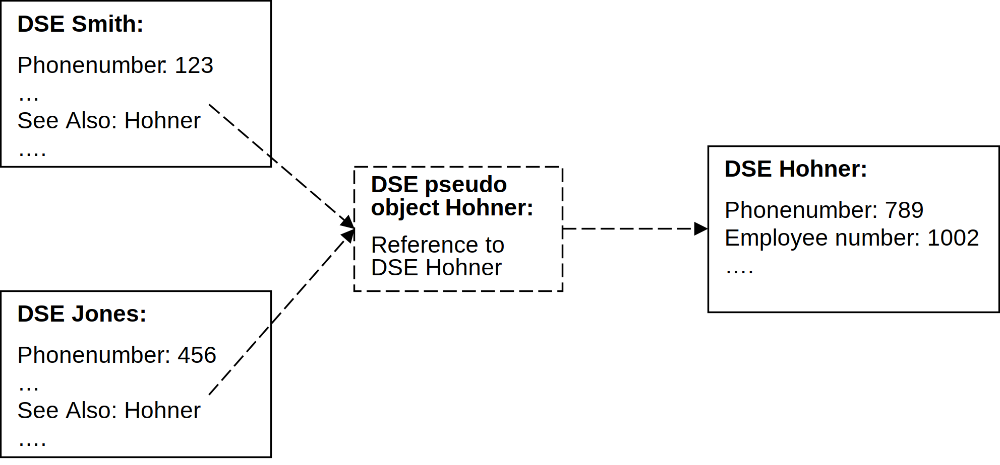
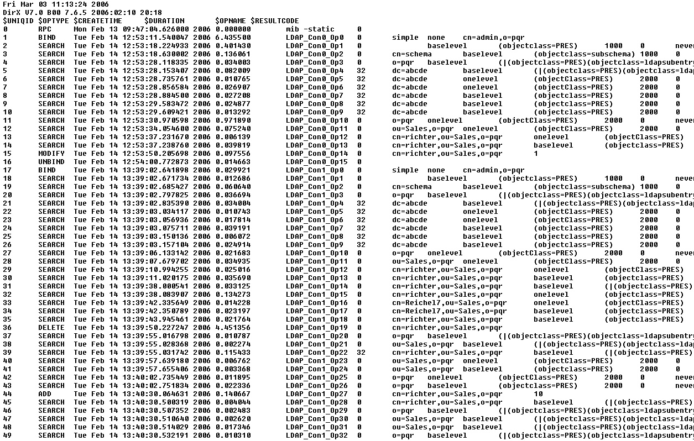

Administration Reference
Copyright
- Copyright
- Preface
- 1. DirX Directory Commands
- 1.1. dirxadm
- 1.1.1. Synopsis
- 1.1.2. Purpose
- 1.1.3. Arguments
- 1.1.4. Options
- 1.1.5. Description
- 1.1.6. Tcl Command Language
- 1.1.7. The Abbreviation Files
- 1.1.8. System Administrators and dirxcp
- 1.1.9. Invoking dirxadm
- 1.1.10. Terminating dirxadm
- 1.1.11. Exit Codes
- 1.1.12. Startup Scripts
- 1.1.13. Command Syntax
- 1.1.14. Line Continuation
- 1.1.15. Command Processing
- 1.1.16. Abbreviations
- 1.1.17. Tcl Variables
- 1.1.18. Line Recall and Editing
- 1.1.19. Performing Operating System Commands
- 1.1.20. Example
- 1.1.21. Return Values
- 1.1.22. Viewing Output
- 1.1.23. See Also
- 1.1.24. abbr (dirxcp, dirxadm)
- 1.1.25. attr (dirxadm)
- 1.1.26. audit (dirxadm)
- 1.1.27. db (dirxadm)
- 1.1.28. dse (dirxadm)
- 1.1.29. ldap (dirxadm)
- 1.1.30. lob (dirxadm)
- 1.1.31. nmi (dirxadm)
- 1.1.32. progsvr (dirxadm)
- 1.1.33. sob (dirxadm)
- 1.1.34. sys (dirxadm)
- 1.1.35. util (dirxadm)
- 1.2. dirxcp
- 1.2.1. Synopsis
- 1.2.2. Purpose
- 1.2.3. Arguments
- 1.2.4. Options
- 1.2.5. Description
- 1.2.6. Tcl Command Language
- 1.2.7. The Directory Client Configuration File
- 1.2.8. Bind Types and Bind IDs
- 1.2.9. The Abbreviation Files
- 1.2.10. Accessing Operations and Entries
- 1.2.11. Invoking dirxcp
- 1.2.12. Terminating dirxcp
- 1.2.13. Exit Codes
- 1.2.14. Startup Scripts
- 1.2.15. Command Syntax
- 1.2.16. Line Continuation
- 1.2.17. Command Processing
- 1.2.18. Abbreviations
- 1.2.19. Tcl Variables
- 1.2.20. Line Recall and Editing
- 1.2.21. Performing Operating System Commands
- 1.2.22. Example
- 1.2.23. Return Values
- 1.2.24. Viewing Output
- 1.2.25. See Also
- 1.2.26. abbr (dirxadm, dirxcp)
- 1.2.27. args (dirxcp)
- 1.2.28. ldapargs (dirxcp)
- 1.2.29. obj (dirxcp)
- 1.2.29.1. Synopsis
- 1.2.29.2. Purpose
- 1.2.29.3. Arguments
- 1.2.29.4. Operations
- 1.2.29.4.1. obj bind
- 1.2.29.4.2. obj compare
- 1.2.29.4.3. obj create
- 1.2.29.4.4. obj delete
- 1.2.29.4.5. obj help
- 1.2.29.4.6. obj moddn
- 1.2.29.4.7. obj modify
- 1.2.29.4.8. obj nextpage
- 1.2.29.4.9. obj operations
- 1.2.29.4.10. obj search
- 1.2.29.4.11. obj show
- 1.2.29.4.12. obj starttls
- 1.2.29.4.13. obj unbind
- 1.2.30. util (dirxcp)
- 1.3. dirxauddecode
- 1.4. dirxaudstatistics
- 1.5. dirxdumplog
- 1.6. dirxbackup
- 1.7. dirxmodify
- 1.8. dirxconfig
- 1.9. dbaminit
- 1.10. dbamconfig
- 1.11. dbamboot
- 1.12. dirxload
- 1.13. dbamverify
- 1.14. dbamdevinfo
- 1.15. dirxextop
- 1.16. dirxhostinfo
- 1.1. dirxadm
- 2. DirX Directory Files
- 2.1. DirX Directory Environment Variable Ini File
- 2.2. Abbreviation Files
- 2.2.1. Purpose
- 2.2.2. Description
- 2.2.3. OID Definition Block
- 2.2.3.1. Matching Rules (sorted by abbreviation)
- 2.2.3.2. Object Classes (sorted by abbreviation)
- 2.2.3.3. Supported Application Contexts (sorted by abbreviation)
- 2.2.3.4. Administrative Roles (sorted by abbreviation)
- 2.2.3.5. Access Control Schemes (sorted by abbreviation)
- 2.2.3.6. Encoded Information Types (sorted by abbreviation)
- 2.2.4. Attribute Definition Block (sorted by abbreviations)
- 2.2.5. Structured Class Definition Block for Structured Attribute Components
- 2.2.6. Example
- 2.3. LDAP Server Configuration File
- 2.4. HTTP Server Configuration File
- 2.5. Directory Client Configuration File
- 2.6. LDAP Server Key Material
- 2.7. SSL/TLS Certificate Database
- 2.8. Key Database Used for Client Authentication
- 2.9. IDMS Configuration and Key Material Files
- 2.10. SNMPv2 Trap Configuration File
- 2.11. dirxauddecode Configuration File
- 2.12. syslog Configuration File
- 2.13. Logging Configuration Files
- 2.14. Code Signing Files
- 2.15. DirX Directory License Files
- 3. DirX Directory Default DSA Schema
- 4. Environment Variables
- 5. IP Port Numbers
- 6. File Locations
- Appendix A: LDAP MIB Tables
- Appendix B: Exit Codes
- Appendix C: DBAM MIB Tables
Preface
This manual is reference for the DirX Directory (DirX). It consists of the following sections:
-
Chapter 1 contains reference pages for the dirxadm (DirX Directory Administration Program), dirxcp (DirX Directory Command Line DUA), dirxauddecode, dirxdumplog, dirxbackup, dirxmodify, dirxconfig, dbaminit, dbamconfig, dbamboot, dirxload, dbamverify, dbamdevinfo, dirxextop and dirxhostinfo commands.
-
Chapter 2 contains reference pages for DirX Directory files.
-
Chapter 3 describes the default schema supplied with the DirX Directory system.
-
Chapter 4 describes environment variables used by DirX Directory.
-
Chapter 5 provides an overview about port numbers used and configurable by DirX Directory.
-
Chapter 6 provides a diagram of the default DirX Directory structure.
-
Appendix A provides information about the LDAP MIB tables.
-
Appendix B provides information about the exit codes of the DSA (dirxdsa) and LDAP server (dirxldapv3) process.
-
Appendix C provides information about the DBAM MIB tables.
DirX Directory Documentation
DirX Directory provides a powerful set of documentation that help you to configure you directory server and its applications.
DirX Directory Document Set
The DirX Directory document set consists of the following manuals:
-
DirX Directory Introduction. Use this book to obtain a description of the concepts of DirX Directory.
-
DirX Directory Administration Guide. Use this book to understand the basic DirX Directory administration tasks and how to perform them with the DirX Directory administration tools.
-
DirX Directory Administration Reference (this manual). Use this book to obtain reference information about DirX Directory administration tools and their command syntax, configuration files, environment variables and file locations of the DirX Directory installation.
-
DirX Directory Syntaxes and Attributes. Use this book to obtain reference information about DirX Directory syntaxes and attributes.
-
DirX Directory LDAP Extended Operations. Use this book to obtain reference information about DirX Directory LDAP Extended Operations.
-
DirX Directory External Authentication. Use this book to obtain reference information about external authentication.
-
DirX Directory Supervisor. Use this book to obtain reference information about the DirX Directory supervisor.
-
DirX Directory Plugins for Nagios. Use this book to obtain reference information about DirX Directory plugins for Nagios.
-
DirX Directory Disc Dimensioning Guide. Use this book to understand how to calculate and organize necessary disc space for initial database configuration and enhancing existing configurations.
-
DirX Directory Guide for CSP Administrators. Use this book to obtain information about installing, configuring and managing DirX Directory in the context of a Certificate Provisioning Service operating in accordance with regulations like the German “Signaturgesetz”.
-
DirX Directory Release Notes. Use this book to install DirX Directory and to understand the features and limitations of the current release.
Notation Conventions
Boldface type
In command syntax, bold words and characters represent commands or keywords that must be entered exactly as shown.
In examples, bold words and characters represent user input.
Italic type
In command syntax, italic words and characters represent placeholders for information that you must supply.
[ ]
In command syntax, square braces enclose optional items.
{ }
In command syntax, braces enclose a list from which you must choose one item.
In Tcl syntax, you must actually type in the braces, which will appear in boldface type.
|
In command syntax, the vertical bar separates items in a list of choices.
...
In command syntax, ellipses indicate that the previous item can be repeated.
install_path
The exact name of the root of the directory where DirX Identity programs and files are installed. The default installation directory is userID_home_directory*/DirX Identity* on UNIX systems and C:\Program Files\DirX\Identity on Windows systems. During installation the installation directory can be specified. In this manual, the installation-specific portion of pathnames is represented by the notation install_path.
1. DirX Directory Commands
DirX Directory provides the following administrative programs for maintaining the directory service:
-
The DirX Directory Administration Program (dirxadm), which manages the DSA. This program supports the following objects:
-
abbr—Displays valid abbreviations for object classes, attributes, and structured attributes
-
audit—Manages audit logging
-
db—Manages database configuration
-
dse—Manages DSE and policy administration
-
ldapPerforms LDAP server administration
-
lob—Manages LDIF agreements
-
nmi—Displays network management information from the DSA management information base (MIB)
-
progsvr—Manages the Progsvr
-
sob—Manages shadowing agreements
-
sys—Performs directory system administration
Modifications performed by using dirxadm bypass the LDAP cache and the distribution over shadowing.
-
-
The DirX Directory Command Line DUA (dirxcp), which manages object entries in the directory information tree. This program supports the following objects:
-
abbr—Displays valid abbreviations for object classes, attributes, and structured attributes
-
args—Manages service controls associated with a DAP directory operation
-
ldapargs—Manages service controls associated with an LDAP directory operation
-
obj—Manages directory objects
-
-
The dirxauddecode command, which displays audit log files.
-
The dirxdumplog command, which displays the contents of a binary directory service log file or a binary transport *interface log file.
-
The dirxbackup command, which saves, restores, and verifies a DBAM database.
-
The dirxmodify command, loads an LDIF content / change file into a DBAM database.
-
The dirxconfig command, which creates the properties of a profile that describes a DBAM database (profile) and initializes a DBAM database.
-
The dbaminit command, which initializes a file-based DBAM database.
-
The dbamconfig command, which creates, deletes, and displays the properties of a profile that describes a DBAM database (profile).
-
The dbamboot command, which initializes a DBAM database.
-
The dirxload command, which loads LDIF content files into a DBAM database.
-
The dbamverify command, which verifies the consistency of a DBAM database.
-
The dbamdevinfo command, which displays information about the capacity of the logical and the attribute index specific devices of the database.
-
The dirxextop command, which performs a single LDAP extended operation.
-
The dirxhostinfo command, which provides information about host name and presentation addresses.
On Windows Server, perform the DirX Directory commands with administrator rights. Use the account that installed the DirX Directory service. Use Run as… from the context-sensitive menu to run the command prompt as administrator.
The remainder of this chapter describes the DirX Directory commands and provides command syntax and examples. It is organized as follows: the dirxadm command is described first, followed by descriptions of all the objects it supports in alphabetical order. The dirxcp command is next, followed by the objects it supports in alphabetical order. (Note that both dirxadm and dirxcp support the abbr object. This object is described once in the dirxadm section.) Following the dirxadm and dirxcp commands and objects, the dirxauddecode, dirxdumplog, dirxbackup, dirxmodify, dirxconfig, dbaminit, dbamconfig, dbamboot, dirxload, dbamverify, dbamdevinfo, dirxextop, and dirxhostinfo commands are described.
|
DirX Directory commands in scripts can use the backslash (\) as the line continuation character. In interactive mode, there is no continuation character. Instead, you must continue typing. The line automatically wraps if your characters extend beyond the line end. If you press the Enter/Return key, the information you have typed is sent to the system for processing. You should press the Enter/Return key only when you have typed all information required for the command to process. The majority of the sample commands in this chapter uses continuation character and appear as they would appear in a script. The commands are presented this way so that they can be formatted for readability. |
1.1. dirxadm
1.1.1. Synopsis
dirxadm [script_name [arg1] [arg2 …]] | -c command | -V]
1.1.2. Purpose
Manages a directory system agent (DSA). The dirxadm program supports the following objects:
- abbr
-
Displays valid abbreviations for object classes, attributes, and structured attributes
- audit
-
Manages audit logging
- db
-
Manages database configuration
- dse
-
Manages DSE and policy administration that cannot be performed by using dirxcp
- ldap
-
Performs LDAP server administration
- lob
-
Manages LDIF agreements
- nmi
-
Displays network management information from the DSA management information base (MIB)
- progsvr
-
Manages the Progsvr
- sob
-
Manages shadowing agreements
- sys
-
Performs directory system administration
There are some utilities also which are described in the util (dirxadm) page. A complete list of these utilities is displayed when performing a dse commands operation.
1.1.3. Arguments
script_name
-
Filename of a user-defined script containing dirxadm commands.
arg1 … argn
-
Specify arguments to the user-defined script specified in script_name.
1.1.4. Options
-c command
-
Executes the dirxadm or Tcl commands or commands specified by command.
-V
-
Displays the DirX Directory product version, in the format:
product_version build_id date time
For example:
DirX Directory V9.0 9.4.428 2023:03:23 20:10 64-Bit
The dirxadm initialize operation also writes the build version to the dirxadm trace file.
1.1.5. Description
The dirxadm program is a command-line interface that system administrators can use to manage the DSA. You can use it to:
-
Administer the DSEs and DSA policies using operations such as create, modify, delete, list, and show.
-
Administer the operational bindings (LDIF agreements and shadowing agreements) using operations that permit you to create an operational binding, modify an existing binding, display the details of operational bindings, and so on.
-
Configure the database used by the DSA.
-
Display the abbreviations that it uses for attributes.
-
Display network management information contained in the DSA’s management information base.
-
Activating, deactivation and configuring audit logging.
-
Perform system administration tasks, such as starting and stopping the DSA, activating and deactivating logging.
The DSA and the LDAP server save all update operations issued by dirxadm in the file ADM*process_id.number. This file is located in the server’s directory for log files. (See section *Logging Configuration Files for details.)
Note that every operation stops after 25 seconds except the dse list and the dse search operation (see dse (dirxadm) page for details), the lob and sob operations, the db attrconfig operation. The lob and sob operations stop after 5 minutes, the db attrconfig operation after 3 days.
1.1.6. Tcl Command Language
The DirX Directory administration program is built on a portable command language called the tool command language (Tcl). Tcl permits the use of variables, if statements, list-processing functions, loop functions, and many other features commonly found in command languages. The program extends these features to provide a set of commands for manipulating DirX Directory administration objects. The program also includes task scripts to help administrators perform some routine DirX Directory management functions.
1.1.6.1. Escaping in Distinguished Names and Attribute Values
The following special characters must be escaped in distinguished names and attribute values:
-
a SPACE or # character at the beginning of a string
-
a SPACE character at the end of a string
-
the characters comma (,), plus sign (+), minus sign (-), quotation mark ("), backslash (\), lower than (<), greater than (>), equal (=), semicolon (;), dollar ($), quote ('), colon (:), or brackets ((, ), \{, })
To escape these characters
-
prefix the character by a backslash, for example
O=Sue\, Grabbit and Runn -
enclose the distinguished name or attribute in curly brackets (\{}), for example
\{O=Sue, Grabbit and Runn} -
enclose the distinguished name or attribute in quotation marks (""), for example
"O=Sue, Grabbit and Runn". You must use quotation marks if your string contains a Tcl variable.
See also section Reserved Characters in chapter DirX Directory String Representation for DAP Binds in DirX Directory Syntaxes and Attributes.
1.1.6.2. Escaping in Filenames
The backslash character (\) is a reserved character in Tcl. A backslash in a file name must therefore be escaped, for example tmp\\config.out.
Tcl provides a command that converts the specified file name into the plattform dependent file name. The syntax of this command is as follows:
-
[file nativename filename]
Here is an example how to use this command in dirxadm:
dirxadm> import_dbconfig [file nativename tmp/config.out]
1.1.7. The Abbreviation Files
The DirX Directory administration program uses the DirX Directory abbreviation files (dirxabbr and dirxabbr-ext*) to convert attribute abbreviations and object identifier strings to ASN.1 object identifiers. The program also uses these files to determine the attribute syntax, the full name of the attribute, and other information.
1.1.8. System Administrators and dirxcp
Because the dirxadm program can bypass access control information and schema rules, it is intended for use by system administrators who possess a thorough understanding of the directory information database (DIB) and its maintenance. It is not intended for end users. Directory service end users can use the dirxcp command to access the DSA, since this program performs access control.
System administrators using dirxadm should take care that they do not:
-
Create entries that are inconsistent with the schema in force, because clients such as dirxcp will not be able to access these entries
-
Create attributes that do not belong to the entry’s object class
-
Omit mandatory object class attributes
-
Create erroneous references
-
Omit operational attributes managed by the DSA
1.1.9. Invoking dirxadm
You can invoke dirxadm commands in interactive mode and command mode.
1.1.9.1. Interactive Mode
Activate interactive mode by entering the dirxadm command without any arguments. At the dirxadm prompt, enter a dirxadm or Tcl command; dirxadm runs the command, displays the result, and is ready to accept another command.
% dirxadm dirxadm> dse show /O=my-company/OU=Sales/CN=Tinker dirxadm>
Instead of entering a dirxadm or Tcl command enter the keyword source followed by the filename of a script that contains dirxadm commands, other valid Tcl commands, or both, for example
dirxadm> source myown.tcl
dirxadm then runs the script, displays the result, and is ready to accept another command.
1.1.9.2. Command Mode
Activate command mode from the system prompt by using one of the following methods:
-
Enter the dirxadm command with the filename of a script that contains dirxadm commands, other valid Tcl commands, or both, as follows:
% dirxadm myown.tcl
-
Enter the dirxadm command with the -c option followed by a list that contains one or more dirxadm commands or Tcl commands, for example:
% dirxadm -c “dse search -onelevel -p;dse show -p”
Enter multiple commands by separating them with a semicolon (;) and enclosing the commands in quotation marks (“”). Remember to escape shell metacharacters (for example, by enclosing them in quotation marks). Multiple commands must be on a single line.
When you use the -c option, operation results return to the interpreter, not to the shell. if you enter multiple operations, the output of only the last operation is returned to the shell. You can solve this problem by using the following workaround:
% dirxadm -c “puts [dse show /C=de -allattr]; puts [dse show -p]”
1.1.10. Terminating dirxadm
Terminate an interactive dirxadm session by using the exit or quit commands. Use the following syntax:
-
exit n
-
quit n
Use the n argument to specify the exit value returned to the shell. The following example terminates a session and returns an exit value of 56 to the shell:
dirxadm> exit 56
1.1.11. Exit Codes
By default, dirxadm returns zero (0) on success and a non-zero value if a command fails. The exit codes for failure are:
1 |
An invalid command line was specified, for example, an invalid option (for example, you specified dirxadm -z) |
2 |
The specified file does not exist (for example, dirxadm zz.tcl) |
3 |
The evaluation of the file failed (for example, because of an incorrect command in the file) |
4 |
The evaluation of the command failed (for example, because of an incorrect command in the dirxadm -c command line) |
5 |
Tcl initialization failed |
8 |
Initialization of the thread environment failed |
1.1.12. Startup Scripts
When you invoke dirxadm, the following script files are run in the order shown:
/init.tcl
-
Contains the standard Tcl initialization scripts with definitions for the unknown command and the auto_load facility. The Tcl command info library returns the location of the file init.tcl.
$dirxadm_library/init.dirxadm
-
Contains the initialization scripts that implement the dirxadm commands and tasks. The implementation sets the Tcl variable dirxadm_library to install_path/client/conf.
$HOME/.dirxadmrc
-
Contains user customizations.
$TCL_PATH/user_script.tcl
-
Contains user-defined scripts within one or more user-specified directories defined with the TCL_PATH environment variable.
1.1.13. Command Syntax
A dirxadm command has the following syntax:
-
[object] operation [argument] [-option [opt_arg]] …
where:
object
-
Specifies the name of a dirxadm administration object. The dirxadm program supports the following objects:
abbr
Displays valid abbreviations for object classes, attributes, and structured attributes
audit
Manages audit logging
db
Manages database configuration
dse
Manages DSE and policy administration that cannot be performed by using dirxcp
ldap
Performs LDAP server administration
lob
Manages LDIF agreements
nmi
Displays network management information from the DSA management information base (MIB)
progsvr
Manages the Progsvr
sob
Manages shadowing agreements
sys
Performs directory system administration
Specifying an administration object is optional; if you do not specify an object on the command line, the specified operation is performed on either the dse or the sys administration object. For ambiguous operations, the default object is dse.
For complete descriptions of these administration objects, refer to the individual object reference pages, for example, the abbr reference page.
operation
-
Specifies the name of an action such as create, show, or delete, that is to be performed on an administration object. Refer to the individual object reference pages for complete descriptions of the operations supported by each dirxadm object. Common operations for each object are help and operations.
argument
-
Specifies the name of one or more specific objects to operate on. Refer to the individual object reference pages for descriptions of the arguments supported by various objects.
-option
-
Specifies a qualifier that controls the precise behavior of a dirxadm command. Most, but not all, dirxadm commands take options. Some options take an argument, opt_arg, which can be a name or a value.
1.1.14. Line Continuation
dirxadm commands in scripts can use the backslash character (\) as the line continuation character. In interactive mode, there is no continuation character. Instead, you must continue typing. The line automatically wraps if your characters extend beyond the line end. If you press the Enter/Return key, the information you have typed is sent to the system for processing. You should press the Enter/Return key only when you have typed all information required for the command to process.
1.1.15. Command Processing
The dirxadm command supports the Tcl built-in commands as well as its own commands. A command unknown to dirxadm is passed to the unknown command, which evaluates it as follows:
-
If unknown finds the command is in a dirxadm script file, dirxadm runs it.
-
If unknown finds that the command is an executable Linux program, dirxadm runs it. Consequently, you can invoke any Linux command from the dirxadm prompt, for example, ls -l.
-
If unknown finds that you invoked the command at the top level of the dirxadm shell and that the command requests C-shell like history substitution (such as !!, !*number or *^*old\^new), *dirxadm emulates the C shell’s history substitution.
-
If unknown finds that you invoked the command at the top level of the dirxadm shell and the command is a unique abbreviation for another command, dirxadm runs that command.
1.1.16. Abbreviations
The dirxadm command uses two mechanisms to abbreviate object names, operation names, and options to the shortest unique string in interactive commands.
The first mechanism relies on the unknown command (described in the Command Processing section of this reference page).
The second mechanism is built into the individual dirxadm commands themselves. This mechanism allows the operation name to be abbreviated to the shortest unique string supported by the object, and the option names to be abbreviated to the shortest unique string representing an option supported by an object and operation. For example, consider the following dirxadm commands:
show -pretty
abbr operations
In the abbreviated form, the same operation can be entered as follows:
show -p
abbr o
Although abbreviating commands is a good way to save keystrokes in typing interactive commands, abbreviations are not recommended for use in scripts. New procedures in scripts can cause abbreviations to become ambiguous. Furthermore, abbreviations are not always portable. When scripts move to other machines, some definitions may be left behind so scripts will not work correctly. Always spell out complete names in scripts.
1.1.17. Tcl Variables
All dirxadm commands set several Tcl variables on invocation. The variables contain the name of the directory in which startup scripts are stored, the return value of the last command, and so on. To avoid unnecessary typing, you can substitute the value of these variables into the next command.
Tcl variables behave just like other variables in dirxadm. Thus, you can trigger variable substitution by prepending a dollar sign ($) before the name of the variable. Alternatively, you can trigger substitution by using set. The Tcl variables can only be set using the dirxadm program.
The dirxadm program defines the following variables:
_cwo
-
Holds the current DSA-specific entry (DSE). (The abbreviation “cwo” stands for “current working object”.) The following command sets the current working DSE:
dirxadm> set _cwo /O=my-company
The _cwo variable then contains the following value:
dirxadm> puts $_cwo /O=my-company
Note that the variable is set to the specified value only if it exists in the directory information tree (DIT); if the value does not exist, the command returns an error. The default current working DSE is the root DSE.
dirxadm_library
-
Holds the name of the directory in which the dirxadm startup scripts are stored. The user cannot set this variable.
_t61
-
Holds a flag that indicates whether user-specified strings are represented in T61 format. By default, dirxadm assumes that strings are specified in local format (ISO8859-1), and that conversion to T61 format must be performed. If this variable is set to TRUE, dirxadm does not convert user-specified strings.
_localcode
-
Specifies the character set, with one of the following keywords:
-
Latin1 - Default Windows character set (only used in data files). This is the default value.
-
UTF8 - LDAP / Tcl character set (only used in data files).
-
PC850 - PC DOS character set only (only used in DOS windows).
This variable is supported only on Windows systems.
You can specify attribute values in different code sets independent of the value of this variable by using Tcl operations. For example the value
sn=k[encoding convertfrom utf-8 "\xc3\xcb"]bel
specifies the value of the surname (sn) attribute in UTF-8 code. -
1.1.18. Line Recall and Editing
You can edit a line before it is sent to dirxadm by using control characters and escape sequences. To use a control character, press and hold down the Ctrl key while pressing the appropriate character key. To use an escape sequence, press and release the Esc key and then press and release one or more character keys. Escape sequences are case sensitive; control characters are not.
You can enter an editing command anywhere on a line. In addition, you can press the RETURN key anywhere on the line.
To indicate that an action should be repeated a desired number of times, precede the escape or control characters with Esc n, where n is the number of times to repeat the action. For example ESC 4 Ctrl-d (pressing the Esc key and the number 4 key and then pressing and holding down the Ctrl key while pressing the d key) deletes the next four characters on a line. ESC 4 Esc DEL deletes the previous four words on a line.
1.1.18.1. Control Characters for Editing
Use the control characters shown in the following table for line editing. For example to move to the beginning of a line, press and hold down the Ctrl while pressing the A key.
| Control Character | Action Performed |
|---|---|
Ctrl a |
Move to the beginning of the line. |
Ctrl b |
Move left (backward) one character. You can repeat this action by preceding the control characters with Esc n. |
Ctrl d |
Delete the character highlighted by the cursor. You can repeat this action by preceding the control characters with Esc n. |
Ctrl e |
Move to the end of the line. |
Ctrl f |
Move right (forward) one character. You can repeat this action by preceding the control characters with Esc n. |
Ctrl g |
Sound the terminal bell. |
Ctrl h |
Delete character before the cursor. You can repeat this action by preceding the control characters with Esc n. |
Ctrl i |
Complete the filename. (The TAB key performs the same function.) (See Filename Completion.) |
Ctrl j |
Send the completed line to dirxadm. (The RETURN key performs the same function.) |
Ctrl k |
Delete to the end of the line (or column). You can repeat this action by preceding the control characters with Esc n. |
Ctrl l |
Redisplay the line. |
Ctrl n |
Get the next line from history You can repeat this action by preceding the control characters with Esc n. |
Ctrl p |
Get previous line from history You can repeat this action by preceding the control characters with Esc n. |
Ctrl r |
Search backward (or forward if n) through history for text; start line if text begins with an up arrow. |
Ctrl t |
Transpose characters. |
Ctrl v |
Insert next character even if it is an edit command. |
Ctrl w |
Delete to the mark. See Esc SPC in the table of escape characters. |
Ctrl x Ctrl x |
Exchange the current location and mark. See Esc SPC in the table of escape characters. |
Ctrl y |
Restore the last deleted text to the current cursor location. |
Ctrl [ |
Start an escape sequence (The Esc key performs the same function.) |
Ctrl ]c |
Move forward to the character indicated by c. |
Ctrl ? |
Delete the character before the cursor You can repeat this action by preceding the control characters with Esc n. |
1.1.18.2. Escape Characters for Editing
To use an escape character, press the Esc key, release it, and then press the appropriate character key. For example to delete the previous word, press the Esc key, then the Ctrl key while pressing the H (capital H) key. Escape characters are case sensitive, so follow the capitalization in the table.
| Escape Sequence | Action Performed |
|---|---|
ESC Ctrl H |
Delete the previous word. (The action can also be performed by the BACKSPACE key.) You can repeat this action by preceding the escape characters with Esc n. |
ESC SPC |
Set the mark. (This action can also be performed by the SPACE BAR.) Refer to the Ctrl x Ctrl x and Ctrl w control characters in the control character table |
ESC . |
Get the last word from the previous line. You can repeat this action by preceding the escape characters with Esc n. |
ESC ? |
Show possible filename completions. (See Filename Completion.) |
ESC < |
Move to the start of history. |
ESC > |
Move to the end of history. |
ESC b |
Move backward one word. You can repeat this action by preceding the escape characters with Esc n. |
ESC d |
Delete the word highlighted by the cursor. You can repeat this action by preceding the escape characters with Esc n. |
ESC f |
Move forward one word. You can repeat this action by preceding the escape characters with Esc n. |
ESC l |
Make the highlighted word lowercase. You can repeat this action by preceding the escape characters with Esc n. |
ESC u |
Make the highlighted word uppercase. You can repeat this action by preceding the escape characters with Esc n. |
ESC y |
Restore the last deleted text to the current cursor location. |
ESC w |
Copy the text from the cursor position up to the up to mark. |
ESC nn |
Set repeat count to the number indicated by nn. |
1.1.18.3. Filename Completion
The dirxadm command supports filename completion. For example, suppose the root directory has the following files in it:
-
readme
-
readme.txt
If you type a command and characters and then press the TAB key, dirxadm completes as much of the filenames as possible given the characters supplied by characters. For example, if you type ls and then press the TAB key, dirxadm completes the filename the name as far as readme. However, because readme could be the file named readme or the file named readme.txt, dirxadm cannot complete the filenames, so it beeps to signal the conflict. If you then press Esc-?, dirxadm displays the two possible names: readme and readme.txt and prompts you with ls readme. You can then complete the entire filename or enough of the filename for dirxadm to complete it.
1.1.19. Performing Operating System Commands
On Linux, operating system commands of the shell cannot be called directly from within dirxadm. They can be called in the following way:
dirxadm> exec operating_system_command
For example, to issue a Linux "join" command, you must type
dirxadm> exec join file1 file2
On Windows, operating system commands of the command interpreter cannot be called directly from within dirxadm. They be called in the following way:
dirxadm> cmd /c operating_system_command
For example, to issue a Windows "time" command, you must type
dirxadm> cmd /c time /t
Predefined procedures for listing a directory are provided that allow you to type the following commands directly:
-
dir options
-
ls
-
ls -l
1.1.20. Example
The following command sequence illustrates the use of dirxadm and Tcl commands to create an entry on the country level. In this example, dirxadm has already been invoked.
puts "create /C=DE"
catch { create /C=DE -attr _attribute_list_ } status
if {$status == ""}
then {puts "operation ok"}
else {puts "$status"}1.1.21. Return Values
All dirxadm operations return either a NULL to indicate the successful completion of an operation or a list of information requested by the user (such as the results of a search operation). If an error occurs, dirxadm returns an error message string. The program uses the Tcl native error handling facility to log additional error information returned from commands. This information is stored in two global variables:
-
The errorInfo variable, which contains the stack trace of the error messages.
-
The errorCode variable, which is a Tcl list that contains two elements, DIRXADM (which identifies the program) and the numeric value of the error code.
The following table lists the error codes specific to dirxadm and the meanings of those error codes. Some dirxcp error codes may also be returned by dirxadm. Refer to the dirxcp reference page for a description of dirxcp errors.
|
|
|
|
|
|
|
|
|
|
|
|
|
|
|
|
|
|
|
|
|
|
|
|
|
|
|
|
|
|
|
|
|
|
|
|
|
|
|
|
|
|
|
|
|
|
|
|
|
|
|
|
|
|
|
|
|
|
|
|
|
|
|
|
|
|
|
|
|
|
|
|
|
|
|
|
|
|
|
|
|
|
|
|
|
|
|
|
|
|
|
|
|
|
|
|
|
|
|
|
|
|
|
|
|
|
|
|
|
|
|
|
|
|
|
|
|
|
|
|
|
|
|
|
|
|
|
|
|
|
|
|
|
|
|
|
|
|
|
|
|
|
|
|
|
|
|
|
|
|
|
|
|
|
|
|
|
|
|
|
|
|
|
Note: The following message is returned if there is a problem with the request sent by dirxadm.
Note: One of the following messages can be returned if error is not with the dirxadm request.
|
|
|
|
|
|
|
|
|
|
|
|
|
|
|
|
|
|
|
|
|
|
The following message format is used for reporting authentication problems coming via RPC: Communication problem. where message is an RPC generated error message indicating the authentication problem. The following messages can be returned:
|
|
|
|
|
|
|
|
|
|
|
|
|
|
|
|
|
|
|
|
|
|
|
|
|
|
Note: The following message is displayed if an operation system command fails (e.g., copy, remove, link) for an unknown reason: Operation not successful: errno = error.h_error_number Note: The following message is displayed if the DSA returns an unknown error (which normally cannot occur): Operation not successful: value = DSA_error_number |
|
|
|
|
|
|
|
|
|
|
|
|
|
DB operation rejected by the DSA - %s
|
|
|
|
|
|
|
|
|
|
|
|
|
|
|
|
|
|
|
|
|
|
|
|
|
|
|
|
|
|
|
|
|
|
|
|
|
|
|
|
|
|
|
|
|
|
|
|
|
|
|
|
|
|
|
|
|
|
|
|
|
|
|
|
|
|
|
|
|
The program also provides a catch command to help scripts catch errors and invoke error handlers.
1.1.22. Viewing Output
In interactive mode, Tcl lists are written to stdout. However, in command-line mode, the Tcl lists are not displayed. To display them, use the Tcl command puts. For example, the following commands:
% dirxadm -c “puts [dse show /O=my-company/OU=ap11/CN=naik]”
% dirxadm -c “catch {dse show /O=my-company/OU=ap11/CN=naik} result;
puts $result”
print the results of a dse show operation to stdout.
Many dirxadm operations take a -pretty option, which causes the results of the operation to be formatted into tables. Each page of -pretty output is 23 lines in length. Use the following dirxadm scrolling commands to view multiple pages of output:
n |
View the nth page |
-n |
Skip n pages backward |
+n |
Skip n pages forward |
$ |
View the last page |
q |
Exit viewing |
SPACE |
Advance to the next page |
CR |
Advance one line |
Note that if you specify the -pretty option, the return value is NULL, not a Tcl list.
1.1.23. See Also
abbr (Chapter 1), audit (Chapter 1), Abbreviation Files (Chapter 2), db (Chapter 1),
dse (Chapter 1), ldap (Chapter 1), lob (Chapter 1), nmi (Chapter 1), sob (Chapter 1),
sys (Chapter 1)
1.1.24. abbr (dirxcp, dirxadm)
1.1.24.2. Purpose
A dirxcp and dirxadm object that provides information about abbreviations for directory service attributes.
1.1.24.4. Operations
1.1.24.4.1. abbr help
Returns help information about the abbr object and its operations. The syntax is as follows:
-
abbr help [operation | -verbose]
- -verbose
-
Displays information about the abbr object.
Used without an argument or option, the abbr help command returns brief information about each abbr operation. Use the operation argument to return a description of the options associated with the operation you specify. Alternatively, you can use the -verbose option to return a description of the abbr object itself.
abbr help
The sample command output is:
|
|
|
|
|
|
1.1.24.4.2. abbr operations
Returns a list of operations that can be performed on the abbr object. The syntax is as follows:
-
abbr operations
The list of available operations is in alphabetical order except for help and operations, which are listed last.
1.1.24.4.3. abbr show
Shows the following information:
-
Abbreviations, full names, and object identifiers of object classes, schema object classes, matching rules, knowledge matching rules, supported application contexts, administrative roles, access control schemes and attributes
-
Abbreviations, full names, and structured attribute class names of structured attribute components.
The syntax is as follows:
-
abbr show [-pretty]
-pretty
-
Displays the results of the operation in tabular format.
By default, the results of the show operation are displayed as a Tcl list, which is composed of the following elements:
{OIDAbbrList} {AttributeAbbrList} {ComponentAbbrList}
where:
OIDAbbrList
-
Is a Tcl list that represents the abbreviations for object classes, schema object classes, matching rules, knowledge matching rules, supported application contexts, administrative roles and access control schemes. Each item in the list is composed of the abbreviation, the full name, and the object identifier. For example:
... {C Country 2.5.6.2} … {ORG Organization 2.5.6.4} …
AttributeAbbrList
-
Is a Tcl list that represents the attribute abbreviations. Each item in the list is composed of the attribute abbreviation, full name, and object identifier. For example:
... {C Country-Name 2.5.4.6} … {CN Common-Name 2.5.4.3} …
ComponentAbbrList
-
Is a Tcl list that represents the abbreviations of structured attribute components. Each item in the list is composed of the structured attribute class name, the component abbreviation, and the full name. For example:
... {TELEX_N {AB Answerback} {CC Country-Code} {TN Telex-Number} …
Use the -pretty option to display the results in a tabular, more readable format.
abbr show -pretty
The command output follows:
OID Abbreviations (for object classes, etc.):
|
|
|
|
|
|
|
|
|
|
|
|
|
|
|
|
|
|
Attribute Abbreviations:
|
|
|
|
|
|
|
|
|
|
|
|
|
|
|
|
|
|
|
|
|
|
|
|
|
|
|
Component Abbreviations for …
1.1.24.5. See Also
Abbreviation Files (Chapter 2), dirxadm (Chapter 1), dirxcp (Chapter 1).
1.1.25. attr (dirxadm)
1.1.25.1. Synopsis
attr help [operation]
attr operations
attr outsourcing -add attr_name | -rem attr_name | -show
1.1.25.2. Purpose
A dirxadm object that manages the storage of attribute types.
1.1.25.4. Operations
1.1.25.4.1. attr help
Returns help information about the attr object and its operations. The syntax is as follows:
-
attr help [operation]
Used without an argument or option, the attr help command returns brief information about each attr operation. Use the operation argument to return a description of the options associated with the operation you specify.
1.1.25.4.2. Example
attr help
The sample command output is:
|
|
|
|
|
|
1.1.25.4.3. attr operations
Returns a list of operations that can be performed on the attr object. The syntax is as follows:
-
attr operations
The list of available operations is in alphabetical order.
1.1.25.4.4. attr outsourcing
Manages the configuration of the attribute types to be stored in extra DBAM blocks. The syntax is as follows:
-
attr outsourcing -add attr_name | -rem attr_name | -show
-add attr_name
-
Adds the attribute type attr_name to the list of outsourced attributes. For attr_name, specify an abbreviation, an object identifier or an LDAP name. You can use the abbr show operation to determine the abbreviation that corresponds to the attribute name you want to add. See the abbr reference page for information about the abbr show operation.
-rem attr_name
-
Removes the attribute type attr_name from the list of outsourced attributes. For attr_name, specify an abbreviation, an object identifier or an LDAP name. You can use the abbr show operation to determine the abbreviation that corresponds to the attribute name you want to remove. See the abbr reference page for information about the abbr show operation.
-show
-
Shows the current list of the outsourced attribute types. For each attribute type the abbreviation is displayed if it is contained in the abbreviation files. The object identifier is displayed if the attribute type is not contained in the abbreviation files.
The maximum size of an entry is limited to 8193 * REAL BLOCK size, which is 8193KB for 1KB real blocks. This size is large enough for most of the entries in your directory and applies the best block use rate. If for any reason some entries exceed this limit, we recommend applying attribute outsourcing instead of reloading the entire database with a larger real block size.
Attribute outsourcing stores the values of outsourced attributes in extra blocks in the DBAM GENERAL device without any logical limits; the only limit is the size of the device. Evaluate which attributes require a large amount of memory in your directory. The size consumed in a single entry is relevant here. For example, the values of the attribute certificateRevocationList can be very large (larger than 8 Mbyte). Once you have identified these attributes, add them to the list of outsourced attributes.
When a create or modify operation is performed, the DirX Directory DSA evaluates the size of the outsourced attribute(s) in the affected entry and then restructures them in an appropriate way; that is if an outsourced attribute exceeds the predefined minimum size of 64980 bytes, the values are stored in extra blocks. If the size goes below the predefined minimum size, the values are stored in normal following blocks. Use the environment variable DIRX_DSA_OUTSOURCED_ATTR_MIN_LENGTH to adjust the minimum size.
For outsourcing of attribute types the following rules apply:
-
The attribute type must be a user application attribute.
-
The attribute syntax must not require any formatting for DSA internal representation. Typically, this applies to the attributes Certificate, CertificateList and string syntaxes like Directory String, Octet String, Bit String and so on.
-
The attribute type must not have any relevance to internal processing in the DSA.
Trying to configure an inappropriate attribute type for outsourcing fails. For details, see the schema file in the install_path*/server/log* directory which is created at DSA startup time. There is a table in this file that lists the permitted configuration for attribute indices and outsourcing.
Removing an attribute type from the list of outsourced attributes does not restructure the affected attributes and entries immediately. Instead, the values of the reconfigured attribute are stored back into normal following blocks at modification time if they do not exceed the maximum entry size. That is, as long as the sizes of all attribute values are large enough they remain outsourced.
To get a storage status about outsourced attributes, invoke a dirxadm db check -rob operation. This creates an entry-check file under install_path*/server/log*. This file contains statistics about outsourced attributes and affected entries.
Make sure that you configure all outsourced attributes identically on all involved DSAs within a replication scenario. If you do not, you may see fatal errors on a consumer DSA because the maximum entry size is exceeded.
-
The following sample command adds the attribute certificateRevocationList (abbreviation CRL) to the list of outsourced attributes:
attr outsourcing -add CRL -
The following sample command removes attribute userPKCS12 (abbreviation UPK) from the list of outsourced attributes:
attr outsourcing -rem UPK -
The following sample command shows the current list of outsourced attributes:
attr outsourcing -showThe sample command output is as follows:
JPT CRL
1.1.26. audit (dirxadm)
1.1.26.1. Synopsis
audit help [operation | -verbose]
audit modify [-status {ON | OFF}]
[-move [-destination filename]]
[-size size]
[-overflow {STOP | STOP-DSA | WRAP | MOVE}]
[-level {ENTRY | ATTR | ATTRVAL}]
audit operations
audit show [-pretty]
1.1.26.2. Purpose
A dirxadm object that enables, configures, and manages auditing DirX Directory DSA’s transactions. The audit information can be used for things such as internal billing and accounting.
Note that the LDAP server provides an own set of operations for managing LDAP server auditing. (See the ldap audit operations in this chapter for details.)
1.1.26.3. Arguments
operation
-
The name of the audit operation for which to display help information.
1.1.26.4. Operations
1.1.26.4.1. audit help
Returns help information about the audit object and its operations. The syntax is as follows:
-
audit help [operation | -verbose]
- -verbose
-
Displays information about the audit object.
Used without an argument or option, the audit help command returns brief information about each audit operation. Use the operation argument to return a description of the options associated with the operation you specify. Alternatively, you can use the -verbose option to return a description of the audit object itself.
audit help
The command output is:
|
|
|
|
|
|
|
|
1.1.26.5. audit modify
Configures and enable/disables auditing.
audit modify [-status \{ON | OFF}]
[-move [-destination filename]]
[-size size]_
_[-overflow \{STOP | STOP-DSA | WRAP | MOVE}]
[-level \{ENTRY | ATTR | ATTRVAL}]
1.1.26.5.1. Options
-status \{ON | OFF}
-
Turns auditing off and on. The default is OFF. The DSA must be running when you execute this command.
-move [-destination filename]
-
Moves the default audit log file (install_path*/server/audit/audit.log*) to another location and/or name. filename is the full path name or the relative path name of the new file. If a relative path name is specified the default audit log file is moved relative to the directory install_path*/server/audit*. If filename is omitted, the audit file currently in use is renamed by appending the current UTC time in ZULU format and a counter from 000 to 999; for example audit.log.20010510104511Z_001.
-size size
-
An integer that specifies the maximum number of audit records per audit log file. Each DSA operation for the DAP/DSP/DISP protocol generates one or more audit records. More than one record per operation is created usually when a DAP operation must chain to other DSAs via DSP in order to resolve the request remotely. The default size is 50000 records. The maximum number of audit records must be greater than 100. Otherwise the default value is used.
Independent of the setting of this option the size of the DSA audit log file is limited to 256 MB by default. The dirxauddecode command must be used to evaluate the binary audit log files. Due to the 32-bit I/O mechanism dirxauddecode is not able to handle files greater than 2GB, neither as input nor as output. dirxauddecode may run into a deadlock. The administrator can specify another maximum file size than 256 MB in the DIRX_AUD_FILE_SIZE environment variable.
If either the maximum number of audit records (-size option) or the maximum size in MB of the audit file (DIRX_AUD_FILE_SIZE environment variable) is exceeded the -overflow option specifies the action to take.
-overflow {STOP | STOP-DSA | WRAP | MOVE }
-
Sets the action to take when the maximum log file size set with the -size option is reached. The overflow action keywords have the following meanings:
-
STOP—Cease auditing when the maximum log file size is reached.
-
STOP-DSA—Shut down the DSA when the maximum log file size is reached.
-
WRAP—When the maximum log file size is reached, begin writing at the top of the log file, overwriting the entries there.
-
MOVE—When the maximum log file size is reached, the audit file currently in use is closed and renamed by appending the current UTC time in ZULU format and a counter from 000 to 999, for example audit.log.20010510104511Z_001. This renamed file can be evaluated by using the dirxauddecode command. A new audit log file is created. Auditing is continued using the current configuration settings.
The default is WRAP.
-
-level {ENTRY | ATTR | ATTRVAL}
-
Set the level of audit information. The level keywords have the following meanings:
-
ENTRY—Audit transactions that affect entries.
-
ATTR—Audit transactions that affect attributes.
-
ATTRVAL— Audit transactions that affect attributes and attribute values.
The default is ENTRY.
-
The audit modify -status command turns auditing on and off.
The audit modify command also sets auditing configuration parameters. Use the -size option to set the maximum size of the log file and the -overflow option to set the actions to take when maximum file size is reached.
Use the -level option to set the level of auditing to entries, attributes, or attribute values. This option is useful to limit the size of the audit information.
Note that you can also use the LDAP extended operations for DSA auditing available through the dirxextop command and the DirX Directory Manager’s Monitor view.
1.1.26.6. The Audit Log File
When auditing is enabled, audit information is collected in the file named install_path*/server/audit/audit.log*. (For Linux systems: Read and Write permissions are assigned to the file’s owner and group.) Use the audit modify -move command to rename and save the file. When auditing continues, the file install_path*/server/audit/audit.log* is re-created and used to store audit information.
Use the -destination filename option of the audit modify -move command to specify a new name for the file. Without this option the file is renamed to audit.log.datennn, where _date is the current UTC time in ZULU format in the form YYYYMMDDhhmmssZ and nnn is a counter from 000 to 999, for example audit.log.20010510104511Z_001.
A new audit log file is created when the DSA is started. In the event that an audit log file already exists this existing audit log file is renamed by appending the current UTC time in ZULU format and a counter from 000 to 999, for example audit.log.20010510104511Z_001. This renamed file can be evaluated by using the dirxauddecode command.
1.1.26.6.1. audit.log File Contents
The audit.log file contains one entry with general information (header information) on the audit file and an entry for each operation that occurs. As produced by the audit command the audit.log file contains records in binary format. Use the dirxauddecode command to display the contents of the log file and convert them to a form that can be read and manipulated. Use the dirxaudstatistics command to evaluate multiple audit log files.
The audit.log file general information (header) includes:
-
The command line.
-
Input and output file name.
-
The audit version.
-
The audit start time.
-
The content type (always DSA).
-
Additional server specific information, for example the server version.
Here is an example for header information:
################# DIR.X AUDIT TRAIL (c) Eviden ################################ Cmd-Line: -i audit.log -a dsa_audit.txt ================================================================================= Audit File # :1 Input File :audit.log Output File :dsa_audit.txt Audit Version :8.8 Server UUID :a5857937-1caa-4b72-80b4-722dc5db0cd0 Audit Start Time (local) :Thu Nov 29 10:21:13 2012 Audit Start Time (GMT) :Thu Nov 29 09:21:13 2012 Content Type :DSA DB Master-Entries :0 DB Copy-Entries :1573 Server Version :DirX Directory V8.2 B 8.8.98 2012:11:28 20:10 Host Name :baumg03
The audit.log file information for each entry includes:
-
The bind ID
-
The start and end time of operation
-
The operation duration.
-
The protocol used (DAP, DSP, DISP, DOP, or local)
-
A unique DSA internal operation name (note that this internal operation name does not match the unique LDAP name of an LDAP operation in the LDAP audit log file)
-
The operation type.
-
Additional operation-specific information.
Here is an example for a bind and a search operation:
############# RECORD NUMBER 000226 ############# Bind-Id: 0x00100007 Start Time: Thu Nov 29 10:38:00.971999 2012 End Time: Thu Nov 29 10:38:00.971999 2012 Concurrency: 1 BT Usage: 8 Conns, 1 Ops Duration: 0.000000 sec Protocol: DAP (Responder) OP-Name: Con16_Op0 Operation: BIND Role: Responder AuthMech: Simple Bind-Requestor: /O=my-company/CN=admin IP-address: 10.93.25.149 OpResCTXSize: 32 kB TotalCTXSize: 7 MB (HWM: 9 MB) Result: Successful (Size 0 Bytes) ########## END RECORD NUMBER 000226 ############ ############# RECORD NUMBER 000227 ############# OpUUID: e792d1c7-7090-483d-b759-ae8afadfefbc Bind-Id: 0x00100007 Start Time: Thu Nov 29 10:38:07.190000 2012 End Time: Thu Nov 29 10:38:07.377000 2012 Concurrency: 1 BT Usage: 8 Conns, 1 Ops Duration: 0.187000 sec Protocol: DAP (Responder) OP-Name: Con16_Op1 Operation: SEARCH Base-Object: /O=My-Company Scope: subtree Filter: (cn=*bel*) Options: PrefCh CopyShallDo Found Entries: 16 (16 local, 0 remote) OpResCTXSize: 144 kB TotalCTXSize: 7 MB (HWM: 9 MB) Result: Successful (Size 1412 Bytes) ########## END RECORD NUMBER 000227 ############
The audit.log file summary information includes statistical information, for example the total number of records processed or the number of successful performed operations.
Here is an example for summary information:
=================================================================================
DSA Audit Summary :
Records Processed : 233
Log Time : 1391 sec
Avrg Traffic : 0.2 Ops/sec
Concurrency Max : 2 (5 times) (Op# 000096)
CtxSize Min/Max : 7 / 9 MB
CtxSize HWM Min/Max : 7 / 9 MB
Protocol Ops :
DAP Ops : 229
Search : 196
Modify : 1
Bind : 16 (0 Init, 16 Resp)
Unbind : 4
ExtendedOp : 6
Abort : 6
DSP Ops : 1
Abort : 1
DISP Ops : 0
DOP Ops : 0
LOCAL Ops : 0
RPC Ops : 0
PagingCookieExpired : 0
UNKNOWN Ops : 0
DAP Op Statistics : tot | err | % | t Avrg | t Max | t Min
Search : 196 | 0 | 85.2 | 0.007959 | 0.187000 | 0.000000
Modify : 1 | 0 | 0.4 | 0.046999 | 0.046999 | 0.046999
Bind : 16 | 0 | 7.0 | 0.002938 | 0.016000 | 0.000000
Unbind : 4 | 0 | 1.7 | 0.000000 | 0.000000 | 0.000000
Abort : 6 | 0 | 2.6 | 0.000000 | 0.000000 | 0.000000
Extended : 6 | 0 | 2.6 | 0.002500 | 0.015001 | 0.000000
DSP Op Statistics : tot | err | % | t Avrg | t Max | t Min
Abort : 1 | 0 | 0.4 | 0.000000 | 0.000000 | 0.000000
DISP Op Statistics : tot | err | % | t Avrg | t Max | t Min
RPC Op Statistics : tot | err | % | t Avrg | t Max | t Min
Top 100 Durations:
Duration StartTime EndTime Op# CC CTXSize Prot Type/Info
0.187000 | 10:38:07.190000 | 10:38:07.377000 | 000227 | 1 | 7 | DAP | SEARCH n/a
0.109999 | 10:38:23.782000 | 10:38:23.891999 | 000229 | 1 | 8 | DAP | SEARCH n/a
0.046999 | 10:35:21.003000 | 10:35:21.049999 | 000203 | 1 | 7 | DAP | SEARCH n/a
0.046999 | 10:39:18.496000 | 10:39:18.542999 | 000230 | 1 | 7 | DAP | MODIFY n/a
...
-
The following sample command sets the following audit configuration parameters by default:
-
Auditing is enabled
-
The audit file size limit is 50000 records
-
The audit level is set to ENTRY
-
The action to take when maximum log file size is reached is set WRAP
-
audit modify –status ON
-
The following sample command sets the following audit configuration parameters:
-
Auditing is enabled
-
The audit file size limit is set to 100000 records
-
The audit level is set to ATTRVAL
-
The action to take when maximum log file size is reached is set STOP
-
audit modify -status ON \
-size 100000 \
-overflow STOP \
-level ATTRVAL
-
The following sample command disables auditing:
audit modify -status OFF
1.1.26.7. audit operations
Returns a list of operations that can be performed on the audit object. The syntax is as follows:
-
audit operations
The list of available operations is in alphabetical order except for help and operations, which are listed last.
1.1.26.7.1. Example
*audit operations*
The command output is as follows:
modify show help operations
1.1.26.8. audit show
Displays the auditing configuration parameters set with the audit modify command.
The syntax is as follows:
-
audit show [-pretty]
1.1.26.8.1. Options
-pretty
Displays the results in tabular format.
The show operation displays the audit configuration parameters. By default, the results of the audit operation are displayed as Tcl list. Use the -pretty option to display the results in a tabular, more readable format.
1.1.26.8.2. Example
*audit show -p*
The command output is as follows:
Audit-Policy
Audit : ON
Audit-Size-Limit : 50000
Audit-Overflow-Strategy : WRAP
Audit-Level : ENTRY [#audit_show]##
1.1.26.9. See Also
dirxadm (Chapter 1), dirxauddecode (Chapter 1), dirxaudstatistics (Chapter 1), dirxextop (Chapter 1)
1.1.27. db (dirxadm)
1.1.27.1. Synopsis
db attrconfig type
-index {FALSE |
TRUE [{CONTAINS | NO-CONTAINS}] [{ANY | NO-ANY}] [{APPROXIMATE | NO-APPROXIMATE}] [{UNIQUE | NO-UNIQUE}] |
BUILD [INITIAL] [FINAL] [CONTAINS] [ANY] [APPROXIMATE] |
[{INITIAL | NO-INITIAL} {UNIQUE | NO-UNIQUE}]
[{FINAL | NO-FINAL}]
[{CONTAINS | NO-CONTAINS}]
[{ANY | NO-ANY}]
[{APPROXIMATE | NO-APPROXIMATE}] }
[-optread {TRUE | FALSE}]
db check
-bs {ATTRIBUTE [-attribute attr_type] | SUBORDINATE [-base distinguished_name]}
[-repair] |
-rob
db dirxque3
-setlevel {IDB | DIRXQUE3} |
-getlevel
db help [operation | -verbose]
db operations
db purge
-info |
-analyse [-verbose] |
-pob [-progressive] [-verbose]
db show -attribute attr_type
db statistics
-add -base distinguished_name
-attr {INITIAL | FINAL | CONTAINS | ANY} attr_type
[-maxbucket bucket_count]
[-maxvariance variance] |
-delete -base distinguished_name
[-attr {INITIAL | FINAL | CONTAINS | ANY} attr_type] |
-test -base distinguished_name
-attr {INITIAL | FINAL | CONTAINS | ANY} attr_type |
-create |
-update |
-list |
-dump
1.1.27.2. Purpose
A dirxadm object that manages a DSA database.
1.1.27.3. Arguments
operation
-
The name of the db operation for which to display help information.
type
-
A list of abbreviations or object identifiers that represents attribute types. You can use the abbr show operation to determine the abbreviation that corresponds to the attribute type you want to specify. The abbreviations or object identifiers are separated by the SPACE character. See the abbr reference page for information about the abbr show operation.
1.1.27.4. Operations
1.1.27.4.1. db attrconfig
Configures, indexes, and optimizes access for attribute types. The syntax is as follows:
-
db attrconfig type
-index {FALSE |
TRUE [{CONTAINS | NO-CONTAINS}] [{ANY | NO-ANY}] [{APPROXIMATE | NO-APPROXIMATE}] [{UNIQUE | NO-UNIQUE}] |
BUILD [INITIAL] [FINAL] [CONTAINS] [ANY] [APPROXIMATE] |
[{INITIAL | NO-INITIAL} {UNIQUE | NO-UNIQUE}]
[{FINAL | NO-FINAL}]
[{CONTAINS | NO-CONTAINS}]
[{ANY | NO-ANY}]
[{APPROXIMATE | NO-APPROXIMATE}] }
[-optread {TRUE | FALSE}]
-index {FALSE |
TRUE [{CONTAINS | NO-CONTAINS}] [{ANY | NO-ANY}] [{APPROXIMATE | NO-APPROXIMATE}] [{UNIQUE | NO-UNIQUE}] |
BUILD [INITIAL] [FINAL] [CONTAINS] [ANY] [APPROXIMATE] |
[{INITIAL | NO-INITIAL} {UNIQUE | NO-UNIQUE}]
[{FINAL | NO-FINAL}]
[{CONTAINS | NO-CONTAINS}]
[{ANY | NO-ANY}]
[{APPROXIMATE | NO-APPROXIMATE}]
}
-
A required option that specifies whether or not an index for the attribute types specified in type should be created or deleted. An index for an attribute type optimizes the performance of a search query with a filter that contains an equality, greater or equal, less or equal; or approximate match item, an initial or final substring, or a NOT filter item. (See dirxcp obj search operation and section Search Filters in DirX Directory Syntaxes and Attributes for details.)
A value of FALSE deletes all configured index-types of an index.
A value of TRUE creates an initial- and final-index. If the index already exists the operation has no effect.
A value of BUILD re-creates an index as configured. After the index has been re-created the old index is deleted. Additional not yet configured index-types can be specified. If there is no index at least one index-type keyword INITIAL, FINAL, CONTAINS, ANY, or APPROXIMATE must be specified.
Instead of specifying the values TRUE, BUILD or FALSE you can administer each index-type separately. Specify at least one of the following keywords:- INITIAL
-
to create an additional initial index. An initial-index optimizes the performance of a search operation with equality match of the entire attribute value or with a filter that contains substrings that can be positioned at the beginning in the target attribute value. (See dirxcp obj search operation and section Search Filters in DirX Directory Syntaxes and Attributes for details.) The unique attribute type value constraints check apply when specifying INITIAL UNIQUE. NO_UNIQUE (default value) disables the unique constraints check. (See section Unique Constraints Configuration Management in a Shadow Configuration in the Administration Guide for details.) NO-INITIAL deletes the initial-index.
- FINAL
-
to create an additional final index. A final-index optimizes the performance of a search operation with a filter that contains substrings that can be positioned at the end in the target attribute value. (See dirxcp obj search operation and section Search Filters in DirX Directory Syntaxes and Attributes for details.) NO-FINAL deletes the final-index.
- CONTAINS
-
to create an additional contains-index. A contains-index optimizes the performance of a search operation with a filter that contains substrings that can be positioned anywhere in the target attribute value. (See dirxcp obj search operation and section Search Filters in DirX Directory Syntaxes and Attributes for details.) NO-CONTAINS deletes the contains-index.
Note that the CONTAINS index has no effect when searching for a single character contained in an attribute value. A contains filter searching for a single character contained in an attribute value, for example cn=*a*, is always - independent from the presence of a CONTAINS index - performed as a sequential scan. It is rejected if the user policy denies sequential searches. (See section User-Policies in DirX Directory Syntaxes and Attributes for details.) - ANY
-
to create an additional any-index. An any-index optimizes the performance of a search operation with a filter that contains checks for the presence of attribute types or NOT filter items. (See dirxcp obj search operation and section Search Filters in DirX Directory Syntaxes and Attributes for details.) NO-ANY deletes the any-index.
- APPROXIMATE
-
to create an additional approximate-index.An approximate-index optimizes the performance of a search operation with a filter that contains sounds-like filter items (phonetic matching). (See dirxcp obj search operation and section Search Filters in DirX Directory Syntaxes and Attributes for details.) NO-APPROXIMATE deletes the approximate-index.
An approximate-index supports phonetic matching according the SOUNDEX algorithm. An approximate-index can be applied to attributes with the syntaxes Directory String, IA5 String and Printable String.
If an index-type already exists and is to be created the keyword has no effect. If an index-type is to be deleted and does not exist the keyword has no effect.
-optread {TRUE | FALSE}
-
Specifies whether or not access to the attributes specified in type and their values is to be optimized. A value of TRUE enables access optimization and a value of FALSE disables access optimization. The default value is TRUE.
Searching just for indexed attributes guarantees best DSA performance. A suitable set of attributes is indexed by default, that is ObjectClass, CN, SN, C, Organization, collectiveOrganizationName, OrganizationalUnit, collectiveOrganizationalUnitName.
Specify a value of TRUE, BUILD or index-type keyword INITIAL, FINAL, CONTAINS, and / or ANY to the -index option to create an index for the attribute types specified in type. Note that DirX Directory by default creates indexes for a number of attribute types.
The maximum number of indexed attributes is 800.
Specify a value of FALSE to the -index option to delete an index for the attribute types. Deleting an index is useful only for attribute types that will not be used in search filters.
An index for an attribute type consumes extra disk space for every entry in the database and decreases the performance of update operations. Configuring the indexes carefully helps in disk space optimization.
It is recommended to create a contains-index for optimizing substring searches (keyword CONTAINS) only for attributes like surname or given name but not for attribute types that may have very large attribute values like description. It is strongly recommended not to create a contains-index for multi-valued attributes with a huge number of values. This avoids inperformant modify operations for such attributes.
When an index for a supertype is created, for example name, also the indexes for all subtypes are created, that are common name, surname, and given name.
When an index for a supertype is deleted, only the index of the supertype is deleted; the indexes of the subtypes are preserved. For example deleting the index for name does not delete the indexes of the subtypes common name, surname, and given name. It is prohibited to delete an index of a subtype when the supertype has an index.
The UNIQUE constraint proves uniqueness of attribute type values. In this context uniqueness is given if a distinct value is referenced by at most one entry. Uniqueness is also given if an entry has more than one value and for each value the first rule applies too. Also if an entry has no attribute value this is considered to be unique. Proving uniqueness is enforced by using the initial attribute index. Consider that the configured matching rule has significant impact to the result of the uniqueness check. For example, a directory string case ignore matching rule configured for a certain attribute type may bring another result in uniqueness check then a case exact matching rule. If post indexing detects non unique values the operation is returned with error and the UNIQUE flag is not set while the INITIAL index remains set. All non unique values are reported in the DSA’s logging file. A unique constraint can be applied to attributes with syntax Bit String, Directory String, IA5 String, Numeric String, Octet String, Printable String and Integer. Note that some restrictions apply. The encoded string may not exceed 1024 bytes and may not include non ASCII characters in case of Directory String syntax.
Once post indexing has been performed without error the UNIQUE constraint flag is set and all subsequent modifications are subject to a uniqueness check. Every time an attribute value is added by an add entry or modify entry operation uniqueness is proved through the index. If uniqueness is not given the operation is rejected with LDAP error LDAP_TYPE_OR_VALUE_EXISTS (code 20).
To disable unique constraints checks apply the NO-UNIQUE keyword. Once the UNIQUE flag is removed all uniqueness checks are disabled for the specific attribute type.
To apply the unique constraint check, you need to enable this feature explicitly by creating attibute enableUniqueIndex (value TRUE) in the root DSE. Also this must be performed on all consumer DSAs.
Another important aspect is to assure uniqueness within certain replication scenarios. In case the UNIQUE constraint is to be enabled on a switchable consumer DSA then it reads the database configuration from the supplier DSA and proves if the UNIQUE flag is set there. If it is not set or the supplier DSA is not online then the operation is rejected. In case the UNIQUE constraint is to be disabled on the supplier DSA then it reads the database configuration of all switchable consumer DSAs and proves if the UNIQUE flag is unset. If this is not true or any of the switchable consumer DSAs is not online then the operation is rejected. One exception build switchable consumer DSAs which are not online and their agreement is disabled. They are excluded from the check and the operation is not rejected. (See also the dirxadm sob switch operation and section Unique Constraints Configuration Management in a Shadow Configuration in the Administration Guide.)
By default, new attributes are created without indexing. To check if a given attribute is indexed, you can use the db show operation or read the attribute index subentry. (See section Attribute Index Definition in DirX Directory Syntaxes and Attributes for details.)
Specify a value of TRUE to the -optread option to enable access optimization. When optimized access is enabled, DirX Directory stores an entry’s attributes and their values in the same database record as the distinguished name of the entry. This storage method permits the DSA to read the attributes and their values within the same database read operation as the name of the entry. By default, optimized access is enabled for all attributes of the default schema and all attributes newly created.
Specify a value of FALSE to the -optread option to disable access optimization. Disabling access optimization is especially useful for attribute types with very large attribute values that are also not accessed frequently. Attributes with a value of FALSE to the -optread option cannot be indexed.
While the db attrconfig command is in progress the operation mode of the DSA is POSTINDEXING. (See the dirxadm sys opmode operation for details.)
-
In the following example an initial- and any-index are created for the attribute given name:
db attrconfig gn -index INITIAL ANY
If one of the specified index-types (initial and / or any) already exists the operation has no effect on this index-type. dirxadm does not display an error message.
If other index-types, for example a contains- and / or final-index, exist the operation has no effect on these index-types. dirxadm does not delete them.
-
In the following example an any-index is created and the final- and contains-index are deleted for the attributes given name and telephone number:
db attrconfig gn TN -index NO-FINAL ANY NO-CONTAINS
-
In the following example an approximate-index is created for the attribute surname:
db attrconfig sn -index APPROXIMATE
If there is already an approximate-index for the surname attribute dirxadm performs no operation and prompts without an error message.
-
In the following example the approximate-indexes are deleted for the attributes surname and given name:
db attrconfig sn gn -index NO-APPROXIMATE
If there there are no approximate-indexes for the surname and the given name attributes dirxadm performs no operation and prompts without an error message.
-
In the following example the initial index for attribute USID (userid) is created and UNIQUE constraints are specified:
*db attrconfig usid -index INITIAL UNIQUE*
1.1.27.5. db check
Checks the consistency of attribute indexes, subordinates, or DSEs (Directory Specific Entry). The syntax is as follows:
-
db check
-bs {ATTRIBUTE [-attribute attr_type] | SUBORDINATE [-base distinguished_name]}
[-repair] |
-rob
1.1.27.5.1. Options
-bs {ATTRIBUTE | SUBORDINATE}
-
Specifies whether attribute indexes (keyword ATTRIBUTE) or subordinates (keyword SUBORDINATES) are checked.
-attribute attr_type
-
Specifies the attribute types that indexes are checked. Specify the abbreviation or the OID of the attribute types. Use the abbr show operation to determine attribute abbreviations. A SPACE character separates the attribute types. The default is that all indexed attribute types are checked.
-base distinguished_name
-
Specifies the distinguished name of the base of the subtree to be checked. See DirX Directory String Representation for DAP Binds in DirX Directory Syntaxes and Attributes for a complete description of distinguished name formats. The default is the root DSE, that is the entire DIT is checked.
-repair
-
Specifies that detected inconsistencies are repaired automatically.
-rob
-
Specifies that the consistency of DSEs is checked.
The check operation checks the consistency of the saved internal database information.
Use the -bs option to specify whether attribute indexes or subordinates are to be checked. Use the -base option to specify the base object of a particular subtree in the DIT.
While the db check -bs command is in progress the operation mode of the DSA is POSTINDEXING. (See the dirxadm sys opmode operation for details.)
Use the -attribute option to limit the check to a specific list of attribute types. Only the indexes of the specified attribute types are checked. If you specify a supertype the index of a subtype is checked only if the subtype is contained in the attribute list, for example if you specify the name attribute the common name, surname, and given name attributes are checked only if they are specified in the attribute list. If the attribute type list contains an attribute type that is not indexed the operation is aborted. None of the specified attribute type indexes is checked.
Use the -repair option to specify that detected inconsistencies should be repaired automatically.
While the operation is in progress the DSA rejects any update operation. It returns the error Unwilling to Perform.
In the event of detecting inconsistencies an error message is displayed.
Detailed results are saved in the file
-
install_path*/server/log/aidxcheck*pid*.txt* (attribute index check)
-
install_path*/server/log/subcheck*pid*.txt* (subordinate check)
where pid specifies the PID of the check process.
Use the -rob option to check the consistency of DSEs. Unlike to the other consistency checks above it is possible to perform update operations while the check process is performed. The DNs of inconsistent DSEs are saved in the file install_path*/server/log/entrycheck*pid*.txt* where pid specifies the PID of the check process. The check process reads each DSE and performs the following consisteny checks:
-
DBAM low level
One real object block represents one DSE. If the attributes of this DSE cannot be stored in this one real object block one or more follow blocks are allocated in the GENERAL DBAM device. This check verifies the correct linkage of the follow blocks.
-
Entry low level
This check verifies the correct attribute type sequence, attribute value length, and attribute value counts within an entry.
-
ASN.1 encoding
This check verifies the correct ASN.1 encoding for each attribute value.
-
Tree location
This check verifies the correct linkage of the entry in the tree.
-
Reference consistency
This check proofs all distinguished name references for validity.
-
Schema consistency
This check verifies object classes and attribute types of the entry for schema consistency.
-
Attribute index consistency
This check verifies for all indexed attributes if the values are stored correctly in the attribute index.
1.1.27.5.2. Example
-
In the following example the indexes of the attribute types common name (cn) and surname (sn). In the event of inconsistencies the indexes are repaired automatically.
db check –bs ATTRIBUTE -attribute cn sn -repair
-
In the following example the subordinates of the subtree o=my-company are checked. In the event of inconsistencies the subordinates information is repaired automatically.
db check –bs SUBORDINATE -base /o=my-company/ou=sales -repair
1.1.27.6. db dirxque3
Manages the DirXQue3 optimization level. The syntax is as follows:
-
db dirxque3
-setlevel {IDB | DIRXQUE3} |
-getlevel
1.1.27.6.1. Options
-setlevel {IDB | DIRXQUE3}
-
Sets the optimization level of DirXQue3. Specify one of the following keywords:
- IDB
-
to enable the DirX Directory IDB search engine.
- DIRXQUE3
-
to enable the DirXQue3 search engine.
The default value is IDB.
+ Before enabling DirXQue3 it is required to create histograms. DirXQue3 uses these histograms to optimize search operations. See the db statistics operation how to create histograms.
-getlevel
-
Displays the optimization level in use.
The dirxque3 operation manages the DirXQue3 optimization level. Use the -setlevel option to specify the search engine to use. Use the -getlevel option to display the optimization level in use.
1.1.27.6.2. Example
db dirxque3 –setlevel DIRXQUE3
db dirxque3 –getlevel
The command output is as follows:
OptimizerLevel=DIRXQUE3
1.1.27.7. db help
Returns help information about the db object and its operations. The syntax is as follows:
-
db help [operation | -verbose]
1.1.27.7.1. Options
-verbose
-
Displays information about the db object.
Used without an argument or option, the help command returns brief information about each db operation. Use the operation argument to return a description of the options associated with the operation you specify. Alternatively, you can use the -verbose option to return a description of the db object itself.
1.1.27.7.2. Example
db help
The command output is as follows:
|
|
|
|
|
|
|
|
|
|
|
|
|
|
|
|
1.1.27.8. db operations
Returns a list of operations that can be performed on the db object. The syntax is as follows:
-
db operations
The list of available operations is in alphabetical order except for help and operations, which are listed last.
1.1.27.8.1. Example
db operations
The command output is as follows:
attrconfig check purge statistics dirxque3 show help operations
1.1.27.9. db purge
Manages the purge operations in the DSA database. The syntax is as follows:
-
db purge
-info |
-analyse [-verbose] |
-pob [-progressive] [-verbose]
1.1.27.9.1. Options
-info
-
Scans the DBAM tree and displays statistical information about pseudo objects and pseudo references.
-analyse [-verbose]
-
Scans the DBAM database and writes statistical information about pseudo objects and pseudo references to the log file install_path*/server/log/purge*pid*.txt*. If the -verbose option is specified all pseudo objects and references are written to the log file.
-pob [-progressive] [-verbose]
-
Scans the DBAM database and deletes all unused pseudo references. The DSA writes a log file install_path*/server/log/purge*pid*.txt* that records statistical information about pseudo objects and pseudo references.
If the -progressive option is specified then simultaneous update operations are allowed while the purge operation cleans up the database. Otherwise the DSA changes its operation mode to POSTINDEXING, that is, update operations are rejected.
If the -verbose option is specified detailed information about all pseudo objects and pseudo references are written to the log file.
The purge operation records statistical information about pseudo objects and references and cleans up unused pseudo references in the DSA database.
A pseudo object is an object in the DBAM tree that is referenced by one or more other objects. The pseudo object just points to the DSE (DSE - Directory Specific Entry) that contains the attributes of the referenced object. That is the pseudo object contains only one attribute: the reference to the DSE that contains all other attributes of this object, for example the attributes postal address, description, employee number, phone-number and so on.
A pseudo reference is an object in the DBAM tree that is referenced by one or more other objects. The pseudo reference does not point to a DSE.
For example, the objects cn=Smith, ou=Sales, o=My-Company and cn=Jones, ou=Sales, o=My-Company have got the See-Also attribute cn=Hohner, ou=Sales, o=My-Company. Both DSEs (for Smith and Jones) refer the pseudo object cn=Hohner, ou=Sales, o=My-Company. This pseudo object points to the DSE of cn=Hohner, ou=Sales, o=My-Company that contains all attributes of Hohner. The following figure illustrates this example:

If the DSE Hohner is deleted for example because the employee Hohner has left My-Company the pseudo object Hohner converts to a pseudo reference. After an administrator has deleted all See-Also attributes referring Hohner the purge operation deletes the unused pseudo reference Hohner.
Use the -info option to display statistical information about pseudo objects and pseudo references. This information does not provide whether there are unused pseudo references but it helps to decide whether to perform a purge or not. It is recommended to perform a purge if there are a high number of pseudo references together with a high pseudo reference ratio; for example 80000 pseudo references or more and a ratio of 40% or higher. Another indicator for performing a purge operation is the fragmentation ratio of a DBAM logical device. Perform a dbamdevinfo command and evaluate the fragmentation of the DBAM logical devices. If one of the devices has a fragmention ratio of 50% or higher then a purge operation is recommended.
Use the -analyse option to check whether there are unused pseudo references. Use the -verbose option to get detailed information about pseudo objects and references. The operation records all information in the log file install_path*/server/log/purge*pid*.txt* where pid is the process id of the process performing the purge analysis.
Use the -pob option to perform the clean up of the DSA database. While performing the clean up process the DSA changes its operation mode to POSTINDEXING if the option -progressive is not specified; that is update operations are rejected. Use the -verbose option to get detailed information about the clean up process. The operation records all information in the log file install_path*/server/log/purge*pid*.txt* where pid is the process id of the process performing the clean up process.
1.1.27.9.2. Example
dbamdevinfo
The command output is as follows:
Logical device: GENERAL | BITSTR | PSEUDO | TREE
In use: 29.21 % ( 3.504 GB of 11.997 GB)
Fragmentation: 99.96 %
Logical device: REAL
In use: 0.15 % ( 60.049 MB of 38.990 GB)
Fragmentation: 0.00 %
Logical device: AVIDX
In use: 0.37 % ( 90.688 MB of 24.000 GB)
Fragmentation: 0.00 %
In this example, the logical DBAM device which stores GENERAL, BITSTR, TREE and PSEUDO block types has a fragmentation ratio of 99.96%. It is highly recommended to perform a purge operation.
db purge -info
The command output is as follows:
{Total 6 pseudo objects, 2 pseudo references (25%)}
In this example, there are 6 pseudo objects that point to a DSE and 2 pseudo objects that do not point to a DSE so-called pseudo references. You do not know whether there are objects in your database that point to the pseudo references. It is not necessary to perform a purge operation.
db purge –analyse –verbose
On success, the command finishes with an empty command prompt. The log file contains the following information:
Tue Mar 06 11:25:51 2007 Start purge analyse operation Tue Mar 06 11:25:51 2007 Cmdline : db purge -analyse -verbose Tue Mar 06 11:25:51 2007 Purge analyse phase 1 : retrieve all links to pseudo objects and pseudo references Tue Mar 06 11:25:51 2007 Highest allocated real block number : 24 Tue Mar 06 11:25:51 2007 24 real entries parsed in 1 seconds : 24 entries/second Tue Mar 06 11:25:51 2007 30 links to pseudo objects and pseudo references detected Tue Mar 06 11:25:51 2007 Purge analyse phase 2 : retrieve all allocated pseudo objects and pseudo references Tue Mar 06 11:25:51 2007 List of allocated, referenced and unreferenced slots : POBN= 327 ALLOCATED_SLOTS=0....... REFERENCED_SLOTS=0....... POBN= 331 ALLOCATED_SLOTS=0123.... REFERENCED_SLOTS=0123.... POBN= 401 ALLOCATED_SLOTS=0123.... REFERENCED_SLOTS=012..... UNREFERENCED_SLOTS=...3.... POBN= 409 ALLOCATED_SLOTS=01234567 REFERENCED_SLOTS=........ UNREFERENCED_SLOTS=01234567 POBN= 410 ALLOCATED_SLOTS=01...... REFERENCED_SLOTS=........ UNREFERENCED_SLOTS=01...... Tue Mar 06 11:25:51 2007 5 blocks allocated Tue Mar 06 11:25:51 2007 11 unused pseudo references detected
In this example, the database contains 24 DSEs and 30 references to pseudo objects. There are 5 blocks containing a number of pseudo objects and references. There are 11 unused pseudo references. It is not necessary to perform a purge operation.
db purge –pob –verbose
On success, the command finishes with an empty command prompt. The log file contains the following information:
Tue Mar 06 11:25:51 2007 Start purge analyse operation Tue Mar 06 11:25:51 2007 Cmdline : db purge -analyse -verbose Tue Mar 06 11:25:51 2007 Purge analyse phase 1 : retrieve all links to pseudo objects and pseudo references Tue Mar 06 11:25:51 2007 Highest allocated real block number : 24 Tue Mar 06 11:25:51 2007 24 real entries parsed in 1 seconds : 24 entries/second Tue Mar 06 11:25:51 2007 30 links to pseudo objects and pseudo references detected Tue Mar 06 11:25:51 2007 Purge analyse phase 2 : retrieve all allocated pseudo objects and pseudo references Tue Mar 06 11:25:51 2007 List of allocated, referenced and unreferenced slots : POBN= 327 ALLOCATED_SLOTS=0....... REFERENCED_SLOTS=0....... POBN= 331 ALLOCATED_SLOTS=0123.... REFERENCED_SLOTS=0123.... POBN= 401 ALLOCATED_SLOTS=0123.... REFERENCED_SLOTS=012..... UNREFERENCED_SLOTS=...3.... POBN= 409 ALLOCATED_SLOTS=01234567 REFERENCED_SLOTS=........ UNREFERENCED_SLOTS=01234567 POBN= 410 ALLOCATED_SLOTS=01...... REFERENCED_SLOTS=........ UNREFERENCED_SLOTS=01...... Tue Mar 06 11:25:51 2007 5 blocks allocated Tue Mar 06 11:25:51 2007 11 unused pseudo references detected
In this example, the database contains 24 DSEs and 30 references to pseudo objects. There are 5 blocks containing a number of pseudo objects and references. There are 11 unused pseudo references. The purge operation deleted all 11 unused pseudo references. It also deleted 2 blocks that no longer contain any pseudo object or reference.
1.1.27.10. db show
Shows configuration information for a specific attribute type. The syntax is as follows:
-
db show -attribute attr_type
1.1.27.10.1. Options
-attribute attr_type
-
Shows information on attribute index and read optimization associated with the specified attribute type.
The show operation displays database configuration information. Use the -attribute option to show configuration information associated with an attribute type. See the db attrconfig operation for detailed information about index-types INITIAL, FINAL, CONTAINS, ANY, and APPROXIMATE. In combination with the INITIAL index type the UNIQUE flag is printed if unique constraint check is enabled and all attribute values are unique. If no index is specified for an attribute the value FALSE is displayed for the INDEX component.
1.1.27.10.2. Example
-
In the following example the detailed information about the common name attribute is displayed:
db show -attribute cn
The command output is as follows:
ATTR=CN,INDEX=INITIAL;FINAL;CONTAINS;ANY,OPTR=TRUE -
In the following example the detailed information about the description attribute is displayed:
db show -attribute dsc
The command output is as follows:
ATTR=DSC,INDEX=FALSE,OPTR=TRUE -
In the following example the detailed information about the userid attribute is displayed:
db show -attribute usid
The command output is as follows:
ATTR=USID,INDEX=INITIAL;UNIQUE,OPTR=TRUE
1.1.27.11. db statistics
Manages the histograms for DirXQue3. The syntax is as follows:
-
db statistics
-add -base distinguished_name
-attr {INITIAL | FINAL | CONTAINS | ANY} attr_type
[-maxbucket bucket_count]
[-maxvariance variance] |
-delete -base distinguished_name
[-attr {INITIAL | FINAL | CONTAINS | ANY} attr_type] |
-test -base distinguished_name
-attr {INITIAL | FINAL | CONTAINS | ANY} attr_type |
-create |
-update |
-list |
-dump
1.1.27.11.1. Options
-add
-
Adds a new specific histogram defined by its distinguished name, attribute type and attribute type index to the histogram configuration.
-delete
-
Deletes a specific histogram defined by its distinguished name, attribute type and attribute type index.
-test
Tests a specific histogram defined by its distinguished name, attribute type and attribute type index.
-create
-
Creates all configured histograms.
-update
-
Updates all configured histograms.
-list
-
Writes the actual histogram configurations into a XML file. The full pathname of the file is printed to standard output.
-dump
-
Dumps all histograms into a XML file. The full pathname of the file is printed to standard output.
-base distinguished_name
-
Specifies the distinguished name of the base of the subtree for which the histogram is configured, deleted, or tested. See DirX Directory String Representation for DAP Binds in DirX Directory Syntaxes and Attributes for a complete description of distinguished name formats.
-attr {INITIAL | FINAL | CONTAINS | ANY} attr_type
-
Specifies the attribute type index for which the histogram is configured, deleted, or tested. attr_type specify the abbreviation or the OID of the attribute type. Use the abbr show operation to determine attribute abbreviations. Specify one of the following keywords for the index:
-
INITIAL - for the initial-index
-
FINAL - for the final-index
-
CONTAINS - for the contains-index
-
ANY - for the any-index
-
See the db attrconfig operation for information about indexes and how to create them.
-maxbucket bucket_count
-
Specifies the maximum bucket number of the histogram in bucket_count. It specifies the width of the histogram.
Attribute values are grouped together according to their frequency (matches in the directory) into buckets. Buckets are composed to keep the overall variance as low as possible.
Specify a value between 100 (for a small number of different attribute values) and 800 for a large number of different attribute values). The default is 100 for the object class attribute type and 300 for all other attribute types.
The x-axis of the histogram represents the buckets. The y-axis represents the average frequencies of the values in one bucket.
For example, there are 120 Jones, 100 Smith, 8 Soeder, and 12 Zahn. Jones and Smith are grouped to bucket_1, and Soeder and Zahn are grouped to bucket_2. The average frequency is 110 for bucket_1 and 10 for bucket_2.
-maxvariance variance
-
Specifies the maximum variance of the buckets in variance that should not be exceeded.
The variance is a measure of the spread of the frequencies of the values in one bucket. Numerically, the variance equals the average of the several squared deviations from the mean.
Specify a value between 0 and 100. The default is 0 for the object class attribute type and 100 for all other attribute types.
The statistics operation manages the histograms that the DirXQue3 search engine uses to optimize search queries. Configuring and creating histograms is a requirement for performing search operations with the DirXQue3 search engine.
Use the -add option to specify the configuration data for a histogram. The -base option specifies the base of the subtree and the -attr option specifies the index for which the histogram is configured. Use the -maxbucket and the -maxvariance options to specify the histogram properties. Adding a histogram configuration is only possible if the search engine is set to IDB. (See the db dirxque3 operation for details.) After finishing histogram configuration create the histograms by performing a db statistics -create operation.
Histograms should be configured for the most frequently used attribute types in the –filter option of search operations. Use the LDAP audit log file to analyze the search requests that your applications perform. Based on this information configure histograms for following attribute indexes:
-
Configure a histogram for the INITIAL attribute type index if your applications submit search requests with an initial substring filter or equal filter, for example cn=Adam* or cn=Adams. It is recommended to configure histograms always for the object class attribute type.
-
Configure a histogram for the FINAL attribute type index if your applications submit search requests with an ends substring filter, for example cn=*worth.
-
Configure a histogram for the CONTAINS attribute type index if your applications submit search requests with a contains substring filter, for example dsc=*manager*.
-
Configure a histogram for the ANY attribute type index if you applications submit search requests with a present filter, for example cn=*.
-
It is mandatory to configure all histograms for the root DSE. All other histograms for different search bases are optionally. However it is necessary that a histogram for a search base below the root DSE is also configured for the root DSE. To get best performance it might be beneficial to create histograms for each context prefix and for very frequently used search bases below the context prefixes.
Ensure that the attribute type indexes have already been created before you configure histograms. See the db attrconfig operation how to create indexes.
Use the -delete option to delete a specific histogram. The -base option specifies the base of the subtree and the -attr option specifies the index for which the histogram is deleted. If the -attr option is omitted all histograms for the specified subtree are deleted. Deleting a histogram is only possible if the search engine is set to IDB. (See the db dirxque3 operation for details.) Perform a db statistics -update operation to apply the changes in the histogram.
Use the -create option to create all configured histograms. Creating histograms is only possible if the search engine is set to IDB. (See the db dirxque3 operation for details.) While performing the statistics –create operation the DSA is set to READONLY mode, that is all update operations are rejected. After you have created all histograms perform a db dirxque3 –setlevel DIRXQUE3 to enable search request optimization.
Use the –update option to update all configured histograms. Updating histograms is only possible if the search engine is set to IDB. (See the db dirxque3 operation for details.) While performing the statistics -update operation the DSA is set to READONLY mode, that is all update operations are rejected. The DirXQue3 search engine may start to work inefficient after several modify requests have been performed. Therefore, it is necessary to update the histograms. After you have updated all histograms perform a db dirxque3 -setlevel DIRXQUE3 to enable search request optimization.
Use the -test option to a specific histogram. The -base option specifies the base of the subtree and the -attr option specifies the index for which the histogram is tested. If the result of the test operation is that the histogram no longer matches the ratios in the database (because too many modify requests were performed) you should update your histograms by performing a db statistics -update operation to avoid that the DirXQue3 search engine works inefficient.
The test operation retrieves all attribute values for the specified attribute type, calculates their frequencies, and compares it with the histogram. The result is written to a file that lists the differences in the following order:
-
Percent difference ⇐ 1
-
Percent difference ⇐ 10
-
Percent difference ⇐ 50
-
Percent difference ⇐ 100
-
Percent difference ⇐ 500
-
Percent difference > 500
-
Average difference
The full pathname of the file is printed to standard output.
While the db statistics -create or -update command is in progress the operation mode of the DSA is POSTINDEXING. (See the dirxadm sys opmode operation for details.)
1.1.27.11.2. Examples
-
There are two context prefixes o=my-company and o=my-application and a total number of 4000000 entries in your database. Evaluating the LDAP audit log file provides the following information:
-
Additionally to the two context prefixes the most used search base is
ou=UserBase, o=my-application. -
Initial substring filter and equal filter are applied to the attribute types objectClass, businessCategory, description, title, cn, l and ou.
-
Contains substring filter are applied to the attribute type description, title, cn and ou.
Before configuring the histograms it is necessary to make sure that there are indexes of the applied attribute types. If not yet done perform this task with the following dirxadm db attrconfig operations:
db attrconfig ocl bc dsc tit l cn ou –optread true –index true
db attrconfig dsc tit cn ou –optread true –index true contains+ Then add the histogram configurations for the root DSE:
db statistics -add -base / -attr INITIAL ocl
db statistics -add -base / -attr INITIAL bc
db statistics -add -base / -attr INITIAL cn
db statistics -add -base / -attr INITIAL dsc
db statistics -add -base / -attr INITIAL tit
db statistics -add -base / -attr INITIAL l
db statistics -add -base / -attr INITIAL ou
db statistics -add -base / -attr CONTAINS cn
db statistics -add -base / -attr CONTAINS tit
db statistics -add -base / -attr CONTAINS ou
db statistics -add -base / -attr CONTAINS dsc+ Add the histogram configurations for the context prefixes and the subtree
ou=UserBase, o=my-applicationin the same way as you did for the root DSE:
db statistics -add -base /O=My-Company -attr INITIAL ocl
db statistics -add -base /O=My-Company+ … and so on
db statistics -add -base /O=My-Application –attr INITIAL ocl
db statistics -add -base /O=My-Application+ … and so on
db statistics -add -base /O=My-Application/OU=UserBase –attr INITIAL ocl
db statistics -add -base /O=My-Application/OU=UserBase+ … and so on
+ Create all histograms:
db statistics -create+ Finally enable the DirXQue3 search engine:
db dirxque3 –setlevel DIRXQUE3 -
-
After a while perform test operations to find out whether you should update your histograms:
db statistics –test –base / -attr INITIAL cnThe sample output is as follows:
{Result in C:\Program Files\DirX\Directory\client\log\dirxque3statisticTest3140.txt}The sample output file C:\Program Files\DirX\Directory\client\log\dirxque3statisticTest3140.txt is as follows:
{100.000 0.000 0.000 0.000 0.000 0.000 0.000}… and so on
-
The following sample command writes all histogram configurations into a XML file:
db statistics –list
The sample output is as follows:
{Result in C:\Program Files\DirX\Directory\client\log\dirxque3statisticList2000.xml}
The sample output file C:\Program Files\DirX\Directory\client\log\dirxque3statisticList2000.xml is as follows:<?xml version="1.0" encoding="ISO-8859-1"?> <DirXStatistics> <DNNode dn="" dseid="1"> <AttrNode name="objectClass" oid="2.5.4.0"> <Histogram type="Initial" selected="true" built="true"> <BuildRestriction maxBuckets="100" maxVariance="0" enforce="Variance"/> </Histogram> <Histogram type="Final" selected="false"/> <Histogram type="Contains" selected="false"/> <Histogram type="Any" selected="false"/> </AttrNode> <AttrNode name="cn" oid="2.5.4.3"> <Histogram type="Initial" selected="true" built="true"> <BuildRestriction maxBuckets="300" maxVariance="100" enforce="Space"/> </Histogram> <Histogram type="Final" selected="false"/> <Histogram type="Contains" selected="false"/> <Histogram type="Any" selected="false"/> </AttrNode> </DNNode> </DirXStatistics> -
The following sample command dumps all histograms into a XML file:
db statistics –dump
The sample output is as follows:
{Result in C:\Program Files\DirX\Directory\client\log\dirxque3statisticDump2000.xml}The sample output file C:\Program Files\DirX\Directory\client\log\dirxque3statisticDump2000.xml is as follows:
<?xml version="1.0" encoding="ISO-8859-1"?> <DirXStatistics> <DNNode dn="" dseid="1"> <LocalStat> <SubEntryCount>24</SubEntryCount> <SubEntryLength>8</SubEntryLength> <OneLevelEntryCount>6</OneLevelEntryCount> <OneLevelEntryLength>8</OneLevelEntryLength> </LocalStat> <AttrNode name="objectClass" oid="2.5.4.0"> <Histogram type="Initial" selected="true" built="true"> <BuildRestriction maxBuckets="100" maxVariance="0" enforce="Variance"/> <EntryCount>23</EntryCount> <DomainCount>15</DomainCount> <MultiValue>2</MultiValue> <Bucket> <StartValue>KwYBBAEqAhsIAgEA</StartValue> <EntryCount>1</EntryCount> <DomainCount>1</DomainCount> </Bucket> <Bucket> <StartValue>KwwCiFMBAwZk</StartValue> <EntryCount>2</EntryCount> <DomainCount>1</DomainCount> </Bucket> <Bucket> <StartValue>KwwCiFMBAwZl</StartValue> <EntryCount>3</EntryCount> <DomainCount>1</DomainCount> </Bucket> <Bucket> <StartValue>KwwCiFMBAwZm</StartValue> <EntryCount>4</EntryCount> <DomainCount>1</DomainCount> </Bucket> <Bucket> <StartValue>KwwCiFMBAwZo</StartValue> <EntryCount>5</EntryCount> <DomainCount>1</DomainCount> </Bucket> <Bucket> <StartValue>KwwCiFMBAwZt</StartValue> <EntryCount>6</EntryCount> <DomainCount>1</DomainCount> </Bucket> <Bucket> <StartValue>KwwCiFMBAxFk</StartValue> <EntryCount>7</EntryCount> <DomainCount>1</DomainCount> </Bucket> <Bucket> <StartValue>VQYE</StartValue> <EntryCount>8</EntryCount> <DomainCount>1</DomainCount> </Bucket> <Bucket> <StartValue>VQYF</StartValue> <EntryCount>10</EntryCount> <DomainCount>1</DomainCount> </Bucket> <Bucket> <StartValue>VQYG</StartValue> <EntryCount>21</EntryCount> <DomainCount>1</DomainCount> </Bucket> <Bucket> <StartValue>VQYH</StartValue> <EntryCount>32</EntryCount> <DomainCount>1</DomainCount> </Bucket> <Bucket> <StartValue>VREA</StartValue> <EntryCount>41</EntryCount> <DomainCount>1</DomainCount> </Bucket> <Bucket> <StartValue>VREB</StartValue> <EntryCount>42</EntryCount> <DomainCount>1</DomainCount> </Bucket> <Bucket> <StartValue>VREC</StartValue> <EntryCount>43</EntryCount> <DomainCount>1</DomainCount> </Bucket> <Bucket> <StartValue>YIZIAYb4QgMCAgAA</StartValue> <EntryCount>53</EntryCount> <DomainCount>1</DomainCount> </Bucket> </Histogram> <Histogram type="Final" selected="false"/> <Histogram type="Contains" selected="false"/> <Histogram type="Any" selected="false"/> </AttrNode> <AttrNode name="cn" oid="2.5.4.3"> <Histogram type="Initial" selected="true" built="true"> <BuildRestriction maxBuckets="300" maxVariance="100" enforce="Space"/> <EntryCount>19</EntryCount> <DomainCount>19</DomainCount> <MultiValue>1</MultiValue> <Bucket> <StartValue>QUJFTEUA</StartValue> <EntryCount>19</EntryCount> <DomainCount>19</DomainCount> </Bucket> </Histogram> <Histogram type="Final" selected="false"/> <Histogram type="Contains" selected="false"/> <Histogram type="Any" selected="false"/> </AttrNode> </DNNode> </DirXStatistics>
1.1.28. dse (dirxadm)
1.1.28.1. Synopsis
[dse] bind
[-authentication auth_method]
[-host hostname]
[-port portnumber]
[-password password | -pwdfile password_file]
[-user username]
[dse] commands
[dse] create distinguished_name
attribute attribute_list
[dse] delete distinguished_name
[dse] help [operation | -verbose]
[dse] modify [distinguished_name]
[-addattr attribute_list]
[-removeattr attribute_list]
[dse] operations
[dse] search [distinguished_name]
[-allattr | -attribute abbreviation […]]
[-dsetype dsetype]
{-onelevel | -subtree}
[-pretty]
[-timeout timeout]]
[dse] show [distinguished_name]
[-allattr | -attribute abbreviation […]]
[-pretty]
1.1.28.2. Purpose
A dirxadm object that manages a DSA-specific entry (DSE) in the directory information tree. Use the dse object to manage DSA and user policies.
1.1.28.3. Arguments
distinguished_name
-
The name of a DSE to act on. Supply a DSE name as follows:
-
Complete distinguished name, in the form
/distinguished_name
For example:{/O=my-company/OU=board/CN=mueller, peter} -
Relative distinguished name, in the form
distinguished_name
This name refers to a distinguished name that is relative to the current working DSE identified in the _cwo Tcl variable. For example:
{CN=mueller peter}
is relative to the current working DSE
dirxadm> set _cwo \{O=my-company/OU=board}
/O=my-company/OU=board
dirxadm> show \{CN=mueller peter} -attr SN -p
1) /O=my-company/OU=board/CN=mueller peter
Surname: Mueller
-
See DirX Directory String Representation for DAP Binds in DirX Directory Syntaxes and Attributes for complete information on distinguished name format.
If no distinguished_name argument is specified, the operation acts on the current working DSE.
operation
-
The name of the dse operation for which to display help information.
1.1.28.4. Operations
1.1.28.4.1. dse bind
Establishes a binding between dirxadm and a DSA. The syntax is as follows:
-
[dse] bind [-authentication auth_method]
[-host hostname]
[-port portnumber]
[-password password | -pwdfile password_file ]
[-user username]
-authentication auth_method
-
The authentication method to be applied. Supply one of the following keywords:
-
simple—Simple unprotected authentication
-
simple_pr1—Simple-protected authentication (password is encrypted)
-
-port portnumber
The port number of the DSA. Use the -port option only if there is a conflict with the default port number on your system. (See also environment variable DIRX_PMAP_PORT in chapter DirX Directory Environment Variables.)
-host hostname
-
The hostname or IP address of the machine hosting the DSA to be administered. The default is localhost.
-password password
-
The password associated with the user on whose behalf the bind request is being made.
-pwdfile password_file
-
The path to a file containing the password for bind (see the -password option). The password must be the only content of this file. When creating the file, the password must be specified in plain ASCII format. After the first successful reading by the application, the password is symmetrically encrypted and the file is rewritten to provide protected local storage.
-user username
-
The name of the user on whose behalf the bind request is being made. Specify the complete distinguished name of the user. See DirX Directory String Representation for DAP Binds in DirX Directory Syntaxes and Attributes for a description of distinguished name syntax. The username must be contained in the DSA as value of the DirX Directory-Administrators (DADM) attribute. This attribute is stored as an operational attribute of the root DSE. It defines the entries that the DSA will recognize as authorized users of dirxadm (see DirX Directory Syntaxes and Attributes and DirX Directory Default DSA Schema for details).
The bind operation must be performed before any other operation can be executed in dirxadm. Only the sys start operation can be performed without performing the bind operation first.
When used without options, the bind operation creates an anonymous bind to the default DSA. Administrators should normally disable anonymous binds except during the DSA bootstrapping phase.
Use the -host and/or -port options to bind to a specific DSA.
Use the -authentication option to establish a specific authentication method. If you specify simple or simple-protected authentication, you must supply the -user option and one of the following options: -password or -pwdfile. The password you supply for simple authentication is sent as clear text even if the password_file is used. The password you supply for simple-protected authentication is sent encrypted.
If the DirX Directory-Administrators attribute exists, the DSA rejects anonymous binds and binds from users not contained in the DirX Directory-Administrators attribute. If the DirX Directory-Administrators attribute does not exist, the DSA allows anonymous binds (that is everyone is able to administer the DSA). (See DirX Directory-Administrators in DirX Directory Syntaxes and Attributes for details.)
To increase security, use the DirX Directory-Administrators attribute (DADM attribute) to disable anonymous binds after bootstrapping the DSA and creating an entry that allows the administrator to log in. If it is not possible to use one of the values of the DirX Directory-Administrators attribute to bind to the DSA (because, for example, the entries or the passwords are deleted), you must reinstall DirX Directory.
If more than one bind is performed, the most recent bind is used.
bind -user /o=my-company/CN=admin \
-passw dirx \
-auth simple_pr1
bind -user /o=my-company/CN=admin \
-pwdfile \{c:\dirx\tmp\adp.txt} \
-auth simple
1.1.28.4.2. dse commands
Lists all internal Tcl procedures installed with DirX Directory. The syntax is as follows:
-
[dse] commands
Use the command to list all Tcl procedures installed with DirX Directory that can be performed.
Use the [dse] help commands to display a list providing detailed information how to perform the internal procedures. (See the util (dirxadm) reference page for details about the listed procedures.)
-
The following example lists all internal procedures:
dse commands
The sample command output is as follows:
create_total_ldif delete_total_ldif ldif_dump export_dbconfig import_dbconfig
-
The following example provides detailed information about all internal procedures:
dse help commands
The sample command output is as follows:
create_total_ldif [ID] [subtree] Create total LDIF-File with agreementID ‘ID’ or default agreementID ‘1111’ delete_total_ldif [ID] Delete total LDIF-Agreement with agreementID 'ID' or default agreementID '1111' ldif_dump [subtree] Perform a one-time total LDIF dump without creating an agreement export_dbconfig [filename] Write all indexed attributes to configuration file 'filename'. import_dbconfig [filename] Create attribute indices as in configuration file 'filename' described. dirximport_all [dirname] Import of LDAPSchema.ldif, DirXDBconfig.out and CONTENT- FILE(s) from the directory 'dirname'..
1.1.28.4.3. dse create
Creates a new DSE in the DIT. The syntax is as follows:
-
[dse] create distinguished_name
-attribute attribute_list
-attribute attribute_list
-
Specifies one or more attributes to be applied to the DSE. See the DirX Directory Default DSA Schema chapter for a complete description of directory service attribute types and DirX Directory Syntaxes and Attributes for a complete description of the format of the attributes that can be specified in attribute_list.
The create operation creates a new DSA-specific entry in the directory information tree. The distinguished_name argument is the name of the DSE to be created and can be specified as a complete distinguished name or a relative distinguished name. See DirX Directory String Representation for DAP Binds in DirX Directory Syntaxes and Attributes for a complete description of distinguished name formats.
Use the -attribute option to specify the directory service attributes to be applied to the newly created DSE. Note the following when creating DSEs:
-
The DSE-type (DSET) attribute type is required. If the value of the DSET attribute type is ENTRY, SUBENTRY or ALIAS, the object class attribute type (OCL) is also required. If the value of DSET is ADM_POINT, the administrative role attribute type (AR) is also required.
-
You cannot use dirxadm to create a DSE with the DSET value ROOT (the root DSE, represented by the slash (/)). The root DSE is created during the DirX Directory installation procedure and can only be modified and displayed.
The following command creates an autonomous administrative point:
create /C=de -attr {OCL=top;c} \
DSET=ENTRY+ADM_POINT+CP \
{AR=AA}
1.1.28.4.4. dse delete
Deletes DSEs from the DIT. The syntax is as follows:
-
[dse] delete distinguished_name
The delete operation deletes DSA-specific entries from the directory information tree.
-
The following sample command sets the current working DSE
set _cwo \{/O=my-company/OU=board}
-
The following sample command deletes the DSE /O=my-company/OU=board/CN=mueller peter
delete \{CN=mueller peter}
1.1.28.4.5. dse help
Returns help information about the dse object and its operations. The syntax is as follows:
-
[dse] help [operation | -verbose]
-verbose
-
Displays information about the dse object.
Used without an argument or option, the help command returns brief information about each dse operation. Use the operation argument to return a description of the options associated with the operation you specify. Alternatively, you can use the -verbose option to return a description of the dse object itself.
help
The command output is as follows:
|
|
|
|
|
|
|
|
|
|
|
|
|
|
|
|
|
|
1.1.28.4.6. dse modify
Changes the attribute values of a DSE. The syntax is as follows:
-
[dse] modify [distinguished_name]
[-addattr attribute_list]
[-removeattr attribute_list]
-addattr attribute_list
-
Adds the attributes and attribute values specified in the attribute_list argument to a DSE. See DirX Directory String Representation for DAP Binds in DirX Directory Syntaxes and Attributes for a description of attribute type and value syntax.
-removeattr attribute_list
-
Removes the attributes and attributes values specified in the attribute_list argument from a DSE. See DirX Directory String Representation for DAP Binds in DirX Directory Syntaxes and Attributes for a description of attribute type and value syntax
The modify operation changes attributes and attribute values of DSEs. The distinguished_name argument specifies the DSE to modify; if no distinguished_name argument is specified, the operation acts on the current working DSE. Refer to DirX Directory String Representation for DAP Binds in DirX Directory Syntaxes and Attributes for a complete description of distinguished name format.
Use the -addattr option to add new attributes to a DSE or add new values to an existing attribute. The value of the -addattr option is an attribute list that describes the attributes or values to be added. Use the -removeattr option to remove existing attribute values or remove existing attributes. The value of the -removeattr option is an attribute list that describes the attributes or attribute values to be removed. The -addattr option, the -removeattr option, or both can be specified on the command line.
-
The following sample command adds the User Policy (USP) attribute:
dse modify -addattr {USP={USN={/},OPT=MODIFY};{USN={/c=xxx},OPT=CHAINING}}
-
The following sample command removes the value /c=xxx of the User Policy (USP) attribute:
dse modify -removeattr USP={/c=xxx}
1.1.28.4.7. dse operations
Returns a list of operations that can be performed on the dse object. The syntax is as follows:
-
[dse] operations
The list of available operations is in alphabetical order except for help and operations, which are listed last.
dse operations
The command output is as follows:
bind create delete modify search show help operations
1.1.28.4.8. dse search
Searches for objects. The syntax is as follows:
-
[dse] search [distinguished_name]
[-attribute abbreviation … | -allattr]
[-dsetype dsetype]
{-onelevel | -subtree}
[-pretty]
[-timeout timeout]
-attribute abbreviation
-
Returns the attributes that correspond to the specified attribute abbreviations. Use the abbr show operation to determine attribute abbreviations.
-allattr
-
Shows information about all of the attributes of a DSE.
-dsetype dsetype
-
The type of DSE. dsetype can be one or more of the following keywords:
-
ALIAS - A DSE that represents an alias entry.
-
ADM_POINT - A DSE that represents an administrative point.
-
CP - A DSE that represents the context prefix of a naming context.
-
GLUE - A DSE that represents a name only. A DSA uses glue DSEs to hold the names of the superiors of the context prefixes and cross references where there is no other knowledge associated with them. You cannot assign any other DSE types to a DSE typed as GLUE.
-
IMM_SUPR - A DSE that represents an immediate superior reference, and holds a corresponding knowledge attribute.
-
NSSR - A DSE that represents a non-specific subordinate reference, and holds a corresponding knowledge attribute.
-
RHOB - A DSE that holds policy information (either administrative point or subentry information), which has been received from a superior DSA as the result of a hierarchical operational binding.
-
ROOT - Used exclusively by the DSE that represents the root of the DIT in a particular DSA.
-
SA - An additional characteristic of a subordinate reference DSE (i.e., of type SUBR), which is used to indicate that the context prefix pointed to by the reference is an alias and not a normal entry.
-
SUBENTRY - A DSE that represents a subentry.
-
SUBR - A DSE that represents a specific subordinate reference, and holds a corresponding knowledge attribute.
-
SUPR - Used to mark a root DSE that holds a knowledge attribute that represents a specific superior reference. (See the ROOT keyword.)
-
XR - A DSE that represents a cross-reference, and holds a corresponding knowledge attribute.
-
If you enter more than one dsetype, separate each keyword with a plus sign (+).
-onelevel
-
Limits the search scope to the children of the base object.
-pretty
-
Displays the results of the operation in a tabular format.
-timeout timeout
-
The operation stops after timeout seconds. The default is 180 seconds.
-subtree
-
Limits the search scope to the subtree below the base object.
The search operation searches for DSEs starting from the specified distinguished name or the current working DSE. You must specify either the -onelevel, or -subtree to define the scope of the search.
Use the -dsetype option to specify search conditions that limit the search to specified DSE types.
If you do not specify -dsetype, the search operation searches for all types of DSEs
Note that entries with a DSE type of 0, which are held by the DSA internally, are not visible with the search function. Use the show operation to examine those entries.
By default, the search operation does not search for attribute information. Use the -attribute option to return selected attribute information, or use the -allattr option to return information about all attributes.
By default, the search operation returns results as Tcl lists. Use the -pretty option to return formatted results.
The following sample search operation uses the -dsetype option to return the DNs and all administrative points and all subentries below /C=DE.
search /C=de \
-subtree \
-dsetype ADM_POINT+SUBENTRY -p
The sample command output is as follows:
1) /C=DE/CN=AC-Subentry 2) /C=DE/CN=SSCH-Subentry
1.1.28.4.9. dse show
Shows the contents of a DSE. The syntax is as follows:
-
[dse] show [distinguished_name]
[-allattr | -attribute abbreviation […]]
[-pretty]
-allattr
-
Shows information about all of the attributes of a DSE, including user and operational attributes.
-attribute abbreviation …
-
Shows information about the attributes that correspond to the specified attribute abbreviations. Use the abbr show operation to determine attribute abbreviations.
-pretty
-
Displays the results of the operation in a tabular format.
Used without arguments or options, the show operation returns the complete distinguished name of the current working DSE.
Use the distinguished_name argument to specify a DSE; see DirX Directory String Representation for DAP Binds in DirX Directory Syntaxes and Attributes for a description of distinguished name format.
You can use the -attribute option to return information about specific attributes. Alternatively, you can use the -allattr option to return information about all of the DSE’s attributes. The show operation does not return information about a DSE’s collective attributes.
By default, the results of the show operation are displayed as a Tcl list; use the -pretty option to return the results in a tabular, more readable format.
-
The following sample command displays the attributes locality and telephone number:
dse show \{/O=my-company} -attribute L TN –pThe sample command output is as follows:
1) /O=my-company Locality : Munich Telephone-Number : +49-999-1234567
-
The following sample command displays the User-Policy of the root-DSE in pretty format:
dse show / -attribute USP –p
The sample command output is as follows:
1) / User-Policy User-Subtree-Name : /C=xxx Options : CHAINING User-Policy User-Subtree-Name : / Options : MODIFY
-
The following sample command displays the User-Policy of the root-DSE:
dse show / -attribute USP
The sample command output is as follows:
/ USP={USN={/},OPT=MODIFY}
1.1.29. ldap (dirxadm)
1.1.29.1. Synopsis
ldap audit {-info |
-start |
-stop |
-config [LDAP_Audit_Configuration_subentry] |
-move [destination_filename]}
ldap binding [-host hostname] [-port portnumber]
ldap cache {-start |
-stop |
-clear |
-invalid |
-dump |
-dumpall |
-info}
ldap help [operation | -verbose]
ldap mib {-all |
{-static | -total | -current} [attribute_name] |
-assoc | -env |
-dump}
[-pretty]
ldap log
ldap nolog
ldap operations
ldap restart
1.1.29.2. Purpose
A dirxadm object that manages the LDAP server. It is not necessary to perform a dse bind operation before performing ldap operations. (See also chapter Setting Up an LDAP Server in the Administration Guide.)
Note that you can also use the LDAP extended operations available through the dirxextop command and the DirX Directory Manager’s Monitor view to manage and monitor the LDAP server.
1.1.29.4. Operations
1.1.29.4.1. ldap audit
Provides a set of operations for managing LDAP server auditing. Note that the DSA provides an own set of operations for managing DSA auditing. (See the audit (dirxadm) section in this chapter for details.) The syntax is as follows:
ldap audit \{-info |
_ -start _|
_ -stop _|
_ -config [_LDAP_Audit_Configuration_subentry] |
-move [destination_filename]}
-info
-
Displays current audit status and configuration.
-start
-
Starts the recording of LDAP server audit information using the most recently read values of the LDAP audit configuration subentry. This operation has no effect on the value of the LDAP Audit On attribute of the LDAP audit configuration subentry that is evaluated at LDAP server’s start-up time and when you perform an ldap audit –config operation.
-stop
-
Stops the recording of LDAP server audit information. This operation has no effect on the value of the LDAP Audit On attribute of the LDAP audit configuration subentry that is evaluated at LDAP server’s start-up time and when you perform an ldap audit –config operation.
-config [LDAP_Audit_Configuration_subentry]
-
Forces the LDAP server to re-read the LDAP server audit configuration subentry. LDAP_Audit_Configuration_subentry specifies the name of the LDAP server audit configuration subentry to be read. Auditing is continued using the audit control values read from the specified subentry. If an LDAP server audit configuration subentry name is not specified, the LDAP server re-reads the subentry that is currently in use. If the LDAP server read operation of the LDAP audit configuration subentry fails, for example, because an invalid subentry name was specified, default values are used. (See section Attributes for LDAP Server Audit Configuration of chapter DirX Directory Attributes in DirX Directory Syntaxes and Attributes for details on the LDAP server audit configuration subentry and the default values.) The LDAP client connections are not affected.
-move [destination_filename]
-
Moves the audit file currently in use to another location and/or name. destination_filename is the full path name of the new file. If destination_filename is omitted, the audit file currently in use is renamed by appending the current UTC time in ZULU format and a counter from 000 to 999; for example
audit.log.20010510104511Z_001.
The audit operation controls LDAP server auditing. Use the ldap audit -start command to enable LDAP server auditing. If auditing has already been enabled, issuing the ldap audit -start command has no effect. If LDAP auditing has been disabled, the ldap audit -start command:
-
closes any audit file that already exists and renames it by appending the current UTC time in ZULU format and a counter from 000 to 999; for example audit.log.20010510104511Z_001
-
creates a new audit file
The audit -start operation displays a message that indicates whether or not it was able to start LDAP server auditing. If startup is successful, the operation also displays the full pathname of the new audit file.
Use the ldap audit -stop command to disable LDAP server auditing. The operation closes the audit file that is currently in use and renames it by appending the current UTC time in ZULU format and a counter from 000 to 999, for example audit.log.20010510104511Z_001. Use the dirxauddecode command to evaluate this file.
Use the ldap audit -config command to set LDAP server auditing functions to the values in an LDAP server audit configuration subentry. See the section Attributes for LDAP Server Audit Configuration of chapter DirX Directory Attributes in DirX Directory Syntaxes and Attributes for details on the LDAP server audit configuration subentry and the default values.
1.1.29.4.2. The LDAP Audit Log File
When LDAP server auditing is enabled, audit information is collected in the file named audit.log. (For Linux systems: Read and Write permissions are assigned to the file’s owner and group.) Use the ldap audit -move command to rename and save the file. When auditing continues, the file audit.log is re-created and used to store audit information.
Use the destination_filename option of the ldap audit -move command to specify a new name for the file. Without this option the file is renamed to audit.log.*date**_nnn, where date is the current UTC time in ZULU format in the form YYYYMMDDhhmmssZ and nnn is a counter from 000 to 999, for example *audit.log.20010510104511Z_001. Use the dirxauddecode command to evaluate this file.
1.1.29.4.3. LDAP audit.log File Contents
The audit.log file contains one entry with general information (header information) on the audit file, an entry for each operation that occurs, and summary information. As produced by the ldap audit command the audit.log file contains records in binary format. Use the dirxauddecode command to display the contents of the log file and convert them to a form that can be read and manipulated. Use the dirxaudstatistics command to evaluate multiple audit log files.
The audit.log file general information (header) includes:
-
The command line.
-
The audit version.
-
The input file.
-
The output file.
-
The audit start time.
-
The audit end time.
-
The content type (always LDAP).
-
Evaluation-specific information, for example audit level, filtered user, or audit encryption.
-
The LDAP port.
-
The host.
-
Additional server specific information (similar to the information provided in the LDAP MIB static table).
Here is an example for some header information:
################# DIR.X AUDIT TRAIL (c) Eviden ################################ Cmd-Line: -i audit.log -vv -a ldap_audit.txt ================================================================================= Audit File # :1 Input File :audit.log Output File :ldap_audit.txt Audit Version :8.8 Server UUID :8360a2ac-b7e2-407a-aca9-0450d9e98ec9 Audit Start Time (local) :Thu Nov 29 10:25:50 2012 Audit Start Time (GMT) :Thu Nov 29 09:25:50 2012 Audit Close Time (local) :not closed (still in use!) Content Type :LDAP OpSelection :all OpErrors :yes Audit Level :max Audit Encryption :none Overflow Action: :wrap around (default) Max Records per File :10000 Value Limit :256 DB Master-Entries :0 DB Copy-Entries :1573 ...
The audit.log file information for each entry includes:
-
The create, start, and end time of the operation.
-
The concurrency of the operation.
-
The operation duration.
-
The user and the IP address of the user.
-
The operation name.
-
The operation type.
-
The protocol version used (2 or 3).
-
The message identifier.
-
Number of bytes received and sent.
-
Operation’s result code.
-
Additional operation-specific information, for example input parameters.
Here is an example for a bind and a search operation:
----------------- OPERATION 000031 ----------------
Create Time :Thu Nov 29 10:38:00.908999 2012
Start Time :Thu Nov 29 10:38:00.908999 2012
End Time :Thu Nov 29 10:38:00.986999 2012
PoolThread# :28 (0x15bc)
OpUUID :6c940e2c-8969-427e-aaf4-cb772088291f
Concurrency :1
OpStackSize :1
OpFlow In/Out :0/0
Duration :0.078000 sec
LDAP QTime :0.000000 sec
LDAP Prep Time:0.000000 sec
LDAP Resp Time:0.000000 sec
LDAP Snd Time:0.000000 sec (1 Calls, 0 Wouldblocks, WouldblockTime:0.000000 sec)
LDAP Enc Time:0.000000 sec
API Time :0.078000 sec
API-Send :0.000000 sec
API-ICOM Wait :0.062999 sec
IDM Time :0.062999 sec
DSA Time :0.000000 sec
API-Recv :0.015000 sec
API-Dec :0.000000 sec
User :cn=admin,o=my-company
IP+Port+Sd :[127.0.0.1]+4709+556
Op-Name :LDAP_Con2_Op0
UniqueOpID :31
Operation :BIND
Version :3
MessageID :1
Bind-Type :simple
Security :normal
DAP-Share-Count:1
Bytes Received :39
Bytes Returned :29
Socket I/O :plain
Abandoned :no
Result Code :0 (success)
Error Message :Bind succeeded.
----------------- OPERATION 000032 ----------------
Create Time :Thu Nov 29 10:38:07.190000 2012
Start Time :Thu Nov 29 10:38:07.190000 2012
End Time :Thu Nov 29 10:38:07.392999 2012
PoolThread# :30 (0x1460)
OpUUID :e792d1c7-7090-483d-b759-ae8afadfefbc
Concurrency :1
OpStackSize :1
OpFlow In/Out :0/0
Duration :0.202999 sec
LDAP QTime :0.000000 sec
LDAP Prep Time:0.000000 sec
LDAP Resp Time:0.000000 sec
LDAP Snd Time:0.000000 sec (17 Calls, 0 Wouldblocks, WouldblockTime:0.000000 sec)
LDAP Enc Time:0.000000 sec
API Time :0.202999 sec
API-Send :0.000000 sec
API-ICOM Wait :0.202999 sec
IDM Time :0.015999 sec
DSA Time :0.187000 sec
API-Recv :0.000000 sec
API-Dec :0.000000 sec
User :cn=admin,o=my-company
IP+Port+Sd :[127.0.0.1]+4709+556
Op-Name :LDAP_Con2_Op1
UniqueOpID :32
Operation :SEARCH
Version :3
MessageID :2
Base Obj :o=My-Company
Scope :subtree
Filter :(cn=ANY(bel))
Size Limit :0
Time Limit :0
Deref Alias :always
Types Only :no
Req Attr # :1
Req Attr :1.1 (no attributes)
Found Entries :16
Found Attrs :0
Found Values :0
Op Ctx Size :114688 Bytes
API Ctx Size :81920 Bytes
All Ctx Size :8 MB
Bytes Received :56
Bytes Returned :992
Socket I/O :plain
Cached Result :no
Abandoned :no
Result Code :0 (success)
Error Message :Search succeeded. Found 16 Entries (0 Aliases), 0 Attributes, 0 Values.
(ChainedResult=no)
The audit.log file summary information includes:
-
The total number of records processed.
-
The total number of operations.
-
The number of bytes received and sent.
-
The number of operations that performed successfully.
-
The number of operations that failed.
-
The number of abandoned operations.
-
The number of search results of specific sizes.
-
The number of entries, attributes, and values found.
-
The duration of operations.
-
The concurrency of operations.
-
Operation specific statitics providing for example information about number, success, average duration, maximum duration.
-
Result statitics, for example 35 times success.
-
The top durations.
Here is an example for summary information:
=================================================================================
LDAP Audit Summary:
Records Processed : 39
Total Ops Written : 39
Out-Of-Time Ops : 0
Ldap Bytes In : 9906
Ldap Bytes Out : 940342
Successful Ops : 35
Failed Ops : 4
Abandoned Ops : 3
SrchRes 0kB-1kB : 19
SrchRes 1kB-10kB : 4
SrchRes 10kB-100kB: 2
SrchRes 100kB-1MB : 1
SrchRes > 1MB : 0
Srch Scope Base : 12
Srch Scope Onelvl : 11
Srch Scope Subtree: 3
Paged Searches : 11
Found Entries : 362
Found Attributes : 253
Found Values : 873
Log Time : 337 sec
Avrg Traffic : 0.1 Ops/sec
Duration 0-1ms : 10 Ops
Duration 1-10ms : 0 Ops
Duration 10-100ms : 19 Ops
Duration 100ms-1s : 4 Ops
Duration >1s : 6 Ops
Duration Max : 7.201999 sec (Op# 000010)
Concurrency Max : 3 (1 times) (Op# 000013)
Avrg Concurrency : 1
Op Statistics : tot | ok | err | % | t Avrg | t Max | t
Min | Std-Dev
Binds : 4 | 4 | 0 | 10.3 | 0.074250 sec | 0.218999 sec | 0.000000
sec | 0.103267
Searches : 26 | 26 | 0 | 66.7 | 0.544346 sec | 7.201999 sec | 0.000000
sec | 1.562088
Modifys : 1 | 1 | 0 | 2.6 | 0.062000 sec | 0.062000 sec | 0.062000
sec | 0.000000
Unbinds : 2 | 2 | 0 | 5.1 | 0.000000 sec | 0.000000 sec | 0.000000
sec | 0.000000
Abandons : 3 | 0 | 3 | 7.7 | 2.109000 sec | 2.796000 sec | 1.358999
sec | 0.720569
Ext Ops : 2 | 2 | 0 | 5.1 | 0.023500 sec | 0.030999 sec | 0.016000
sec | 0.010606
Unknowns : 1 | 0 | 1 | 2.6 | 0.000000 sec | 0.000000 sec | 0.000000
sec | 0.000000
Error/ResultCode Statistics:
35 times success (0).
3 times other (80).
1 times unexpectedSocketCloseByClient (97).
Top 100 Durations:
Duration CreateTime EndTime Op# CC Type/Info
0.281000 | 10:35:19.862999 | 10:35:20.143999 | 000003 | 1 | SEARCH
(objectclass=subschema)
0.265000 | 10:38:23.766999 | 10:38:24.031999 | 000034 | 1 | SEARCH
(UserCertificate:2.5.13.34:=30$cn=admin,o=pqrupmann02)
0.218999 | 10:35:19.581000 | 10:35:19.799999 | 000001 | 1 | BIND
cn=admin,o=my-company
0.202999 | 10:38:07.190000 | 10:38:07.392999 | 000032 | 1 | SEARCH
...
-
The following sample command displays current LDAP audit status and configuration:
ldap audit –info
The output of the sample command is as follows:
{ ==================== LDAP Audit Info =========================== Server : DirX Directory V8.2 B 8.8.103 2012:12:05 20:10 32-Bit Copyright (c) 2012 Eviden Hostname : xyz.net Current Local Time: Mon Dec 10 11:26:14 2012 Status : ON Audit Version : 8.8 Destination File : C:\Program Files\DirX\Directory\ldap\audit\ldapConfiguration\audit.log Audited Bytes : 5400 Record Limit : 50000 records Max File Size : 256 MB Records in File : 0 records Overall Records : 0 records Overflow Policy : multiWrap Max Wrap Files : 4 Next Wrap File : audit.log.4948.01 Wrap Count : 0 Move Count : 0 Detail Level : max Value Limit : 128 Op Selection : none (errors included) Buffer Size : 0 Start Time : none Stop Time : none Cron Job : no unlink() errors : 0 rename() errors : 0 Encryption : none SessTracking : on SessTrackingLen : 64 } -
The following sample command starts LDAP auditing:
ldap audit -start
The output of the sample command is as follows:
LDAP Audit started. Destination File : C:\Program Files\DirX\Directory\ldap\audit\ldapConfiguration\audit.log
-
The following sample command stops LDAP auditing:
ldap audit –stop
The output of the sample command is as follows:
LDAP Audit stopped.
-
The following sample command enables the configuration settings of the LDAP audit configuration subentry with the name ldapAudit2:
ldap audit –config ldapAudit2
The output of the sample command is as follows:
Audit file successfully closed+renamed. New audit configuration successfully read from subentry:ldapAudit2. New audit file successfully opened. Audit is ON.
-
The following sample command moves the audit file currently in use (install_path/ldap/audit/audit.log) to install_path/ldap/audit/audit.log.20010510104511Z_001 using the default rules for renaming:
ldap audit -move
The output of the sample command is as follows:
Audit file successfully moved. New audit file successfully created.
-
The following sample move command fails:
ldap audit –move /opt/dirx/foo/aud.log
The output of the sample command is as follows:
ERROR! Failed to move audit file (No such file or directory).
1.1.29.4.4. ldap binding
Specifies the LDAP server to be administered. This operation must be performed when administering an additional LDAP server or a remote LDAP server. To administer a remote LDAP server the -host option must be specified. (See also environment variable DIRX_ADDITIONAL_LDAP_SERVERS in chapter DirX Directory Environment Variables and section Setting Up Multiple LDAP Servers in the Administration Guide.) The syntax is as follows:
-
ldap binding [-host hostname] [-port portnumber]
-host hostname
-
The hostname or IP address of the machine hosting the LDAP server to be administered. The default is localhost.
-port portnumber
-
The RPC port number of the LDAP server. If you have established additional LDAP servers you must specify here the proper RPC port from the DIRX_ADDITIONAL_LDAP_SERVERS environment variable. (See also environment variable DIRX_LDAP_PMAP_PORT in chapter DirX Directory Environment Variables.)
ldap binding -host 123.456.78.99 -port 6666
1.1.29.4.5. ldap cache
Provides a set of operations for dynamic administration of the LDAP cache independent of the settings in the LDAP server configuration subentry. The syntax is as follows:
-
ldap cache {-start |
-stop |
-clear |
-invalid |
-dump |
-dumpall |
-info}
-start
-
Starts caching of LDAP search results. All subsequent LDAP search operations query the LDAP cache first. The request is only directed to the DSA if the search result cannot be found in the LDAP cache.
-stop
-
Stops caching of LDAP search results. All subsequent LDAP search operations are directed to the DSA.
-clear
-
Clears the LDAP cache immediately. All LDAP search results are removed from the cache.
-invalid
-
Sets the status of all LDAP search results in the cache to invalid without removing them. This operation is used by the DSA to notify database modifications.
-dump
-
Dumps configuration information, statistical information, and all saved results in internal cache format to the file install_path*/ldap/log/cache*process_id*.txt* where process_id is the process ID of the LDAP server. In the event that the file already exists it is overwritten.
-dumpall
-
Dumps configuration information, statistical information, and all saved results in full readable format to the file install_path*/ldap/log/cache*process_id*.txt* where process_id is the process ID of the LDAP server. In the event that the file already exists it is overwritten.
-info
-
Displays configuration information and statistical information.
-
The following command enables the LDAP cache:
ldap cache –start
-
The following command disables the LDAP cache:
ldap cache –stop
-
The following command removes all LDAP search results from the LDAP cache:
ldap cache –clear
-
The following command sets the status of the content of the LDAP cache to invalid:
ldap cache –invalid
-
The following command generates an informal dump of the LDAP cache content:
ldap cache –info
The command output is as follows:
==================== LDAP Cache Info =========================== HostName : host1.my-company.net name of the host machine Current Local Time: Fri Mar 07 14:58:40 2008 current time Cache Table Size : 4096 size of the internal hash table to store the results Min Cache Time : 0 sec. min time a result remains in the cache Max Cache Time : 86400 sec. max time a result remains in the cache Min Cached Entries: 0 min # of entries a result must have to be cached Max Cached Entries: 2000 max # of entries a result may have to be cached Min Cached Attrs : 0 min # of attributes a result must have to be cached Max Cached Attrs : 2200 max # of attributes a result may have to be cached Min Cached Values : 0 min # of values a result must have to be cached Max Cached Values : 5000 max # of values a result may have to be cached Max Cached Results: 10000 may # of results in cache Max Cache Size : 13 MB max memory usage for entire cache Case Sensitive : no whether request params are handled case sensitive Update Strategy : DN/Scope+Attributes type of strategy applied when modifications + happen Thread Pool Size : 32 # of started pool threads Pool Threads Idle : 32 # of pool threads waiting for requests OpStack Size : 1 # requests enqueued for processing Cache-Status : ON (valid) main status of cache content ----------------------------------------------------------- Cached Results : 1520 total # of results currently in cache Cached Entries : 3040 total # of entries (across all results) Memory Used : 13312 KB memory currently in use by cache Cache-Tries : 2095 # of LDAP searches that tried to find the + result in the cache Cache-Hits : 314 (Ratio: 14 %) # of LDAP searches that found their + result in the cache Cache-Fails : 1781 # of LDAP searches that failed to find their + result in the cache Results in use : 0 # of results in use by a pool thread + (in return to client) Results outdated : 0 # of results that were in use while they + should be removed by a modification operation Saving Time : 9.496483 sec time saved by avoiding querying the DSA Update Costs : 0.000000 sec time wasted by performing updates to the + result cache Cache Timer Count : 0 counts how many times the time-driven cache + updater-thread was running + (max-cache-time handler) Last Cache Timer : never timestamp of last cache updater run Last Cache Timer Removed : 0 # of results removed by last cache updater run Last Cache Timer Inuse : 0 # of results that could not be removed because + they were in use in last updater run Last Cache Timer Young : 0 # of results that could not be removed because + they were too young in last updater run Last Add Time : Fri Mar 7 14:58:39.911016 2008 timestamp of last + addition to cache Last Hit Time : Fri Mar 7 14:58:40.116437 2008 timestamp of last hit Last SelUpd Time : never timestamp of last selective update to the + results in cache Last Add : (idx:1041,key:302826513) index and key of last added + result Last Hit : (idx:3668,key:1315683924) index and key of last hit Oldest Result : 7.451905 sec. (idx:2662,key:1640270438) age, index and + key of oldest stored result in cache Newest Result : 1.303702 sec. (idx:1041,key:302826513) age, index and + key of newest stored result in cache Biggest Result : 8 KB. (idx:7,key:786763783) largest single result + stored Results Size 0-2kB : 0 # of results in the range 0-2kB Results Size 2-10kB : 1520 # of results in the range 2-10kB Results Size 10-100kB : 0 # of results in the range 10-100kB Results Size 100-1000kB : 0 # of results in the range 100kB-1MB Results Size >1MB : 0 # of results larger than 1MB Scope Base, One, Sub : 0, 0, 1520 # of results for queries with scope + baselevel, onelevel and subtree Min Hit : 0 (idx=1214) lowest hit count of any result + (only 1st is listed) Max Hit : 3 (idx=1) highest hit count of any result + (only 1st is listed) Lowest SeqNo : 1 lowest internal seqNo of any result Max Chain Len : 4 longest linked list used for storing results + (less is better) Chain Len 0: 2819 # of results stored in linked lists of length N Chain Len 1: 1067 Chain Len 2: 178 Chain Len 3: 31 Chain Len 4: 1 Total Search Count : 2095 # of searches performed in the cache Total Add Count : 1781 # of elements ever added to the cache Long Term Ratio : 14 % hit ration since server start (across resets) UpdateStackSize : 0 # of cache updates enqueued for processing + (RPC updates from DSA) UpdateStackHWM : 0 high-water-mark of cache update stack Total Key Collisions : 0 # of results that led to hash key collision + (not stored) Total Rejected Adds : 261 # of results that were not cached because of + the following reasons ReqErrors : 0 -> result was an error KeyErrors : 0 -> no legal hashkey could be calculated PPO Attrs : 0 -> request contained password policy relevant + attributes NotCacheable : 0 # of results that were marked as not-cacheable by + the DSA for one of the follwoing reasons Chaining : 0 -> result contains entries from other DSA + (chaining involved) Alias : 0 -> result was built vial aliases NumSubAttr : 0 -> result contains number-of-subordinate + attributes CriticalControl : 0 # of results not cached because request contained + critical controls (e.g. simple paging) NoDAPSearchResult : 0 # of results with no DAP result MaxResultLimit : 0 # of results not cached because max limit was + exceeded TooLessEntries : 0 # of results not cached because they contained too + less entries TooMuchEntries : 0 # of results not cached because they contained too + many entries TooLessAttrs : 0 # of results not cached because they contained too + less attributes TooMuchAttrs : 0 # of results not cached because they contained too + many attributes TooLessValues : 0 # of results not cached because they contained too + less values TooMuchValues : 0 # of results not cached because they contained too + many values SameKeyInUse : 0 # results not cached because the same hashkey was + in use CtxError : 0 # results not cached because of out-of-memory + errors MaxCacheSizeExceeded : 261 # results not cached because they would exceed the + max mem size limit Total Remove All Calls : 0 # of entire cleanup calls (e.g. after schema has + changed) Total Remove Sel Calls RPC : 0 # of selective cache update calls received from + DSA Total Remove Sel Calls LDAP: 0 # of selective cache update calls initiated by + LDAPServer Total Remove Min Calls : 0 # of calls to remove results with minimum hits Total Remove Old Calls : 0 # of calls to remove old results (used by cache + update timer) Total Invalid Calls : 0 # of calls that have invalidated the entire + content Total Non-Cacheable Results: 0 # of non cacheable results Total Out-Of-Bounds Results: 0 # of results not cached because too many/too less + items Total Sel-Del Results : 0 # of results that were deleted by selective + updates Total LDAP TCP Bytes In : 112 KB # of bytes received from LDAP clients Total LDAP TCP Bytes Out : 1858 KB # of bytes sent back to LDAP clients ----------------------------------------------------------- -
The following command generates dump of the total LDAP cache content in internal cache format:
ldap cache –dump
The command output is as follows:
================ Cache Info (RPC-CacheDump) ==================== Hostname: john02 Current Local Time: Thu Jun 17 09:47:08 2004 Cache Table Size: 4096 Min Cache Time: 0 sec. Max Cache Time: 43200 sec. Min Cached Entries: 0 Max Cached Entries: 2000 Min Cached Attrs : 0 Max Cached Attrs : 2200 Min Cached Values : 0 Max Cached Values : 2500 Max Cached Results: 10000 Case Sensitive : no Update Strategy: DN/Scope+Attributes Thread Pool Size: 32 Pool Threads Idle: 32 OpStack Size: 0 Cache-Status: ON (valid) [idx:count:tries:hits]+(key,version,hits,entries,inusecount,seqno,size)+... ---------------------------------------------------------------- [4:1:2:1]+(2006376452,2,1,2,0,1718,4) [7:1:3:2]+(786763783,2,2,2,0,874,4) [10:1:3:2]+(3284357130,2,2,2,0,1042,4) [16:1:3:2]+(3152842768,2,2,2,0,1612,4) [23:1:3:2]+(3538710551,2,2,2,0,442,4) [27:1:2:1]+(4252475419,2,1,2,0,1776,4) [29:2:5:3]+(3152060445,2,1,2,0,1207,4)+(3867717661,2,2,2,0,71,4) [31:1:3:2]+(3911106591,2,2,2,0,590,4) [37:2:5:3]+(1924628517,2,2,2,0,1249,4)+(1759916069,2,1,2,0,1008,4) [38:1:2:1]+(2582659110,2,1,2,0,1053,4) [42:1:3:2]+(1607364650,2,2,2,0,606,4) [47:1:3:2]+(63844399,2,2,2,0,1459,4) [51:1:3:2]+(1143046195,2,2,2,0,296,4) [57:1:2:1]+(3718492217,2,1,2,0,717,4) [60:1:3:2]+(2639933500,2,2,2,0,1090,4) [64:1:3:2]+(1072439360,2,2,2,0,1134,4) [71:1:2:1]+(2103390279,2,1,2,0,1278,4) [74:1:2:1]+(740675658,2,1,2,0,1499,4) [76:1:3:2]+(3154894924,2,2,2,0,945,4) [78:1:3:2]+(873377870,2,2,2,0,17,4) [80:1:3:2]+(2572693584,2,2,2,0,158,4) [81:1:2:1]+(1075593297,2,1,2,0,470,4) [84:1:3:2]+(4090605652,2,2,2,0,1268,4) [85:1:2:1]+(2178023509,2,1,2,0,400,4) [87:1:2:1]+(3610521687,2,1,2,0,1437,4) [90:1:2:1]+(351764570,2,1,2,0,1409,4) [98:3:8:5]+(898678882,2,2,2,0,890,4)+(1089175650,2,1,2,0,545,4)+(207970402,2,2,2,0,415,4) [102:2:6:4]+(475557990,2,2,2,0,1198,4)+(617570406,2,2,2,0,444,4) [107:1:2:1]+(1042862187,2,1,2,0,1610,4) [111:1:3:2]+(3295166575,2,2,2,0,423,4) [112:2:5:3]+(297373808,2,1,2,0,1571,4)+(2887319664,2,2,2,0,1168,4) [116:1:3:2]+(3838820468,2,2,2,0,722,4) [117:1:3:2]+(3597672565,2,2,2,0,561,4) [122:1:3:2]+(887083130,2,2,2,0,280,4) ..... ..... [4083:1:2:1]+(2893672435,2,1,2,0,957,4) [4084:2:5:3]+(4102500340,2,1,2,0,1251,4)+(287105012,2,2,2,0,295,4) [4088:1:2:1]+(2683502584,2,1,2,0,1086,4) [4090:1:3:2]+(3455864826,2,2,2,0,410,4) [4091:1:3:2]+(2929549307,2,2,2,0,1563,4) [4092:1:2:1]+(3788476412,2,1,2,0,1096,4) [4093:1:2:1]+(261189629,2,1,2,0,446,4) [4094:2:5:3]+(3725135870,2,2,2,0,1580,4)+(492785662,2,1,2,0,1374,4) [4095:1:3:2]+(1471160319,2,2,2,0,887,4) ------------------------------------------------------- Cached Results : 1782 Cached Entries : 3564 Memory Used : 8088 KB Cache-Tries: 4969 Cache-Hits : 3187 (Ratio: 64 %) Cache-Fails: 1782 Results in use : 0 Results outdated : 0 Last Add Time: Thu Jun 17 09:43:48 2004 Last Add : (idx:1582,key:2666776110) Last Hit : (idx:1309,key:2315064605) Oldest Result: 567 sec. (idx:3074,key:2029218818) Newest Result: 200 sec. (idx:27,key:4252475419) Biggest Result: 4 KB. (idx:4,key:2006376452) Results Size 0-2kB : 0 Results Size 2-10kB : 1782 Results Size 10-100kB : 0 Results Size 100-1000kB: 0 Results Size >1MB : 0 Min Hit: 0 (idx=1) Max Hit: 7 (idx=1) Lowest SeqNo: 1 Scope Base, One, Sub : 1, 0, 1781 Max Chain Len: 4 Chain Len 0: 2641 Chain Len 1: 1178 Chain Len 2: 230 Chain Len 3: 44 Chain Len 4: 3 Total Search Count: 4969 Total Add Count: 1782 Long Term Ratio : 64 % Total Remove All Calls : 0 Total Remove Sel Calls RPC : 0 Total Remove Sel Calls LDAP: 0 Total Remove Min Calls : 0 Total Remove Old Calls : 0 Total Invalid Calls : 0 Total Non-Cacheable Results: 0 Total Out-Of-Bounds Results: 0 Total Sel-Del Results : 0 Total LDAP TCP Bytes In : 265 KB Total LDAP TCP Bytes Out : 4406 KB =======================================================
-
The following command generates a detailed dump of the total LDAP cache content:
ldap cache –dumpall
The command output is as follows:
==================== Cache Info (RPC-CacheDumpAll) =========================== Hostname: john02 Current Local Time: Thu Jun 17 09:49:22 2004 Cache Table Size: 4096 Min Cache Time: 0 sec. Max Cache Time: 43200 sec. Min Cached Entries: 0 Max Cached Entries: 2000 Min Cached Attrs : 0 Max Cached Attrs : 2200 Min Cached Values : 0 Max Cached Values : 2500 Max Cached Results: 10000 Case Sensitive : no Update Strategy: DN/Scope+Attributes Thread Pool Size: 32 Pool Threads Idle: 32 OpStack Size: 0 Cache-Status: ON (valid) ---------------------------------------------------------------- Slot: [idx=4,count=1,tries=2,hits=1] ++++++++++++++++++ Result #1 +++++++++++++++++++ key:2006376452 keystr:<CN=ONIDA FERLAND, OU=PRODUCT DEVELOPMENT, O=My-Company>O=My-Company:V2:2:0:0:0:(UID=TILDIE_BULMANIS) rdncount:1 baseObjRDN(1): 31 80 30 80 06 03 55 04 0a 13 03 70 71 72 00 00 : 1.0...U....pqr.. 00 00 : .. allattr:yes scope:subtree version:2 hits:1 creattime:Thu Jun 17 09:43:47 2004 age:335 sec. outdated:no seqno:1718 size:4 KB entries:1 inusecount:0 --- #1 (Entry) --- messageID:196 objectName:cn=Tildie Bulmanis,ou=McJahn2,o=my-company objectClass:top,person,organizationalPerson,inetOrgPerson cn:Tildie Bulmanis sn:Bulmanis l:Cambridge ou:McJahn2 title:Associate McJahn2 Consultant description:This is Tildie Bulmanis's description postalAddress:my-company$McJahn2$Dept # 298 telephoneNumber:+1 303 683-1849 facsimileTelephoneNumber:+1 408 683-5109 givenName:Tildie initials:T. B. userPassword:sinamluBei mail:Tildie_Bulmanis@my-company.com carLicense:SZWI92O departmentNumber:7513 employeeType:Employee homePhone:+1 206 442-4655 manager:cn=Levent Robins mobile:+1 804 587-6490 pager:+1 71 968-5331 roomNumber:4315 secretary:cn=Brear Elhamahmy uid:Tildie_Bulmanis collectiveTelephoneNumber:+12 34 567 0 --- #2 (ResultCode) --- messageID:196 resultCode:0 errorMessage:Search operation succeeded ++++++++++++++++++++++++++++++++++++++++++++++++ Slot: [idx=7,count=1,tries=3,hits=2] ++++++++++++++++++ Result #1 +++++++++++++++++++ key:786763783 keystr:<CN=KAT MITALAS, OU=PRODUCT TESTING, O=My-Company>O=My-Company:V2:2:0:0:0:(UID=FANCY_CADZOW) rdncount:1 baseObjRDN(1): 31 80 30 80 06 03 55 04 0a 13 03 70 71 72 00 00 : 1.0...U....pqr.. 00 00 : .. allattr:yes scope:subtree version:2 hits:2 creattime:Thu Jun 17 09:43:40 2004 age:342 sec. outdated:no seqno:874 size:4 KB entries:1 inusecount:0 --- #1 (Entry) --- messageID:99 objectName:cn=Fancy Cadzow,ou=Product Testing,o=my-company objectClass:top,person,organizationalPerson,inetOrgPerson cn:Fancy Cadzow sn:Cadzow l:San Francisco ou:Product Testing title:Master Product Testing Fellow description:This is Fancy Cadzow's description postalAddress:my-company$Product Testing$Dept # 177 telephoneNumber:+1 213 344-4751 facsimileTelephoneNumber:+1 71 944-1379 givenName:Fancy initials:F. C. userPassword:wozdaCycna mail:Fancy_Cadzow@my-company.com carLicense:NOTKMH9 departmentNumber:7054 employeeType:Employee homePhone:+1 408 735-8563 manager:cn=Aurea Ruel mobile:+1 71 337-4872 pager:+1 408 426-7911 roomNumber:6845 secretary:cn=Rhianon Loghry uid:Fancy_Cadzow collectiveTelephoneNumber:+12 34 567 0 --- #2 (ResultCode) --- messageID:99 resultCode:0 errorMessage:Search operation succeeded ...... ...... ++++++++++++++++++++++++++++++++++++++++++++++++ Slot: [idx=4095,count=1,tries=3,hits=2] ++++++++++++++++++ Result #1 +++++++++++++++++++ key:1471160319 keystr:<CN=SALINA DELF, OU=HUMAN RESOURCES, O=MY-COMPANY>O=MY-COMPANY:V2:2:0:0:0:(UID=NEENA_CHYTIL) rdncount:1 baseObjRDN(1): 31 80 30 80 06 03 55 04 0a 13 03 70 71 72 00 00 : 1.0...U....pqr.. 00 00 : .. allattr:yes scope:subtree version:2 hits:2 creattime:Thu Jun 17 09:43:40 2004 age:342 sec. outdated:no seqno:887 size:4 KB entries:1 inusecount:0 --- #1 (Entry) --- messageID:104 objectName:cn=Neena Chytil,ou=Product Testing,o=my-company objectClass:top,person,organizationalPerson,inetOrgPerson cn:Neena Chytil sn:Chytil l:Redwood Shores ou:Product Testing title:Master Product Testing Developer description:This is Neena Chytil's description postalAddress:my-company$Product Testing$Dept # 103 telephoneNumber:+1 206 783-8159 facsimileTelephoneNumber:+1 415 548-4802 givenName:Neena initials:N. C. userPassword:lityhCanee mail:Neena_Chytil@my-company.com carLicense:YL6YTUW departmentNumber:8434 employeeType:Employee homePhone:+1 408 325-6557 manager:cn=Sandra Janes mobile:+1 213 704-9995 pager:+1 510 391-4958 roomNumber:1949 secretary:cn=Jagjit Appleyard uid:Neena_Chytil collectiveTelephoneNumber:+12 34 567 0 --- #2 (ResultCode) --- messageID:104 resultCode:0 errorMessage:Search operation succeeded ++++++++++++++++++++++++++++++++++++++++++++++++ ------------------------------------------------------- Cached Results : 1782 Cached Entries : 3564 Memory Used : 8088 KB Cache-Tries: 4969 Cache-Hits : 3187 (Ratio: 64 %) Cache-Fails: 1782 Results in use : 0 Results outdated : 0 Last Add Time: Thu Jun 17 09:43:48 2004 Last Add : (idx:1582,key:2666776110) Last Hit : (idx:1309,key:2315064605) Oldest Result: 701 sec. (idx:3074,key:2029218818) Newest Result: 334 sec. (idx:27,key:4252475419) Biggest Result: 4 KB. (idx:4,key:2006376452) Results Size 0-2kB : 0 Results Size 2-10kB : 0 Results Size 10-100kB : 0 Results Size 100-1000kB: 0 Results Size >1MB : 0 Min Hit: 0 (idx=1) Max Hit: 7 (idx=1) Lowest SeqNo: 1 Scope Base, One, Sub : 0, 0, 0 Max Chain Len: 4 Chain Len 0: 2641 Chain Len 1: 1178 Chain Len 2: 230 Chain Len 3: 44 Chain Len 4: 3 Total Search Count: 4969 Total Add Count: 1782 Long Term Ratio : 64 % Total Remove All Calls : 0 Total Remove Sel Calls RPC : 0 Total Remove Sel Calls LDAP: 0 Total Remove Min Calls : 0 Total Remove Old Calls : 0 Total Invalid Calls : 0 Total Non-Cacheable Results: 0 Total Out-Of-Bounds Results: 0 Total Sel-Del Results : 0 Total LDAP TCP Bytes In : 265 KB Total LDAP TCP Bytes Out : 4406 KB =======================================================
1.1.29.4.6. ldap help
Returns help information about the ldap object and its operations. The syntax is as follows:
-
ldap help [operation | -verbose]
-verbose
-
Displays information about the ldap object.
Used without an argument or option, the ldap help operation returns brief information about each ldap operation. Use the operation argument to return a description of the options associated with the operation you specify. Alternatively, you can use the -verbose option to return a description of the ldap object itself.
ldap help
The output of the sample command follows:
|
|
|
|
|
|
|
|
|
|
|
|
|
|
|
|
|
|
1.1.29.4.7. ldap log
Starts LDAP server diagnostic logging. The syntax is as follows:
-
ldap log
LDAP server logging is initially controlled by the specifications in the configuration file install_path*/ldap/conf/dirxlog.cfg*. When an ldap log operation is performed, subsequent logging is controlled by the specifications in the configuration file install_path*/ldap/conf/dirxlog.on*. To use these specifications when restarting the LDAP server, edit the file install_path*/ldap/conf/dirxlog.cfg* according to the settings in install_path*/ldap/conf/dirxlog.on*. By default, the log files are written to the directory install_path*/ldap/log*. Use the dirxdumplog command to read the diagnostic information in the trace log files. The exception log files are readable files. (See Logging Configuration Files in chapter DirX Directory Files for details about the logging configuration files and how to enable, disable and modify logging.)
When the environment variable DIRX_LOGCFG_FILE (see chapter titled DirX Directory Environment Variables for details) is set, logging is controlled by the specifications in this file.
ldap log
1.1.29.4.8. ldap mib
Provides a set of operations for managing of the LDAP server MIBs. (See appendix LDAP MIB Tables for a detailed description of the LDAP server MIBs.)
These operations will no longer be supported in future versions of DirX Directory. Instead use the LDAP extended operations ldap_mib_total, ldap_mib_current, ldap_mib_assoc, ldap_mib_env and ldap_mib_dump. (See the dirxextop reference page for details.)
The syntax is as follows:
-
ldap mib {-all |
*{-static | -total | -current*} [attribute_name] |
-assoc | -env |
-dump} [-pretty]
-all
-
Displays the information in all MIB tables except the MIB association table.
-static [attribute_name]
-
Displays the value of an attribute in the MIB static table. attribute_name must specify the exact name of a MIB attribute. The appendix LDAP MIB Tables lists the names of all MIB attributes. If attribute_name is not specified, the operation displays all of the information in the MIB static table.
-total [attribute_name]
-
Displays the value of an attribute in the MIB total table. attribute_name must specify the exact name of a MIB attribute. The appendix LDAP MIB Tables lists the names of all MIB attributes. If attribute_name is not specified, the operation displays the information in the MIB total table.
-current [attribute_name]
-
Displays the value of an attribute in the MIB current table. attribute_name must specify the exact name of a MIB attribute. The appendix LDAP MIB Tables lists the names of all MIB attributes. If attribute_name is not specified, the operation displays the information in the MIB current table.
-assoc
-
Displays the information in the MIB association table.
-env
-
Displays the currently known environment strings.
-dump
-
Writes the information in all MIB tables except the MIB association table to the file mib*pid.txt* where pid is the process ID of the LDAP server. This file is written to the same directory as the usual log files, by default to the directory install_path*/ldap/log*.
-pretty
-
Displays the results of the operation in tabular format.
-
The following sample command displays all MIB tables except the MIB association table:
ldap mib -all -pretty
The output of the sample command is as follows:
Static Infos: Operating System : MS Windows 2000 5.0 (Workstation) Build 2195 (Service Pack 4) Host Name : john02 Host IP : 123.45.678.90 CPUs : 1 Total Phys Memory : 1014 MB Avail Phys Memory : 462 MB Pagesize : 4096 Bytes Max Open Files soft : unlimited Max Open Files hard : unlimited Server Version : DirX Directory V9.0 9.4.428 2023:03:23 20:10 64-Bit Server Type : Frontend Server Server Mode : Read/Write Backend Sharing : enabled Contact DSA : TS=DSA1,NA='TCP/IP_IDM!internet=127.0.0.1+port=21200' Anonymous Allowed : yes SSL Encryption : strong SSL Start Time : Thu Jun 17 09:37:32 2004 Current Time : Thu Jun 17 09:53:17 2004 Configuration Name : ldapConfiguration ClCfg File : C:\Program Files\DirX\Directory\ldap\conf\dirxldap.cfg PID : 2020 Ldap Port : 8080 SSL Port : 0 RPC Port : 6999 Max Conn : 1024 Client Idle Time : 1000 Backend unbind delay time : 0 Thread Pool Size : 32 Anonym DAP Pool Size : 5 TCP/IP Response Mode : 24 Black Box Size : 0 DN Escape Mode : backslash Search Size Limit : 0 Search Time Limit : 0 Supported Controls : PR SSS SUBE PP Allowed IPs : all Denied IPs : none Total Infos: Operations : 5029 Cache Hit Ratio : 64% PDU Errors : 10 Client Shutdowns : 10 Referral errors : 0 SSL Connections : 0 SSL Errors : 0 Binds : 30 Bind Errors : 0 Binds V2 : 29 Binds V3 : 1 Binds anonym : 6 Binds simple : 24 Binds strong : 0 Unbinds : 20 Searches : 4969 Search Errors : 0 Searched Entries : 8156 Searched Attrs : 203887 Searched Referrals : 0 Searches Baselevel : 1 Searches Onelevel : 0 Searches Subtree : 4968 Adds : 0 Add Errors : 0 Modifys : 0 Modify Errors : 0 Modify RDNs : 0 Modify RDN Errors : 0 Deletes : 0 Delete Errors : 0 Compares : 0 Compare Errors : 0 Abandons : 0 Extended Ops : 0 Extended Ops Errors : 0 TCP Bytes sent : 4406 KB TCP Bytes received : 265 KB DSA dropouts : 0 RPC Operations : 0 Untrusted IP Binds : 0 Schema AT adds : 0 Schema AT deletes : 0 Schema OC adds : 0 Schema OC deletes : 0 Current Infos: Cache Status : ON (valid) Cache Hit Ratio : 64% LDAP Conns : 0 LDAP Conns Max : 10 DAP Conns : 6 DAP Conns Max : 13 Pool Threads Running : 0 Pool Threads Idle : 32 Op Stack Size : 0 Op Stack Size Max : 9 Highest Descriptor : 2216 # of Sockets : 3 Socket(1) Fd : 2252 Ip : Ldap Port Port : 0 State : listening Socket(2) Fd : -1 Ip : Ldap SSL Port Port : 0 State : invalid Socket(3) Fd : 2248 Ip : UDP Coord Port Port : 0 State : listening -
The following sample command displays the LDAP port number in the MIB static table:
ldap mib –static ldap_port
The output of the sample command is as follows:
389
-
The following sample displays the MIB current table:
ldap mib –current -pretty
The output of the sample command is as follows:
Current Infos: Cache Status : ON (valid) Cache Hit Ratio : 64% LDAP Conns : 0 LDAP Conns Max : 10 DAP Conns : 6 DAP Conns Max : 13 Pool Threads Running : 0 Pool Threads Idle : 32 Op Stack Size : 0 Op Stack Size Max : 9 Highest Descriptor : 2216 # of Sockets : 3 Socket(1) Fd : 2252 Ip : Ldap Port Port : 0 State : listening Socket(2) Fd : -1 Ip : Ldap SSL Port Port : 0 State : invalid Socket(3) Fd : 2248 Ip : UDP Coord Port Port : 0 State : listening -
The following sample displays the MIB static table:
ldap mib –static -pretty
The output of the sample command is as follows:
Static Infos: + Operating System : MS Windows 2000 5.0 (Workstation) Build 2195 (Service Pack 4) Host Name : john02 Host IP : 123.45.678.90 CPUs : 1 Total Phys Memory : 1014 MB Avail Phys Memory : 462 MB Pagesize : 4096 Bytes Max Open Files soft : unlimited Max Open Files hard : unlimited Server Version : DirX Directory V9.0 9.4.428 2023:03:23 20:10 64-Bit Server Type : Frontend Server Server Mode : Read/Write Backend Sharing : enabled Contact DSA : TS=DSA1,NA='TCP/IP_IDM!internet=127.0.0.1+port=21200' Anonymous Allowed : yes SSL Encryption : strong SSL Start Time : Thu Jun 17 09:37:32 2004 Current Time : Thu Jun 17 09:57:00 2004 Configuration Name : ldapConfiguration ClCfg File : C:\Program Files\DirX\Directory\ldap\conf\dirxldap.cfg PID : 2020 Ldap Port : 8080 SSL Port : 0 RPC Port : 6999 Max Conn : 1024 Client Idle Time : 1000 Backend unbind delay time : 0 Thread Pool Size : 32 Anonym DAP Pool Size : 5 TCP/IP Response Mode : 24 Black Box Size : 0 DN Escape Mode : backslash Search Size Limit : 0 Search Time Limit : 0 Supported Controls : PR SSS SUBE PP Allowed IPs : all Denied IPs : none -
The following sample displays the MIB total table:
ldap mib –total -pretty
The output of the sample command is as follows:
Total Infos: Operations : 5029 Cache Hit Ratio : 64% PDU Errors : 10 Client Shutdowns : 10 Referral errors : 0 SSL Connections : 0 SSL Errors : 0 Binds : 30 Bind Errors : 0 Binds V2 : 29 Binds V3 : 1 Binds anonym : 6 Binds simple : 24 Binds strong : 0 Unbinds : 20 Searches : 4969 Search Errors : 0 Searched Entries : 8156 Searched Attrs : 203887 Searched Referrals : 0 Searches Baselevel : 1 Searches Onelevel : 0 Searches Subtree : 4968 Adds : 0 Add Errors : 0 Modifys : 0 Modify Errors : 0 Modify RDNs : 0 Modify RDN Errors : 0 Deletes : 0 Delete Errors : 0 Compares : 0 Compare Errors : 0 Abandons : 0 Extended Ops : 0 Extended Ops Errors : 0 TCP Bytes sent : 4406 KB TCP Bytes received : 265 KB DSA dropouts : 0 RPC Operations : 0 Untrusted IP Binds : 0 Schema AT adds : 0 Schema AT deletes : 0 Schema OC adds : 0 Schema OC deletes : 0 Searches Onelevel : 0 Searches Subtree : 4968 Adds : 0 Add Errors : 0 Modifys : 0 Modify Errors : 0 Modify RDNs : 0 Modify RDN Errors : 0 Deletes : 0 Delete Errors : 0 Compares : 0 Compare Errors : 0 Abandons : 0 Extended Ops : 0 Extended Ops Errors : 0 TCP Bytes sent : 4406 KB TCP Bytes received : 265 KB DSA dropouts : 0 RPC Operations : 0 Untrusted IP Binds : 0 Schema AT adds : 0 Schema AT deletes : 0 Schema OC adds : 0 Schema OC deletes : 0 -
The following sample displays the MIB association table:
ldap mib –assoc -pretty
The output of the sample command is as follows:
Assoc Info: Current Time : Thu Jun 17 10:00:50.787 2004 # of DAP Connections : 13 (anonym=5,simple=7,sasl=1) # of LDAP Connections : 9 # of LDAP Operations : 8 [DAPCon#0] CreateTime : Thu Jun 17 09:37:32 2004 Info : Type:sasl, Shares:1, Rebinds:0, Auth:Special DAP Bind [DAPCon#1] CreateTime : Thu Jun 17 10:00:47 2004 Info : Type:simple, Shares:1, Rebinds:0, Auth:cn=Ghassan Izzo, ou=Product Development, o=my-company [DAPCon#2] CreateTime : Thu Jun 17 10:00:47 2004 Info : Type:simple, Shares:1, Rebinds:0, Auth:cn=Salina Delf, ou=Human Resources, o=my-company [DAPCon#3] CreateTime : Thu Jun 17 10:00:47 2004 Info : Type:simple, Shares:1, Rebinds:0, Auth:cn=Dania Ohashi, ou=Product Development, o=my-company [DAPCon#4] CreateTime : Thu Jun 17 10:00:47 2004 Info : Type:simple, Shares:1, Rebinds:0, Auth:cn=Joann Windom, ou=Product Testing, o=my-company [DAPCon#5] CreateTime : Thu Jun 17 10:00:47 2004 Info : Type:simple, Shares:1, Rebinds:0, Auth:cn=Onida Ferland, ou=Product Development, o=my-company [DAPCon#6] CreateTime : Thu Jun 17 10:00:47 2004 Info : Type:simple, Shares:1, Rebinds:0, Auth:cn=Wayne Pon, ou=Product Testing, o=my-company [DAPCon#7] CreateTime : Thu Jun 17 10:00:47 2004 Info : Type:simple, Shares:1, Rebinds:0, Auth:cn=Kat Mitalas, ou=Product Testing, o=my-company [LDAPCon#0] Peer-IP : 127.0.0.1 Socket-FD : 2036 Bind-Type : simple Security : normal User : cn=Kat Mitalas, ou=Product Testing, o=my-company SASL-User-Id : CreateTime : Thu Jun 17 10:00:47 2004 LastActivity : Thu Jun 17 10:00:50 2004 Version : 2 Processed Ops : 87 Bytes in : 4716 Bytes out : 77131 Current Ops : 1 [Op#0] CreateTime : Thu Jun 17 10:00:50.756 2004 Duration : 0.038469 sec OpName : LDAP_Con188_Op86 UniqueOpId : 34957 Inuse : yes State : A MessageID : 87 OpType : SEARCH BaseObj : o=my-company Scope : subtree Filter : (uid=Abigale_McSorley) SizeLimit : 0 TimeLimit : 30 TypesOnly : no DerefAlias : never [LDAPCon#1] Peer-IP : 127.0.0.1 Socket-FD : 1968 Bind-Type : anonym Security : normal User : SASL-User-Id : CreateTime : Thu Jun 17 10:00:47 2004 LastActivity : Thu Jun 17 10:00:50 2004 Version : 2 Processed Ops : 88 Bytes in : 4713 Bytes out : 77927 Current Ops : 1 [Op#0] CreateTime : Thu Jun 17 10:00:50.772 2004 Duration : 0.017273 sec OpName : LDAP_Con187_Op87 UniqueOpId : 34961 Inuse : yes State : A MessageID : 88 OpType : SEARCH BaseObj : o=my-company Scope : subtree Filter : (uid=Lynda_Mototsune) SizeLimit : 0 TimeLimit : 30 TypesOnly : no DerefAlias : never [LDAPCon#2] Peer-IP : 127.0.0.1 Socket-FD : 2044 Bind-Type : simple Security : normal User : cn=Salina Delf, ou=Human Resources, o=my-company SASL-User-Id : CreateTime : Thu Jun 17 10:00:47 2004 LastActivity : Thu Jun 17 10:00:50 2004 Version : 2 Processed Ops : 90 Bytes in : 4882 Bytes out : 79950 Current Ops : 1 [Op#0] CreateTime : Thu Jun 17 10:00:50.772 2004 Duration : 0.011930 sec OpName : LDAP_Con186_Op89 UniqueOpId : 34963 Inuse : yes State : A MessageID : 90 OpType : SEARCH BaseObj : o=my-company Scope : subtree Filter : (uid=Allyce_Varkey) SizeLimit : 0 TimeLimit : 30 TypesOnly : no DerefAlias : never [LDAPCon#3] Peer-IP : 127.0.0.1 Socket-FD : 1768 Bind-Type : anonym Security : normal User : SASL-User-Id : CreateTime : Thu Jun 17 10:00:47 2004 LastActivity : Thu Jun 17 10:00:50 2004 Version : 2 Processed Ops : 93 Bytes in : 4981 Bytes out : 82887 Current Ops : 1 [Op#0] CreateTime : Thu Jun 17 10:00:50.772 2004 Duration : 0.009000 sec OpName : LDAP_Con185_Op92 UniqueOpId : 34964 Inuse : yes State : A MessageID : 93 OpType : SEARCH BaseObj : o=my-company Scope : subtree Filter : (uid=Ruchel_Tihanyi) SizeLimit : 0 TimeLimit : 30 TypesOnly : no DerefAlias : never [LDAPCon#4] Peer-IP : 127.0.0.1 Socket-FD : 2080 Bind-Type : simple Security : normal User : cn=Ghassan Izzo, ou=Product Development, o=my-company SASL-User-Id : CreateTime : Thu Jun 17 10:00:47 2004 LastActivity : Thu Jun 17 10:00:50 2004 Version : 2 Processed Ops : 87 Bytes in : 4736 Bytes out : 77441 Current Ops : 1 [Op#0] CreateTime : Thu Jun 17 10:00:50.756 2004 Duration : 0.039108 sec OpName : LDAP_Con184_Op86 UniqueOpId : 34956 Inuse : yes State : A MessageID : 87 OpType : SEARCH BaseObj : o=my-company Scope : subtree Filter : (uid=Ketty_Menon) SizeLimit : 0 TimeLimit : 30 TypesOnly : no DerefAlias : never [LDAPCon#5] Peer-IP : 127.0.0.1 Socket-FD : 1972 Bind-Type : simple Security : normal User : cn=Wayne Pon, ou=Product Testing, o=my-company SASL-User-Id : CreateTime : Thu Jun 17 10:00:47 2004 LastActivity : Thu Jun 17 10:00:50 2004 Version : 2 Processed Ops : 90 Bytes in : 4870 Bytes out : 79992 Current Ops : 1 [Op#0] CreateTime : Thu Jun 17 10:00:50.756 2004 Duration : 0.029731 sec OpName : LDAP_Con183_Op89 UniqueOpId : 34958 Inuse : yes State : A MessageID : 90 OpType : SEARCH BaseObj : o=my-company Scope : subtree Filter : (uid=Annamaria_Lukas) SizeLimit : 0 TimeLimit : 30 TypesOnly : no DerefAlias : never [LDAPCon#6] Peer-IP : 127.0.0.1 Socket-FD : 1728 Bind-Type : simple Security : normal User : cn=Dania Ohashi, ou=Product Development, o=my-company SASL-User-Id : CreateTime : Thu Jun 17 10:00:47 2004 LastActivity : Thu Jun 17 10:00:50 2004 Version : 2 Processed Ops : 88 Bytes in : 4792 Bytes out : 78878 Current Ops : 0 [LDAPCon#7] Peer-IP : 127.0.0.1 Socket-FD : 2028 Bind-Type : simple Security : normal User : cn=Onida Ferland, ou=Product Development, o=my-company SASL-User-Id : CreateTime : Thu Jun 17 10:00:47 2004 LastActivity : Thu Jun 17 10:00:50 2004 Version : 2 Processed Ops : 87 Bytes in : 4700 Bytes out : 76961 Current Ops : 1 [Op#0] CreateTime : Thu Jun 17 10:00:50.756 2004 Duration : 0.029600 sec OpName : LDAP_Con181_Op86 UniqueOpId : 34959 Inuse : yes State : A MessageID : 87 OpType : SEARCH BaseObj : o=my-company Scope : subtree Filter : (uid=Ragui_Babyak) SizeLimit : 0 TimeLimit : 30 TypesOnly : no DerefAlias : never [LDAPCon#8] Peer-IP : 127.0.0.1 Socket-FD : 1964 Bind-Type : simple Security : normal User : cn=Joann Windom, ou=Product Testing, o=my-company SASL-User-Id : CreateTime : Thu Jun 17 10:00:47 2004 LastActivity : Thu Jun 17 10:00:50 2004 Version : 2 Processed Ops : 91 Bytes in : 4943 Bytes out : 80815 Current Ops : 1 [Op#0] CreateTime : Thu Jun 17 10:00:50.756 2004 Duration : 0.028931 sec OpName : LDAP_Con180_Op90 UniqueOpId : 34960 Inuse : yes State : A MessageID : 91 OpType : SEARCH BaseObj : o=my-company Scope : subtree Filter : (uid=Choon-Lin_Haroutounian) SizeLimit : 0 TimeLimit : 30 TypesOnly : no DerefAlias : never
1.1.29.4.9. ldap nolog
Stops LDAP server diagnostic logging. The syntax is as follows:
-
ldap nolog
LDAP server logging is initially controlled by the specifications in the configuration file install_path*/ldap/conf/dirxlog.cfg*. When an ldap nolog operation is performed, subsequent logging is controlled by the specifications in the configuration file install_path*/ldap/conf/dirxlog.off*. To use these specifications when restarting the LDAP server, edit the file install_path*/ldap/conf/dirxlog.cfg* according to the settings in install_path*/ldap/conf/dirxlog.off*. By default, the log files are written to the directory install_path*/ldap/log*. Use the dirxdumplog command to read the diagnostic information in the trace log files. The exception log files are readable files. (See Logging Configuration Files in chapter DirX Directory Files for details about the logging configuration files and how to enable, disable and modify logging.)
ldap nolog
1.1.29.4.10. ldap operations
Returns a list of operations that can be performed on the ldap object. The syntax is as follows:
-
ldap operations
The list of available operations is in alphabetical order, except for help and operations, which are listed last.
ldap operations
The output of the sample command follows:
audit binding cache log mib nolog restart help operations
1.1.29.4.11. ldap restart
Stops and restarts the LDAP server.
This operation must be performed to update the LDAP server configuration after the corresponding subentry or the schema has been modified. Note that the re-load process disconnects all LDAP client connections and causes the server to re-read the directory schema.
The syntax is as follows:
-
ldap restart
ldap restart
1.1.30. lob (dirxadm)
1.1.30.1. Synopsis
lob create
-agreement agreement
[-agreementid agreementid]
[-pol sob_policies]
-status coop_status
[-supplier dsa_name]
[-supplierpsap psap_address]
lob delete
-agreementid agreementid
[-supplier dsa_name]
lob disable _
-agreementid agreementid
[-supplier dsa_name]
lob enable
-agreementid agreementid
[-supplier dsa_name]
lob establish
-agreementid agreementid
[-supplier dsa_name]
lob help [operation | -verbose]
lob operations
lob show
[-agreementid agreementid]
[-supplier dsa_name]
[-pretty]
lob terminate
-agreementid agreementid
[-supplier dsa_name]
1.1.30.2. Purpose
A dirxadm object that manages LDIF agreements.
1.1.30.4. Operations
1.1.30.4.1. lob create
Creates an LDIF agreement. The syntax is as follows:
-
lob create
-agreement agreement
[-agreementid agreementid]
[-pol sob_policies]
-status coop_status
[-supplier dsa_name]
[-supplierpsap psap_address]
-agreement agreement
-
A required option that specifies the LDIF agreement. Specify agreement in the Shadowing-Agreement-Info structured attribute syntax. See DirX Directory String Representation for DAP Binds in DirX Directory Syntaxes and Attributes for a description of this syntax.
-agreementid agreementid
-
Specifies the LDIF agreement identifier. Specify agreementid in the format
-
id[,version]
where id is an integer that uniquely identifies the LDIF agreement and version is an optional integer that specifies the version.
+ The value for id must be between 1 and 9999. Values greater than 9999 are reserved for internal purposes. The DSA manages agreements with an id greater than 9999 automatically; it is prohibited to administer these agreements manually.
+ For the option -status STANDALONE this option is required. Specify a unique id. Note that the DSA does not check the uniqueness of the agreement id.
+ The version number is managed by the DSA. The DSA assigns the value 0 when the agreement is created (with dirxadm lob create); each time the agreement is established (with dirxadm lob establish), the DSA increments the version number by 1. It is only used for displaying.
-
-pol sob_policies
-
Specifies the policies used for the LDIF agreement. Specify sob_policies in the SOB-Policies structured attribute syntax. For LDIF agreements only the components SUPP (sub-component MAXLOC) and LDSUPP are relevant. See DirX Directory String Representation for DAP Binds in DirX Directory Syntaxes and Attributes for a description of this syntax.
-status coop_status
-
A required option that specifies how the LDIF agreement are to cooperate. The coop_status argument consists of one of the following keywords:
-
COOPERATIVE - Indicates that the LDIF agreement is activated as part of the create operation.
-
NONCOOPERATIVE - Indicates that the LDIF agreement is not activated.
-
STANDALONE - Indicates that an LDIF content file of the bind DSA database is written immediately without creating an LDIF agreement.
Use the lob establish operation to activate an LDIF agreement (to change from NONCOOPERATIVE to COOPERATIVE status). Use the lob terminate operation to deactivate an LDIF agreement (to change from COOPERATIVE to NONCOOPERATIVE status).
-
-supplier dsa_name
-
Specifies the name of the supplier DSA of the LDIF agreement, that is the DSA writing the LDIF files. Specify the complete distinguished name of the supplier DSA. See DirX Directory String Representation for DAP Binds in DirX Directory Syntaxes and Attributes for a description of distinguished name syntax. The default value is the local DSA.
-supplierpsap psap_address
-
Specifies the PSAP address of the supplier DSA. The specified value will be written to the corresponding DSA entry. Do not specify the PSAP address when this attribute already exists in the corresponding DSA entry. See the Presentation-Address syntax in DirX Directory Syntaxes and Attributes for a description of PSAP address format.
The create operation creates an LDIF agreement. The DSAs participating in LDIF agreements must have compatible system schemata. All LDIF agreements must be administered on the DSA that is the master of the cooperating DSAs subentry. (See Cooperating DSA in chapter titled DirX Directory Attributes in DirX Directory Syntaxes and Attributes for details.)
Use LDIF agreements to save parts of the DIT and modifications to them to local files. The data is saved in LDIF format, which is a printable file format. The files are saved in the directory install_path*/server/ldif*. The filename is agreementid[Standalone].*timestamp. The agreementid is used without the version. (See option *-agreementid for details.) The string Standalone is appended to the agreementid if the option -status STANDALONE was specified. The timestamp indicates the time when the DSA started to write the file.
You can control the size of the files by setting the DirX Directory environment variable DIRX_LDIF_SPLIT. You can export the files by moving them to an appropriate directory. If the file does not yet exist, poll for the filename. Note that the character p at the end of the filename indicates that the creation of the file is not yet finished.
You can pass the LDIF file to a specified external program. (See PROG component of LDSUPP component of SOB-Policies structured attribute syntax in DirX Directory Syntaxes and Attributes for details.) In this case it is not necessary to poll for the LDIF file or to check the p at the end of the filename. The operation passes the complete LDIF file to the external program. This file may have a p at the end of the filename but is complete. The external program takes over responsibility for the file. It is not available in the install_path*/server/ldif* directory after finishing or aborting the external program.
LDIF files may be useful for example to synchronize two different DSAs offline or to roll back a DSA. You can import the content of LDIF files to DirX Directory DSAs with the dirxmodify or dirxload command. When you want to import the saved data to non-DirX Directory DSAs or to LDAP servers, the LDIF file format supplies an easy-to-use format to write procedures that read the data and save them in that server. Passing the LDIF file to an external program gives you a means to parse the changes and to decide on further actions, for example propagating the changes to other directories.
If the create operation is performed with -status STANDALONE no further command is needed to activate, terminate or delete the agreement. The DSA does not create an LDIF agreement at all. It starts to write the specified replication area to an LDIF content file immediately. If the DSA was not set to read only before issuing this operation updates performed while this operation is in progress may not be reflected in the LDIF content file. (See the dirxadm sys opmode operation how to set the DSA to read only.) Unlike all other create operations this operation can also performed on DSAs that are not the master of the cooperating DSAs subentry.
Although it is required for the delete, disable, enable, establish, and terminate operations, the
-agreementid option is optional for the create operation, unless the option -status STANDALONE was specified. If you do not supply it, the create operation supplies one. If you specify an agreement ID that exists within another LDIF or shadowing agreement, the create operation returns an error, unless the option -status STANDALONE was specified.
The –supplierpsap option is required if there are no operational bindings within the specified DSAs. If operational bindings exist and a PSAP address is specified, the existing value is overwritten.
-
The following example creates an LDIF agreement with an LDIF-Supplier-SOB-Policy. The agreement is in the status NONCOOPERATIVE. The agreement can be activated by performing a lob establish operation.
lob create \ -status noncooperative \ -agreementid 100 \ -supplier \{/cn=DirX-DSA-host1} \ -pol \{LDSUPP=\{CRLF=TRUE,DELAT=TRUE}} \ -agreement \{SS=\{AREA=\{CP=\{/O=My-Company}, \ RA=\{BAS=\{/OU=Sales} \ } \ }, \ KNO=\{EK=TRUE,KT=MASTER}, \ ATT=\{CA=\{ALL=TRUE}} \ }, \ UM=\{SI=\{S=\{PS=\{ WS=900, \ UI=86400 \ } \ } \ } \ } \ } -
The following example creates an LDIF agreement on on-change basis. The LDIF file is passed to an external program:
lob create \ -status noncooperative \ -agreementid 12 \ -supplier \{/cn=DirX-DSA-host1} \ -agreement \ \{SS=\{AREA=\{CP=\{/O=Air.com},RA=\{DEF=TRUE}}, ATT=\{DEF=TRUE}}, UM=\{SI=\{OC=TRUE}}} \ -pol \{LDSUPP=\{ENTRYO=TRUE, PROG='"C:\\\Multimedia Files\\\temp\\\trigger.bat" %F %U %L %S'}} -
The following example performs a standalone LDIF agreement. The DSA dumps all entries under the root (the total database content) to an LDIF content file without creating an LDIF agreement at all. The name of the resulting LDIF content file is *0000000011Standalone.*timestamp:
lob create \ -status STANDALONE \ -agreementid 11 \ -agreement \{SS=\{AREA=\{CP=\{/},RA=\{DEF=TRUE}}, ATT=\{DEF=TRUE}}, UM=\{SI=\{OC=TRUE}}} \ -pol \{SUPP=\{MAXLOC=128}, LDSUPP=\{ENTRYO=FALSE,CS=UTF8} }
1.1.30.4.2. lob delete
Deletes an LDIF agreement. The syntax is as follows:
-
lob delete
-agreementid agreementid
[-supplier dsa_name]
-agreementid agreementid
-
Specifies the LDIF agreement identifier. Specify agreementid in the format
-
id[,version]
where id is an integer that uniquely identifies the LDIF agreement and version is an optional integer that specifies the version. The version number is managed by the DSA. The DSA assigns the value 0 when the agreement is created (with dirxadm lob create); each time the agreement is established (with dirxadm lob establish), the DSA increments the version number by 1. It is only used for displaying.
-
-supplier dsa_name
-
Specifies the name of the supplier DSA of the LDIF agreement, that is the DSA writing the LDIF files. Specify the complete distinguished name of the supplier DSA. See DirX Directory String Representation for DAP Binds in DirX Directory Syntaxes and Attributes for a description of distinguished name syntax. The default value is the local DSA.
The delete operation removes an LDIF agreement. Before performing the lob delete operation it is recommended to deactivate the agreement with lob terminate. (See the lob terminate operation for details.)
lob delete -supplier /cn=DirX-DSA-host1 \
-agreementid 8
1.1.30.4.3. lob disable
Disables the execution of an LDIF agreement. This operation can only be performed on agreements with the status COOPERATIVE. The syntax is as follows:
-
lob disable
-agreementid agreementid
[-supplier _dsa_name]
-agreementid agreementid
-
Specifies the LDIF agreement identifier. Specify agreementid in the format
-
id[,version]
where id is an integer that uniquely identifies the LDIF agreement and version is an optional integer that specifies the version. The version number is managed by the DSA. The DSA assigns the value 0 when the agreement is created (with dirxadm lob create); each time the agreement is established (with dirxadm lob establish), the DSA increments the version number by 1. It is only used for displaying.
-
-supplier dsa_name
-
Specifies the name of the supplier DSA of the LDIF agreement, that is the DSA writing the LDIF files. Specify the complete distinguished name of the supplier DSA. See DirX Directory String Representation for DAP Binds in DirX Directory Syntaxes and Attributes for a description of distinguished name syntax. The default value is the local DSA.
The disable operation disables the execution of an LDIF agreement. This operation can only be performed on agreements with the status COOPERATIVE. The status COOPERATIVE is not changed. Use the lob enable operation to activate the LDIF agreement. Then the supplier DSA saves incremental updates to the local LDIF file.
1.1.30.4.4. Example
lob disable -supplier /cn=DirX-DSA-host1 \
-agreementid 8
1.1.30.4.5. lob enable
Enables the execution of an LDIF agreement which has been disabled by the DSA internally (e.g., because of previous recovery problems), or by the lob disable operation. This operation can only be performed on agreements with the status COOPERATIVE. The syntax is as follows:
-
lob enable
-agreementid agreementid
[-supplier dsa_name]
-agreementid agreementid
-
Specifies the LDIF agreement identifier. Specify agreementid in the format
-
id[,version]
where id is an integer that uniquely identifies the LDIF agreement and version is an optional integer that specifies the version. The version number is managed by the DSA. The DSA assigns the value 0 when the agreement is created (with dirxadm lob create); each time the agreement is established (with dirxadm lob establish), the DSA increments the version number by 1. It is only used for displaying.
-
-supplier dsa_name
-
Specifies the name of the supplier DSA of the LDIF agreement, that is the DSA writing the LDIF files. Specify the complete distinguished name of the supplier DSA. See DirX Directory String Representation for DAP Binds in DirX Directory Syntaxes and Attributes for a description of distinguished name syntax. The default value is the local DSA.
The enable operation enables the execution of an LDIF agreement which has been disabled by the DSA internally (e.g., because of previous recovery problems), or by the lob disable operation. The supplier DSA saves incremental updates to the local LDIF file. This operation can only be performed on agreements with the status COOPERATIVE.
lob enable -supplier /cn=DirX-DSA-host1 \
-agreementid 8
1.1.30.4.6. lob establish
Changes the status of an operational binding to COOPERATIVE. The syntax is as follows:
-
lob establish
-agreementid agreementid
[-supplier dsa_name]
-agreementid agreementid
-
Specifies the LDIF agreement identifier. Specify agreementid in the format
-
id[,version]
where id is an integer that uniquely identifies the LDIF agreement and version is an optional integer that specifies the version. The version number is managed by the DSA. The DSA assigns the value 0 when the agreement is created (with dirxadm lob create); each time the agreement is established (with dirxadm lob establish), the DSA increments the version number by 1. It is only used for displaying.
-
-supplier dsa_name
-
Specifies the name of the supplier DSA of the LDIF agreement, that is the DSA writing the LDIF files. Specify the complete distinguished name of the supplier DSA. See DirX Directory String Representation for DAP Binds in DirX Directory Syntaxes and Attributes for a description of distinguished name syntax. The default value is the local DSA.
The establish operation changes the status of an existing LDIF agreement to COOPERATIVE. It increases the version of the agreement by 1. (See the -agreementid option for details.) Use this operation to activate an LDIF agreement. The supplier DSA saves a local file in LDIF format.
lob establish -supplier /cn=DirX-DSA-host1 \
-agreementid 8
1.1.30.4.7. lob help
Returns help information about the lob object and its operations. The syntax is as follows:
-
lob help [operation | -verbose]
-verbose
-
Displays information about the lob object.
Used without an argument or option, the help command returns brief information about each lob operation. Use the operation argument to return a description of the options associated with the operation you specify. Alternatively, you can use the -verbose option to return a description of the lob object itself.
lob help
The output of the sample command follows:
|
|
|
|
|
|
|
|
|
|
|
|
|
|
|
|
|
|
1.1.30.4.8. lob operations
Returns a list of operations that can be performed on the lob object. The syntax is as follows:
-
lob operations
The list of available operations is in alphabetical order except for help and operations, which are listed last.
lob operations
The output of the sample command follows:
create delete disable enable establish show terminate help operations
1.1.30.4.9. lob show
Displays a DSA’s LDIF agreements. The syntax is as follows:
-
lob show
[-agreementid agreementid]
[-supplier dsa_name]
[-pretty]
-agreementid agreementid
-
Specifies the LDIF agreement identifier. Specify agreementid in the format
-
id[,version]
where id is an integer that uniquely identifies the LDIF agreement and version is an optional integer that specifies the version. The version number is managed by the DSA. The DSA assigns the value 0 when the agreement is created (with dirxadm lob create); each time the agreement is established (with dirxadm lob establish), the DSA increments the version number by 1. It is only used for displaying.
-
-supplier dsa_name
-
Specifies the name of the supplier DSA of the LDIF agreement, that is the DSA writing the LDIF files. Specify the complete distinguished name of the supplier DSA. See DirX Directory String Representation for DAP Binds in DirX Directory Syntaxes and Attributes for a description of distinguished name syntax. The default value is the local DSA.
-pretty
-
Displays the results of the operation in a tabular format
The show operation displays the LDIF agreements that have been created for a DSA. When used without options, the operation returns the complete distinguished names of all supplier DSAs.
The following information is displayed:
-
Binding state—The status of the LDIF agreement (for example COOPERATIVE). (See OBS component of Cooperating-DSA structured attribute syntax in DirX Directory Syntaxes and Attributes for details.)
-
Validity—The time period during which the LDIF agreement is valid. (See -validity option of the dirxadm lob create command for details.)
-
Agreement—The information about the LDIF agreement. (See SAI component of Cooperating-DSA structured attribute syntax in DirX Directory Syntaxes and Attributes for details.)
-
Policies—The policies to be performed for the LDIF agreement. (See RPOL subcomponent of the SAI component of Cooperating-DSA structured attribute syntax in DirX Directory Syntaxes and Attributes for details.)
-
Update status—The update status of the LDIF agreement. (See Update-Status structured attribute syntax in DirX Directory Syntaxes and Attributes for details.)
Use the -supplier option alone to return all existing LDIF agreements within the specified DSA.
By default, the results of the show operation are displayed as a Tcl list; use the -pretty option to return the results in a tabular, more readable format.
The following command displays the LDIF agreement with agreement ID 14057,3 in pretty format:
lob show -agreementid 14057 \
-supplier \{/cn=DirX-DSA-host1} -p
The output of the sample command follows:
Validity-Agreement
Operational-Binding-State : COOPERATIVE
OprBindMngmnt-Validity
Validity-From : 030228095720Z
Agreement
Shadow-Subject
Area-Specification
Context-Prefix : /O_DUTF8=My-Company
Replication-Area
Subtree-Base : /
Attribute-Selection
Default-Value : TRUE
Update-Mode
Supplier-Initiated
Scheduled
Periodic-Strategy
Window-Size : 1000
Update-Interval : 1
Update-Status
Disabled : FALSE
Update-Status
Supplier-Update-Status
Area-Change-State : CHANGED
Old-Updates
Segment-ID : 8
Update-Time : 20030311081115Z
Area-Changes : TRUE
Related-Policies
LDIF-Supplier
Binary-Only-For : NONE
Max-Characters-per-Row : 200
Code-Set : UTF8
Changes-Only : FALSE
1.1.30.4.10. lob terminate
Changes the status of an LDIF agreement to NONCOOPERATIVE (deactivates saving data to a local file in LDIF format). The syntax is as follows:
-
lob terminate
-agreementid agreementid
[-supplier dsa_name]
-agreementid agreementid
-
Specifies the LDIF agreement identifier. Specify agreementid in the format
-
id[,version]
where id is an integer that uniquely identifies the LDIF agreement and version is an optional integer that specifies the version. The version number is managed by the DSA. The DSA assigns the value 0 when the agreement is created (with dirxadm lob create); each time the agreement is established (with dirxadm lob establish), the DSA increments the version number by 1. It is only used for displaying.
-
-supplier dsa_name
-
Specifies the name of the supplier DSA of the LDIF agreement, that is the DSA writing the LDIF files. Specify the complete distinguished name of the supplier DSA. See DirX Directory String Representation for DAP Binds in DirX Directory Syntaxes and Attributes for a description of distinguished name syntax. The default value is the local DSA.
The terminate operation changes the status of an existing LDIF agreement to NONCOOPERATIVE. Use this operation to deactivate saving data to a local file in LDIF format. Use the lob establish operation to activate the LDIF agreement.
lob terminate -supplier /cn=DirX-DSA-host1 \
-agreementid 8
1.1.31. nmi (dirxadm)
1.1.31.1. Synopsis
nmi help [operation | -verbose]
nmi operations
nmi show
[-mib mib_name [-table table_name]]
[-pretty]
1.1.31.2. Purpose
A dirxadm object that manages the directory service MIBs.
1.1.31.4. Operations
1.1.31.4.1. nmi help
Returns help information about the nmi object and its operations. The syntax is as follows:
nmi help [operation | -verbose]
-verbose
-
Displays information about the nmi object.
Used without an argument or option, the help command returns brief information about each nmi operation. Use the operation argument to return a description of the options associated with the operation you specify. Alternatively, you can use the -verbose option to return a description of the nmi object itself.
nmi help
The command output is as follows:
|
|
|
|
|
|
1.1.31.4.2. nmi operations
Returns a list of operations that can be performed on the nmi object. The syntax is as follows:
-
nmi operations
The list of available operations is in alphabetical order, except for help and operations, which are listed last.
1.1.31.4.3. nmi show
Shows the directory MIBs. The syntax is as follows:
-
nmi show
[-mib mib_name [-table table_name]]
[-pretty]
-mib mib_name
-
Specifies the name of the MIB to be displayed. Supply one of the following values as the MIB name:
- APP
-
for the Application MIB. See RFC 1565 for a definition of the Application MIB (also called the Network Services Monitoring MIB).
- DSA
-
for the DSA MIB. See RFC 1567 for a definition of the DSA MIB (also called the X.500 Directory Monitoring MIB).
-table table_name
-
Specifies the name of a MIB table. Supply one of the following values as the table name:
-
ASSOCIATION - Application MIB association table
-
APPLICATION - Application MIB application table
-
ENTRIES - DSA MIB entries table
-
INTERACTION - DSA MIB interaction table
-
OPERATIONS - DSA MIB operations table
-
-pretty
-
Displays the results of the operation in a tabular format
When used without options, the show operation displays the information in all MIB tables. Use the -mib option to display the tables associated with a specific MIB.
Use the -tables option to display a specific MIB table. If the -table option is not specified, the operation displays all tables associated with the specified MIB.
If the -tables option is specified, the -mib option is also required.
By default, the results of the operation are returned in Tcl lists. Use the -pretty option to return the results in a tabular, more readable format.
Note that you can also use the LDAP extended operations for DirX Directory MIB display available through the dirxextop command and the DirX Directory Manager’s Monitor view.
nmi show -pretty
The command output is as follows:
Entries table of the DSA MIB
Master entries 52
Copy entries 30
Cache entries 21
Cache hits 5
Slave hits 13
Interaction table of the DSA MIB
Interaction index 0
DSA name /C=RE/O=IBM/CN=IBM-DSA
Time of creation Wed Mar 19 09:56:26 1997
Time of last attempt Wed Mar 19 09:59:09 1997
Time of last success Wed Mar 19 09:58:33 1997
Failures 3
Failures since last success 3
Successes 12
Operations table of the DSA MIB
Anonymous binds 6
Unauthenticated binds 0
Simple authenticated binds 10
Strong authenticated binds 0
Bind security errors 0
Inbound operations 16
Read operations 6
Compare operations 0
Add entry operations 0
Remove entry operations 0
Modify entry operations 0
Modify RDN operations 0
List operations 0
Search operations 0
One-level search operations 0
Whole-subtree search operations 0
Referrals returned 3
Chainings forwarded 12
Security errors 4
DSA errors 2
Association table of the application MIB
Association index 28
Remote application name /
Application protocol DAP
Application type ua-responder
Association duration Wed Mar 19 10:23:24 1997
Application table of the application MIB
Index 0
Name DirX
DirName /C=RE/CN=SNI-DSA
Version 7.4.147 2005:01:23 20:10
Uptime Wed Mar 19 09:45:15 1997
Operational status UP
Last change NEVER
Inbound associations 1
Outbound associations 0
Accumulated in-associations 16
Accumulated out-associations 12
Last inbound activity Wed Mar 19 10:23:24 1997
Last outbound activity Wed Mar 19 09:58:33 1997
Rejected inbound associations 0
Failed outbound associations 3
1.1.32. progsvr (dirxadm)
1.1.32.1. Synopsis
progsvr binding [-host hostname] [-port portnumber]
progsvr help [operation | -verbose]
progsvr log
progsvr nolog
1.1.32.2. Purpose
A dirxadm object that manages the Progsvr. (See DirX Directory Progsvr in the DirX Directory Introduction.) It is not necessary to perform a dse bind operation before performing progsvr operations.
1.1.32.3. Arguments
operation
-
The name of the progsvr operation for which to display help information.
1.1.32.4. Operations
1.1.32.4.1. progsvr binding
Specifies the Progsvr to be administered. This operation must be performed when administering a remote Progsvr. To administer a remote Progsvr the -host option must be specified. The syntax is as follows:
progsvr binding [-host hostname] [-port portnumber]
-host hostname
-
The hostname or IP address of the machine hosting the Progsvr to be administered. The default is localhost.
-port portnumber
-
The RPC port number of the Progsvr.
progsvr binding -host 123.456.78.99 -port 6666
1.1.32.4.2. progsvr help
Returns help information about the progsvr object and its operations. The syntax is as follows:
-
progsvr help [operation | -verbose]
-verbose
-
Displays information about the progsvr object.
Used without an argument or option, the progsvr help operation returns brief information about each progsvr operation. Use the operation argument to return a description of the options associated with the operation you specify. Alternatively, you can use the -verbose option to return a description of the progsvr object itself.
progsvr help
The output of the sample command follows:
|
|
|
|
|
|
|
|
1.1.32.4.3. progsvr log
Starts Progsvr diagnostic logging. The syntax is as follows:
-
progsvr log
Progsvr logging is initially controlled by the specifications in the configuration file install_path*/progsvr/conf/dirxlog.cfg*. When a progsvr log operation is performed, subsequent logging is controlled by the specifications in the configuration file install_path*/progsvr/conf/dirxlog.on*. To use these specifications when restarting the Progsvr, edit the file install_path*/progsvr/conf/dirxlog.cfg* according to the settings in install_path*/progsvr/conf/dirxlog.on*. By default, the log files are written to the directory install_path*/progsvr/log*. Use the dirxdumplog command to read the diagnostic information in the trace log files. The exception log files are readable files. (See Logging Configuration Files in chapter DirX Directory Files for details about the logging configuration files and how to enable, disable and modify logging.)
When the environment variable DIRX_LOGCFG_FILE (see chapter titled DirX Directory Environment Variables for details) is set, logging is controlled by the specifications in this file.
progsvr log
1.1.32.4.4. progsvr nolog
Stops progsvr diagnostic logging. The syntax is as follows:
-
progsvr nolog
Progsvr logging is initially controlled by the specifications in the configuration file install_path*/progsvr/conf/dirxlog.cfg*. When a progsvr nolog operation is performed, subsequent logging is controlled by the specifications in the configuration file install_path*/progsvr/conf/dirxlog.off*. To use these specifications when restarting the Progsvr, edit the file install_path*/progsvr/conf/dirxlog.cfg* according to the settings in install_path*/progsvr/conf/dirxlog.off*. By default, the log files are written to the directory install_path*/progsvr/log*. Use the dirxdumplog command to read the diagnostic information in the trace log files. The exception log files are readable files. (See Logging Configuration Files in chapter DirX Directory Files for details about the logging configuration files and how to enable, disable and modify logging.)
progsvr nolog
1.1.33. sob (dirxadm)
1.1.33.1. Synopsis
sob create
[-agreement agreement]
[-agreementid agreementid]
[-supplier dsa_name]
[-supplierkind X500]
[-supplierpsap psap_address]
[-supplierprotocol protocol_information]
-consumer dsa_name
-consumerkind disp_kind
[-consumerpsap _psap_address]
[-consumerprotocol protocol_information]
-status coop_status
[-pol sob_policies]
[-validity validity]
sob delete
-agreementid agreementid
[-supplier dsa_name]
-consumer dsa_name
sob disable
-agreementid agreementid
[-supplier dsa_name]
-consumer dsa_name
sob enable
-agreementid agreementid
[-supplier dsa_name]
-consumer dsa_name
sob establish
-agreementid agreementid
[-supplier dsa_name]
-consumer dsa_name
sob help [operation | -verbose]
sob operations
sob show
[-agreementid agreementid]
[-supplier dsa_name]
[-consumer dsa_name]
[-pretty]
sob switch
{-from dsa_name
-to dsa_name |
-emergency}
sob synchronize
[-consumer dsa_name [-agreementID agreementidt]]
sob terminate
-agreementid agreementid
[-supplier dsa_name]
-consumer dsa_name
1.1.33.2. Purpose
A dirxadm object that manages shadowing operational bindings between DSAs.
1.1.33.4. Operations
1.1.33.4.1. sob create
Creates a shadowing agreement between two DSAs. The syntax is as follows:
-
sob create
[-agreement agreement]
[-agreementid agreementid]
[-supplier dsa_name]
[-supplierkind X500]
[-supplierpsap psap_address]
[-supplierprotocol protocol_information]
-consumer dsa_name
-consumerkind disp_kind
[-consumerpsap _psap_address]
[-consumerprotocol protocol_information]
-status coop_status
[-pol sob_policies]
[-validity validity]
-agreement agreement
-
A required option for asynchronous shadowing (consumerkind value of CENTRALADMIN or X500) that specifies the shadowing agreement. Specify agreement in the Shadowing-Agreement-Info structured attribute syntax. See DirX Directory String Representation for DAP Binds in DirX Directory Syntaxes and Attributes for a description of this syntax. Typically this option is not required for synchronous shadowing (consumerkind value of SYNCHRON) because the master DSA’s complete DIT (all entries, all attributes) is always replicated and always on change. However, if you intend to specify a total update by media, then CHANGEO=TRUE must be specified.
-agreementid agreementid
-
Specifies the shadowing agreement identifier. Specify agreementid in the format
-
id[,version]
where id is an integer that uniquely identifies the LDIF agreement and version is an optional integer that specifies the version.
The value for id must be between 1 and 9999. Values greater than 9999 are reserved for internal use; for example, the replication of the cooperating DSA table. The DSA manages agreements with an id greater than 9999 automatically; do not administer these agreements manually.
The version number is managed by the DSA. The DSA assigns the value 0 when the agreement is created (with dirxadm sob create); each time the agreement is established (with dirxadm sob establish), the DSA increments the version number by 1. It is only used for display purposes. -
-supplier dsa_name
-
Specifies the name of the DSA that is sending the directory information. Specify the complete distinguished name of the supplier DSA. See DirX Directory String Representation for DAP Binds in DirX Directory Syntaxes and Attributes for a description of distinguished name syntax. The default value is the local DSA.
-supplierkind X500
-
Only specified if the DSA is part of an X.500-compliant shadowing configuration as a consumer. The DSA participates in a heterogeneous network of DirX Directory DSAs and other DSAs that support X.500-compliant shadowing. The administrators must manage the shadowing agreements on each participating DSA. This value can only be specified in a shadowing agreement on a consumer DSA that takes part in X.500-compliant shadowing.
-supplierpsap psap_address
-
Specifies the PSAP address of the supplier DSA. The specified value is written to the corresponding DSA entry. Do not specify this option when the PSAP attribute already exists in the corresponding DSA entry. See the Presentation-Address syntax in DirX Directory Syntaxes and Attributes for a description of PSAP address format.
-supplierprotocol protocol_information
-
Specifies the sequence of OIDs that identify the lower communication layers supported by the supplier DSA. Specify protocol_information in the ProtocolInformation structured attribute syntax. See DirX Directory String Representation for DAP Binds in DirX Directory Syntaxes and Attributes for a description of this syntax.
-consumer dsa_name
-
A required option that specifies the name of the DSA receiving the directory information. Specify the complete distinguished name of the consumer DSA. See DirX Directory String Representation for DAP Binds in DirX Directory Syntaxes and Attributes for a description of distinguished name syntax.
-consumerkind disp_kind
-
A required option that specifies the type of DISP network in which the DSA participates: DirX Directory-compliant/asynchronous shadowing, DirX Directory-compliant/synchronous shadowing or X.500-compliant shadowing configuration. The disp_kind argument consists of one of the following keywords:
-
CENTRALADMIN—The DSA participates in a DirX Directory-compliant configuration that uses asynchronous shadowing protocol (version 7.0B00 and newer). A DirX Directory-compliant configuration consists of a homogeneous network of DirX Directory DSAs, in which a single DSA masters a centralized cooperating DSA table of shadowing agreements for the DSAs in the network and automatically propagates changes to this table to all participating consumer DSAs over DISP. In asynchronous shadowing, replication areas of the DIT can be configured and LDAP/DAP client update requests are returned immediately after they are committed by the master DSA.
-
SYNCHRON—The DSA participates in a DirX Directory-compliant configuration that uses synchronous shadowing protocol (version 8.2B00 and newer). In synchronous shadowing, the entire DIT is replicated “on change” and LDAP/DAP client update requests are returned only after they are committed by the master DSA and by all synchronous-configured consumer DSAs in the network.
-
X500—The DSA participates in a heterogeneous network of DirX Directory DSAs and other DSAs that support X.500-compliant shadowing as a supplier. The administrators must manage the shadowing agreements on each participating DSA. We recommend that you set the environment variable DIRX_X500_MODIFY; see the chapter Environment Variables for details. The X500 value can only be specified in a shadowing agreement on a supplier DSA that participates in X.500-compliant shadowing.
This option is mandatory unless you create a shadowing agreement on a consumer DSA participating on a X.500-compliant shadowing or the attribute already exists in the corresponding DSA entry.
-
-consumerpsap psap_address
-
Specifies the PSAP address of the consumer DSA. The specified value is written to the corresponding DSA entry. Do not specify this option when the PSAP attribute already exists in the corresponding DSA entry. See the Presentation-Address syntax in DirX Directory Syntaxes and Attributes for a description of PSAP address format.
-consumerprotocol protocol_information
-
Specifies the sequence of OIDs that identify the lower communication layers supported by the consumer DSA. Specify protocol_information in the ProtocolInformation structured attribute syntax. See DirX Directory String Representation for DAP Binds in DirX Directory Syntaxes and Attributes for a description of this syntax.
-status coop_status
-
A required option that specifies how the DSAs are to cooperate. The coop_status argument consists of one of the following keywords:
-
COOPERATIVE—Indicates that the shadowing agreement is activated as part of the create operation.
-
NONCOOPERATIVE—Indicates that the shadowing agreement is not activated.
Use the sob establish operation to activate a shadowing agreement (to change from NONCOOPERATIVE to COOPERATIVE status). Use the sob terminate operation to deactivate a shadowing agreement (to change from COOPERATIVE to NONCOOPERATIVE status).
-
-pol sob_policies
-
Specifies the policies used for the shadowing agreement. Specify sob_policies in the SOB-Policies structured attribute syntax. See DirX Directory String Representation for DAP Binds in DirX Directory Syntaxes and Attributes for a description of this syntax.
-validity validity
-
Specifies the time period during which the shadowing agreement is valid. Use the following format for the validity argument:
-
VF=valid_from, VU=valid_until
where valid_from is the keyword NOW or a time and valid_until is the keyword TERMINATION or a time. Specify time values in Generalized Time attribute syntax; see DirX Directory String Representation for DAP Binds in DirX Directory Syntaxes and Attributes for a description of this syntax. The default values are NOW and TERMINATION.
-
The create operation creates a shadowing agreement between two DSAs. All shadowing agreements must be administered on the DSA that is the master of the cooperating DSAs subentry. (See the Cooperating DSA section in the DirX Directory Attributes chapter in DirX Directory Syntaxes and Attributes for details.)
When a DSA participates in a shadowing agreement, the DSA that masters the cooperating DSA table automatically creates the agreement and then propagates the cooperating DSA table to this DSA.
Although it is required for the delete, disable, enable, establish, and terminate operations, the -agreementid option is optional for the create operation. If you do not supply it, the create operation supplies one. If you specify an agreement ID that exists within another operational binding, the create operation returns an error.
The -supplierpsap and the -consumerpsap options are required if there are no operational bindings within the specified DSAs. If operational bindings exist and a PSAP address is specified, the existing value is overwritten.
Use the COOPERATIVE keyword in the -status option to activate shadowing with the partner DSA. Changing status to COOPERATIVE initiates DISP communication with the partner DSA, which permits shadow entries to be created.
By default, a shadowing agreement is valid from the time it is established, either with sob create, if -status COOPERATIVE is specified, or with sob establish until the time it is explicitly terminated with sob terminate. Use the -validity option to set a specific time limit for the agreement.
You may want to create a stand-by shadow: a DSA that contains a complete shadow of the DIT and can therefore assume the role of the master DSA in the event that the master breaks down. See the dirxadm sob switch operation and the section Switching Supplier DSAs in a Shadow Configuration in the chapter Creating a Shadow DSA in the Administration Guide for details. To keep a stand-by DSA’s data as up to date as possible, the replicated entries must be updated immediately after they are created or modified. (This action is the default. See Shadowing-Agreement-Info attribute syntax in DirX Directory Syntaxes and Attributes for details.) The REPLS subcomponent of the consumer policy must also be set to TRUE. See the SOB-Policies syntax in chapter titled DirX Directory String Representation for DAP Binds in DirX Directory Syntaxes and Attributes for details.
You also need to decide whether to use asynchronous (CENTRALADMIN) or synchronous (SYNCHRON) shadowing.
In asynchronous shadowing, an LDAP/DAP client’s update operation returns immediately after the master DSA commits the operation and writes it to the journal. If the master DSA fails, this protocol can lead to loss of recent update operations at the consumer DSAs. Asynchronous shadowing allows a high rate of update operations between supplier and consumer DSAs and fast response time for LDAP/DAP clients, and provides full flexibility for defining the replication area.
In synchronous shadowing, an LDAP/DAP client’s update operation does not return until the master DSA and all synchronous consumer DSAs have committed the operation. If the master DSA fails, acknowledged update operations to the DAP/LDAP client are safely stored at the synchronous consumer DSAs and there is no data loss. Synchronous shadowing provides for high data integrity between master and shadow DSAs even in the event of a master failure, but supports a lower rate of update operations between supplier and consumer DSAs and slower response time for LDAP/DAP clients. It also replicates the complete DIT with one agreement without any options for customizing the replicated area, and the REPLS subcomponent must be set to TRUE.
Both asynchronous and synchronous shadowing allow for total updates via media or DISP.
You can mix asynchronous (CENTRALADMIN) and synchronous (SYNCHRON) shadowing agreements as long as different consumer DSAs are affected and the REPLS subcomponent of the asynchronous (CENTRALADMIN) agreement is always FALSE.
If the unique attribute type value constrains check is enabled, the -consumerkind option is CENTRALADMIN or SYNCHRON and the REPLS subcomponent of the consumer policy is TRUE, the consumer DSA must be online at shadow agreement creation time. The supplier DSA compares the unique constraint configuration against the consumer DSA for consistency. The unique index configuration on a consumer DSA must never exceed the supplier DSA’s configuration (a unique constraint setting for an attribute type must also be set on the supplier DSA; however, a unique constraint can be set on supplier DSA and not on the consumer DSA). The unique constraint configuration must be identical at switch time on both supplier and consumer DSA. If unique constraint checks are applied, they must be functionally compatible and the supplier and consumer DSAs must be DirX Directory v8.2 or newer.
-
In the following example, the administrator creates a shadowing agreement with central administration on the master DSA of the cooperating DSA table:
sob create -supplier {/cn=DirX-DSA-host1} \ -supplierpsap "TS=DSAUP,NA='TCP/IP!internet=123.26.171.123+port=21100'" \ -consumer {/cn=DirX-DSA-host2} \ -consumerkind CENTRALADMIN \ -consumerpsap "TS=DSALI,NA='TCP/IP!internet=134.27.161.145+port=21100'" \ -agreementid 5 \ -status noncooperative \ -agreement "SS={AREA={CP={/O=My-Company01}, \ RA={BAS={/}}}, \ ATT={DEF=TRUE}}, \ UM={SI={S={PS={WS=1000,UI=1,BT=20030101000000Z}}}}" -
In the following example, the administrator creates shadowing agreements in an X.500 DISP environment. He must create one agreement on the supplier DSA and one agreement on the consumer DSA. Here is the agreement on the supplier DSA:
sob create \ -consumerkind X500 \ -consumer {/cn=DirX-DSA-host2} \ -consumerpsap "TS=DSALI,NA='TCP/IP!internet=134.27.161.145+port=21100'" \ -agreementid 5 \ -status cooperative \ -agreement {SS={AREA={CP={/O=My-Company01}, RA={DEF=TRUE} }, ATT={DEF=TRUE} }, UM={SI={OC=TRUE}}, CHANGEO=FALSE } \ -pol {SUPP={US=TOTAL-INCR,MAXLOC=0}, CONS={US=TOTAL-INCR,REPLS=FALSE}, INI={RI=90,ATU=FALSE} }Here is the agreement on the consumer DSA:+
sob create \ -supplierkind X500 \ -supplier {/cn=DirX-DSA-host1} \ -supplierpsap "TS=DSAUP,NA='TCP/IP!internet=123.26.171.123+port=21100'" \ -consumer {/cn=DirX-DSA-host2} \ -consumerpsap "TS=DSALI,NA='TCP/IP!internet=134.27.161.145+port=21100'" \ -agreementid 5 \ -status cooperative \ -agreement {SS={AREA={CP={/O=My-Company01}, RA={DEF=TRUE} }, ATT={DEF=TRUE} }, UM={SI={OC=TRUE}}, CHANGEO=FALSE } \ -pol {SUPP={US=TOTAL-INCR,MAXLOC=0}, CONS={US=TOTAL-INCR,REPLS=FALSE}, INI={RI=90,ATU=FALSE} } -
In the following example, the administrator creates a shadowing agreement with a synchronous shadowing consumer DSA on the master DSA of the cooperating DSA table
sob create -supplier {/cn=DirX-DSA-host1} \ -supplierpsap "TS=DSAUP,NA='TCP/IP!internet=123.26.171.123+port=21100'" \ -consumer {/cn=DirX-DSA-host2} \ -consumerpsap "TS=DSALI,NA='TCP/IP!internet=134.27.161.145+port=21100'" \ -consumerkind SYNCHRON \ -agreementid 50 \ -status cooperative \ -pol "INI={ATU=TRUE,RMR=3},SUPP={US=SEGM-TOTAL-INCR},CONS={REPLS=TRUE}" -
In the following example, the administrator creates a synchronous shadowing agreement and the total update is configured by media
sob create -supplier {/cn=DirX-DSA-host1} \ -supplierpsap "TS=DSAUP,NA='TCP/IP!internet=123.26.171.123+port=21100'" \ -consumer {/cn=DirX-DSA-host2} \ -consumerpsap "TS=DSALI,NA='TCP/IP!internet=134.27.161.145+port=21100'" \ -consumerkind SYNCHRON \ -agreementid 60 \ -agreement "CHANGEO=TRUE" \ -status cooperative \ -pol "INI=\{ATU=TRUE,RMR=3},SUPP=\{US=SEGM-TOTAL-INCR},CONS=\{REPLS=TRUE}"
1.1.33.4.2. sob delete
Deletes a shadowing agreement. The syntax is as follows:
-
sob disable
-agreementid agreementid
[-supplier dsa_name]
-consumer dsa_name
-agreementid agreementid
-
Specifies the shadowing agreement identifier. Specify agreementid in the format
-
id[,version]
where id is an integer that uniquely identifies the shadowing agreement and version is an optional integer that specifies the version. The version number is managed by the DSA. The DSA assigns the value 0 when the agreement is created (with dirxadm sob create); each time the agreement is established (with dirxadm sob establish), the DSA increments the version number by 1. It is only used for displaying.
-
-supplier dsa_name
-
Specifies the name of the DSA sending the directory information. Specify the complete distinguished name of the supplier DSA. See DirX Directory String Representation for DAP Binds in DirX Directory Syntaxes and Attributes for a description of distinguished name syntax. The default value is the local DSA.
-consumer dsa_name
-
This required option specifies the name of the DSA receiving the directory information. Specify the complete distinguished name of the consumer DSA. See DirX Directory String Representation for DAP Binds in DirX Directory Syntaxes and Attributes for a description of distinguished name syntax.
The delete operation removes a shadowing agreement. Before performing the sob delete operation it is recommended to deactivate the agreement with sob terminate. (See the sob terminate operation for details.)
If the last agreement to a DSA is deleted the master DSA of the cooperating DSA table automatically deletes the agreement that propagates the cooperating DSA table to this DSA. (See the dirxadm sob create operation for details.) If this DSA is not available the agreement is kept and the DSA tries to propagate the deletion in the error recovery procedures. If you are sure that this DSA will never return you may delete this agreement manually.
sob delete -supplier {/cn=DirX-DSA-host1} \
-consumer {/cn=DirX-DSA-host2} \
-agreementid 5
1.1.33.4.3. sob disable
Disables the execution of a shadowing agreement. This operation can only be performed on agreements with the status COOPERATIVE of an operational binding. The syntax is as follows:
-
sob disable
-agreementid agreementid
[-supplier dsa_name]
-consumer dsa_name
-agreementid agreementid
-
Specifies the shadowing agreement identifier. Specify agreementid in the format
-
id[,version]
where id is an integer that uniquely identifies the shadowing agreement and version is an optional integer that specifies the version. The version number is managed by the DSA. The DSA assigns the value 0 when the agreement is created (with dirxadm sob create); each time the agreement is established (with dirxadm sob establish), the DSA increments the version number by 1. It is only used for displaying.
-
-supplier dsa_name
-
Specifies the name of the DSA sending the directory information. Specify the complete distinguished name of the supplier DSA. See DirX Directory String Representation for DAP Binds in DirX Directory Syntaxes and Attributes for a description of distinguished name syntax. The default value is the local DSA.
-consumer dsa_name
-
This required option specifies the name of the DSA receiving the directory information. Specify the complete distinguished name of the consumer DSA. See DirX Directory String Representation for DAP Binds in DirX Directory Syntaxes and Attributes for a description of distinguished name syntax.
The disable operation disables the execution of a shadowing agreement. This operation can only be performed on agreements with the status COOPERATIVE of an operational binding. The status COOPERATIVE is not changed. The disabled flag is set to TRUE. (See section titled Update-Status of the DirX Directory String Representation for DAP Binds chapter in DirX Directory Syntaxes and Attributes for details.) Use the sob enable operation to activate the shadowing agreement. Then the supplier DSA sends incremental updates to the consumer DSA.
The disable operation can only be performed locally. It must be performed first on the consumer DSA and then on the supplier DSA.
sob disable -supplier {/cn=DirX-DSA-host1} \
-consumer {/cn=DirX-DSA-host2} \
-agreementid 5
1.1.33.4.4. sob enable
Enables the execution of a shadowing agreement which has been disabled by the DSA internally (for example, because of previous recovery problems), or by the sob disable operation. This operation can only be performed on agreements with the status COOPERATIVE of an operational binding. The syntax is as follows:
-
sob enable
-agreementid agreementid
[-supplier dsa_name]
-consumer dsa_name
-agreementid agreementid
-
Specifies the shadowing agreement identifier. Specify agreementid in the format
-
id[,version]
where id is an integer that uniquely identifies the shadowing agreement and version is an optional integer that specifies the version. The version number is managed by the DSA. The DSA assigns the value 0 when the agreement is created (with dirxadm sob create); each time the agreement is established (with dirxadm sob establish), the DSA increments the version number by 1. It is only used for displaying.
-
-supplier dsa_name
-
Specifies the name of the DSA sending the directory information. Specify the complete distinguished name of the supplier DSA. See DirX Directory String Representation for DAP Binds in DirX Directory Syntaxes and Attributes for a description of distinguished name syntax. The default value is the local DSA.
-consumer dsa_name
-
This required option specifies the name of the DSA receiving the directory information. Specify the complete distinguished name of the consumer DSA. See DirX Directory String Representation for DAP Binds in DirX Directory Syntaxes and Attributes for a description of distinguished name syntax.
The enable operation enables the execution of a shadowing agreement which has been disabled by the DSA internally (for example, because of previous recovery problems), or by the sob disable operation. The supplier DSA sends incremental updates to the consumer DSA. This operation can only be performed on agreements with the status COOPERATIVE of an operational binding. The status COOPERATIVE is not changed. The disabled flag is set to FALSE. (See section titled Update-Status of the DirX Directory String Representation for DAP Binds chapter in DirX Directory Syntaxes and Attributes for details.)
The enable operation can only be performed locally. It must be performed first on the consumer DSA and then on the supplier DSA.
sob enable -supplier {/cn=DirX-DSA-host1} \
-consumer {/cn=DirX-DSA-host2} \
-agreementid 5
1.1.33.4.5. sob establish
Changes the status of an operational binding to COOPERATIVE. The syntax is as follows:
-
sob establish
-agreementid agreementid
[-supplier dsa_name]
-consumer dsa_name
-agreementid agreementid
-
Specifies the shadowing agreement identifier. Specify agreementid in the format
-
id[,version]
where id is an integer that uniquely identifies the shadowing agreement and version is an optional integer that specifies the version. The version number is managed by the DSA. The DSA assigns the value 0 when the agreement is created (with dirxadm sob create); each time the agreement is established (with dirxadm sob establish), the DSA increments the version number by 1. It is only used for displaying.
-
-supplier dsa_name
-
Specifies the name of the DSA sending the directory information. Specify the complete distinguished name of the supplier DSA. See DirX Directory String Representation for DAP Binds in DirX Directory Syntaxes and Attributes for a description of distinguished name syntax. The default value is the local DSA.
-consumer dsa_name
-
This required option specifies the name of the DSA receiving the directory information. Specify the complete distinguished name of the consumer DSA. See DirX Directory String Representation for DAP Binds in DirX Directory Syntaxes and Attributes for a description of distinguished name syntax.
The establish operation changes the status of an existing operational binding to COOPERATIVE. It increases the version of the agreement by 1. (See the -agreementid option for details.) Use this operation to activate a shadowing agreement. The supplier DSA sends a total update to the consumer DSA if the ATU (automatic total update) subcomponent of the INI (initiator policy) component of the SOB-Policies is TRUE and the CHANGEO (changes only) component of the Shadowing-Agreement-Info is FALSE.
sob establish -supplier {/cn=DirX-DSA-host1} \
-consumer {/cn=DirX-DSA-host2} \
-agreementid 5
1.1.33.4.6. sob help
Returns help information about the sob object and its operations. The syntax is as follows:
-
sob help [operation | -verbose]
-verbose
-
Displays information about the sob object.
Used without an argument or option, the help command returns brief information about each sob operation. Use the operation argument to return a description of the options associated with the operation you specify. Alternatively, you can use the -verbose option to return a description of the sob object itself.
sob help
The output of the sample command follows:
|
|
|
|
|
|
|
|
|
|
|
|
|
|
|
|
|
|
|
|
|
|
1.1.33.4.7. sob operations
Returns a list of operations that can be performed on the sob object. The syntax is as follows:
-
sob operations
The list of available operations is in alphabetical order except for help and operations, which are listed last.
sob operations
The output of the sample command follows:
create delete disable enable establish show switch synchronize terminate help operations
1.1.33.4.8. sob show
Displays a DSA’s shadowing agreements. The syntax is as follows:
-
sob show
[-agreementid agreementid]
[-supplier dsa_name]
[-consumer dsa_name]
[-pretty]
-agreementid agreementid
-
Specifies the shadowing agreement identifier. Specify agreementid in the format
-
id[,version]
where id is an integer that uniquely identifies the shadowing agreement and version is an optional integer that specifies the version. The version number is managed by the DSA. The DSA assigns the value 0 when the agreement is created (with dirxadm sob create); each time the agreement is established (with dirxadm sob establish), the DSA increments the version number by 1. It is only used for displaying.
-
-supplier dsa_name
-
Specifies the name of the DSA sending the directory information. Specify the complete distinguished name of the supplier DSA. See DirX Directory String Representation for DAP Binds in DirX Directory Syntaxes and Attributes for a description of distinguished name syntax. The default value is the local DSA.
-consumer dsa_name
-
This required option specifies the name of the DSA receiving the directory information. Specify the complete distinguished name of the consumer DSA. See DirX Directory String Representation for DAP Binds in DirX Directory Syntaxes and Attributes for a description of distinguished name syntax.
-pretty
-
Displays the results of the operation in a tabular format.
The show operation displays the shadowing agreements that have been created for a DSA.
When used without options, the operation returns the complete distinguished names and PSAP addresses of all supplier DSAs. (See Access-Point structured attribute syntax in DirX Directory Syntaxes and Attributes for details.)
When used with the -supplier option only, the operation returns the complete distinguished names and PSAP addresses of all consumer DSAs that get shadows from this supplier DSA.
When used with the -supplier and -consumer option only, the operation returns the list of all agreement IDs that describe operational bindings between these DSAs.
When used with all options, the following information is displayed:
-
Binding stateThe status of the operational binding (e.g. COOPERATIVE). (See OBS component of Cooperating-DSA structured attribute syntax in DirX Directory Syntaxes and Attributes for details.)
-
Validity The time period during which the shadowing agreement or LDIF agreement is valid. (See -validity option of the dirxadm sob create command for details.)
-
AgreementThe information about the shadowing agreement. (See SAI component of Cooperating-DSA structured attribute syntax in DirX Directory Syntaxes and Attributes for details.)
-
PoliciesThe policies to be performed for the shadowing agreement. (See RPOL subcomponent of the SAI component of Cooperating-DSA structured attribute syntax in DirX Directory Syntaxes and Attributes for details.)
-
Update statusThe update status of the shadowing agreement. (See Update-Status structured attribute syntax in DirX Directory Syntaxes and Attributes for details.)
By default, the results of the show operation are displayed as a Tcl list; use the -pretty option to return the results in a tabular, more readable format.
-
The following command displays a list of all supplier DSAs:
sob show -p
The output of the sample command follows:
Supplier-DSA AE-Title : /CN=DirX-DSA-host1 PSAP-Address T-Selector : DSA1 NSAP-Address : TCP/IP!internet=123.26.171.123+port=21100 Supplier-DSA AE-Title : /CN=DirX-DSA-host2 PSAP-Address T-Selector : DSA2 NSAP-Address : TCP/IP!internet=134.27.161.145+port=2110
-
The following command displays shadowing agreement 5 between supplier DSA /CN=DirX-DSA-host1 and consumer DSA /CN=DirX-DSA-host2:
sob show -agreementid 5 \ -supplier {/cn=DirX-DSA-host1} \ -consumer {/cn=DirX-DSA-host2} -pThe output of the sample command illustrates sob show output that was generated while the DSA was sending a shadowing update. (See the displayed “Actual-Update” component.) The output of the sample command follows:
Validity-Agreement Operational-Binding-State : COOPERATIVE OprBindMngmnt-Validity Validity-From : 060922071712Z Agreement Shadow-Subject Area-Specification Context-Prefix : /O_DUTF8=My-Company Replication-Area Default-Value : TRUE Attribute-Selection Default-Value : TRUE Update-Mode Supplier-Initiated On-Change : TRUE Update-Status Disabled : FALSE Update-Status Supplier-Update-Status Area-Change-State : NO-CHANGES Old-Updates Segment-ID : 4 Update-Time : 20060922075524Z Area-Changes : TRUE Actual-Update WaitingState : WAIT_BIND_RESPONSE Segment-ID : 5 Update-Time : 20060922080930Z Area-Changes : TRUE Offset : 375 ModCount : 67 Last-Upd-Entry : /o=my-company/ou=sales/cn=xyz -
The following command displays status of consumer DSAs:
sob show -suppl {/CN=DirX-DSA-host1} -pThe output of the sample shows the status of two consumer DSAs whose DISP type is SYNCHRON. The output of the sample command follows:
Consumer-DSA Cooperating-DSA AE-Title : /CN=DirX-DSA-host2 PSAP-Address T-Selector : DSA1 NSAP-Address : TCP/IP_IDM!internet=134.27.161.145+port=21200 DISP-Kind : SYNCHRON Recent-MSN Recent-MSN : 1001 Sync-Status Sync-Status : TRUE Cooperating-DSA AE-Title : /CN=DirX-DSA-host3 PSAP-Address T-Selector : DSA1 NSAP-Address : TCP/IP_IDM!internet=134.27.161.146+port=21200 DISP-Kind : SYNCHRON Recent-MSN Recent-MSN : 1001 Sync-Status Sync-Status : TRUE
1.1.33.4.9. sob switch
Switches the supplier DSA (sender of shadowed information). The syntax is as follows:
-
sob switch
{-from dsa_name
-to dsa_name |
-emergency}
-from dsa_name
-
Specifies the name of the current supplier DSA (sender of the shadowed information). Specify the complete distinguished name of the DSA. See DirX Directory String Representation for DAP Binds in DirX Directory Syntaxes and Attributes for a description of distinguished name syntax.
-to dsa_name
-
Specifies the name of the future supplier DSA. Specify the complete distinguished name of the DSA. See DirX Directory String Representation for DAP Binds in DirX Directory Syntaxes and Attributes for a description of distinguished name syntax.
-emergency
-
Specifies an emergency switch. All other options are prohibited for this option.
If the bind DSA is a consumer of the cooperating DSA subentry it now becomes the supplier DSA of the cooperating DSA subentry and all shadowing agreements that it is a consumer DSA and that were supplied by the old master DSA of the cooperating DSA subentry. The old master DSA of the cooperating DSA subentry must not run that is the new supplier DSA of the cooperating DSA subentry rejects the operation when the current supplier DSA is running.
The switch operation switches the role of a supplier DSA to a consumer DSA. The participating DSAs specified in the -from and -to options must run while the operation is in progress. The roles are switched after all remaining updates had been sent. Therefore this operation may last some time.
Use the -emergency option to perform an emergency switch when one or more DSAs have broken down.
For synchronous shadowing configurations, the new supplier DSA’s database must have the most recent version compared to the database version of the other switchable consumer DSAs (emergency switch compares the value of the DirX Directory Recent MSN (dirxRecentMSN) attribute with that of the other switchable consumer DSAs and rejects the operation if this condition is not true). Once the old supplier DSA is online again, the new supplier DSA transmits a total update automatically to the old supplier DSA. For asynchronous shadowing configurations, you must ensure that the old supplier DSA’s data is transformed into shadow data before re-starting the DSA, for example, by restoring a backup from the new supplier DSA.
If a sob switch -emergency operation is performed after stopping the supplier while it is in the process of sending updates, the unsent updates are lost.
If the operation is performed while a lot of update operations are in progress, some of the update operations fail.
The REPLS subcomponent of the consumer policy must be TRUE. (See the SOB-Policies syntax in chapter titled DirX Directory String Representation for DAP Binds in DirX Directory Syntaxes and Attributes for details.)
Another aspect is unique constraint configuration, if this feature is enabled. At non emergency switch time, unique constraint configuration must be identical on both DSAs or the operation is rejected. In case of an emergency switch this is not proved. It is on the behalf of the administrator to implement a consistent unique constraint configuration between the new supplier DSA and remaining switchable consumer DSAs. (See the dirxadm db attrconfig operation and section Unique Constraints Configuration Management in a Shadow Configuration in the DirX Directory Administration Guide for details.)
Before you perform the sob switch operation, you must ensure that all affected shadowing and LDIF agreements are in COOPERATIVE status and enabled. To check this perform sob show operations.
There may be a special LDIF agreement below the root DSE (/) that is intended especially for dumping the complete database (for example for migrating or reloading issues). If there is this LDIF agreement below root DSE and the DSE type of the root DSE does not contain the value CP (context prefix) you should delete this LDIF agreement before you switch the master. (See DSE Type Syntax in DirX Directory Syntaxes and Attributes for details.) In the event of an emergency switch, delete it immediately after performing the switch operation, for example, by performing a delete_total_ldif [agreementid] operation.
Note that in DirX Directory, local policies - the DSA policies and user policies - are stored in operational attributes of the root DSE. These policies are managed with the dirxadm tool; shadowing does not propagate modifications. Keep in mind that policy settings originally intended for a shadow DSA will apply to a master DSA after the switch operation is performed. Use dirxadm to re-administer policy values that no longer fit with the new role of a DSA.
You cannot perform a switch operation if any DSA with disp_kind X500 (see the sob create opration for details) takes part in the shadowing agreements to switch.
On a switch operation, all query references (cookies) are deleted in both DSAs that are involved in the switch operation. Query references generated by DSAs that are not participating in the switch operation are unaffected. If an LDAP application has an active paged search operation performed on one of the DSAs involved when the sob switch operation is executed, the next request of the paged search operation will result in an “unwilling to perform” operation error and the LDAP message [DSA]:Invalid query ref. If a query reference was generated by a DSA whose role did not change as a result of the switch operation, the paged search continuation will succeed for a next page call after the switch.
sob switch -from {/cn=DirX-DSA-host1} \
-to \{/cn=DirX-DSA-host2}
1.1.33.4.10. sob synchronize
Initiates the immediate transfer of remaining updates to consumer DSAs. The time interval of scheduled agreements is interrupted and transferring updates is started. Once the updates have been transmitted, the normal time interval for scheduled agreements takes effect again. The syntax is as follows:
-
sob synchronize
[-consumer dsa_name [-agreementID agreementidt]]
-consumer dsa_name
-
Specifies the name of the consumer DSA (receiver of the shadowed information). Specify the complete distinguished name of the DSA. See DirX Directory String Representation for DAP Binds in DirX Directory Syntaxes and Attributes for a description of distinguished name syntax.
-agreementid agreementid
-
Specifies a shadowing agreement identifier. This option can only be specified together with the -consumer option. Specify agreementid in the format
-
id[,version]
where id is an integer that uniquely identifies the shadowing agreement and version is an optional integer that specifies the version. The version number is managed by the DSA. The DSA assigns the value 0 when the agreement is created (with dirxadm sob create); each time the agreement is established (with dirxadm sob establish), the DSA increments the version number by 1. It is only used for displaying.
-
The synchronize operation initiates transferring remaining updates to consumer DSAs immediately.
Use the -consumer option to perform data synchronizing for a specific consumer DSA.
Use the -agreementid option to perform data synchronizing for a specific shadowing agreement of a specific consumer DSA.
If the operation is performed without options the operation initiates transferring all remaining updates for all shadowing agreements to all consumer DSAs.
Before you perform the sob synchronize operation you must ensure that all affected shadowing and LDIF agreements are in COOPERATIVE status and enabled. To check this perform sob show operations.
sob synchronize -consumer {/cn=DirX-DSA-host2} \ +
-agreementid 5
1.1.33.4.11. sob terminate
Changes the status of an operational binding to NONCOOPERATIVE (deactivates shadowing). The syntax is as follows:
-
sob terminate
-agreementid agreementid
[-supplier dsa_name]
-consumer dsa_name
-agreementid agreementid
Specifies a shadowing agreement identifier. This option can only be specified together with the -consumer option. Specify agreementid in the format
+
id[*,*version]
+ where id is an integer that uniquely identifies the shadowing agreement and version is an optional integer that specifies the version. The version number is managed by the DSA. The DSA assigns the value 0 when the agreement is created (with dirxadm sob create); each time the agreement is established (with dirxadm sob establish), the DSA increments the version number by 1. It is only used for displaying.
-supplier dsa_name
-
Specifies the name of the DSA sending the directory information. Specify the complete distinguished name of the supplier DSA. See DirX Directory String Representation for DAP Binds in DirX Directory Syntaxes and Attributes for a description of distinguished name syntax. The default value is the local DSA.
-consumer dsa_name
-
Specifies the name of the consumer DSA (receiver of the shadowed information). Specify the complete distinguished name of the DSA. See DirX Directory String Representation for DAP Binds in DirX Directory Syntaxes and Attributes for a description of distinguished name syntax.
The terminate operation changes the status of an existing operational binding to NONCOOPERATIVE. Use this operation to deactivate a shadowing agreement.
Use the sob establish operation to activate the shadowing agreement. If the CHANGEO component of the Shadowing Agreement Info (-agreement option of sob create) is set to FALSE then the supplier DSA sends a total update to the consumer DSA.
sob terminate -supplier {/cn=DirX-DSA-host1} \
-consumer {/cn=DirX-DSA-host2} \
-agreementid 5
1.1.34. sys (dirxadm)
1.1.34.1. Synopsis
sys help [operation | -verbose]
[sys] log
[sys] nolog
sys operations
[sys] opmode [op_mode]
[sys] start [-host hostname] [-port portnumber]
[sys] status
[sys] stop
1.1.34.2. Purpose
A dirxadm object that manages the directory service.
1.1.34.3. Arguments
operation
-
The name of the sys operation for which to display help information.
op_mode
-
Specifies the operation mode of the DSA. Specify one of the following keywords:
-
READONLY—Specifies that the DSA allows only read operations, for example list, search or show operation. Update operations, for example add, delete or modify operation, are rejected.
-
READWRITE—Specifies that the DSA allows all operations.
-
1.1.34.4. Operations
1.1.34.4.1. sys help
Returns help information about the sys object and its operations. The syntax is as follows:
-
sys help [operation | -verbose]
-verbose
-
Displays information about the sys object.
Used without an argument or option, the sys help operation returns brief information about each sys operation. Use the operation argument to return a description of the options associated with the operation you specify. Alternatively, you can use the -verbose option to return a description of the sys object itself.
sys help
The output of the sample command follows:
|
|
|
|
|
|
|
|
|
|
|
|
|
|
|
|
1.1.34.4.2. sys log
Starts server diagnostic logging. The syntax is as follows:
-
[sys] log
DSA logging is initially controlled by the specifications in the configuration file install_path/*server/conf/dirxlog.cfg*. When a sys log operation is performed, subsequent logging is controlled by the specifications in the configuration file install_path/*server/conf/dirxlog.on*. To use these specifications when restarting the server, edit the file install_path/*server/conf/dirxlog.cfg* according to the settings in file install_path/*server/conf/dirxlog.on*. By default, the log files are written to the directory install_path*/server/log*. Use the dirxdumplog command to read the diagnostic information in the trace log files. The exception log files are readable files. (See Logging Configuration Files in chapter DirX Directory Files for details about the logging configuration files and how to enable, disable and modify logging.)
log
1.1.34.4.3. sys nolog
Stops server diagnostic logging. The syntax is as follows:
-
[sys] nolog
DSA logging is initially controlled by the specifications in the configuration file install_path/*server/conf/dirxlog.cfg*. When a sys nolog operation is performed, subsequent logging is controlled by the specifications in the configuration file install_path/*server/conf/dirxlog.off*. To use these specifications when restarting the server, edit the file install_path/*server/conf/dirxlog.cfg* according to the settings in install_path/*server/conf/dirxlog.off*. By default, the log files are written to the directory install_path*/server/log*. Use the dirxdumplog command to read the diagnostic information in the trace log files. The exception log files are readable files. (See Logging Configuration Files in chapter DirX Directory Files for details about the logging configuration files and how to enable, disable and modify logging.)
nolog
1.1.34.4.4. sys operations
Returns a list of operations that can be performed on the sys object. The syntax is as follows:
-
sys operations
The list of available operations is in alphabetical order, except for help and operations, which are listed last.
sys operations
The output of the sample command follows:
log nolog opmode start status stop help operations
1.1.34.4.5. sys opmode op_mode
Sets or displays the operation mode of the DSA. The syntax is as follows:
-
[sys] opmode [op_mode]
The opmode operation sets the operation mode of the DSA to the mode specified in op_mode. (See section Arguments above for details.) After the operation has been performed successfully the operation mode of the DSA is displayed. The change of the operation mode is persistent that is after a shutdown the DSA is restarted in the last op_mode in force.
If op_mode is not supplied, the operation displays the current operation mode of the DSA:
-
READONLY—The DSA allows only read operations, for example list, search or show operation. Update operations, for example add, delete or modify operation, are rejected.
-
READWRITE—The DSA allows all operations.
-
POSTINDEXING—Indicates that one of the following dirxadm operations is running:
-
db attrconfig
-
db check -bs
-
db purge -pob
-
db statistics [-create | -update]
While these operations are in progress, update operations are rejected. After the operations have finished the operation mode is re-set to READWRITE.
-
-
VERIFY—Indicates that the dbamverify command is running. Update operations are rejected. After the dbamverify command has finished the operation mode is re-set to the mode last recently in force.
-
READONLYWAIT—Indicates that the dbamdevinfo command is running. Update operations are delayed until the command has finished. This may take several seconds. Then the operation mode is re-set to the mode last recently in force. Delayed update operations are performed.
-
Set the operation mode of the DSA to read only:
opmode READONLY
The output of the sample command follows:
READONLY -
Display the current operation mode of the DSA:
opmode
The output of the sample command follows:
READWRITE
1.1.34.4.6. sys start
Starts a Directory Service (DSA, LDAP server and progsvr). The syntax is as follows:
-
[sys] start [-host hostname] [-port portnumber]
-host hostname
-
The hostname or IP address of the machine hosting the Directory Service to be administered. The default is localhost.
-port portnumber
-
The port number of the process that is starting the Directory Service. You should use the -port option only if there is a conflict with the default port number on your system. The default port is 5800.
Use the -host and/or -port options to start a specific Directory Service on a Linux system.
Unlike other operations, you must not perform a dse bind operation before performing the sys start operation.
On Windows systems, DirX Directory is started as a service by using the Administration Tool Services. The sys start operation is used to start a remote Directory Service on a Linux system. In this case the -host option must be specified.
In a client installation on Linux, start the LDAP server by performing the command
/etc/init.d/dirx start as root.
The start operation may take several seconds. An initdaemon process is loaded to start the progsvr, the LDAP server and the DSA. dirxadm waits for a result of the initdaemon.
start
1.1.34.4.7. sys status
Shows the status of the connection to the DSA currently used. The syntax is as follows:
-
[sys] status
status
Sample output from a status command follows:
Status Information
Target Host : localhost
RPC-Portnumber : 5999
Bind-Status : NOT CONNECTED
1.1.34.4.8. sys stop
Stops a Directory Service (DSA, LDAP server and progsvr). The syntax is as follows:
-
[sys] stop
On Windows systems, DirX Directory is stopped by using the Administration Tool Services. It is recommended not to use the sys stop operation.
In a client installation on Linux, stop the LDAP server by performing the command
/etc/init.d/dirx stop as root.
The stop operation may take several seconds because the server must terminate outstanding update operations and cancel outstanding retrieval operations.
stop
1.1.34.5. See Also
dirxdumplog (Chapter 1), Logging Configuration Files (Chapter 2)
1.1.35. util (dirxadm)
1.1.35.1. Synopsis
create_total_ldif [agreementid] [subtree]
delete_total_ldif [agreementid]
ldif_dump [subtree]
export_dbconfig [filename]
import_dbconfig [filename]
1.1.35.2. Purpose
Utilities for dirxadm.
1.1.35.3. Arguments
agreementid
-
The LDIF agreement identifier, in the format
-
id[,version]
where id is an integer that uniquely identifies the LDIF agreement and version is an optional integer that specifies the version. The default value is 1111.
-
filename
-
The name of the file to write or to read the database configuration.
subtree
-
The distinguished name of the base object of the subtree at which the LDIF output is to be created.
1.1.35.4. Operations
1.1.35.4.1. create_total_ldif
Creates a cooperative LDIF agreement that saves the entire DIT or a subtree of the DIT to one or more local files in LDIF content and / or LDIF change format. This LDIF agreement is a special LDIF agreement below root (/) or the subtree specified in the command that is intended for dumping the complete DBAM database or a database subtree; for example, for migrating or reloading issues. It should not be a permanent LDIF agreement.
The syntax is as follows:
-
create_total_ldif [agreementid] [subtree]
The operation performs a lob create operation to create the LDIF agreement. See the lob create operation for details.
The generated LDIF files (agreementid.timestamp) are saved to the directory install_path*/server/ldif*. If no subtree is specified, they contain the entire DIT (all entries, subentries, the cooperating DSA table, and the schema). The agreementid in the filename indicates all LDIF files that belong together. The timestamp in the filename indicates the load sequence. All LDIF files must be opened to determine whether the files are LDIF content files or LDIF change files. Usually, the oldest file is an LDIF content file and the rest are LDIF change files.
When re-loading the LDIF files, all files generated by other LDIF agreements can be ignored. To re-load the database, perform the following steps:
-
Stop the service.
-
Load all generated LDIF content files with dirxload.
-
Start the service.
-
Load all generated LDIF change files with dirxmodify.
-
If the entire DIT was restored, re-create additional indexes if necessary.
See also the dirxload and the dirxmodify command for details.
create_total_ldif 2222 create_total_ldif 2222 /O=My-Company
1.1.35.4.2. delete_total_ldif
Deletes the specified LDIF agreement. The syntax is as follows:
-
delete_total_ldif [agreementid]
The operation performs a lob delete operation to delete the specified LDIF agreement. See the lob delete operation for details.
delete_total_ldif 2222
1.1.35.4.3. ldif_dump
Performs a one-time total LDIF dump of the DBAM database. The syntax is as follows:
-
ldif_dump [subtree]
The operation creates one LDIF content file with the entire DIT (all entries, subentries, the cooperating DSA table, and the schema) of the bind DSA or the specifed subtree. The DSA can be a supplier DSA or a consumer DSA.
The operation does not create an LDIF agreement.
The operation does not lock the DSA for read or write access. Consequently, updates to the database that are made during the operation may not be contained in the resulting LDIF content file. To avoid this scenario, it is recommended to set the DSA to READONLY mode with the dirxadm sys opmode READONLY operation before performing the ldif_dump command.
The name of the resulting LDIF content file is 0000001112STANDALONE.*timestamp. It is located in the folder install_path/server/ldif*. For more information on files in LDIF format, see the dirxadm lob create operation.
ldif_dump ldif_dump /O=My-Company
1.1.35.4.4. export_dbconfig
Exports a database configuration. The syntax is as follows:
-
export_dbconfig [filename]
where filename specifies the name of the file to that the operation writes the database configuration. If no filename is specified the configuration is exported to the file install_path*/tmp/DirXDBconfig.out* or %DIRX_TMP%/DirXDBconfig.out on Windows and $DIRX_TMP/DirXDBconfig.out on Linux.
The operation exports the index description of all indexed attributes. The generated file can be used by the dirxadm import_dbconfig operation to import the same database configuration to another database.
export_dbconfig C:/tmp/DirXDBconfig.out
The sample output is as follows:
# DirX Directory V9.0 9.4.428 2023:03:23 20:10 64-Bit
# Read abbreviations from dirxabbr
# operation ok
# Read Attributes of the DSA schema
# operation ok
# Read indexed Attributes of the DSA schema
# AttributeIndexDescription = "("
# whsp numericoid ; Object identifier of attribute
# whsp ["NAME" whsp qdescr ] ; LDAP attribute name
# whsp ["INDEX" [whsp INITIAL] [whsp FINAL] [whsp CONTAINS] [whsp PRESENT] [whsp APPROXIMATE]] ; type of indices present
# whsp OPTREAD true|false
# whsp ")"
# The following 12 attributes are indexed
dn: cn=dbconfig
# ObjectClass(es) have to be added (objectClass: <top>)
attributeIndex: ( 2.5.4.6 NAME 'c' INDEX INITIAL FINAL OPTREAD true )
attributeIndex: ( 2.5.4.3 NAME 'cn' INDEX INITIAL FINAL OPTREAD true )
attributeIndex: ( 2.5.4.13 NAME 'description' INDEX INITIAL FINAL CONTAINS OPTREAD true )
attributeIndex: ( 2.5.4.31 NAME 'member' INDEX INITIAL FINAL OPTREAD true )
attributeIndex: ( 2.5.4.10 NAME 'o' INDEX INITIAL FINAL OPTREAD true )
attributeIndex: ( 2.5.4.0 NAME 'objectClass' INDEX INITIAL FINAL OPTREAD true )
attributeIndex: ( 2.5.4.10.1 NAME 'collectiveOrganizationName' INDEX INITIAL FINAL OPTREAD true )
attributeIndex: ( 2.5.4.11 NAME 'ou' INDEX INITIAL FINAL OPTREAD true )
attributeIndex: ( 2.5.4.11.1 NAME 'collectiveOrganizationalUnitName' INDEX INITIAL FINAL OPTREAD true )
attributeIndex: ( 2.5.4.4 NAME 'sn' INDEX INITIAL FINAL OPTREAD true )
attributeIndex: ( 2.5.4.20 NAME 'telephoneNumber' INDEX INITIAL FINAL CONTAINS OPTREAD true )
attributeIndex: ( 2.5.4.20.1 NAME 'collectiveTelephoneNumber' INDEX INITIAL FINAL CONTAINS OPTREAD true )
1.1.35.4.5. import_dbconfig
Imports a database configuration. The syntax is as follows:
-
import_dbconfig [filename]
where filename specifies the name of the file that contains the database configuration. If no filename is specified the configuration is imported from the file install_path*/tmp/DirXDBconfig.out* or %DIRX_TMP%/DirXDBconfig.out on Windows and $DIRX_TMP/DirXDBconfig.out on Linux.
A configuration can be imported only if the schema contains all attributes in the configuration file. This file can be generated by exporting the database configuration by performing a dirxadm export_dbconfig operation or by editing the configuration file in the following format:
-
Blank lines and lines starting with the # character are ignored.
-
The file must be identified by the line dn: cn=dbconfig at the beginning of the file.
-
All information for one attribute index must be specified in a single line.
-
Each line is divided into fields separated by the SPACE character.
-
Each line starts with the keyword attributeIndex:.
-
The attribute index description must be enclosed in round brackets (" ( " and " ) ") followed or preceeded by a SPACE character.
-
The attribute index description is specified in the following syntax:
-
attribute_object_identifier
[NAME '*ldap_name'* ]
[INDEX [INITIAL ] [FINAL ] [CONTAINS ] [PRESENT ] [APPROXIMATE ]]
OPTREAD {true|false}
where
-
-
attribute_object_identifier
-
is a required field specifying the object identifier of the attribute, for example 1.2.3.4.5
-
-
NAME 'ldap_name'
-
is an optional field specifying the LDAP name of the attribute. The specified LDAP name must match one of the LDAP names specified for the attribute_object_identifier in the DSA schema.
-
-
INDEX [INITIAL ] [FINAL ] [CONTAINS ] [PRESENT ] APPROXIMATE ]
-
is an optional field specifying the index type(s):
-
INITIAL - An initial index.
-
FINAL - A final index.
-
CONTAINS - An index optimizing the search performance of substrings positioned anywhere in the attribute value.
-
PRESENT - An index optimizing the search performance checking for the presence of an attribute type.
-
APPROXIMATE - An index optimizing the search performance for phonetic match.
-
-
If the INDEX field is not specified and an index exists in the database for the attribute type specified in the attribute_object_identifier field the index in the database is deleted.
-
-
OPTREAD {true|false}
-
is a required field that specifies whether or not access to the attribute specified in the attribute_object_identifier field and its values is to be optimized. A value of true enables access optimization and a value of false disables access optimization.
-
See also the dirxadm db attrconfig operation for details on indexes.
Here is an example for a configuration file:
dn: cn=dbconfig attributeIndex: ( 2.5.4.6 NAME 'c' INDEX INITIAL FINAL OPTREAD true ) attributeIndex: ( 2.5.4.3 NAME 'cn' INDEX INITIAL FINAL OPTREAD true ) attributeIndex: ( 2.5.4.13 NAME 'description' INDEX INITIAL FINAL CONTAINS OPTREAD true ) attributeIndex: ( 2.5.4.31 NAME 'member' INDEX INITIAL FINAL OPTREAD true ) attributeIndex: ( 2.5.4.10 NAME 'o' INDEX INITIAL FINAL OPTREAD true ) attributeIndex: ( 2.5.4.0 NAME 'objectClass' INDEX INITIAL FINAL OPTREAD true ) attributeIndex: ( 2.5.4.10.1 NAME 'collectiveOrganizationName' INDEX INITIAL FINAL OPTREAD true ) attributeIndex: ( 2.5.4.11 NAME 'ou' INDEX INITIAL FINAL OPTREAD true ) attributeIndex: ( 2.5.4.11.1 NAME 'collectiveOrganizationalUnitName' INDEX INITIAL FINAL OPTREAD true ) attributeIndex: ( 2.5.4.4 NAME 'sn' INDEX INITIAL FINAL OPTREAD true ) attributeIndex: ( 2.5.4.20 NAME 'telephoneNumber' INDEX INITIAL FINAL CONTAINS OPTREAD true ) attributeIndex: ( 2.5.4.20.1 NAME 'collectiveTelephoneNumber' INDEX INITIAL FINAL CONTAINS OPTREAD true )
import_dbconfig C:/tmp/DirXDBconfig.out
The sample output is as follows:
Indexing (2.5.4.6 - c) was successful Indexing (2.5.4.3 - cn) was successful Indexing (2.5.4.13 - description) was successful Indexing (2.5.4.31 - member) was successful Indexing (2.5.4.10 - o) was successful Indexing (2.5.4.0 - objectClass) was successful Indexing (2.5.4.10.1 - collectiveOrganizationName) was successful Indexing (2.5.4.11 - ou) was successful Indexing (2.5.4.11.1 - collectiveOrganizationalUnitName) was successful Indexing (2.5.4.4 - sn) was successful Indexing (2.5.4.20 - telephoneNumber) was successful Indexing (2.5.4.20.1 - collectiveTelephoneNumber) was successful 12 attributes are indexed (0 error(s))
1.1.35.5. See Also
dirxload (Chapter 1), dirxmodify (Chapter 1)
1.2. dirxcp
1.2.1. Synopsis
dirxcp [script_name [arg1] [arg2 …]] | -c command | -V]
1.2.2. Purpose
Manages objects in the directory information tree (DIT). The dirxcp program supports the following objects:
|
|
|
|
|
|
|
|
There are also some utilities which are described in the util (dirxcp) page.
1.2.3. Arguments
script_name
-
Filename of a user-defined script containing dirxcp commands.
arg1 … argn
-
Specify arguments to the user-defined script specified in script_name.
1.2.4. Options
-c command
-
Executes the dirxcp or Tcl commands or commands specified by command.
-V
-
Displays the DirX Directory product version, in the format:
product_version build_id date time
For example:
DirX Directory V9.0 9.4.428 2023:03:23 20:10 64-Bit
The dirxcp initialize operation also writes the build version to the dirxcp trace file.
1.2.5. Description
The dirxcp program is a command-line directory user agent (DUA) that directory users and system administrators can use to communicate with DSAs and LDAP servers. Use it to perform the following tasks:
-
Establish and terminate binds to DSAs and LDAP servers.
-
Send requests to DSAs or LDAP servers to perform operations such as create, modify, delete, and search on objects in the directory information tree (DIT). Note that an outstanding search, show, list or compare operation can be abandoned on a DSA by interrupting dirxcp. (Press the Del or Ctrl and C key, depending on your keyboard configuration.)
-
Populate the DIT with objects (entries and subentries)
-
Perform SQL-like queries on objects in the DIT.
-
Modify service controls to change the behavior of operations.
-
Display the abbreviations that it uses for attributes and OIDs (for DAP binds) and verify them against the schema of a DSA.
1.2.6. Tcl Command Language
The DirX Directory control program is built on a portable command language called the tool command language (Tcl). Tcl permits the use of variables, if statements, list-processing functions, loop functions, and many other features commonly found in command languages. The program extends these features to provide a set of commands for manipulating DirX Directory objects. The program also includes task scripts to help directory users and system administrators perform some routine DirX Directory object management functions.
1.2.6.1. Escaping in Distinguished Names and Attribute Values
See section Tcl Command Language in the dirxadm section for details.
See also sections Reserved Characters in chapters DirX Directory String Representation for DAP Binds and DirX Directory String Representation for LDAP Binds in DirX Directory Syntaxes and Attributes.
1.2.6.2. Escaping in File Names
See section Tcl Command Language in the dirxadm section for details.
1.2.7. The Directory Client Configuration File
The DirX Directory control program uses the directory client configuration file (dirxcl.cfg) to determine the DSAs and LDAP servers available. (See section titled Directory Client Configuration File for details.)
1.2.8. Bind Types and Bind IDs
dirxcp supports multiple binds by using bind IDs and - for compatibility reasons - the concept of a default bind. A bind ID is a string associated with either an LDAP bind (a connection to an LDAP server through LDAPv2 or LDAPv3 protocol) or a DAP bind (a connection to a DSA through DAP protocol). Specify the string value of a bind ID in an obj bind operation. (See obj bind operation for details.) Use the bind ID in other operations to refer to a particular bind.
An obj bind command that does not specify a bind ID establishes a default bind. A command that does not specify a bind ID refers to the default bind. Only one default bind can exist at a time and this can be either an LDAP bind or a DAP bind.
1.2.9. The Abbreviation Files
The DirX Directory control program uses the DirX Directory abbreviation files (dirxabbr and dirxabbr-ext*) to convert attribute abbreviations and object identifier strings to ASN1 object identifiers for DAP directory operations. The program also uses these files to determine the attribute syntax, the full name of the attribute, and other information.
1.2.10. Accessing Operations and Entries
The dirxcp program is the primary tool for performing directory service administration. All operations are subject to access control and schema rules: you can perform an operation only if you have access rights to the object for the action and only if the operation is consistent with the schema definition.
The dirxcp control program does not permit access to some DSA-specific entries (DSEs) and operational attributes. System administrators with a thorough knowledge of directory information database (DIB) maintenance can use the dirxadm program to manage the DSEs and operational attributes or a DSA, but they should use dirxadm for this purpose only if they cannot perform the management task with dirxcp.
1.2.11. Invoking dirxcp
You can invoke dirxcp commands in interactive and command mode
1.2.11.1. Interactive Mode
Activate interactive mode by entering the dirxcp command without any arguments. At the dirxcp prompt, enter a dirxcp or Tcl command; dirxcp runs the command, displays the result, and is ready to accept another command.
% dirxcp
dirxcp> obj create /C=de -attribute OCL=c \{DSC=Germany}
dirxcp>
Instead of entering a dirxcp or Tcl command enter the keyword source followed by the filename of a script that contains dirxcp commands, other valid Tcl commands, or both, for example
dirxcp> source myown.tcl
dirxcp* then runs the script, displays the result, and is ready to accept another command.
1.2.11.2. Command Mode
Activate command-line mode from the system prompt by using one of the following methods: :
-
Enter the dirxcp command with the filename of a script that contains dirxcp commands, other valid Tcl commands, or both, as follows:
% dirxcp myown.tcl
-
Enter the dirxcp command with the -c option followed by a list that contains one or more dirxcp commands or Tcl commands, for example:
% dirxcp -c “bind; obj show {/O=my-company/OU=Sales/CN=moy john} -attribute tn -pretty; obj modify -removeattr tn”Enter multiple commands by separating them with a semicolon (;) and enclosing the commands in quotation marks (“ ”). Remember to escape shell metacharacters (for example, by enclosing them in quotation marks). Multiple commands must be on a single line.
When you use the -c option, operation results return to the interpreter, not to the shell. if you enter multiple operations, the output of only the last operation is returned to the shell. You can solve this problem by using the following workaround:
% dirxcp -c “bind; puts [obj show /C=de -allattr]; puts [args show]”
1.2.12. Terminating dirxcp
Terminate an interactive dirxcp session by using the exit or quit commands. Use the following syntax:
-
exit n
-
quit n
Use the n argument to specify the exit value returned to the shell. The following example terminates a session and returns an exit value of 56 to the shell:
dirxcp> *exit 56*
1.2.13. Exit Codes
By default, dirxcp returns zero (0) on success and a non-zero value if a command fails. The exit codes for failure are:
1 |
An invalid command line was specified, for example, an invalid option (for example, you specified dirxcp -z) |
2 |
The specified file does not exist (for example, you specified dirxcp zz.tcl, and zz.tcl does not exist) |
3 |
The evaluation of the file failed (for example, you supplied an incorrect command in the file) |
4 |
The evaluation of the command failed (for example, you specified an incorrect command on the dirxcp -c command line) |
5 |
Tcl initialization failed |
1.2.14. Startup Scripts
When you invoke dirxcp, the following script files are run in the order shown:
[info library]/init.tcl
-
Contains the standard Tcl initialization scripts with definitions for the unknown command and the auto_load facility. The Tcl command info library returns the location of the file init.tcl.
$dirxcp_library/init.dirxcp
-
Contains the initialization scripts that implement the dirxcp commands and tasks. The implementation sets the Tcl variable dirxcp_library to install_path*/client/conf*.
$HOME/.dirxcprc
-
Contains user customizations.
$TCL_PATH/user_script.tcl
-
Contains user-defined scripts within one or more user-specified directories defined with the TCL_PATH environment variable.
1.2.15. Command Syntax
A dirxcp command has the following syntax:
-
[object] operation [argument] [-option [opt_arg]] …
where:
object
-
Specifies the name of a dirxcp administration object. The dirxcp program supports the following objects:
abbr
Displays valid abbreviations for object classes, attributes, and structured attributes
args
Manages service controls associated with a DAP directory operation
ldapargs
Manages service controls associated with an LDAP directory operation
obj
Manages directory objects
Specifying an administration object is optional; if you do not specify an object on the command line, the specified operation is performed on the obj administration object.
For complete descriptions of these administration objects, refer to the individual object reference pages, for example, the obj reference page.
operation
-
Specifies the name of an action such as create, show, or delete, that is to be performed on an administration object. Refer to the individual object reference pages for complete descriptions of the operations supported by each dirxcp object. Common operations for all dirxcp objects are help and operations.
argument
-
Specifies the name of one or more specific objects to operate on. Most, but not all, dirxcp objects take an argument. Refer to the individual object reference pages for descriptions of the arguments supported by various objects.
-option
-
Specifies a qualifier that controls the precise behavior of a dirxcp command. Most, but not all, dirxcp commands take options. Some options take an argument, opt_arg, which can be a name or a value.
1.2.16. Line Continuation
dirxcp commands in scripts can use the backslash character (\) as the line continuation character. In interactive mode, there is no continuation character. Instead, you must continue typing. The line automatically wraps if your characters extend beyond the line end. If you press the Enter/Return key, the information you have typed is sent to the system for processing. You should press the Enter/Return key only when you have typed all information required for the command to process.
1.2.17. Command Processing
The dirxcp command supports the Tcl built-in commands as well as its own commands. A command unknown to dirxcp is passed to the unknown command, which evaluates it as follows:
-
If unknown finds the command is in a dirxcp script file, dirxcp runs it.
-
If unknown finds that the command is an executable Linux program, dirxcp runs it. Consequently, you can invoke any Linux command from the dirxcp prompt, for example, ls -l.
-
If unknown finds that you invoked the command at the top level of the dirxcp shell and that the command requests C-shell like history substitution (such as !!, !*number or *^*old\^new), *dirxcp emulates the C shell’s history substitution.
-
If unknown finds that you invoked the command at the top level of the dirxcp shell and the command is a unique abbreviation for another command, dirxcp runs that command.
1.2.18. Abbreviations
The dirxcp command uses of two mechanisms to allow all object names, operation names, and options to be abbreviated to the shortest unique string in interactive commands.
The first mechanism relies on the unknown command, whose behavior is described in the Command Processing section of this reference page.
The second mechanism is built into the individual dirxcp commands themselves. This mechanism allows the operation name to be abbreviated to the shortest unique string supported by the object, and the option names to be abbreviated to the shortest unique string representing an option supported by an object and operation. For example, consider the following dirxcp commands:
dirxcp> show -pretty dirxcp> abbr operations
In the abbreviated form, the same operation can be entered as follows:
dirxcp> show -p dirxcp> abbr o
Although abbreviating commands is a good way to save keystrokes in typing interactive commands, abbreviations are not recommended for use in scripts. New procedures in scripts can cause abbreviations to become ambiguous. Furthermore, abbreviations are not always portable. When scripts move to other machines, some definitions may be left behind so scripts will not work correctly. Always spell out complete names in scripts.
1.2.19. Tcl Variables
All dirxcp commands set several variables on invocation. The variables contain the name of the directory in which startup scripts are stored, the return value of the last command, and so on. To avoid unnecessary typing, you can substitute the value of these variables into the next command.
Tcl variables behave just like other variables in dirxcp. Thus, you can trigger variable substitution by prepending a dollar sign ($) before the name of the variable. Alternatively, you can trigger substitution by using set. The Tcl variables can only be set using the dirxcp program.
The dirxcp program defines the following variables:
_cwo
-
Holds the name of the current working object in the DIT. The following command sets the current working object:
dirxcp> set _cwo /O=my-company
The _cwo variable then contains the following value:
dirxcp> puts $_cwo /O=my-company
Note that the variable is set to the specified value only if the object exists in the directory information tree (DIT); if the object does not exist, the command returns an error. The default current working object is the root of the DIT.
The _cwo variable is supported only for a default DAP bind. For LDAP binds and DAP binds with a specific bind ID, there is no such variable. (See section Bind Types and Bind IDs of this chapter for details.)
dirxcp_library
-
Holds the name of the directory in which the dirxcp startup scripts are stored. The user cannot set this variable.
_errormsg
-
Specifies whether the LDAP server should return additional information both in case of errors and success:
-
TRUE - Provide additional information from LDAP server.
-
FALSE - Don’t provide additional information from the LDAP server.
On startup, dirxcp behaves as if _errormsg has been set to FALSE.
The additional information either starts with “LDAP-Result” or “LDAP-ERROR”.
Samples:
dirxcp> *set _errormsg TRUE* dirxcp> bind –prot ldapv3 {{LDAP-Result: Bind succeeded}} dirxcp> modify cn=ddmin,o=my-company -replaceattr xxx=1234 Error: Undefined attribute type passed in operation. (LDAP-ERROR: Cannot handle modification for attribute type 'xxx')
-
_errormsgonly
-
Specifies whether the LDAP server should return additional information in case of errors.
-
TRUE - Provide additional information from the LDAP server.
-
FALSE - Don’t provide additional information from the LDAP server
On startup, dirxcp behaves as if _errormsgonly has been set to FALSE.
The additional information starts with LDAP-ERROR.
In case of errors the output is the same as described for TCL variable _errormsg.
-
_localcode
-
Specifies the character set with one of the following keywords:
-
Latin1 - Default Windows character set (only used in data files). This is the default value.
-
UTF8 - LDAP / Tcl character set (only used in data files).
-
PC850 - PC DOS character set only (only used in DOS windows).
This variable is supported only on Windows systems.
You can specify attribute values in different code sets independent of the value of this variable by using Tcl operations. For example, the value
sn=k[encoding convertfrom utf-8 "\xc3\xcb"]bel
specifies the value of the surname (sn) attribute in UTF-8 code.
-
_t61
-
Holds a flag that indicates whether user-specified strings are represented in T61 format. By default, dirxcp assumes that strings are specified in local format (ISO8859-1), and that conversion to T61 format must be performed. If this variable is set to true, dirxcp does not convert user-specified strings.
1.2.20. Line Recall and Editing
The dirxcp command uses the same line recall and editing features as the dirxadm command. Refer to Line Editing and Recall in the dirxadm section for more information.
1.2.21. Performing Operating System Commands
On Linux, operating system commands of the shell cannot be called directly from within dirxadm. They can be called in the following way:
dirxcp> *exec _operating_system_command_*
For example, to issue a Linux "join" command, you must type
dirxcp> *exec join _file1_ _file2_*
On Windows, operating system commands of the command interpreter cannot be called directly from within dirxadm. They are called in the following way:
dirxcp> *cmd /c _operating_system_command_*
For example, to issue issue a Windows "time" command, you must type
dirxcp> *cmd /c time /t*
Predefined procedures for listing a directory are provided that allow you to type the following commands directly:
-
dir options
-
ls
-
ls -l
1.2.22. Example
The following command sequence illustrates the use of dirxcp and Tcl commands to create an access control subentry. In this example, dirxcp has already been invoked.
puts "create /C=DE/CN=AC-subentry"
catch { create /C=DE/CN=AC-Subentry -attr attribute_list } status
if {$status == ""}
then {puts "operation ok"}
else {puts "$status"}
1.2.23. Return Values
All dirxcp operations return either a NULL to indicate the successful completion of an operation or a list of information requested by the user (such as the results of a search operation). If an error occurs, dirxcp returns an error message. The program uses the Tcl native error handling facility to log additional error information returned from commands. This information is stored in two global variables:
-
The errorInfo variable, which contains the stack trace of the error messages.
-
The errorCode variable, which is a Tcl list that contains two elements, DIRXCP (which identifies the program) and the numeric value of the error code. The following table lists the dirxcp error codes and error messages that can be returned. The error codes marked with an asterisk () can also be returned by *dirxadm.
Error Code
Error Message
4401 *
error while reading abbreviation file or syntax error with respect to abbreviations, e.g., abbreviation unknown.
4402 *
errors while converting string to internal structures and vice versa e.g., invalid attribute value.
4403 *
Conflicting option …
4404 *
Unknown option …
4405
Missing RDN.
4406
Missing new superior.
4407
Missing object name.
4408
Missing attribute information.
4409
Missing information for the new attribute values.
4410
Missing Directory Service Agent name.
4411
Missing Presentation Service Access Point address.
4412
Missing user name.
4413
Missing password.
4414
Missing filter value.
4415
Missing scope of search.
4416
Missing time limit.
4417
Missing size limit.
4418
Missing target system.
4419
Missing arguments.
4420
Invalid time limit …
4421
Invalid size limit …
4422
Unknown argument …
4423
Unable to initialize workspace.
4424
Perform bind operation first.
4425
Missing value.
4426
Format error - …
4427 *
Mismatched quotes - …
4428
Invalid parameter passed as an argument.
4429 *
Too many arguments.
4430
Entry not found.
4431 *
Subordinates not found.
4432
Insufficient memory to perform operation.
4435
Ambiguous option …
4436
Too many values.
4437
Missing authentication type.
4438
Unknown error.
4447
Invalid argument argument_value.
4501
Wrong bind session type. (Session type is DAP session whereas LDAP session is required (or vice versa).)
4502
Missing bind id.
4503
Invalid bind id …
4504
Latin.1/UTF8 conversion failed.
4505
Bind session identifier already in use.
4506
Missing server name.
4507
Missing server address.
4509
Missing protocol.
4510
Invalid protocol …
4511
Cannot set “_cwo”: _cwo is supported for a default DAP bind only.
4513
A structured attribute can’t be used in the sort keys of a paged results. (only relevant for DAP protocol).
4514
Wrong syntax for sortkey(s).
4515
Paging is not possible in this state.
4517
Invalid value (either for page size or paging type PAGING (for LDAP)).
4518
Missing path name for certificate-DB.
4519
SSL/SASL connections not supported (on SVR4).
4520
ASN.1 BER encoding failed.
4521
ASN.1 BER initialization failed.
4522
ASN.1 BER decoding failed.
4523
LDAP result control not found.
4524
Base64-decoding/encoding failed.
4525
Missing mechanism.
4526
Missing key3.db - file name.
4527
Missing 'key3password' value.
4528
Missing 'certsubject' value.
4529
Missing parameter '-sasl'.
4538
Failed to process file.
4601 *
Unknown option.
4602 *
Unknown argument.
4603 *
Invalid argument …
4605 *
Unknown operation …
4606 *
Missing operation.
4607 *
Too many arguments.
4608 *
Ambiguous operation.
4609 *
Error: Cannot unset …
4610 *
Insufficient memory.
4611
Missing bind id.
4615
Conflicting option …
4801
Operation affects multiple DSAs.
4802
An alias is encountered where an alias is not permitted.
4803
An alias is dereferenced that names an object that does not exist.
4804
ASN.1 decoding failed.
4805
ASN.1 encoding failed.
4806
Initialization of ASN.1 utility failed.
4807
Attribute or attribute value already exists.
4808
Bad argument.
4809
Bad class.
4810
Bad context.
4811
Bad name.
4812
Bad session.
4813
Bad workspace.
4814
Directory system is busy.
4815
Operation can’t be abandoned.
4816
Operation requires chaining operation mode.
4817
Problem with communication stack.
4818
DUA configuration file missing.
4819
DUA configuration file corrupted.
4820
Connection is busy.
4821
Constraint violation.
4822
DIT is inconsistent.
4823
Object already exists.
4824
Credentials expired.
4825
Fatal error.
4826
The function does not apply to the object to which it is addressed.
4827
The function was aborted by an external force.
4828
Communication problem (ICOM-attach failed).
4829
Communication problem (ICOM-detach failed).
4830
Communication problem (ICOM-receive failed).
4831
Communication problem (ICOM-send failed).
4832
Inappropriate authentication.
4833
Inappropriate matching.
4834
Initialization failed.
4835
Insufficient access rights.
4836
Operation interrupted.
4837
Invalid attribute syntax.
4838
Invalid attribute value.
4839
Invalid credentials.
4840
Invalid memory reference.
4841
Invalid signature.
4842
Invalid workspace.
4843
Loop detected while performing operation.
4844
Insufficient memory to perform operation.
4845
Fatal error.
4846
The attribute type is not included in the AVA.
4847
An attempt was made to start a synchronous operation with outstanding asynchronous operations.
4848
Naming violation.
4849
Network problems.
4850
Security error with no other information being available.
4851
Attribute or attribute value doesn’t exist.
4852
The object doesn’t exist.
4853
Operation to be abandoned doesn’t exist.
4854
Workspace doesn’t exist.
4855
Operation not allowed on non-leaf entries.
4856
Operation not allowed on RDN.
4857
Unsupported feature.
4858
Object class modification prohibited.
4859
Object class violation.
4860
Referral or partial outcome qualifier is outside the required scope.
4861
An invalid pointer supplied as a function argument.
4862
Protection required (signed operation required).
4863
Generation of signature failed.
4864
Validation of signature failed.
4865
System error.
4866
Temporary difficulty encountered.
4867
Time limit exceeded.
4868
Abandon failed: too late.
4869
Too many outstanding operations.
4870
Too many sessions. No more sessions can be started.
4871
The DSA does not have the administrative authority over the particular naming context.
4872
Directory system unavailable.
4873
Critical service extension cannot be provided.
4874
Undefined attribute type passed in operation.
4875
Unexpected PDU passed/received in operation.
4876
Directory system is unwilling to perform the operation.
4877
Warning.
4878
Local abort received.
4879
Abandon received.
4880
Can’t invoke operation.
4881
Communication problem (Can’t create subscriber).
4882
Bind to DSA failed.
4883
Can’t convert DSA name of DUA configuration file.
4884
Can’t convert requestor name.
4885
Can’t convert target name of DUA configuration file.
4886
Can’t convert DSA address of DUA configuration file.
4887
Communication problem (Can’t enable binding).
4888
Communication problem (Can’t delete binding).
4889
(Unknown) error returned from DSA.
4890
Incoming authentication failed.
4891
Outgoing authentication failed.
4892
Remote abort received.
4893
(Unknown) service error.
4894
(Unknown) attribute error.
4895
(Unknown) name error.
4896
Referral returned.
4897
(Unknown) security error.
4898
Abandon failed.
4899
(Unknown) update error.
4900
Administrative limit exceeded.
4901
Invalid query reference.
4902
Unknown error from DSA received.
4903
Reject received.
4904
Missing default DSA / LDAP server.
4905
Illegal LDAP filter.
4906
LDAP protocol error.
4907
Unknown DUA error.
4908
New superior object doesn’t exist.
4909
LDAP operation error.
4910
Offset range error.
4911
Missing sort control.
4912
Evaluation copy expired.
The program also provides a catch command to help scripts catch errors and invoke error handlers.
1.2.24. Viewing Output
In interactive mode, Tcl lists are written to stdout. However, in command-line mode, the Tcl lists are not displayed. To display them, use the Tcl command puts. For example, the commands:
% dirxcp -c “bind; puts [show /O=my-company/OU=Sales/CN=naik]”
% dirxcp -c “bind; catch \{show /O=my-company/OU=Sales/CN=naik}
result; puts $result”
print the results of a obj show operation to stdout.
Many dirxcp operations take a -pretty option, which causes the results of the operation to be formatted into tables. Each page of -pretty output is 23 lines in length. Use the following dirxcp scrolling commands to view multiple pages of output:
n |
View the nth page |
*-*n |
Skip n pages backward |
*+*n |
Skip n pages forward |
$ |
View the last page |
q |
Exit viewing |
SPACE |
Advance to the next page |
CR |
Advance one line |
Note that if you specify the -pretty option, the return value is NULL, not a Tcl list.
1.2.25. See Also
abbr (Chapter 1), args (Chapter 1), dirxadm (Chapter 1), ldapargs (Chapter 1), obj (Chapter 1), util (Chapter 1), Abbreviation Files (Chapter 2)
1.2.26. abbr (dirxadm, dirxcp)
See the dirxadm section for information on the abbr object.
| Attribute and attribute component abbreviations are used only for DAP binds. For LDAP binds the LDAP names defined in the system schema must be used. See sections Attribute Table and Object Classes Table of chapter DirX Directory Default DSA Schema for the LDAP names of attributes and object classes of the default schema. |
1.2.27. args (dirxcp)
1.2.27.1. Synopsis
args help [operation | -verbose]
args operations
args modify
[-bindid bid]
{-default |
[-attributesizelimit {limit | INFINITE}]
[-automaticcontinuation {TRUE | FALSE}]
[-chainingprohibited {TRUE | FALSE}]
[-copyshalldo {TRUE | FALSE}]
[-dontdereferencealias {TRUE | FALSE}]
[-dontusecopy {TRUE | FALSE}]
[-localscope {TRUE | FALSE}]
[-preferchain {TRUE | FALSE}]
[-priority {LOW | MEDIUM | HIGH}]
[-protectionrequest {TRUE | FALSE}]
[-scopeofreferral {COUNTRY | DMD | UNLIMITED}]
[-signedrequest {TRUE | FALSE}]
[-subentries {TRUE | FALSE}]
[-sizelimit {limit | INFINITE}]
[-timelimit {limit | INFINITE}]}
args show [-bindid bid] [-pretty]
1.2.27.2. Purpose
A dirxcp object that manages the service controls for DAP binds. The operations of the args object should only be issued for established DAP binds.
1.2.27.4. Operations
1.2.27.4.1. args help
Returns help information about the args object and its operations. The syntax is as follows:
-
args help [operation | -verbose]
-verbose
-
Displays information about the args object.
Used without an argument or option, the args help command returns brief information about each args operation. Use the operation argument to return a description of the options associated with the operation you specify. Alternatively, you can use the -verbose option to return a description of the args object itself.
args help
The output of the sample command is as follows:
|
|
|
|
|
|
|
|
1.2.27.4.2. args modify
Changes the service controls associated with directory operations using a DAP bind. The syntax is as follows:
-
args modify
[-bindid bid]
{-default |
[-attributesizelimit {limit | INFINITE}]
[-automaticcontinuation {TRUE | FALSE}]
[-chainingprohibited {TRUE | FALSE}]
[-copyshalldo {TRUE | FALSE}]
[-dontdereferencealias {TRUE | FALSE}]
[-dontusecopy {TRUE | FALSE}]
[-localscope {TRUE | FALSE}]
[-preferchain {TRUE | FALSE}]
[-priority {LOW | MEDIUM | HIGH}]
[-protectionrequest {TRUE | FALSE}]
[-scopeofreferral {COUNTRY | DMD | UNLIMITED}]
[-signedrequest {TRUE | FALSE}]
[-subentries {TRUE | FALSE}]
[-sizelimit {limit | INFINITE}]
[-timelimit {limit | INFINITE}]}
-bindid bid
-
The name (bid) of the bind to be used. If this option is omitted, the default bind is used. (See section Bind Types and Bind IDs of this chapter for details.)
-attributesizelimit {limit | INFINITE}
-
Sets the maximum size (in octets) of an attribute to be returned. Specify a non-negative integer or the keyword INFINITE. The default value is INFINITE.
-automaticcontinuation {TRUE | FALSE}
-
Controls whether or not continuation referrals are processed automatically. A value of FALSE means that referrals are returned to dirxcp. A value of TRUE causes dirxcp to process referrals automatically. The default value is TRUE.
-chainingprohibited {TRUE | FALSE}
-
Controls whether or not a contacted DSA is allowed to chain an operation (automatically contact other DSAs) if it cannot completely satisfy a request. The default value is FALSE.
-copyshalldo {TRUE | FALSE}
-
Controls whether or not an operation can be completed using a partial copy of the entry. The default value is FALSE. A value of TRUE is meaningful only if the option
-dontusecopy is set to FALSE.
-default
-
Sets the service controls to the following values:
Attribute Size Limit
INFINITE
Automatic Continuation
TRUE
Chaining Prohibited
FALSE
Copy Shall Do
FALSE
Don’t Dereference Alias
FALSE
Don’t Use Copy
TRUE
Local Scope
FALSE
Prefer Chaining
TRUE
Priority Of Request
MEDIUM
Protection Request
FALSE
Scope Of Referral
UNLIMITED
Signed Request
FALSE
Size Limit
INFINITE
Subentries
FALSE
Time Limit
INFINITE
Do not use this option with any other options.
-dontdereferencealias {TRUE | FALSE}
-
Controls whether or not aliases found in the path of a query are dereferenced to the entries to which they refer. A value of TRUE prohibits alias entries to be referenced, rather than the aliased entries. The default value is FALSE.
-dontusecopy {TRUE | FALSE}
-
Controls whether or not an object’s shadow entry shall be used to satisfy a request. The default value is TRUE.
-localscope {TRUE | FALSE}
-
Controls whether an operation is limited to the objects in the DSA to which dirxcp is currently bound, or whether other DSAs can be contacted. The default value is FALSE.
-preferchain {TRUE | FALSE}
-
Indicates whether or not the preferred behavior for a DSA to contact other DSAs for chaining operations. A value of TRUE requests the DSA to contact other DSAs automatically. Whether or not the contacted DSA actually chains an operation depends, for example, on whether it is configured to chain. A value of TRUE is meaningful only if the -chainingprohibited option is set to FALSE. The default value is TRUE.
-priority {LOW | MEDIUM | HIGH}
-
Sets the priority of a request. The default value is MEDIUM.
-protectionrequest {TRUE | FALSE}
-
Sets the preferred level of protection for results. If set to TRUE, it is a request for signed results. The default value is FALSE.
-scopeofreferral {COUNTRY | DMD | UNLIMITED}
-
Specifies the scope for return of DSA referrals. If set to COUNTRY or DMD, only referrals to DSAs within the COUNTRY or DMD scope are returned. The default value is UNLIMITED.
-signedrequest {TRUE | FALSE}
-
Controls whether or not the digital signature of the requester must be appended to the operation arguments. The default value is FALSE.
-subentries {TRUE | FALSE}
-
Controls whether or not a list or search operation returns subentries. If set to TRUE, the operation returns only subentries and normal entries become inaccessible. The default value is FALSE.
-sizelimit {limit | INFINITE}
-
Sets the maximum number of objects returned for list and search operations. Specify a non-negative integer or the keyword INFINITE. The default value is INFINITE.
-timelimit {limit | INFINITE}
-
Sets the maximum elapsed time in seconds for completion of an operation. If a list or search operation does not complete by the specified limit, the operation returns an arbitrary selection of results accumulated before exceeding the time limit. Specify a non-negative integer or the keyword INFINITE. The default value is INFINITE.
The modify operation changes one or more service control settings to be used in all subsequent directory operations using the specified DAP bind. Specify one or more of the options that correspond to the service controls you want to set. Alternatively, you can specify the -default option to set the control services to their default values.
Service control settings for a specific bind ID are lost when an unbind operation is issued for this bind ID. A subsequent bind operation resets the service controls to the default values for the specified bind ID. The service controls are not reset to the default values if the default bind is used. (See obj bind operation for details.)
-
The following sample command performs the following tasks:
-
Limits the size of the results returned to five objects
-
Specifies an infinite limit on the amount of time in which an operation can complete
-
Allows copies to be present in a result
args modify -sizelimit 5 \ -timelimit INFINITE \ -copyshalldo TRUE
-
-
The following sample command sets the service controls to the default settings:
args modify -default
-
The following sample command shows the default values.
args show -pretty
The output of the sample command as follows:
Attribute Size Limit - INFINITE Automatic Continuation - TRUE Chaining Prohibited - FALSE Copy Shall Do - FALSE Don't Dereference Alias - FALSE Don't Use Copy - TRUE Local Scope - FALSE Prefer Chaining - TRUE Priority Of Request - MEDIUM Protection Request - FALSE Scope Of Referral - UNLIMITED Signed Request - FALSE Size Limit - INFINITE Subentries - FALSE Time Limit - INFINITE
1.2.27.4.3. args operations
Returns a list of operations that can be performed on the args object. The syntax is as follows:
-
args operations
The list of available operations is in alphabetical order except for help and operations, which are listed last.
1.2.27.4.4. args show
Shows the service control settings currently in use for DAP binds. The syntax is as follows:
-
args show [-bindid bid] [-pretty]
-bindid bid
-
The name (bid) of the bind to be used. If this option is omitted, the default bind is used. (See section Bind Types and Bind IDs of this chapter for details.)
-pretty
-
Displays the results of the operation in tabular format.
By default, the results of the show operation are returned as a Tcl list. Use the -pretty option to display the results in a tabular, more readable format.
args show
The output of the sample command is as follows:
{attributesizelimit INFINITE} {automaticcontinuation TRUE} {chainingprohibited FALSE} {copyshalldo FALSE} {dontdereferencealias FALSE} {dontusecopy TRUE} {localscope FALSE} {preferchain TRUE} {priority MEDIUM} {protectionrequest FALSE} {scopeofreferral UNLIMITED} {signedrequest FALSE} {sizelimit INFINITE} {subentries FALSE} {timelimit INFINITE}
1.2.28. ldapargs (dirxcp)
1.2.28.1. Synopsis
ldapargs help [operation | -verbose]
ldapargs operations
ldapargs modify
[-bindid bid]
{-default |
[-dereferencealias {ALWAYS | NEVER | SEARCHING | FINDING}]
[-followreferral {TRUE | FALSE}]
[-sizelimit {limit | INFINITE}]
[-timelimit {limit | INFINITE}]}
ldapargs show [-bindid bid] [-pretty]
1.2.28.2. Purpose
A dirxcp object that manages the service controls for LDAP binds. The operations of the ldapargs object can only be issued for established LDAP binds.
1.2.28.3. Arguments
operation
-
The name of the ldapargs operation for which to display help information.
1.2.28.4. Operations
1.2.28.4.1. ldapargs help
Returns help information about the ldapargs object and its operations. The syntax is as follows:
-
ldapargs help [operation | -verbose]
-verbose
-
Displays information about the ldapargs object.
Used without an argument or option, the ldapargs help command returns brief information about each ldapargs operation. Use the operation argument to return a description of the options associated with the operation you specify. Alternatively, you can use the -verbose option to return a description of the ldapargs object itself.
ldapargs help
The output of the sample command as follows:
|
|
|
|
|
|
|
|
1.2.28.4.2. ldapargs modify
Changes the service controls for LDAP binds. The syntax is as follows:
-
ldapargs modify
[-bindid bid]
{-default |
[-dereferencealias {ALWAYS | NEVER | SEARCHING | FINDING}]
[-followreferral {TRUE | FALSE}]
[-sizelimit {limit | INFINITE}]
[-timelimit {limit | INFINITE}]}
-bindid bid
-
The name (bid) of the bind to be used. If this option is omitted, the default bind is used. (See section Bind Types and Bind IDs of this chapter for details.)
-default
-
Sets the service controls and options to the following values:
Dereference Alias
ALWAYS
Follow Referral
TRUE
Size Limit
INFINITE
Time Limit
INFINITE
Do not use this option with any other options except with the option -bindid.
-dereferencealias {ALWAYS | NEVER | SEARCHING | FINDING}
-
Controls handling of aliases in directory operations. An alias is an entry that refers to another entry (the target). During directory operations aliases may be replaced by the target (dereferenced). To control when this occurs, specify one of the following keywords:
-
ALWAYS
-
NEVER
-
SEARCHING—Aliases are dereferenced during a search but not when locating the base object of the search.
-
FINDING— Aliases are dereferenced when locating the base object of the search but not during the search.
The default value is ALWAYS.
-
-followreferral {TRUE | FALSE}
-
Controls whether or not referrals returned by a search operation are followed automatically. If referrals are followed no credentials are submitted. The search of the referral is always performed as anonymous user. The default value is TRUE.
-sizelimit {limit | INFINITE}
-
Sets the maximum number of objects returned for list and search operations. Specify a non-negative integer or the keyword INFINITE. The default value is INFINITE.
-timelimit {limit | INFINITE}
-
Sets the maximum elapsed time in seconds for completion of an operation. If a list or search operation does not complete by the specified limit, the operation returns an arbitrary selection of results accumulated before exceeding the time limit. Specify a non-negative integer or the keyword INFINITE. The default value is INFINITE.
The modify operation changes one or more service control settings to be used in all subsequent directory operations of the specified LDAP bind. Specify one or more of the options that correspond to the service controls you want to set. Alternatively, you can specify the -default option to set the control services to their default values.
Service control settings for a specific bind ID are lost when an unbind operation is issued for this bind ID. A subsequent bind operation resets the service controls to the default values for the specified bind ID. The service controls are not reset to the default values if the default bind is used. (See obj bind operation for details.)
-
The following sample command performs the following tasks for the LDAP bind corresponding to the binding id hawkL3:
-
Limits the size of the results returned to 500 objects
-
Limits the amount of time to 30 seconds in which an operation can complete
ldapargs modify -bindid hawkL3 -sizelimit 500 -timelimit 30
-
-
The following sample command sets the service controls for the LDAP bind corresponding to the bind ID hawkL3 to the default values:
ldapargs modify -bindid haekL3 -default
1.2.28.4.3. ldapargs operations
Returns a list of operations that can be performed on the ldapargs object. The syntax is as follows:
-
ldapargs operations
The list of available operations is in alphabetical order except for help and operations, which are listed last.
ldapargs operations
The output of the sample command is as follows:
modify show help operations
1.2.28.4.4. ldapargs show
Shows the service control settings currently in use for LDAP binds. The syntax is as follows:
-
ldapargs show [-bindid bid] [-pretty]
-bindid bid
-
The name (bid) of the bind to be used. If this option is omitted, the default bind is used. (See section Bind Types and Bind IDs of this chapter for details.)
-pretty
-
Displays the results of the operation in tabular format.
By default, the results of the show operation are returned as a Tcl list. Use the -pretty option to display the results in a tabular, more readable format.
bind -prot LDAPv3 + ldapargs show -pretty
The output of the sample command is as follows:
Dereference Alias - ALWAYS Follow Referral - TRUE Size Limit - INFINITE Time Limit - INFINITE
1.2.29. obj (dirxcp)
1.2.29.1. Synopsis
[obj] bind
[-bindid bid]
[-dsa distinguished_name | -psap psap_address]
[-authentication auth_method]
[-password password | -pwdfile password_file]
[-user username]
[-protocol protocol]
[-server ldap_server_name | -address ldap_server_address]
[-ssl]
[-sasl] [-certsubject nickname]
[-key3password key3_password]
[-mechanism mechanism]
[-status [-bindid bid1 [bid2 …]]]
[-control control_ids[,criticality[,value]]]
[obj] compare [distinguished_name]
-attribute attribute
[-bindid bid]
[-control control_ids[,criticality[,value]]]
[obj] create distinguished_name
-attribute attribute_list
[-bindid bid]
[-control control_ids[,criticality[,value]]]
[obj] delete distinguished_name
[-bindid bid]
[-control control_ids[,criticality[,value]]]
[obj] help [operation | -verbose]
[obj] list [distinguished_name]
[-bindid bid]
[-pretty]
[-control control_ids[,criticality[,value]]]
[obj] moddn [distinguished_name]
[-bindid bid]
[-dontdeleteoldrdn]
{-newsuperior new_superior [-rdn name_part] | -rdn name_part}
[-control control_ids[,criticality[,value]]]
[obj] modify [distinguished_name]
[-bindid bid]
{-addattr attribute_list |
-changeattr old_attribute new_attribute |
-removeattr attribute_list |
-replaceattr attribute_list}
[-control control_ids[,criticality[,value]]]
[obj] nextpage
[-bindid bid]
[-pretty]
[-terminate]
[-vpagesize page_size]
[-control control_ids[,criticality[,value]]]
[obj] operations
[obj] search [distinguished_name]
[-bindid bid]
[-allattr |
-alloperationalattr |
-alluserattr |
-attribute abbreviation …]
{-baseobject |
-onelevel |
-subtree}
[-filter filter]
[-matchedvaluesonly]
[-noaliases]
[-pretty]
[-types]
[-vpagesize page_size]
attr_type]
[-vtype {SUBENTRY | SIMPLE}]
[-control control_ids[,criticality[,value]]]
[obj] show [distinguished_name]
[-bindid bid]
[-allattr |
-alloperationalattr |
-alluserattr |
-attribute abbreviation …]
[-pretty]
[-types]
[-control control_ids[,criticality[,value]]]
[obj] starttls
[-bindid bid]
[obj] unbind
[-bindid bid]
[obj] verify_abbr
[-dsa distinguished_name]
1.2.29.2. Purpose
A dirxcp object that manages objects in the directory information tree (DIT) via the directory access protocol (DAP) or the LDAP protocol. (See obj bind operation for details.)
1.2.29.3. Arguments
distinguished_name
-
The name of an object to act on. Supply an object name as follows:
-
For DAP binds:
-
Complete distinguished name, in the form
/distinguished_name
For example:
{/O=my-company/OU=board/CN=mueller peter} -
Relative distinguished name, in the form
distinguished_name
This name refers to a distinguished name that is relative to the current working object identified in the _cwo Tcl variable. For example:
{CN=mueller peter}
is relative to the current working objectdirxcp> set _cwo {/O=my-company/OU=board} /O=my-company/OU=boarddirxcp> *show \{CN=mueller peter} -attr SN -p* + 1) /O=my-company/OU=board/CN=mueller peter + Surname: Mueller
-
-
For LDAP binds, there is no current working object. Supply the complete distinguished name in the form:
distinguished_name
For example:
{cn=mueller peter,ou=board,o=my-company}See the DirX Directory String Representation for DAP Binds and DirX Directory String Representation for LDAP Binds chapters in DirX Directory Syntaxes and Attributes for complete information on distinguished name format.
If no distinguished_name argument is specified, the operation acts on the current working object.
-
operation
-
The name of the obj operation for which to display help information.
1.2.29.3.1. -control Option
The -control option is only available for operations performed over LDAPv3 protocol. The controls extend the LDAP server operation and are intended to optimize operations, for example search operations with a large search result. The syntax is as follows:
-
-control control_ids[,criticality[,value]]
where
control_ids
-
Specifies one object identifier (OID) or abbreviation or a list of OIDs or abbreviations separated by a semicolon (;) and enclosed in curly braces ({}), for example {1.3.12.2.1107.1.3.2.12.12;RELAXEDUPD}. See DirX Directory Attributes → X.500 User Application Attributes → Attributes of the LDAP Root Subentry → Supported Control in the DirX Directory Syntaxes and Attributes for a list of supported controls.
criticality
-
Specifies whether the LDAP operation must fail (value 1), or whether the LDAP server can ignore the control and perform the operation (value 0) if the control does not apply. If the LDAP operation fails, the LDAP server returns the error code Unsupported Critical Extension. The default is 1.
value
-
Specifies a control-specific value. Specify either a string, for example (title=dr.), or a filename enclosed in angle brackets (<*filename>*). The file contains a binary value. Backslashes in the filename must be escaped with an additional backslash, for example <C:\\tmp\\LDAPServerControls\\control1.value>. The default is no value.
Multiple -control options can be specified for an operation.
-control {1.3.12.2.1107.1.3.2.12.12;RELAXEDUPD) -control CONDOP,1,(title=dr.)
-control CONDOP,1,<C:\\tmp\\LDAPServerControls\\control1.value>
1.2.29.4. Operations
1.2.29.4.1. obj bind
Establishes a binding between dirxcp and a DSA or an LDAP server. The syntax depends upon the protocol type (-protocol option) and the security level to be used.
For DAP binds (default), the following syntax must be used:
-
[obj] bind
[-bindid bid]
[-dsa distinguished_name | -psap psap_address]
[-authentication auth_method]
[-password password | -pwdfile password_file]
[-user username]
[-protocol DAP]
For LDAPv2 binds (-protocol LDAPv2), the following syntax must be used:
-
[obj] bind
[-bindid bid]
[-authentication auth_method]
[-password password | -pwdfile password_file]
[-user username]
-protocol LDAPv2
[-server ldap_server_name | -address ldap_server_address]
[-ssl]
For LDAPv3 binds (-protocol LDAPv3), the following syntax must be used:
-
Anonymous bind over plain LDAPv3 protocol:
[obj] bind
[-bindid bid]
-protocol LDAPv3
[-server ldap_server_name | -address ldap_server_address]
[-control control_ids[,criticality[,value]]] -
Simple authenticated bind over plain LDAPv3 protocol:
[obj] bind
[-bindid bid]
-authentication simple
{-password password | -pwdfile password_file}
-user username
-protocol LDAPv3
[-server ldap_server_name | -address ldap_server_address]
[-control control_ids[,criticality[,value]]] -
Anonymous bind over SSL-protected LDAPv3 protocol (encrypted data transfer):
[obj] bind
[-bindid bid]
-protocol LDAPv3
[-server ldap_server_name | -address ldap_server_address]
-ssl
[-control control_ids[,criticality[,value]]] -
Simple authenticated bind over SSL-protected LDAPv3 protocol (encrypted data transfer):
[obj] bind
[-bindid bid]
-authentication simple
{-password password | -pwdfile password_file}
-user username
-protocol LDAPv3
[-server ldap_server_name | -address ldap_server_address]
-ssl
[-control control_ids[,criticality[,value]]] -
SASL-authenticated bind over SSL-protected LDAPv3 protocol (encrypted data transfer and certificate-based client authentication):
[obj] bind
[-bindid bid]
-protocol LDAPv3
[-server ldap_server_name | -address ldap_server_address]
-sasl
-certsubject nickname
-key3password key3_password
-mechanism EXTERNAL
[-control control_ids[,*criticality[,*value]]]
To display the status of currently established binds, the following syntax must be used:
-
[obj] bind -status [-bindid bid1 [bid2 …]]
-address ldap_server_address
-
The real address of an LDAP server. Specify ldap_server_address in the following formats:
-
host1[:_port1_][,host2[:_port2_][,…]]
where hostn is either an IP address or a DNS (domain name server) name and portn is a port number (<32767). 389 is used as the default port number unless the -ssl option or the -sasl option and the -mechanism EXTERNAL options are specified; in this case, the default port number is 636.
If more than one real address is specified, an attempt is made to establish a connection using real addresses from left to right.
You can specify this option as an alternative to the -server option. -
-authentication auth_method
-
The authentication method to be applied. Supply one of the following keywords:
-
simple—Simple unprotected authentication
-
simple_pr1—Simple-protected authentication (password is encrypted)
For LDAP binds, only simple unprotected authentication is supported.
-
-bindid bid
-
The name (bid) of the bind to be used. If this option is omitted, the default bind is used. (See section Bind Types and Bind IDs of this chapter for details.)
-certsubject nickname
-
The nickname that the Mozilla ldapssl library uses to select the correct certificate and key from the cert8.db file and the key3.db file. Use the Mozilla certutil tool to view the contents of a cert8.db file to obtain the nicknames of the client certificates.
This option is mandatory when the -sasl option is specified and the value of the
-mechanism option is EXTERNAL.
-dsa distinguished_name
-
The name of the target DSA. Specify the complete distinguished name of the DSA to which you want to bind. See the DirX Directory String Representation for DAP Binds and DirX Directory String Representation for LDAP Binds chapters in DirX Directory Syntaxes and Attributes for a description of distinguished name syntax.
dirxcp uses distinguished_name to search the client configuration file dirxcl.cfg for an entry specifying the DSA´s real address.
You can specify this option as an alternative to the -psap option.
-key3password key3_password
-
The password that protects the key3.db file. Use the Mozilla certutil tool to change the value of this password. The password protects the private keys stored in the key3.db file.
This option is mandatory when the option -sasl is specified and the value of the
-mechanism option is EXTERNAL.
-mechanism mechanism
-
The SASL mechanism to use for client authentication and for the security layer. Supply the EXTERNAL keyword (case-sensitive) to use SSL/TLS certificate-based client authentication as the client authentication mechanism and SSL/TLS as the security layer. If a client uses this authentication mechanism and SSL/TLS as the security layer, the directory service authenticates the subject name of the certificate that is specified by the
-certsubject option.This option is mandatory when the –sasl option is specified.
-password password
-
The password associated with the user on whose behalf the bind request is being made.
-pwdfile password_file
-
The path to a file containing the password for bind (see the -password option). The password must be the only content of this file. When creating the file, the password must be specified in plain ASCII format. After the first successful reading by the application, the password is symmetrically encrypted and the file is rewritten to provide protected local storage.
-protocol protocol
-
The protocol to be used for the bind. Supply one of the following keywords (case-insensitive):
-
DAP—DAP bind (default)
-
LDAPv2—LDAPv2 bind
-
LDAPv3—LDAPv3 bind
Specifying this option overrides the protocol specification field in the client configuration file dirxcl.cfg.
-
-psap psap_address
-
The PSAP address of the DSA, for example TS=DSA1,NA=´TCP/IP!internet=121.0.0.1+port=21100´.
You can specify this option as an alternative to the -dsa option.
-sasl
-
The bind is to be performed using SASL protocol. This option is only supported for LDAP v3 protocol (-protocol option is LDAPv3).
-server ldap_server_name
-
The symbolic name of an LDAP server. dirxcp uses ldap_server_name to search the client configuration file dirxcl.cfg for an entry specifying the LDAP server´s real address and protocol type.
You can specify this option as an alternative to the -address option.
-ssl
-
The bind is to be performed using SSL/TLS protocol. This option is only supported for LDAP protocol (when the -protocol option is LDAPv3 or LDAPv2).
-status [-bindid bid1 [bid2 …]]
-
Reports status of specified bind IDs bidn or all bind IDs currently in use (including the default bind). This option is mutually exclusive to all other options.
-user username
-
The name of the user on whose behalf the bind request is being made. Specify the complete distinguished name of the user. See the DirX Directory String Representation for DAP Binds and DirX Directory String Representation for LDAP Binds chapters in DirX Directory Syntaxes and Attributes for a description of distinguished name syntax.
-control control_ids[,criticality[,value]]
-
Specifies the LDAPv3 controls to be applied to the operation. See the section -control Option for more information about LDAPv3 controls and -control option syntax.
Multiple binds are supported using bind IDs and the concept of a default bind. A bind ID is a string specified in the option -bindid associated with either an LDAP or a DAP bind. Bind IDs may be used in other dirxcp commands to refer to a specific bind.
A bind operation (or any other operation) without specifying a bind ID opens (or refers to) a default bind. There is only one default bind at a time and this can be either an LDAP or a DAP bind.
When used without options, the bind operation creates an anonymous default bind to the default DSA, which is the first DSA listed in the client configuration file dirxcl.cfg.
Use the -dsa or -psap options to bind to a specific DSA.
Use the -server or -address options to bind to a specific LDAP server.
The option -dsa can be used synonymously for -server and -address synonymously for -psap.
If no DSA or LDAP server is specified in the options (i.e., none of the options -dsa, -psap,
-server, and -address is specified) the obj bind operation searches the client configuration file dirxcl.cfg for the first line that matches the protocol type specified in the option -protocol (or DAP if -protocol is not specified). The address from this line is used to establish a bind.
If LDAPv2 or LDAPv3 is specified in the -protocol option and no LDAP server address line is specified in the client configuration file dirxcl.cfg a bind to the local LDAP server is established.
Use the -authentication option to establish a specific authentication method. If you specify simple or simple-protected authentication, you must supply the -user option and one of the following options: -password or -pwdfile. The password you supply for simple authentication is sent as clear text, even if the password_file is used. The password you supply for simple-protected authentication is sent encrypted.
Use the -ssl option to establish Secure Socket Layer (SSL)/Transport Layer Security (TLS) for the bind operation when the -protocol option specifies LDAPv2 or LDAPv3. When you specify this option, the obj bind operation authenticates the LDAP server using the certificate information in the file specified in the DIRX_TRUSTED_CA environment variable or in the install_path*/client/conf/cert8.db* certificate database, if the environment variable is not set. See the SSL/TLS Certificate Database section in the DirX Directory Files chapter for more information about SSL/TLS certificate authentication.
Use the -sasl option to establish Simple Authentication and Security Layer (SASL) client authentication and Secure Socket Layer (SSL)/Transport Layer Security (TLS) for the bind operation when the -protocol option specifies LDAPv3. See the recommendations made in the document entitled Authentication Methods for LDAP (RFC 2829) and Lightweight Directory Access Protocol (v3): Extensions for Transport Layer Security (RFC 2830) for details.
The -sasl option includes the -ssl option.
When an obj bind operation is called with a specific bind ID, the operation sets the service controls for the bind to the default values; see the reference page for the ldapargs modify operation for a list of default values for LDAP binds and the reference page for the args modify operation for a list of default values for DAP binds. When an obj bind operation is called without a bind ID (a default bind), the operation sets the service controls to the default values when the protocol to be used changes. For example, the operation sets the service controls to their default values when the last default bind used LDAPv2 protocol and the default bind to be performed uses LDAPv3 protocol.
bind -user /o=my-company/CN=admin \
-passw dirx \
-auth simple_pr1
bind -user /o=my-company/CN=admin \
-pwdfile {c:\dirx\tmp\adp.txt} \
-auth simple_pr1
bind -user /o=my-company/CN=admin \
-passw dirx \
-auth simple_pr1 \
-psap TS=DSA1,NA=´TCP/IP!internet=165.26.143.71+port=17004´
bind -user cn=admin,o=my-company -password dirx -auth simple \
-protocol LDAPv3 -address hawk.virt.de.com -bindid hawkL3
bind -sasl -mech EXTERNAL -certsubject Admin-Nickname \
-key3password zorro99 -prot LDAPv3
bind -status
The command output is as follows:
1) Connection:
Bind-ID: : hawkL3
Protocol: : LDAPv3
Address: : hawk.virt.de.com
User-Name: : cn=admin,o=my-company
Authentication Type: : simple
Status: : bound
2) Connection:
Bind-ID: : (default)
Protocol: : DAP
Status: : unbound
1.2.29.4.2. obj compare
Compares an attribute name and value with the attribute names and values of an object in the DIT. The syntax is as follows:
-
[obj] compare [distinguished_name]
-attribute attribute
[-bindid bid]
[-control control_ids[,criticality[,value]]]
-attribute attribute
-
A required option that specifies the attribute and attribute value to compare. See the DirX Directory String Representation for DAP Binds and DirX Directory String Representation for LDAP Binds chapters in DirX Directory Syntaxes and Attributes for a description of attribute type and value syntax.
-bindid bid
-
The name (bid) of the bind to be used. If this option is omitted, the default bind is used. (See section Bind Types and Bind IDs of this chapter for details.)
-control control_ids[,criticality[,value]]
-
Specifies the LDAPv3 controls to be applied to the operation. See the section -control Option for more information about LDAPv3 controls and -control option syntax.
Use the obj compare operation to determine whether an attribute contains a specific value. By default, the compare operation compares the specified attribute and value with the attributes and values of the current working object.
Specify a distinguished name to perform the operation on a specific object. If the specified attribute contains the specified value, the operation returns the text M=TRUE (meaning Matched=TRUE); if the value is not present, it returns M=FALSE.
If the specified attribute was found in a shadow entry, the operation returns the text FE=false (meaning From-Entry=FALSE). This is not supported for LDAP binds.
If the match was achieved in a subtype, the operation returns text in the form MS=*attribute (meaning Matched-Subtype=attribute), where attribute is the attribute abbreviation (or object identifier, if no abbreviation is present in an abbreviation file) that corresponds to the subtype; for example, *MS=CN, or MS=2.5.6.91. This is not supported for LDAP binds.
You can abandon an outstanding compare operation by interrupting dirxcp. (Press the Del or Ctrl and C key, dependent on your keyboard configuration, and dirxcp will send out an Abandon operation to the directory server.) This is not supported for LDAP binds.
obj compare /O=my-company/OU=asw/CN=zapf \
-attr TN=55029
1.2.29.4.3. obj create
Creates a new object in the DIT. The syntax is as follows:
-
[obj] create distinguished_name
-attribute attribute_list
[-bindid bid]
[-control control_ids[,*criticality[,*value]]]
-attribute attribute_list
-
A required option that specifies one or more attributes to be applied to the object. See the DirX Directory String Representation for DAP Binds and DirX Directory String Representation for LDAP Binds chapters in DirX Directory Syntaxes and Attributes for a complete description of directory service attribute, attribute types, and attribute list formats.
-bindid bid
-
The name (bid) of the bind to be used. If this option is omitted, the default bind is used. (See section Bind Types and Bind IDs of this chapter for details.)
-control control_ids[,criticality[,value]]
-
Specifies the LDAPv3 controls to be applied to the operation. See the section -control Option for more information about LDAPv3 controls and -control option syntax.
The create operation creates a new object in the directory information tree. The distinguished_name argument is the name of the object to be created and can be specified as a complete distinguished name or a distinguished name relative to the current working object (cwo Tcl variable). Note that the current working object is supported only for a default DAP bind. See the DirX Directory String Representation for DAP Binds and DirX Directory String Representation for LDAP Binds chapters in _DirX Directory Syntaxes and Attributes for a complete description of distinguished name formats.
Use the -attribute option to specify the attributes to be applied to the newly created object. You must specify the ObjectClass (OCL) attribute as an attribute_list element; specifying additional attributes is optional. See the DirX Directory String Representation for DAP Binds and DirX Directory String Representation for LDAP Binds chapters in DirX Directory Syntaxes and Attributes for a complete list of the supported attribute types and attribute list formats. By default, the dirxcp program creates the operational attributes creation-time, creators-name, structural-object-class, and governing-structure-rule.
-
The following sample command creates the organization “my-company”.
create {/O=my-company} \ -attribute OCL=org {DSC=my-company usa} -
The following sample command creates the organizational-unit “engineering” underneath the “my-company” organization with the telephone-number attribute TN=+1 964 123.
create {/O=my-company/OU=engineering} \ + -attribute OCL=ou {DSC=engineering department} {TN=+1 964 123} -
The following sample command creates the organizational-person “hughes” whose telephone number is “423423” within the engineering organization and whose surname is “hughes” and whose given name is “peter”.
create {/O=my-company/OU=engineering/CN=hughes} \ -attribute {OCL=orp;per;iper} {DSC=software-engineer}\ {TN=+1 964 123 423423} SN=hughes GN=peter
1.2.29.4.4. obj delete
Deletes objects from the DIT. The syntax is as follows:
-
[obj] delete distinguished_name
[-bindid bid]
[-control control_ids[,criticality[,value]]]
-bindid bid
-
The name (bid) of the bind to be used. If this option is omitted, the default bind is used. (See section Bind Types and Bind IDs of this chapter for details.)
-control control_ids[,*criticality[,*value]]
-
Specifies the LDAPv3 controls to be applied to the operation. See the section -control Option for more information about LDAPv3 controls and -control option syntax.
The delete operation deletes objects from the directory information tree.
| You cannot delete objects that still have subordinate objects. |
-
The following example sets the current working object to: /O=my-company/OU=engineering (Note that the _cwo variable is supported only for a default DAP bind.)
set _cwo /O=my-company/OU=engineering
-
The following example deletes the object /O=my-company/OU=engineering/CN=miller
delete CN=miller
1.2.29.4.5. obj help
Returns help information about the obj object and its operations. The syntax is as follows:
-
[obj] help [operation | -verbose]
-verbose
-
Displays information about the obj object.
Used without an argument or option, the help command returns brief information about each obj operation. Use the operation argument to return a description of the options associated with the operation you specify. Alternatively, you can use the -verbose option to return a description of the obj object itself.
help
The output of the sample command is as follows:
|
|
|
|
|
|
|
|
|
|
|
|
|
|
|
|
|
|
|
|
|
|
|
|
|
|
Lists the distinguished names of the children of an object. The syntax is as follows:
-
[obj] list [distinguished_name]
[-bindid bid]
[-pretty]
[-control control_ids[,criticality[,value]]]
-bindid bid
-
The name (bid) of the bind to be used. If this option is omitted, the default bind is used. (See section Bind Types and Bind IDs of this chapter for details.)
-pretty
-
Displays the results of the operation in a tabular format.
-control control_ids[,criticality[,value]]
-
Specifies the LDAPv3 controls to be applied to the operation. See the section -control Option for more information about LDAPv3 controls and -control option syntax.
Used without arguments or options, the list operation returns a Tcl list that contains the complete distinguished names of the immediate subordinates of the current working object. Use the distinguished_name argument to specify an object. Use the -pretty option to return the results of the operation in a tabular, more readable format.
You can abandon an outstanding list operation by interrupting dirxcp. (Press the Del or Ctrl and C key, dependent on your keyboard configuration, and dirxcp will send out an Abandon operation to the directory server.) This is not supported for LDAP binds.
-
The following sample command sets the current working object to /O=my-company/OU=ap11
set _cwo /O=my-company/OU=ap11
-
The following sample command lists the distinguished names of the current working object:
list -pretty
The output of the sample command is as follows:
1) /O=my-company/OU=ap11/CN=mueller 2) /O=my-company/OU=ap11/CN=hughes 3) /O=my-company/OU=ap11/CN=zahn 4) /O=my-company/OU=ap11/CN=schmid
1.2.29.4.6. obj moddn
Changes the last RDN of an object or a subtree or moves an object or subtree to a new superior. The syntax is as follows:
-
[obj] moddn [distinguished_name]
[-bindid bid]
[-dontdeleteoldrdn]
{-newsuperior new_superior [-rdn name_part] | -rdn name_part}
[-control control_ids[,criticality[,value]]]
-bindid bid
-
The name (bid) of the bind to be used. If this option is omitted, the default bind is used. (See section Bind Types and Bind IDs of this chapter for details.)
-dontdeleteoldrdn
-
Saves the attribute values of the old RDN that are not present in the new RDN.
-rdn name_part
-
An option that specifies the new RDN. If the operation moves an object or subtree to a new superior without changing its RDN, this option can be omitted or the old RDN is supplied for this option. When the last RDN of the object is to be changed grantRename permission is required. See the DirX Directory String Representation for DAP Binds and DirX Directory String Representation for LDAP Binds chapters in DirX Directory Syntaxes and Attributes for a description of relative distinguished name syntax, and ACI-Item attribute syntax for a description of the permissions.
-newsuperior new_superior
-
Specifies the distinguished name of the new superior of the entry. The new superior must already exist. The new superior must not be the entry to be moved, or the root of the subtree to be moved, or one of its subordinates. grantExport permission is required for the object being considered with its original name, and grantImport permission is required for the object being considered with its new name. See the DirX Directory String Representation for DAP Binds and DirX Directory String Representation for LDAP Binds chapters in DirX Directory Syntaxes and Attributes for a description of distinguished names syntax, and ACI-Item attribute syntax for a description of the permissions.
-control control_ids[,*criticality[,*value]]
-
Specifies the LDAPv3 controls to be applied to the operation. See the section -control Option for more information about LDAPv3 controls and -control option syntax.
The moddn operation changes the last relative distinguished name of an object or subtree or moves an object or subtree to a new superior. The distinguished_name argument specifies the object or subtree to modify; if no distinguished_name argument is specified, the operation acts on the current working object. Refer to the DirX Directory String Representation for DAP Binds and DirX Directory String Representation for LDAP Binds chapters in DirX Directory Syntaxes and Attributes for a complete description of distinguished name format. By default, the operation removes the attributes and attribute values that do not exist in the new RDN.
When a distinguished name is modified by the moddn operation all references inside a single DSA to the complete name are updated automatically.
In the following sample command, the object is renamed but the old name (zahn) is kept in the new object. The resulting CN attribute has two values: zahn and soeder, where soeder is the naming value of CN.
obj moddn /O=ibis/OU=staff/CN=zahn -rdn CN=soeder \
-dontdeleteoldrdn
The result of a obj show /O=ibis/OU=staff/CN=soeder –attr CN command after performing the command above is:
/O=ibis/OU=staff/CN=soeder {CN=soeder;zahn}
1.2.29.4.7. obj modify
Changes the attribute values of an object. The syntax is as follows:
-
[obj] modify [distinguished_name]
[-bindid bid]
{-addattr attribute_list |
-changeattr old_attribute new_attribute |
-removeattr attribute_list |
-replaceattr attribute_list} …
[-control control_ids[,criticality[,value]]]
-bindid bid
-
The name (bid) of the bind to be used. If this option is omitted, the default bind is used. (See section Bind Types and Bind IDs of this chapter for details.)
-addattr attribute_list
-
Adds the attributes and attribute values specified in the attribute_list argument to an object. See the DirX Directory String Representation for DAP Binds and DirX Directory String Representation for LDAP Binds chapters in DirX Directory Syntaxes and Attributes for a description of attribute type and value syntax.
-changeattr old_attribute new_attribute
-
Changes the specified existing attribute and attribute values to the specified new attribute and attribute values. old_attribute and new_attribute must be separated by a space character. See the DirX Directory String Representation for DAP Binds and DirX Directory String Representation for LDAP Binds chapters in DirX Directory Syntaxes and Attributes for a description of attribute type and value syntax.
-removeattr attribute_list
-
Removes the attributes and attribute values specified in the attribute_list argument from an object. See the DirX Directory String Representation for DAP Binds and DirX Directory String Representation for LDAP Binds chapters in DirX Directory Syntaxes and Attributes for a description of attribute type and value syntax.
-replaceattr attribute_list
-
Replaces the attributes and attribute values specified in the attribute_list argument from an object. If the attribute does not exist the attribute is created. If no attribute value is specified the attribute is deleted. See the DirX Directory String Representation for DAP Binds and DirX Directory String Representation for LDAP Binds chapters in DirX Directory Syntaxes and Attributes for a description of attribute type and value syntax.
-control control_ids[,criticality[,value]]
-
Specifies the LDAPv3 controls to be applied to the operation. See the section -control Option for more information about LDAPv3 controls and -control option syntax.
The modify operation changes attributes and attribute values of objects. The distinguished_name argument specifies the object to modify; if no distinguished_name argument is specified, the operation acts on the current working object. Refer to the DirX Directory String Representation for DAP Binds and DirX Directory String Representation for LDAP Binds chapters in DirX Directory Syntaxes and Attributes for a complete description of distinguished name format.
Use the -addattr option to add new attributes and their attribute values to an object or add new attribute values to an existing attribute.
Use the -changeattr option to modify values of an existing attribute; you must specify the option name and the desired values for each attribute you want to change. For example, to modify attr1 and attr2 for an object, enter the -changeattr option twice as follows: -changeattr attr1_old attr1_new -changeattr attr2_old attr2_new
Use the -removeattr option to remove existing attribute values or remove existing attributes.
Use the -replaceattr option to replace all existing attribute values by the new attribute values, to add new attributes, or to delete the specified attribute.
You may combine the options -addattr, -changeattr, -removeattr, and -replaceattr in any order as often as you like.
-
In the following sample commands, the modify operation performs the following tasks on the object represented by the distinguished name
/O=ins CO/OU=sales/CN=miller:-
Adds the telephone-number attribute type and value:
modify {/O=ins CO/OU=sales/CN=miller} \ -addattr {tn=+1 964 123 5678} -
Changes the TN attribute value
modify {/O=ins CO/OU=sales/CN=miller} \ -changeattr {TN=+1 964 123 5678} {TN=+1 964 123 9999} -
Deletes the instance of the TN attribute assigned the value +1 964 123 9999C
modify {/O=ins CO/OU=sales/CN=miller} \ -removeattr {TN=+1 964 123 9999}
-
-
In the following sample commands, the modify command performs the following tasks on the object represented by the distinguished name
-
Adds two telephone numbers to the object represented by the distinguished name /O=acme/OU=sales/CN=gunther:
modify /O=acme/OU=sales/CN=gunther \ + -addattr {TN=+1 919 555 4545;+1 431 223 4457} -
Changes the initial values of both telephone numbers:
modify /O=acme/OU=sales/CN=gunther \ -changeattr {TN=+1 919 555 4545} {TN=+1 508 693 9130} \ -changeattr {TN=+1 431 223 4457} {TN=+1 508 477 7300}
-
1.2.29.4.8. obj nextpage
Returns the next page of a search result if simple paging is used. The syntax is as follows:
-
[obj] nextpage
[-bindid bid]
[-pretty]
[-terminate]
[-vpagesize page_size]
[-control control_ids[,criticality[,value]]]
-bindid bid
-
The name (bid) of the bind to be used. If this option is omitted, the default bind is used. (See section Bind Types and Bind IDs of this chapter for details.)
-pretty
-
Displays the results of the operation in a tabular format.
-terminate
-
Notifies the server that the search result can be discarded because no more pages will be requested by the client any more.
-vpagesize page_size
-
Specifies the maximum number of objects that should be returned in a page. The value specified must be lower or equal than the effective size limit for search operations. (See the section titled Managing Huge Search Results in chapter Managing Miscellaneous Scenarios in the DirX Directory Administration Guide for details.) This option is required when reading a search result page.
-control control_ids[,criticality[,value]]
-
Specifies the LDAPv3 controls to be applied to the operation. See the section -control Option for more information about LDAPv3 controls and -control option syntax.
obj nextpage is used to return the next page of a search result once the initial search with simple paging has already been performed.
By default, the obj nextpage operation returns results as Tcl lists. Use the -pretty option to return formatted results.
Use the option -vpagesize to specify the maximum number of objects that should be returned in a page.
Use the option -terminate if you are no longer receiving search pages from the server. That option cannot be combined with any other option. The result of this command is that the server discards the search result.
|
-
Terminate paging:
nextpage -terminate
-
Simple paging with page size 3:
nextpage -pretty -vpagesize 3
1.2.29.4.9. obj operations
Returns a list of operations that can be performed on the obj object. The syntax is as follows:
-
[obj] operations
The list of available operations is in alphabetical order except for help and operations, which are listed last.
obj operations
The output of the sample command is as follows:
bind compare create delete list modify moddn search show unbind help operations verify_abbr
1.2.29.4.10. obj search
Searches for objects. The syntax is as follows:
-
[obj] search [distinguished_name]
[-bindid bid]
[-allattr | -alloperationalattr | -alluserattr | -attribute abbreviation […]]
{-baseobject | -onelevel | -subtree}
[-filter filter]
[-matchedvaluesonly]
[-noaliases]
[-pretty]
[-types]
[-vpagesize page_size]
attr_type]
[-vtype {SUBENTRY | SIMPLE}]
[-control control_ids[,criticality[,value]]]
-bindid bid
-
The name (bid) of the bind to be used. If this option is omitted, the default bind is used. (See section Bind Types and Bind IDs of this chapter for details.)
-allattr
-
Shows information about all of the attributes of an object, including user and operational attributes. For LDAP binds this option returns the same attributes as the option –alluserattr.
-alloperationalattr
-
Returns the object’s operational attributes. This option is not supported for LDAP binds.
-alluserattr
-
Returns the object’s user attributes. For LDAP binds this option returns the same attributes as the option –allattr.
-attribute abbreviation
-
Returns the attributes that correspond to the specified attribute abbreviations or OIDs. Use the abbr show operation to determine attribute abbreviations.
For LDAP binds, the LDAP name or the OID of the attribute must be specified.
For LDAP binds, specify the following abbreviation to return a specific set of attributes:
-
* - All user attributes.
-
+ - All operational attributes.
-
-baseobject
-
Limits the search scope to the base object; that is, the object represented by the specified distinguished name, or the current working object.
-filter filter
-
Specifies the filter condition for the search. See the DirX Directory String Representation for DAP Binds and DirX Directory String Representation for LDAP Binds chapters in DirX Directory Syntaxes and Attributes for a description of search filters.
-matchedvaluesonly
-
Specifies that attribute values not matched by the filter are not to be returned.
-noaliases
-
Specifies that aliases are not to be dereferenced. This option is prohibited for LDAP binds.
-onelevel[none] * Limits the search scope to the children of the base object.
-pretty
-
Displays the results of the operation in a tabular format.
-subtree[none] * Limits the search scope to the subtree below the base object.
-types
-
Specifies that the results are to contain attribute types, but not attribute values.
-vpagesize page_size
-
Specifies the maximum number of objects that should be returned in a page. The value specified must be lower than the effective size limit for search operations. (See the section titled Managing Huge Search Results in chapter Managing Miscellaneous Scenarios in the DirX Directory Administration Guide for details.) This option is required for simple paging.
-vsortkey attr_type
-
Specifies an attribute type that the server uses to sort the paged result. attr_type is the LDAP name (for LDAP binds) or the abbreviation (for DAP binds) or the object identifier (OID) of the attribute. The attr_type can be prefixed by an exclamation mark (!) to specify reverse sort order. For attr_type only indexed attribute types can be specified.
-vtype \{SUBENTRY | SIMPLE}
-
Specifies the result type. Specify one of the following keywords:
-
SUBENTRY—Specifies that the search operation returns subentries. This option is only supported for LDAP binds.
-
SIMPLE—Specifies that the search operation uses simple paging mechanism.
This option is only supported for LDAP binds.
-
-control control_ids[,*criticality[,*value]]
-
Specifies the LDAPv3 controls to be applied to the operation. See the section -control Option for more information about LDAPv3 controls and -control option syntax.
The search operation searches for objects starting from the specified distinguished name or the current working object. You must specify one of the search scope options
-baseobject, -onelevel, or -subtree.
By default, the operation does not search for attribute information. Use the -attribute, *
-alloperationalattr*, or -alluserattr options to return selected attribute information, or use the
-allattr option to return information about all attributes.
By default, the search operation returns results as Tcl lists. Use the -pretty option to return formatted results.
The directory server may return incomplete results if a size limit or time limit has been encountered or if referrals to other servers are returned. In the event of an incomplete result the search operation returns the partial-outcome-qualifier as the last element of the search result. (See also the Partial-Outcome-Qualifier attribute syntax in DirX Directory Syntaxes and Attributes.)
In order to avoid huge search results you can use the Simple Paging mechanism by specifying the option –vtype SIMPLE. However, if the DSA must perform chaining simple paging does not work at all. Then the search operation returns no result and no refarral but the error message Directory system is unwilling to perform the operation.
Use the option -vpagesize to specify the maximum number of objects that should be returned in a page.
Use the option -vsortkey to specify the sort criteria.
If the search operation is unable to access information because of access restrictions, it returns IE=TRUE (meaning Incomplete-Entry=TRUE) in the Tcl list or displays the following line in the formatted output produced by the -pretty option: Incomplete-Entry :TRUE
You can abandon an outstanding search operation by interrupting dirxcp. (Press the Del or Ctrl and C key, dependent on your keyboard configuration, and dirxcp will send out an Abandon operation to the directory server.) This is not supported for LDAP binds. |
-
The following sample search operation returns the DNs and all user attributes of the subtree below the base object /O=my-company.
search {/O=my-company} \ -subtree \ -alluserattr \ -prettyThe output of the sample command is as follows:
1) /O=my-company/OU=engineering/CN=miller Object-Class : TOP : PER : ORP Common-Name : Miller Surname : Tom Description : Software-Engineer 2) /O=my-company/OU=Engineering/CN=Hughes Object-Class : TOP : PER : ORP Common-Name : Hughes Surname : Peter Description : Software-Engineer Telephone-Number : +1 964 123 423423 3) /O=my-company/OU=Sales Object-Class : TOP : OU Organizational-Unit-Name : Sales Description : Sales Department Telephone-Number : +1 964 123 23422 4) /O=my-company/OU=Engineering Object-Class : TOP : OU Organizational-Unit-Name : Engineering Description : Engineering Department Telephone-Number : +1 964 123 4567 5) /O=my-company Object-Class : TOP : ORG Organization-Name : my-company Description : my-company US -
The following sample search operation returns the DNs and all attributes of the objects that are children of /O=my-company.
search {/O=my-company} -onelevel -allattr -prettyThe output of the sample command is as follows:
1) /O=my-company/OU=Sales Object-Class : TOP : OU Organizational-Unit-Name : Sales Description : Sales Department Telephone-Number : +1 964 123 23422 Creation-Time : 19961120171345Z Creators-Name : /O=my-company/CN=admin Governing-Structure-Rule : 3 Structural-Object-Classes : OU 2) /O=my-company/OU=Engineering Object-Class : TOP : OU Organizational-Unit-Name : Engineering Description : Engineering Department Telephone-Number : +1 964 123 4567 Creation-Time : 19961120171344Z Creators-Name : /O=my-company/CN=admin Governing-Structure-Rule : 3 Structural-Object-Classes : OU -
The following sample search operation returns the DNs and all operational attributes of the (base) object /O=my-company.
search {/O=my-company} -baseobject -alloperationalattr -prettyThe output of the sample command is as follows:
1) /O=my-company Creation-Time : 19961120165002Z Creators-Name : /O=my-company/CN=admin Governing-Structure-Rule : 2 Structural-Object-Classes : ORG -
The following sample search operation searches the subtree starting from /O=my-company
for objects that contain the information specified in the search filter and returns their DNs.search /O=my-company -subtree -pretty -filter {TN=+1 964*}The output of the sample command is as follows:
1) /O=my-company/OU=Engineering/CN=Hughes 2) /O=my-company/OU=Sales
-
The following sample search operation searches the subtree starting from /O=my-company
for objects with simple paging with page size 3:search /O=my-company -subtree -pretty –vtype SIMPLE –vpagesize 3
1.2.29.4.11. obj show
Shows an object’s contents. The syntax is as follows:
-
[obj] show [distinguished_name]
[-bindid bid]
[-allattr | -alloperationalattr | -alluserattr | -attribute abbreviation …] *
[-pretty*]
[-types]
[-control control_ids[,criticality[,value]]]
-bindid bid
-
The name (bid) of the bind to be used. If this option is omitted, the default bind is used. (See section Bind Types and Bind IDs of this chapter for details.)
-allattr
-
Shows information about all of the attributes of an object, including user and operational attributes.
-alloperationalattr
-
Returns the object’s operational attributes. This option is not supported for LDAP binds.
-alluserattr
-
Returns the object’s user attributes. For LDAP binds this option returns the same attributes as the option –allattr.
-attribute abbreviation
-
Returns the attributes that correspond to the specified attribute abbreviations or OIDs. Use the abbr show operation to determine attribute abbreviations. See the chapter titled Attribute Values in a File in DirX Directory Syntaxes and Attributes how to write the attribute value in a file.
For LDAP binds, the LDAP name or the OID of the attribute must be specified. It is not possible to write the attribute value in a file for LDAP binds.
-pretty
-
Displays the results of the operation in a tabular format.
-types
-
Specifies that the results are to contain attribute types, but not attribute values.
-control control_ids[,criticality[,value]]
-
Specifies the LDAPv3 controls to be applied to the operation. See the section -control Option for more information about LDAPv3 controls and -control option syntax.
Used without arguments or options, the show operation returns the distinguished name the current working object. Use the distinguished_name argument to specify an object to show.
By default, the operation does not return attribute information. Use the -attribute, -alloperationalattr, or -alluserattr options to return selected attribute information, or use the -allattr option to return information about all attributes. If you have selected to return attribute information, the show operation returns attribute types and values by default. Use the -types option to limit the results returned to attribute types only.
By default, the results of the show operation are displayed as a Tcl list. Use the -pretty option to return the results in a tabular, more readable format.
If the show operation is unable to access information because of access restrictions, it returns IE=TRUE (meaning Incomplete-Entry=TRUE) in the Tcl list or displays the following line in the formatted output produced by the -pretty option:
Incomplete-Entry :TRUE
Note that this function is not supported for LDAP binds.
You can abandon an outstanding show operation by interrupting dirxcp. (Press the Del or Ctrl and C key, depending on your keyboard configuration, and dirxcp will send out an Abandon operation to the directory server.) This function is not supported for LDAP binds.
-
The following sample command shows all attributes associated with the object represented by the distinguished name /O=my-company/OU=Engineering/CN=Miller.
Note also that this example shows the Incomplete-Entry flag that indicates access to some of the requested information was restricted.show {/O=my-company/OU=Engineering/CN=Miller} \ -allattr \ -prettyThe output of the sample command is as follows:
1) /O=my-company/OU=Engineering/CN=Miller Incomplete-Entry : TRUE Object-Class : TOP : PER : ORP Common-Name : Miller Surname : Tom Description : Software-Engineer Creation-Time : 19961120171347Z Creators-Name : /O=my-company/CN=admin Governing-Structure-Rule : 4 Structural-Object-Classes : ORP[.italicemphasis]#### -
The following sample command displays a Tcl list that contains all attributes associated with the object represented by the distinguished name
/O=my-company/OU=Engineering/CN=Miller.show {/O=my-company/OU=Engineering/CN=Miller} -allattrThe output of the sample command is as follows:
{/O=my-company/OU=Engineering/CN=Miller} {OCL=TOP;PER;ORP} CN=Miller SN=Tom DSC=Software-Engineer CRT=19961120171347Z CRN={/O=my-company/CN=admin} GSR=4 SOC=ORP -
The following sample command displays the telephone-number attribute associated with the object represented by the distinguished name
/O=my-company/OU=Engineering/CN=Miller.show {/O=my-company/OU=Engineering/CN=Miller} -attribute TN -prettyThe output of the sample command is as follows:
1) /O=my-company/OU=Engineering/CN=Miller Telephone-Number : +1 964 123 5678
1.2.29.4.12. obj starttls
Switches on the SSL/TLS security layer between dirxcp and an LDAP server. The syntax is as follows:
-
[obj] starttls
[-bindid bid]
-bindid bid
-
The name (bid) of the bind to be used. If this option is omitted, the default bind is used. (See section Bind Types and Bind IDs of this chapter for details.)
This operation is only supported for a connection that was created by a bind operation over plain LDAPv3 protocol and requires the same kind of access to LDAP server SSL key material that is required by a bind over SSL-protected LDAPv3 protocol. The operation enables SSL/TLS security for the current LDAP connection. If a new plain LDAPv3 bind operation is issued, dirxcp creates the new connection without SSL/TLS protection.
| The LDAP extended operations must be enabled in the LDAP server; the LDAP Start TLS Enabled (LSTEN, ldapStartTLS) must have the value 1. |
1.2.29.4.13. obj unbind
Terminates a binding between dirxcp and a DSA. The syntax is as follows:
-
[obj] unbind
[-bindid bid]
-bindid bid
-
The name (bid) of the bind to be used. If this option is omitted, the default bind is used. (See section Bind Types and Bind IDs of this chapter for details.)
Verifies the abbreviations used in DirX Directory abbreviation files against a DSA schema. See the section Abbreviation Files in the chapter DirX Directory Files for detailed information about these files. The syntax is as follows:
-
[obj] verify_abbr
[-dsa distinguished_name]
-dsa distinguished_name
-
The name of the target DSA that contains the schema to be used for verification. Specify the complete distinguished name of the DSA to which you want to bind and get schema information. See the DirX Directory String Representation for DAP Binds chapter in the DirX Directory Syntaxes and Attributes for a description of distinguished name syntax.
The DSA name specified must be one of the target DSA names defined in the directory client configuration file install_path*/client/dirxcl.cfg*.
If this option is not provided, the operation uses the target DSA name of the most recently established DAP bind.
The verify_abbr operation takes the abbreviation files from the client and the schema from the DSA, compares the two for inconsistencies, and outputs all errors discovered in the abbreviation files. Use this error output to fix issues with the abbreviation files.
verify_abbr
The output of the sample command on error-free abbreviation files is as follows:
The abbreviations files are in sync with the schema.
Schema was read from server /CN=DirX-DSA-host1
with address TS=DSA1,NA='TCP/IP_IDM!internet=127.0.0.1+port=21200'.
1.2.30. util (dirxcp)
1.2.30.2. Purpose
Utilities for dirxcp.
1.2.30.3. Arguments
base_object
-
The distinguished name of an entry in the DIT. See the DirX Directory String Representation for DAP Binds and DirX Directory String Representation for LDAP Binds chapters in DirX Directory Syntaxes and Attributes for complete information on distinguished name format.
filename
-
The name of the data file.
1.2.30.4. Operations
1.2.30.4.1. delete_subtree
Deletes the subtree under the specified base object. The base object itself is also deleted. The syntax is as follows:
-
delete_subtree base_object
If the subtree to be deleted contains shadow entries, you must set the service controls appropriately before invoking delete_subtree (see args (dirxcp) for details).
This utility can only be performed for a default bind id. (See obj bind (dirxcp) for details.)
delete_subtree /O=my-company/OU=sales
1.2.30.4.2. faddattr
Adds attributes and attribute values to existing entries in the DIT in batch mode. The syntax is as follows:
-
faddattr filename
where filename is a data file that contains the names and attributes of the entries in the following format:
-
Blank lines and lines starting with the # character are ignored.
-
All information for an entry must be contained in a single line. Each line is divided into fields separated by the SPACE character. If the SPACE character is part of an attribute, the field should be enclosed in curly braces (\{ }).
-
The first field in a line contains the distinguished name of the entry and subsequent fields contain attribute information. If recurring values are specified for an attribute, the values must be separated by a semicolon (;) and the field must be enclosed in curly braces (\{ }).
Here are some examples of the file format:
# Add description
{/O=my-company/OU=sales/CN=Smith John} {DSC=Sales Manager}
# Add telephone number
/O=my-company/OU=sales/CN=Mayer {TN=+49(89)235-42356}
faddattr datafile
1.2.30.4.3. fcreate
Creates entries in the DIT in a batch mode. The syntax is as follows:
-
fcreate filename
where filename is a data file that contains the names and attributes of the entries in the following format:
-
Blank lines and lines starting with the # character are ignored.
-
All information for an entry must be contained in a single line. Each line is divided into fields separated by the SPACE character. If the SPACE character is part of an attribute, the field should be enclosed in curly braces (\{ }).
-
The first field in a line contains the distinguished name of the entry and subsequent fields contain attribute information. If recurring values are specified for an attribute, the values must be separated by a semicolon (;) and the field must be enclosed in curly braces (\{ }).
Here are some examples of the file format:
# Organizational Unit
/O=my-company/OU=Services OCL=OU
# Organizational Persons
{/O=my-company/OU=services/CN=Smith James} {OCL=ORP;PER;ORP;MUS} SN=Smith \
TN=+49(89)123-456 {FTN={PN=+49(89)123-789}} \
{PA={PA1=Services Dpt,PA2=Einstein-Ring 4,PA3=D-81789 Munich,PA4=Germany}} \
{MOA={C=DE,ADMD=DBP,PRMD=My-Company,OU1=MCH1,OU2=S41,SN=Smith,GN=James}}
/O=my-company/OU=services/CN=Mayer {OCL=ORP;PER;ORP;MUS} SN=Mayer \
TN=+49(89)123-567 {FTN={PN=+49(89)123-789}} \
{PA={PA1=Services Dpt,PA2=Einstein-Ring 4,PA3=D-81789 Munich,PA4=Germany}} \
{MOA={C=DE,ADMD=DBP,PRMD=My-Company,OU1=MCH1,OU2=S41,SN=Mayer,GN=Erna}}
/O=my-company/OU=services/CN=Richter {OCL=ORP;PER;ORP;MUS} SN=Richter \
TN=+49(89)234-678 {FTN={PN=+49(89)234-6789}} \
{PA={PA1=Services Dpt,PA2=Albert-Ring 41,PA3=D-81789 Munich,PA4=Germany}} \
{MOA={C=DE,ADMD=DBP,PRMD=My-Company,OU1=MCH1,OU2=S12,SN=Richter,GN=Franz}}
fcreate datafile
1.3. dirxauddecode
1.3.1. Synopsis
dirxauddecode -i audit_log_file
[-a ascii_file]
[-o operation …]
[-G operation_group …]
[-r]
[-d number]
[-A number]
[-p protocol …]
[-c ldap_connection_identifier]
[-C string]
[-F audit_configuration_file]
[-X]
[-k encryption_password | -K encryption_password_file]
[-l record_count]
[-B begin_time]
[-E end_time]
[-S sob_id]
[-N dn]
[-Q cookie]
{[-t IP_address[,IP_address] | -T IP_address[,IP_address]]}
[-u user]
[-b user]
{[-y filtering_DNs_file | -Y ignoring_DNs_file]}
[-D contact_DSA_name]
[-P LDAP_server_name]
[-Z]
[-U]
[-v] |
[-h] |
-V
1.3.2. Purpose
Evaluates a single binary DSA or LDAP server audit log file. Use the dirxaudstatistics command if you want to evaluate more than one audit log file or provide detailed statistical information about the evaluated records.
1.3.3. Options
-i audit_log_file
-
The name of the audit log file to evaluate.
The dirxadm audit command initiates DSA auditing. When auditing is on, the DSA writes binary audit information to the pathname install_path*/server/audit/audit.log* by default. (The default can be overridden with the dirxadm audit command.)
The dirxadm ldap audit -start command or the configured LDAP server audit configuration subentry initiates LDAP server auditing. When auditing is on, the LDAP server writes audit information to the pathname install_path*/ldap/audit/ldapConfiguration/audit.log* by default. (The default can be overridden with the LDAP Audit Destination Attribute of the LDAP server audit configuration subentry.)
-a ascii_file
-
Specifies the audit output file. If this option is not used, output is sent to stdout.
-o operation
-
Evaluates only entries of the specified operation. Specify one -o operation option for each operation that should be evaluated; for example, -o add -o modify. The following keywords apply to operation:
-
all - All operations
-
abandon - All abandon operations
-
add - All add operations
-
bind - All bind operations
-
compare - All compare operations
-
moddn - All moddn operations
-
modify - All modify operations
-
search - All search operations
-
unbind - All unbind operations
-
-
The following keywords are only relevant to the evaluation of DSA audit log files. They are ignored when evaluating LDAP server audit log files.
-
abort - All abort operations
-
list - All list operations
-
read - All read operations
-
remove - All remove / delete operations
-
-
The following keywords refer to shadowing protocol operations (DISP) in DSA audit log files:
-
clean_up_shadow_journal
-
consume_delete_entry
-
coord_shadow_update
-
incr_consume_change
-
incr_supply_change
-
req_shadow_update
-
tot_consume_entry
-
tot_supply_entry
-
update_scheduled
-
update_shadow
-
-
The following keywords are only relevant to the evaluation of LDAP server audit log files; they are ignored when evaluating DSA audit log files:
-
delete - All delete operations.
-
extop - All LDAPv3 extended operations; for example, unsolicited notification or startTLS.
-
ldap - All LDAP server operations except other, unknown and RPC operations.
-
other - All unexpected client operations.
-
rpc - All RPC operations.
-
unknown - All unexpected client operations that indicate client misbehavior; for example, closing the socket layer without initiating an LDAP unbind operation.
-
-G operation_group
-
Evaluates only entries of the specified operation group. An operation group consists of multiple operations (see -o). Specify one -G operation group option for each operation group that should be evaluated; for example, -G MODIFICATION -G CONNECTION. The following keywords apply to operation groups:
-
MODIFICATION - add, modify, moddn, remove, delete.
-
READING - read, compare, list, search.
-
SHADOWING - coord_shadow_update, req_shadow_update, update_shadow, update_scheduled, clean_up_shadow_journal, tot_supply_entry, tot_consume_entry, incr_supply_change, incr_consume_change, consume_delete_entry.
-
CONNECTION - bind, unbind, abort, abandon.
-
-
Operation groups can be used in conjunction with operations; for example, -G CONNECTION -o search.
-r
-
Specifies that only records with a result code other than success (0) should be evaluated.
-d number
-
Directs dirxauddecode to print only the first number characters of an LDAP/DAP filter in a search request. The default value is 1000.
-A number
-
Directs dirxauddecode to print only the first number requested attributes of a search request. The default value is 100.
-h
-
Prints a command usage message.
-v
-
Increases the verbosity level of dirxauddecode output. There are three levels of increasing verbosity: specify -v for the first level, specify -vv or -v -v for the second level, and specify
-vvv or -v -v -v for the third level.
-V
-
Displays the DirX Directory product version, in the format:
product_version build_id date time
For example:
DirX Directory V9.0 9.4.428 2023:03:23 20:10 64-Bit
The following option is only relevant to the evaluation of DSA audit log files. It is ignored when evaluating LDAP server audit log files.
-p protocol
-
Evaluates only entries of the specified protocol for DSA audit log files. Specify one -p protocol option for each protocol that should be evaluated; for example -p disp -p dsp. The following keywords (case insensitive) apply to protocol:
-
dap - All DAP operations
-
disp - All DISP operations
-
dsp - All DSP operations
-
rpc - All local (RPC) operations
The following options are only relevant to the evaluation of LDAP server audit log files. They are ignored when evaluating DSA server audit log files.
-
-c ldap_connection_identifier
-
Specifies a unique connection identifier that identifies the LDAP connection to a client.
-C string
-
Directs the dirxauddecode command to evaluate only records that have a session-tracking control value with a SID-name component that contains the specified string. dirxaddecode does not evaluate records without a session-tracking control value and records where the string does not occur in the SID-Name component of the session-tracking control. For example, dirxauddecode -C WfStatusLogHandler will result in an output file that contains only those operations that were issued by an LDAP client that added a session-tracking control with the SID-Name that contains the string “WfStatusLogHandler” to the operation.
-F audit_configuration_file
-
Specifies the full pathname of the dirxauddecode configuration file to be used to customize the output for LDAP server audit log files. (See the section dirxauddecode Configuration File in the chapter DirX Directory Files for details.)
-X
-
Displays a list of available commands for the dirxauddecode configuration file. (See the section dirxauddecode Configuration File in the chapter DirX Directory Files for details.)
-k encryption_password
-
Specifies the password that is required to evaluate and decrypt an encrypted audit log file. The dirxauddecode command automatically detects whether the audit log file is encrypted. If no key or an incorrect key is specified for an encrypted audit log file, the evaluation process is terminated and an error message is written to stderr.
-K encryption_password_file
-
Specifies the path to a file containing the password that is required to evaluate and decrypt an encrypted audit log file (see the -k option). The password must be the only content of this file. When creating the file, the password must be specified in plain ASCII format. After the first successful reading by the application, the password is symmetrically encrypted and the file is rewritten to provide protected local storage.
-I record_count*
-
(The option is an uppercase "i”) Specifies the number of audit records processed at which dirxauddecode issues progress reports during LDAP server audit log file processing. The default value is 5000. A value of 0 specifies no progress reporting.
-B begin_time
-
Specifies that the dirxauddecode command evaluates only records created after the specified time. Specify the value in the format YYYYMMDDhhmmss; for example, 20120617123000. The value represents the local time saved as the creation time stamp of an operation in the evaluated audit log file.
-E end_time
-
Specifies that the dirxauddecode command evaluates only records created before the specified time. Specify the value in the format YYYYMMDDhhmmss; for example, 20120618123000. The value represents the local time saved as the creation time stamp of an operation in the evaluated audit log file.
-S sob_id
-
Specifies that the dirxauddecode command evaluates only records that do not contain an agreement id or contain an agreement id and match the specified sob_id. This option is particularly useful when combined with the -G SHADOWING option.
-N dn
-
Specifies that the dirxauddecode command evaluates only records that match the specified dn. Whether or not a record matches the specified dn depends on the record type:
Record type The record is evaluated if ADD, MODIFY, MODDN, DELETE, COMPARE
the target entry name of the operation matches the specified dn.
SEARCH
the base object name matches the specified dn and the scope of the search is baseobject.
BIND
the bind user name matches the specified dn.
All other
never matches.
Specify multiple -N options to filter the evaluated records for multiple distinguished names; for example -N dn1 -N dn2. The value of dn is case-insensitive.
Examples:
-N cn=myentry,o=my-company -o add -o modify -o deleteevaluates all LDAP records with add, modify and delete operations for the object cn=myentry, o=my-company.-N cn=myuser,o=my-company -o bindevaluates all LDAP records with bind operations for the user cn=myuser, o=my-company.-N/o=my-company/cn=myentry -o searchevaluates all DAP records with search operations for the object /o=my-company/cn=myentry and the scope baseobject.
-Q cookie
-
Specifies that the dirxauddecode command evaluates only records for which the paged-result cookie is present. The cookie must be specified as a hex-value string like 80000001 (the same as in audit-output). For example, -Q 80000001 evaluates all records that have a cookie 80000001. If the cookie-string is ANY, then all records that have a cookie are evaluated no matter what the value is.
-t IP_address[,IP_address]
-
Specifies that the dirxauddecode command evaluates only those records in the audit log file whose client IP address matches the specified IP address. Separate multiple IP addresses with a comma; for example, -t 127.0.0.1,192.10.1.20,192.10.1.30. Use the wildcard (*) to specify an IP submask; for example, -t 127.*.1,192.*.1.20,192.10.1.3. Either the -t or the -T option can be used; using both options fails.
-T IP_address[,IP_address]
-
Specifies that the dirxauddecode command does not evaluate records in the audit log file whose client IP addresses match one or more specified IP addresses. The IP addresses specified must be Internet Protocol Version 4 (IPv4) addresses. Separate multiple IP addresses with a comma; for example, -T 127.0.0.1,192.10.1.20,192.10.1.30. Use the wildcard (*) to specify an IP submask; for example, -T 127.*.1,192.*.1.20,192.10.1.3. Either the -T or the -t option can be used; using both options fails.
-u user
-
Specifies that the dirxauddecode command evaluates only those records in the audit log file that match the specified user. Specify the distinguished name of the user in LDAP format (case sensitive). (See the section Distinguished Names in the chapter DirX Directory String Representation for LDAP Binds in DirX Directory Syntaxes and Attributes for details.) An empty string ("") specifies the anonymous user.
-b user
Specifies that the dirxauddecode command evaluates only those records in the audit log file that match the specified user. Specify the distinguished name of the user in LDAP format (case insensitive). This option is equivalent to the option -u, except that the match is performed case insensitive. (See the section Distinguished Names in the chapter DirX Directory String Representation for LDAP Binds in DirX Directory Syntaxes and Attributes for details.) An empty string ("") specifies the anonymous user.
-y filtering_DNs_file
-
Specifies the name of a file that contains a list of DNs. The dirxauddecode command evaluates only those records in the audit log file that match one of the specified users. Specify the distinguished name of the users in LDAP format (case insensitive). (See the section Distinguished Names in the chapter DirX Directory String Representation for LDAP Binds in DirX Directory Syntaxes and Attributes for details.) The string anonymous specifies the anonymous user. You can use the wildcard (*) for RDNs.
In the file filtering_DNS_file, blank lines and lines starting with the *#* character are ignored. Each line can contain one DN. Here is an example file:# Evaluate all records containing the following users: cn=Schulz,ou=Sales,o=My-Company cn=Abele,ou=Development,o=My-Company # Evaluate all records under o=My-Company with cn Mayer or Meier: cn=Mayer,*,o=My-Company cn=Meier,*,o=My-Company # Evaluate all records of anonymous users: anonymous
Either the -y or the -Y option can be used; using both options fails.
-Y ignoring_DNs_file
-
Specifies the name of a file that contains a list of DNs. The dirxauddecode command excludes all records in the audit log file from the result that match one of the specified users. The syntax of this option is the same as the syntax of the -y filtering_DNs_file option.
Either the -Y or the -y option can be used; using both options fails.
-D contact_DSA_name
-
Specifies that the dirxauddecode command evaluates only those records in the audit log file whose contact_DSA_name matches the target DSA server. For LDAP records, contact_DSA_name must match the DSA naming in the LDAP server configuration file dirxldap.cfg. For DAP records, the contact_DSA_name must match subordinate or superior reference DN. The default value is all target servers.
-P LDAP_server_name
-
Specifies that the dirxauddecode command evaluates only those records in the audit log file whose LDAP_server_name matches the target server. LDAP_server_name must match JSON naming. The default value is all target servers. This option is only applicable when evaluating PROXY audits.
-U
-
Specifies that UTF8 code is written to the user output file. If an attribute value is not UTF8-encoded, the value is written in hexadecimal code to the user file. If this option is omitted, ASCII code is written to the user output file.
-Z
-
Specifies that CSV code with a limited number of fields is written to the user output file. The supported fields are UniqueID, StartTime, Duration, OpType. Here is an example output file:
UniqueID, StartTime, Duration, OpType + 1, 2012/11/28 10:15:30.852999, 0.110000, BIND
1.3.4. Description
The dirxauddecode command evaluates DSA and LDAP server audit log files and generates customized output (for LDAP server audit log files only; see the –X and –F options) or human-readable ASCII-formatted output to stdout or to the file specified in the –a option. The generated output identifies all incoming protocol requests, their detailed operation parameters and the result code for each operation. The output also contains operational information such as durations, threading information and error messages that can be used to diagnose the running system or tune DirX Directory. The output does not contain any entry information that read and search operations return; for example, attribute values or distinguished names of entries that satisfy the search filter.
The output usually contains a header, 1-n audit records and a summary. The LDAP audit header contains useful information about server settings and configuration parameters. It also contains information about attribute indexes – which indexes are set and how often they are used – from the DSA. The audit records are complete; that is, no operations are lost unless operation filtering has been enabled with the –o operation option. However, the audit records are not guaranteed to be written in the same sequence as the server (LDAP and DSA) operations. When evaluating an LDAP audit log file with dirxauddecode, you can determine the sequence of the LDAP server operations from the operation name, which has the format:
-
LDAP_Conclient_number_Opoperation_number
where
-
client_number specifies the client connection
-
operation_number specifies the operation
Both numbers start with the value 0 (zero) and are incremented by 1 for each new client connection or operation. For example, LDAP_Con5_Op3 identifies the fourth operation of the sixth client connection.
You can use the -h option to display a usage message for the command.
Keep in mind to limit your DSA and LDAP server audit log files to a useful size because the dirxauddecode command may run into a deadlock when the binary audit log file or the output file specified in the -a option exceeds the limit of 2 GB. Errors occur due to the 32-bit I/O mechanism when files are greater than 2 GB. (See the dirxadm audit reference page for information on how to limit the DSA audit log file size and the sections LDAP Audit Size Limit and LDAP Audit Max File Size in in DirX Directory Syntaxes and Attributes for information on how to limit the LDAP audit log file size.) Note that the ASCII output files may become five to ten times larger than the binary audit log files.
1.3.5. Examples
-
The following sample command evaluates a DSA audit file:
% dirxauddecode -i audit.log -a dsa_audit.txt
The sample command output written to the output file dsa_audit.txt is as follows:
################# DIR.X AUDIT TRAIL (c) Eviden ################################ Cmd-Line: -i audit.log -a dsa_audit.txt ================================================================================= Audit File # :1 Input File :audit.log Output File :dsa_audit.txt Audit Version :8.8 Server UUID :a5857937-1caa-4b72-80b4-722dc5db0cd0 Audit Start Time (local) :Thu Nov 29 10:21:13 2012 Audit Start Time (GMT) :Thu Nov 29 09:21:13 2012 Content Type :DSA DB Master-Entries :0 DB Copy-Entries :1573 Server Version :DirX Directory V8.2 B 8.8.98 2012:11:28 20:10 Host Name :baumg03 ================================================================================= ############# RECORD NUMBER 000226 ############# Bind-Id: 0x00100007 Start Time: Thu Nov 29 10:38:00.971999 2012 End Time: Thu Nov 29 10:38:00.971999 2012 Concurrency: 1 BT Usage: 8 Conns, 1 Ops Duration: 0.000000 sec Protocol: DAP (Responder) OP-Name: Con16_Op0 Operation: BIND Role: Responder AuthMech: Simple Bind-Requestor: /O=my-company/CN=admin IP-address: 10.93.25.149 OpResCTXSize: 32 kB TotalCTXSize: 7 MB (HWM: 9 MB) Result: Successful (Size 0 Bytes) ########## END RECORD NUMBER 000226 ############ ############# RECORD NUMBER 000227 ############# OpUUID: e792d1c7-7090-483d-b759-ae8afadfefbc Bind-Id: 0x00100007 Start Time: Thu Nov 29 10:38:07.190000 2012 End Time: Thu Nov 29 10:38:07.377000 2012 Concurrency: 1 BT Usage: 8 Conns, 1 Ops Duration: 0.187000 sec Protocol: DAP (Responder) OP-Name: Con16_Op1 Operation: SEARCH Base-Object: /O=My-Company Scope: subtree Filter: (cn=*bel*) Options: PrefCh CopyShallDo Found Entries: 16 (16 local, 0 remote) OpResCTXSize: 144 kB TotalCTXSize: 7 MB (HWM: 9 MB) Result: Successful (Size 1412 Bytes) ########## END RECORD NUMBER 000227 ############ ############# RECORD NUMBER 000228 ############# OpUUID: 5843680b-8550-401f-80aa-001e6cefd236 Bind-Id: 0x00100007 Start Time: Thu Nov 29 10:38:20.923000 2012 End Time: Thu Nov 29 10:38:20.923000 2012 Concurrency: 1 BT Usage: 8 Conns, 1 Ops Duration: 0.000000 sec Protocol: DAP (Responder) OP-Name: Con16_Op2 Operation: SEARCH Base-Object: /O=My-Company Scope: subtree Filter: (userCertificate:2.5.13.34:=\{ serialNumber 30, issuer rdnSequence:"/O=pqrupmann01/CN=admin" }) Options: PrefCh CopyShallDo Found Entries: 0 (0 local, 0 remote) OpResCTXSize: 80 kB TotalCTXSize: 7 MB (HWM: 9 MB) Result: Successful (Size 12 Bytes) ########## END RECORD NUMBER 000228 ############ ############# RECORD NUMBER 000229 ############# OpUUID: 9c6f7905-d6b5-4873-815f-3b8066fdd087 Bind-Id: 0x00100007 Start Time: Thu Nov 29 10:38:23.782000 2012 End Time: Thu Nov 29 10:38:23.891999 2012 Concurrency: 1 BT Usage: 8 Conns, 1 Ops Duration: 0.109999 sec Protocol: DAP (Responder) OP-Name: Con16_Op3 Operation: SEARCH Base-Object: /O=My-Company Scope: subtree Filter: (userCertificate:2.5.13.34:=\{ serialNumber 30, issuer rdnSequence:"/O=pqrupmann02/CN=admin" }) Options: PrefCh CopyShallDo Found Entries: 198 (198 local, 0 remote) OpResCTXSize: 1104 kB TotalCTXSize: 8 MB (HWM: 9 MB) Result: Successful (Size 16527 Bytes) ########## END RECORD NUMBER 000229 ############ ############# RECORD NUMBER 000230 ############# OpUUID: d81ec15c-7c7f-401a-acdf-007883ab7215 Bind-Id: 0x00100007 Start Time: Thu Nov 29 10:39:18.496000 2012 End Time: Thu Nov 29 10:39:18.542999 2012 Concurrency: 1 BT Usage: 8 Conns, 1 Ops Duration: 0.046999 sec Protocol: DAP (Responder) OP-Name: Con16_Op4 Operation: MODIFY Entry: /O=My-Company/OU=Payroll/CN=Kary Leary # Changes: 1 ModType: addVals AttrType: title AttrVal: Dr. OpResCTXSize: 48 kB TotalCTXSize: 7 MB (HWM: 9 MB) Result: Successful (Size 2 Bytes) ########## END RECORD NUMBER 000230 ############ ================================================================================= DSA Audit Summary : Records Processed : 233 Log Time : 1391 sec Avrg Traffic : 0.2 Ops/sec Concurrency Max : 2 (5 times) (Op# 000096) CtxSize Min/Max : 7 / 9 MB CtxSize HWM Min/Max : 7 / 9 MB Protocol Ops : DAP Ops : 229 Search : 196 Modify : 1 Bind : 16 (0 Init, 16 Resp) Unbind : 4 ExtendedOp : 6 Abort : 6 DSP Ops : 1 Abort : 1 DISP Ops : 0 DOP Ops : 0 LOCAL Ops : 0 RPC Ops : 0 PagingCookieExpired : 0 UNKNOWN Ops : 0 DAP Op Statistics : tot | err | % | t Avrg | t Max | t Min Search : 196 | 0 | 85.2 | 0.007959 | 0.187000 | 0.000000 Modify : 1 | 0 | 0.4 | 0.046999 | 0.046999 | 0.046999 Bind : 16 | 0 | 7.0 | 0.002938 | 0.016000 | 0.000000 Unbind : 4 | 0 | 1.7 | 0.000000 | 0.000000 | 0.000000 Abort : 6 | 0 | 2.6 | 0.000000 | 0.000000 | 0.000000 Extended : 6 | 0 | 2.6 | 0.002500 | 0.015001 | 0.000000 DSP Op Statistics : tot | err | % | t Avrg | t Max | t Min Abort : 1 | 0 | 0.4 | 0.000000 | 0.000000 | 0.000000 DISP Op Statistics : tot | err | % | t Avrg | t Max | t Min RPC Op Statistics : tot | err | % | t Avrg | t Max | t Min Top 100 Durations: Duration StartTime EndTime Op# CC CTXSize Prot Type/Info 0.187000 | 10:38:07.190000 | 10:38:07.377000 | 000227 | 1 | 7 | DAP | SEARCH n/a 0.109999 | 10:38:23.782000 | 10:38:23.891999 | 000229 | 1 | 8 | DAP | SEARCH n/a 0.046999 | 10:35:21.003000 | 10:35:21.049999 | 000203 | 1 | 7 | DAP | SEARCH n/a 0.046999 | 10:39:18.496000 | 10:39:18.542999 | 000230 | 1 | 7 | DAP | MODIFY n/a 0.031999 | 10:35:20.815000 | 10:35:20.846999 | 000202 | 1 | 7 | DAP | SEARCH n/a 0.031001 | 10:35:48.154999 | 10:35:48.186000 | 000217 | 1 | 7 | DAP | SEARCH n/a 0.030999 | 10:35:32.266000 | 10:35:32.296999 | 000208 | 1 | 9 | DAP | SEARCH n/a 0.016001 | 10:25:49.157999 | 10:25:49.174000 | 000114 | 1 | 7 | DAP | SEARCH n/a 0.016001 | 10:35:21.111999 | 10:35:21.128000 | 000204 | 1 | 7 | DAP | SEARCH n/a 0.016001 | 10:25:49.407999 | 10:25:49.424000 | 000135 | 1 | 7 | DAP | SEARCH n/a 0.016000 | 10:21:28.427000 | 10:21:28.443000 | 000053 | 1 | 7 | DAP | SEARCH n/a 0.016000 | 10:21:28.739000 | 10:21:28.755000 | 000086 | 1 | 7 | DAP | SEARCH n/a 0.016000 | 10:21:28.832999 | 10:21:28.848999 | 000089 | 1 | 7 | DAP | BIND n/a 0.016000 | 10:25:48.438999 | 10:25:48.454999 | 000103 | 1 | 7 | DAP | SEARCH n/a 0.016000 | 10:21:28.707999 | 10:21:28.723999 | 000082 | 1 | 7 | DAP | SEARCH n/a 0.016000 | 10:21:28.536000 | 10:21:28.552000 | 000066 | 1 | 7 | DAP | SEARCH n/a 0.016000 | 10:25:49.111000 | 10:25:49.127000 | 000110 | 1 | 7 | DAP | SEARCH n/a 0.016000 | 10:21:28.614000 | 10:21:28.630000 | 000071 | 1 | 7 | DAP | SEARCH n/a 0.016000 | 10:21:27.552000 | 10:21:27.568000 | 000004 | 1 | 7 | DAP | SEARCH n/a 0.016000 | 10:25:49.220000 | 10:25:49.236000 | 000119 | 1 | 7 | DAP | SEARCH n/a 0.016000 | 10:25:49.266999 | 10:25:49.282999 | 000123 | 1 | 7 | DAP | SEARCH n/a 0.016000 | 10:25:49.313999 | 10:25:49.329999 | 000127 | 1 | 7 | DAP | SEARCH n/a 0.016000 | 10:25:49.361000 | 10:25:49.377000 | 000131 | 1 | 7 | DAP | SEARCH n/a 0.016000 | 10:21:28.161000 | 10:21:28.177000 | 000023 | 1 | 7 | DAP | SEARCH n/a 0.016000 | 10:25:49.470000 | 10:25:49.486000 | 000140 | 1 | 7 | DAP | SEARCH n/a 0.016000 | 10:25:49.516999 | 10:25:49.532999 | 000144 | 1 | 7 | DAP | SEARCH n/a 0.016000 | 10:21:28.052000 | 10:21:28.068000 | 000010 | 1 | 7 | DAP | SEARCH n/a 0.016000 | 10:25:49.141999 | 10:25:49.157999 | 000113 | 1 | 7 | DAP | SEARCH n/a 0.016000 | 10:25:49.611000 | 10:25:49.627000 | 000152 | 1 | 7 | DAP | SEARCH n/a 0.016000 | 10:25:49.720000 | 10:25:49.736000 | 000161 | 1 | 7 | DAP | SEARCH n/a 0.016000 | 10:25:49.766999 | 10:25:49.782999 | 000165 | 1 | 7 | DAP | SEARCH n/a 0.016000 | 10:25:49.861000 | 10:25:49.877000 | 000169 | 1 | 7 | DAP | SEARCH n/a 0.016000 | 10:25:49.970000 | 10:25:49.986000 | 000178 | 1 | 7 | DAP | SEARCH n/a 0.016000 | 10:25:50.016999 | 10:25:50.032999 | 000182 | 1 | 7 | DAP | SEARCH n/a 0.016000 | 10:25:50.063999 | 10:25:50.079999 | 000186 | 1 | 7 | DAP | SEARCH n/a 0.016000 | 10:35:19.783999 | 10:35:19.799999 | 000198 | 1 | 7 | DAP | BIND n/a 0.016000 | 10:21:28.207999 | 10:21:28.223999 | 000028 | 1 | 7 | DAP | SEARCH n/a 0.016000 | 10:25:49.563999 | 10:25:49.579999 | 000148 | 1 | 7 | DAP | SEARCH n/a 0.016000 | 10:21:28.286000 | 10:21:28.302000 | 000037 | 1 | 7 | DAP | SEARCH n/a 0.016000 | 10:25:49.595000 | 10:25:49.611000 | 000151 | 1 | 7 | DAP | SEARCH n/a 0.016000 | 10:35:39.124000 | 10:35:39.140000 | 000213 | 1 | 7 | DAP | SEARCH n/a 0.016000 | 10:35:39.326999 | 10:35:39.342999 | 000215 | 1 | 7 | DAP | SEARCH n/a 0.016000 | 10:21:28.302000 | 10:21:28.318000 | 000039 | 1 | 7 | DAP | SEARCH n/a 0.016000 | 10:35:54.309999 | 10:35:54.325999 | 000219 | 1 | 7 | DAP | SEARCH n/a 0.016000 | 10:21:28.082999 | 10:21:28.098999 | 000014 | 1 | 7 | DAP | SEARCH n/a 0.016000 | 10:25:49.095000 | 10:25:49.111000 | 000109 | 1 | 7 | DAP | SEARCH n/a 0.016000 | 10:21:28.364000 | 10:21:28.380000 | 000046 | 1 | 7 | DAP | SEARCH n/a 0.015999 | 10:35:19.831000 | 10:35:19.846999 | 000199 | 1 | 7 | DAP | SEARCH n/a 0.015999 | 10:21:28.630000 | 10:21:28.645999 | 000073 | 1 | 7 | DAP | SEARCH n/a 0.015999 | 10:21:28.130000 | 10:21:28.145999 | 000019 | 1 | 7 | DAP | SEARCH n/a 0.015999 | 10:21:28.380000 | 10:21:28.395999 | 000048 | 1 | 7 | DAP | SEARCH n/a 0.015001 | 10:25:50.454999 | 10:25:50.470000 | 000192 | 1 | 7 | DAP | BIND n/a 0.015001 | 10:25:50.954999 | 10:25:50.970000 | 000197 | 1 | 7 | DAP | EXTENDEDOP n/a 0.015001 | 10:25:49.704999 | 10:25:49.720000 | 000160 | 1 | 7 | DAP | SEARCH n/a 0.015001 | 10:25:49.454999 | 10:25:49.470000 | 000139 | 1 | 7 | DAP | SEARCH n/a 0.015001 | 10:35:19.862999 | 10:35:19.878000 | 000200 | 1 | 7 | DAP | SEARCH n/a 0.015001 | 10:25:49.204999 | 10:25:49.220000 | 000118 | 1 | 7 | DAP | SEARCH n/a 0.015001 | 10:21:28.223999 | 10:21:28.239000 | 000030 | 1 | 7 | DAP | SEARCH n/a 0.015001 | 10:21:28.473999 | 10:21:28.489000 | 000059 | 1 | 7 | DAP | SEARCH n/a 0.015001 | 10:21:27.520999 | 10:21:27.536000 | 000003 | 1 | 7 | DAP | SEARCH n/a 0.015001 | 10:21:28.723999 | 10:21:28.739000 | 000084 | 1 | 7 | DAP | SEARCH n/a 0.015001 | 10:25:49.954999 | 10:25:49.970000 | 000177 | 1 | 7 | DAP | SEARCH n/a 0.015001 | 10:21:28.145999 | 10:21:28.161000 | 000021 | 1 | 7 | DAP | SEARCH n/a 0.015001 | 10:21:28.395999 | 10:21:28.411000 | 000050 | 1 | 7 | DAP | SEARCH n/a 0.015001 | 10:21:28.645999 | 10:21:28.661000 | 000075 | 1 | 7 | DAP | SEARCH n/a 0.015001 | 10:25:49.329999 | 10:25:49.345000 | 000128 | 1 | 7 | DAP | SEARCH n/a 0.015001 | 10:25:48.454999 | 10:25:48.470000 | 000104 | 1 | 7 | DAP | SEARCH n/a 0.014999 | 10:25:49.252000 | 10:25:49.266999 | 000122 | 1 | 7 | DAP | SEARCH n/a 0.014999 | 10:25:49.424000 | 10:25:49.438999 | 000136 | 1 | 7 | DAP | SEARCH n/a 0.014999 | 10:21:28.068000 | 10:21:28.082999 | 000012 | 1 | 7 | DAP | SEARCH n/a 0.014999 | 10:21:28.443000 | 10:21:28.457999 | 000055 | 1 | 7 | DAP | SEARCH n/a 0.014999 | 10:25:50.002000 | 10:25:50.016999 | 000181 | 1 | 7 | DAP | SEARCH n/a 0.014999 | 10:25:50.049000 | 10:25:50.063999 | 000185 | 1 | 7 | DAP | SEARCH n/a 0.014999 | 10:25:49.549000 | 10:25:49.563999 | 000147 | 1 | 7 | DAP | SEARCH n/a 0.014999 | 10:35:35.219000 | 10:35:35.233999 | 000210 | 1 | 9 | DAP | SEARCH n/a 0.014999 | 10:25:49.502000 | 10:25:49.516999 | 000143 | 1 | 7 | DAP | SEARCH n/a 0.014999 | 10:25:49.877000 | 10:25:49.891999 | 000170 | 1 | 7 | DAP | SEARCH n/a 0.014999 | 10:25:49.299000 | 10:25:49.313999 | 000126 | 1 | 7 | DAP | SEARCH n/a 0.014999 | 10:35:54.295000 | 10:35:54.309999 | 000218 | 1 | 7 | DAP | SEARCH n/a 0.014999 | 10:25:49.924000 | 10:25:49.938999 | 000174 | 1 | 7 | DAP | SEARCH n/a 0.014999 | 10:25:49.174000 | 10:25:49.188999 | 000115 | 1 | 7 | DAP | SEARCH n/a 0.014999 | 10:25:49.377000 | 10:25:49.391999 | 000132 | 1 | 7 | DAP | SEARCH n/a 0.014999 | 10:25:49.627000 | 10:25:49.641999 | 000153 | 1 | 7 | DAP | SEARCH n/a ########################## END of TRAIL ####################################### -
The following sample command evaluates an LDAP server audit file:
% dirxauddecode -i audit.log -vv -a ldap_audit.txt
The sample command output written to the output file ldap_audit.txt is as follows:
################# DIR.X AUDIT TRAIL (c) Eviden ################################ Cmd-Line: -i audit.log -vv -a ldap_audit.txt ================================================================================= Audit File # :1 Input File :audit.log Output File :ldap_audit.txt Audit Version :8.8 Server UUID :8360a2ac-b7e2-407a-aca9-0450d9e98ec9 Audit Start Time (local) :Thu Nov 29 10:25:50 2012 Audit Start Time (GMT) :Thu Nov 29 09:25:50 2012 Audit Close Time (local) :not closed (still in use!) Content Type :LDAP OpSelection :all OpErrors :yes Audit Level :max Audit Encryption :none Overflow Action: :wrap around (default) Max Records per File :10000 Value Limit :256 DB Master-Entries :0 DB Copy-Entries :1573 OS Name :Microsoft Windows XP Professional- Service Pack 3 (build 2600) Total Phys Memory :3062 MB Avail Phys Memory :2047 MB Allocated CTX Size :8 MB HWM CTX Size :8 MB CTX ULimit :1600 MB MemPagesize :4096 CPUs :2 Max Open Files soft :unlimited Max Open Files hard :unlimited Audit Disk Space Total :57143172 kB Audit Disk Space Free :14593344 kB PID :2384 Host Name :baumg03 Host IP :10.93.25.149 Server Version :DirX Directory V8.2 B 8.8.98 2012:11:28 20:10 32-Bit Server Type :Frontend Server Server Mode :Read/Write Contact DSA :TS=DSA1,NA='TCP/IP_IDM!internet=1.2.3.4+port=21200',DNS='(HOST=baumg03,SSLPORT=21201,PLAINPOR T=21200,MODE=SSL)' Backend Sharing :disabled Max DAP Share :5 Anonymous Allowed :yes Anonymous Mapped DN :--- SSL Encryption :SSLv3.0 TLSv1.0 TLSv1.1 TLSv1.2 SSL SASL AuthID Mapping :Certificate.subjectDN startTLS enabled :yes Server Start Time :Thu Nov 29 10:25:47 2012 Configuration Name :ldapConfiguration ClCfg File :C:\Program Files\DirX\Directory\ldap\conf\dirxldap.cfg Ldap Port :389 SSL Port :636 RPC Port :6999 Max Conn :1024 Client Idle Time :300 Backend unbind delay time :0 TCP/IP Response Mode :24 Socket Mode :async Thread Pool Size :32 Anonym DAP Pool Size :5 DN Escape Mode :backslash Search Size Limit :0 Search Time Limit :0 Search Service Controls :PreferChaining CopyShallDo Supported LDAP Controls :PR SSS SUBE PP Blackbox Size :0 Cache :OFF Cached Results :0 Cache Hit Ratio :0% Allowed IPs :all Denied IPs :none Allowed Users :all Denied Users :none Ignore Records with IP :--- ================================================================================= DB-Index-Info: (AttrIndexUsageInfo is updated by DSA every 30 min) Attr: objectClass : initial Attr: ocl : initial Attr: cn : initial final Attr: commonName : initial final Attr: sn : initial final Attr: surname : initial final Attr: c : initial final Attr: countryName : initial final Attr: o : initial final Attr: organizationName : initial final Attr: collectiveOrganizationName : initial final Attr: ou : initial final Attr: organizationalUnitName : initial final Attr: collectiveOrganizationalUnitName : initial final Attr: userCertificate : initial present Attr: uc : initial present AttrIndexUsageInfo: Attribute access counter high score at Thu Nov 29 10:21:16 2012 : Attribute name : Index access counter : INITIAL FINAL CONTAINS PRESENT cn : 752 0 0 0 objectClass : 5 0 0 0 sn : 0 2 0 0 userCertificate : 2 0 0 1 o : 0 0 0 0 ou : 0 0 0 0 ================================================================================= ----------------- OPERATION 000031 ---------------- Create Time :Thu Nov 29 10:38:00.908999 2012 Start Time :Thu Nov 29 10:38:00.908999 2012 End Time :Thu Nov 29 10:38:00.986999 2012 PoolThread# :28 (0x15bc) OpUUID :6c940e2c-8969-427e-aaf4-cb772088291f Concurrency :1 OpStackSize :1 OpFlow In/Out :0/0 Duration :0.078000 sec LDAP QTime :0.000000 sec LDAP Prep Time:0.000000 sec LDAP Resp Time:0.000000 sec LDAP Snd Time:0.000000 sec (1 Calls, 0 Wouldblocks, WouldblockTime:0.000000 sec) LDAP Enc Time:0.000000 sec API Time :0.078000 sec API-Send :0.000000 sec API-ICOM Wait :0.062999 sec IDM Time :0.062999 sec DSA Time :0.000000 sec API-Recv :0.015000 sec API-Dec :0.000000 sec User :cn=admin,o=my-company IP+Port+Sd :[127.0.0.1]+4709+556 Op-Name :LDAP_Con2_Op0 UniqueOpID :31 Operation :BIND Version :3 MessageID :1 Bind-Type :simple Security :normal DAP-Share-Count:1 Bytes Received :39 Bytes Returned :29 Socket I/O :plain Abandoned :no Result Code :0 (success) Error Message :Bind succeeded. ----------------- OPERATION 000032 ---------------- Create Time :Thu Nov 29 10:38:07.190000 2012 Start Time :Thu Nov 29 10:38:07.190000 2012 End Time :Thu Nov 29 10:38:07.392999 2012 PoolThread# :30 (0x1460) OpUUID :e792d1c7-7090-483d-b759-ae8afadfefbc Concurrency :1 OpStackSize :1 OpFlow In/Out :0/0 Duration :0.202999 sec LDAP QTime :0.000000 sec LDAP Prep Time:0.000000 sec LDAP Resp Time:0.000000 sec LDAP Snd Time:0.000000 sec (17 Calls, 0 Wouldblocks, WouldblockTime:0.000000 sec) LDAP Enc Time:0.000000 sec API Time :0.202999 sec API-Send :0.000000 sec API-ICOM Wait :0.202999 sec IDM Time :0.015999 sec DSA Time :0.187000 sec API-Recv :0.000000 sec API-Dec :0.000000 sec User :cn=admin,o=my-company IP+Port+Sd :[127.0.0.1]+4709+556 Op-Name :LDAP_Con2_Op1 UniqueOpID :32 Operation :SEARCH Version :3 MessageID :2 Base Obj :o=My-Company Scope :subtree Filter :(cn=ANY(bel)) Size Limit :0 Time Limit :0 Deref Alias :always Types Only :no Req Attr # :1 Req Attr :1.1 (no attributes) Found Entries :16 Found Attrs :0 Found Values :0 Op Ctx Size :114688 Bytes API Ctx Size :81920 Bytes All Ctx Size :8 MB Bytes Received :56 Bytes Returned :992 Socket I/O :plain Cached Result :no Abandoned :no Result Code :0 (success) Error Message :Search succeeded. Found 16 Entries (0 Aliases), 0 Attributes, 0 Values. (ChainedResult=no) ----------------- OPERATION 000033 ---------------- Create Time :Thu Nov 29 10:38:20.923000 2012 Start Time :Thu Nov 29 10:38:20.923000 2012 End Time :Thu Nov 29 10:38:20.923000 2012 PoolThread# :0 (0x824) OpUUID :5843680b-8550-401f-80aa-001e6cefd236 Concurrency :1 OpStackSize :1 OpFlow In/Out :0/0 Duration :0.000000 sec LDAP QTime :0.000000 sec LDAP Prep Time:0.000000 sec LDAP Resp Time:0.000000 sec LDAP Snd Time:0.000000 sec (1 Calls, 0 Wouldblocks, WouldblockTime:0.000000 sec) LDAP Enc Time:0.000000 sec API Time :0.000000 sec User :cn=admin,o=my-company IP+Port+Sd :[127.0.0.1]+4709+556 Op-Name :LDAP_Con2_Op2 UniqueOpID :33 Operation :SEARCH Version :3 MessageID :3 Base Obj :o=My-Company Scope :subtree Filter :(UserCertificate:2.5.13.34:=30$cn=admin,o=pqrupmann01) Size Limit :0 Time Limit :0 Deref Alias :always Types Only :no Req Attr # :1 Req Attr :1.1 (no attributes) Found Entries :0 Op Ctx Size :32768 Bytes API Ctx Size :16384 Bytes All Ctx Size :8 MB Bytes Received :103 Bytes Returned :103 Socket I/O :plain Cached Result :no Abandoned :no Result Code :0 (success) Error Message :Search succeeded. Found 0 Entries (0 Aliases), 0 Attributes, 0 Values. (ChainedResult=no) ... ================================================================================= LDAP Audit Summary: Records Processed : 39 Total Ops Written : 39 Out-Of-Time Ops : 0 Ldap Bytes In : 9906 Ldap Bytes Out : 940342 Successful Ops : 35 Failed Ops : 4 Abandoned Ops : 3 SrchRes 0kB-1kB : 19 SrchRes 1kB-10kB : 4 SrchRes 10kB-100kB: 2 SrchRes 100kB-1MB : 1 SrchRes > 1MB : 0 Srch Scope Base : 12 Srch Scope Onelvl : 11 Srch Scope Subtree: 3 Paged Searches : 11 Found Entries : 362 Found Attributes : 253 Found Values : 873 Log Time : 337 sec Avrg Traffic : 0.1 Ops/sec Duration 0-1ms : 10 Ops Duration 1-10ms : 0 Ops Duration 10-100ms : 19 Ops Duration 100ms-1s : 4 Ops Duration >1s : 6 Ops Duration Max : 7.201999 sec (Op# 000010) Concurrency Max : 3 (1 times) (Op# 000013) Avrg Concurrency : 1 Op Statistics : tot | ok | err | % | t Avrg | t Max | t Min | Std-Dev Binds : 4 | 4 | 0 | 10.3 | 0.074250 sec | 0.218999 sec | 0.000000 sec | 0.103267 Searches : 26 | 26 | 0 | 66.7 | 0.544346 sec | 7.201999 sec | 0.000000 sec | 1.562088 Modifys : 1 | 1 | 0 | 2.6 | 0.062000 sec | 0.062000 sec | 0.062000 sec | 0.000000 Unbinds : 2 | 2 | 0 | 5.1 | 0.000000 sec | 0.000000 sec | 0.000000 sec | 0.000000 Abandons : 3 | 0 | 3 | 7.7 | 2.109000 sec | 2.796000 sec | 1.358999 sec | 0.720569 Ext Ops : 2 | 2 | 0 | 5.1 | 0.023500 sec | 0.030999 sec | 0.016000 sec | 0.010606 Unknowns : 1 | 0 | 1 | 2.6 | 0.000000 sec | 0.000000 sec | 0.000000 sec | 0.000000 Error/ResultCode Statistics: 35 times success (0). 3 times other (80). 1 times unexpectedSocketCloseByClient (97). Top 100 Durations: Duration CreateTime EndTime Op# CC Type/Info 0.281000 | 10:35:19.862999 | 10:35:20.143999 | 000003 | 1 | SEARCH (objectclass=subschema) 0.265000 | 10:38:23.766999 | 10:38:24.031999 | 000034 | 1 | SEARCH (UserCertificate:2.5.13.34:=30$cn=admin,o=pqrupmann02) 0.218999 | 10:35:19.581000 | 10:35:19.799999 | 000001 | 1 | BIND cn=admin,o=my-company 0.202999 | 10:38:07.190000 | 10:38:07.392999 | 000032 | 1 | SEARCH (cn=ANY(bel)) 0.078000 | 10:35:20.799999 | 10:35:20.877999 | 000005 | 1 | SEARCH (objectClass=PRES) 0.078000 | 10:38:00.908999 | 10:38:00.986999 | 000031 | 1 | BIND cn=admin,o=my-company 0.078000 | 10:35:21.003000 | 10:35:21.081000 | 000006 | 1 | SEARCH (objectClass=PRES) 0.062000 | 10:39:18.480999 | 10:39:18.542999 | 000035 | 1 | MODIFY cn=Kary Leary,ou=Payroll,o=My-Company 0.062000 | 10:35:48.154999 | 10:35:48.216999 | 000020 | 1 | SEARCH (objectClass=PRES) 0.031000 | 10:35:54.497999 | 10:35:54.528999 | 000023 | 1 | SEARCH (objectClass=PRES) 0.030999 | 10:35:38.015000 | 10:35:38.045999 | 000015 | 2 | SEARCH (objectClass=PRES) 0.030999 | 10:36:23.683000 | 10:36:23.713999 | 000029 | 1 | EXT-OP DSA-Index-Info 0.016000 | 10:35:21.111999 | 10:35:21.127999 | 000007 | 1 | SEARCH (objectclass=PRES) 0.016000 | 10:35:39.342999 | 10:35:39.358999 | 000019 | 1 | SEARCH (objectclass=PRES) 0.016000 | 10:35:55.888000 | 10:35:55.904000 | 000027 | 1 | SEARCH (objectclass=PRES) 0.016000 | 10:35:54.309999 | 10:35:54.325999 | 000022 | 1 | SEARCH (objectclass=PRES) 0.016000 | 10:35:39.326999 | 10:35:39.342999 | 000018 | 1 | SEARCH (objectClass=PRES) 0.016000 | 10:35:39.124000 | 10:35:39.140000 | 000016 | 1 | SEARCH (objectClass=PRES) 0.016000 | 10:40:23.740999 | 10:40:23.756999 | 000037 | 2 | EXT-OP DSA-Index-Info 0.015999 | 10:35:19.831000 | 10:35:19.846999 | 000002 | 1 | SEARCH (objectclass=PRES) 0.015000 | 10:35:55.872999 | 10:35:55.887999 | 000026 | 1 | SEARCH (objectClass=PRES) 0.014999 | 10:35:39.140000 | 10:35:39.154999 | 000017 | 1 | SEARCH (objectclass=PRES) 0.014999 | 10:35:54.295000 | 10:35:54.309999 | 000021 | 1 | SEARCH (objectClass=PRES) ########################## END of TRAIL #######################################
1.3.6. Exit Codes
The dirxauddecode command returns an exit code of 0 on success or a positive number if it encountered an error. The text of the error message is displayed on stderr.
1.3.7. See Also
dirxadm (Chapter 1), audit (Chapter 1), Abbreviation Files (Chapter 2), dirxaudstatistics (Chapter 1)
1.4. dirxaudstatistics
1.4.1. Synopsis
dirxaudstatistics
{-S audit_log_files_list | -i audit_log_file_1[,audit_log_file_2,…,audit_log_file_n]}
[-a path_to_folder_for_output_files]
[-e]
[-o operation …]
[-G operation_group …]
[-d number]
[-A number]
[-O output_format]
[-Ld duration]
[-Lc concurrency]
[-Ls CTX_memory]
[-p protocol …]
[-C string]
[-B begin_time]
[-E end_time]
[-k encryption_password | -K encryption_password_file]
[-I record_count]
[-N ldap_dn]
[-Q cookie]
{[-t IP_address[,IP_address] | -T IP_address[,IP_address]]}
[-u user]
{[-y filtering_DNs_file | -Y ignoring_DNs_file]}
[-r]
[-U]
[-Lq operations_by_qtime]
[-La operations_by_apitime]
[-Ldec operations_by_apidectime]
[-Ldsa operations_by_dsatime]
[-Lidm operations_by_idmtime]
[-Ti active_clients]
[-Ts search_results]
[-Tua active_users_activity]
[-Tui active_users_bytes_in]
[-Tuo active_users_bytes_out]
[-Tf LDAP_search_filters]
[-Tb LDAP_search_baseobjects]
[-Ta LDAP_search_requested_attrs]
[-v] |
[-h] |
-V
1.4.2. Purpose
Evaluates multiple binary DSA and LDAP server audit log files and provides statistical information about all evaluated records.
1.4.3. Options
-S audit_log_files_list
-
Specifies the name of a file containing a list of fully-qualified binary audit log file names. Every audit log file name must be on a separate line in that file.
Example of the file content:
c:\dirx\tmp\audit.log.20200827074045Z_001 c:\dirx\tmp\audit.log.20200827091435Z_002 c:\dirx\tmp\audit.log.20200827091506Z_003
Either the -S option or the -i option can be specified.
-i audit_log_file_1[,audit_log_file_2,…,audit_log_file_n]
-
Specifies the names of the audit log files to evaluate. The filenames are separated by commas (,) with no space before and after the commas.
Example:
-i audit.log.20200827074045Z_001,audit.log.20200827091435Z_002, audit.log.20200827091506Z_003
Either the -S option or the -i option can be specified.
-a path_to_folder_for_output_files
-
Specifies the path name of the folder where dirxaudstatistics saves the output files. If this option is not specified, the output files are written to the same location as the binary audit log files specified in the -S or -i option.
The -O option specifies the output file format.
-e
-
Specifies that dirxaudstatistics continues processing if an error occurs while the operation is in progress. This option is available only for errors specific to audit. This option does not cover errors due to memory management or disk space limits.
-o operation
-
Evaluates only entries of the specified operation. Specify one -o operation option for each operation that should be evaluated; for example, -o add -o modify. The following keywords apply to operation:
-
all - All operations
-
abandon - All abandon operations
-
add - All add operations
-
bind - All bind operations
-
compare - All compare operations
-
moddn - All moddn operations
-
modify - All modify operations
-
search - All search operations
-
unbind - All unbind operations
-
-
The following keywords are only relevant to the evaluation of DSA audit log files. They are ignored when evaluating LDAP server audit log files.
-
abort - All abort operations
-
list - All list operations
-
read - All read operations
-
remove - All remove / delete operations
-
-
The following keywords refer to shadowing protocol operations (DISP) in DSA audit log files:
-
clean_up_shadow_journal
-
consume_delete_entry
-
coord_shadow_update
-
incr_consume_change
-
incr_supply_change
-
req_shadow_update
-
tot_consume_entry
-
tot_supply_entry
-
update_scheduled
-
update_shadow
-
-
The following keywords are only relevant to the evaluation of LDAP server audit log files; they are ignored when evaluating DSA audit log files:
-
delete - All delete operations.
-
extop - All LDAPv3 extended operations; for example, unsolicited notification or startTLS.
-
ldap - All LDAP server operations except other, unknown and RPC operations.
-
other - All unexpected client operations.
-
rpc - All RPC operations.
-
unknown - All unexpected client operations that indicate client misbehavior; for example, closing the socket layer without initiating an LDAP unbind operation.
-
-G operation_group
-
Evaluates only entries of the specified operation group. An operation group consists of multiple operations (see -o). Specify one -G operation group option for each operation group that should be evaluated; for example, -G MODIFICATION -G CONNECTION. The following keywords apply to operation groups:
-
MODIFICATION - add, modify, moddn, remove, delete.
-
READING - read, compare, list, search.
-
SHADOWING - coord_shadow_update, req_shadow_update, update_shadow, update_scheduled, clean_up_shadow_journal, tot_supply_entry, tot_consume_entry, incr_supply_change, incr_consume_change, consume_delete_entry.
-
CONNECTION - bind, unbind, abort, abandon.
-
-
Operation groups can be used in conjunction with operations; for example, -G CONNECTION -o search.
-d number
-
Directs dirxaudstatistics to print only the first number characters of an LDAP/DAP filter in a search request. The default value is 1000.
-A number
-
Directs dirxaudstatistics to print only the first number requested attributes of a search request. The default value is 100.
-O output_format
-
Specifies the output format. Specify one of the following values for output_format:
-
0 directs the dirxaudstatistics command to write one single ASCII output file containing a statistical summary of all evaluated entries.
-
1 directs the dirxaudstatistics command to write one single ASCII output file for each binary audit file with header information about this binary audit log file and one ASCII output file containing a statistical summary of all evaluated entries.
-
2 directs the dirxaudstatistics command to write one single ASCII output file for each binary audit file with header information about this binary audit log file and then decoded records of this binary audit log file and one ASCII output file containing a statistical summary of all evaluated entries.
-
-
The names of the output files are:
-
For files containing the header and decoded records: name_of_input_file*.txt*
-
For the summary file: summary*creation_time_stamp_in_UTC_format.txt*
-
-h
-
Prints a command usage message.
-v
-
Increases the verbosity level of dirxaudstatistics output. There are three levels of increasing verbosity: specify -v for the first level, specify -vv or -v -v for the second level, and specify
-vvv or -v -v -v for the third level.
-V
-
Displays the DirX Directory product version, in the format:
product_version build_id date time
For example:
DirX Directory V9.0 9.4.428 2023:03:23 20:10 64-Bit
The following options control the amount of statistical output:
-Ld duration
-
Specifies the length of the list containing duration number of operations with the longest durations. The default is 1000, the maximum allowed value is 10000.
-Lc concurrency
-
Specifies the length of the list containing concurrency number of operations with the highest concurrency. The default is 1000, the maximum allowed value is 10000.
-Ls CTX_memory
-
Specifies the length of the list containing CTX_memory number operations that require the most memory. The default is 1000, the maximum allowed value is 10000.
The following option is only relevant to the evaluation of DSA audit log files. It is ignored when evaluating LDAP server audit log files.
-p protocol
-
Evaluates only entries of the specified protocol for DSA audit log files. Specify one -p protocol option for each protocol that should be evaluated; for example -p disp -p dsp. The following keywords (case insensitive) apply to protocol:
-
dap - All DAP operations
-
disp - All DISP operations
-
dsp - All DSP operations
-
rpc - All local (RPC) operations
-
The following options are only relevant to the evaluation of LDAP server audit log files. They are ignored when evaluating DSA server audit log files.
-C string
-
Directs the dirxaudstatistics command to evaluate only records that have a session-tracking control value with a SID-name component that contains the specified string. dirxadstatistics does not evaluate records without a session-tracking control value and records where the string does not occur in the SID-Name component of the session-tracking control. For example, dirxaudstatistics -C WfStatusLogHandler will result in an output file that contains only those operations that were issued by an LDAP client that added a session-tracking control with the SID-Name that contains the string “WfStatusLogHandler” to the operation.
-B begin_time
-
Specifies that the dirxaudstatistics command evaluates only records created after the specified time. Specify the value in the format YYYYMMDDhhmmss; for example, 20120617123000. The value represents the local time saved as the creation time stamp of an operation in the evaluated audit log file.
-E end_time
-
Specifies that the dirxaudstatistics command evaluates only records created before the specified time. Specify the value in the format YYYYMMDDhhmmss; for example, 20120618123000. The value represents the local time saved as the creation time stamp of an operation in the evaluated audit log file.
-k encryption_password
-
Specifies the password that is required to evaluate and decrypt encrypted audit log files. The encrypted audit log files must all have been encrypted using the same password. The dirxaudstatistics command automatically detects whether an audit log file is encrypted. If no password or an incorrect password is specified for an encrypted audit log file, the evaluation process is terminated and an error message is written to stderr.
-K encryption_password_file
-
Specifies the path to a file containing the password that is required to evaluate and decrypt encrypted audit log files (see the -k option). The password must be the only content of this file. When creating the file, the password must be specified in plain ASCII format. After the first successful reading by the application, the password is symmetrically encrypted and the file is rewritten to provide protected local storage.
-I record_count
-
(The option is an uppercase “i”) Specifies the number of audit records processed at which dirxaudstatistics issues progress reports during LDAP server audit log file processing. The default value is 5000. A value of 0 specifies no progress reporting.
-N ldap_dn
-
Specifies that the dirxaudstatistics command evaluates only records that match the specified ldap_dn. Whether or not a record matches the specified ldap_dn depends on the record type:
Record type The record is evaluated if ADD, MODIFY, MODDN, DELETE, COMPARE
the target entry name of the operation matches the specified ldap_dn.
SEARCH
the base object name matches the specified ldap_dn and the scope of the search is baseobject.
BIND
the bind user name matches the specified ldap_dn.
All other
never matches.
Specify multiple -N options to filter the evaluated records for multiple distinguished names; for example -N ldap_dn1 -N ldap_dn2. The value of ldap_dn is case-insensitive.
Examples:
-N cn=myentry,o=my-company -o add -o modify -o deleteevaluates all records with add, modify and delete operations for the object cn=myentry, o=my-company.-N cn=myuser,o=my-company -o bindevaluates all records with bind operations for the user cn=myuser, o=my-company.-N cn=myentry,o=my-company -o searchevaluates all records with search operations for the object cn=myentry, o=my-company and the scope baseobject.
-Q cookie
-
Specifies that the dirxaudstatistics command evaluates only records for which the paged-result cookie is present. The cookie must be specified as a hex-value string like 80000001 (the same as in audit-output). For example, -Q 80000001 evaluates all records that have a cookie 80000001. If the cookie-string is ANY, then all records that have a cookie are evaluated no matter what the value is.
-t IP_address[,IP_address]
-
Specifies that the dirxaudstatistics command evaluates only those records in the audit log file whose client IP address matches the specified IP address. Separate multiple IP addresses with a comma; for example, -t 127.0.0.1,192.10.1.20,192.10.1.30. Use the wildcard (*) to specify an IP submask; for example, -t 127.*.1,192.*.1.20,192.10.1.3. Either the -t or the -T option can be used; using both options fails.
-T IP_address[,IP_address]
-
Specifies that the dirxaudstatistics command does not evaluate records in the audit log file whose client IP addresses match one or more specified IP addresses. The IP addresses specified must be Internet Protocol Version 4 (IPv4) addresses. Separate multiple IP addresses with a comma; for example, -T 127.0.0.1,192.10.1.20,192.10.1.30. Use the wildcard (*) to specify an IP submask; for example, -T 127.*.1,192.*.1.20,192.10.1.3. Either the -T or the -t option can be used; using both options fails.
-u user
-
Specifies that the dirxaudstatistics command evaluates only those records in the audit log file that match the specified user. Specify the distinguished name of the user in LDAP format (case sensitive). (See the section Distinguished Names in the chapter DirX Directory String Representation for LDAP Binds in DirX Directory Syntaxes and Attributes for details.) An empty string ("") specifies the anonymous user.
-y filtering_DNs_file
-
Specifies the name of a file that contains a list of DNs. The dirxaudstatistics command evaluates only those records in the audit log file that match one of the specified users. Specify the distinguished name of the users in LDAP format (case insensitive). (See the section Distinguished Names in the chapter DirX Directory String Representation for LDAP Binds in DirX Directory Syntaxes and Attributes for details.) The string anonymous specifies the anonymous user. You can use the wildcard (*) for RDNs.
In the file filtering_DNS_file, blank lines and lines starting with the # character are ignored. Each line can contain one DN. Here is an example file:# Evaluate all records containing the following users: cn=Schulz,ou=Sales,o=My-Company cn=Abele,ou=Development,o=My-Company # Evaluate all records under o=My-Company with cn Mayer or Meier: cn=Mayer,*,o=My-Company cn=Meier,*,o=My-Company # Evaluate all records of anonymous users: anonymous
Either the -y or the -Y option can be used; using both options fails.
-Y ignoring_DNs_file
-
Specifies the name of a file that contains a list of DNs. The dirxaudstatistics command excludes all records in the audit log file from the result that match one of the specified users. The syntax of this option is the same as the syntax of the -y filtering_DNs_file option.
Either the -Y or the -y option can be used; using both options fails.
-r
-
Specifies that only records with a result code other than success (0), SizeLimitExceeded and TimeLimitExceeded should be evaluated.
-U
-
Specifies that UTF8 code is written to the user output file. If an attribute value is not UTF8-encoded, the value is written in hexadecimal code to the user file. If this option is omitted, ASCII code is written to the user output file.
The following options control the amount of statistical output for evaluated binary LDAP audit log files:
-Lq operations_by_qtime
-
Specifies the length of the list containing operations_by_qtime number of operations with the longest QTime. The maximum allowed value is 10000.
-La operations_by_apitime
-
Specifies the length of the list containing operations_by_apitime number of operations with the longest API Time. The maximum allowed value is 10000.
-Ldec operations_by_apidectime
-
Specifies the length of the list containing operations_by_apidectime number of operations with the longest API-Dec Time (API result decoding). The maximum allowed value is 10000.
-Ldsa operations_by_dsatime
-
Specifies the length of the list containing operations_by_dsatime number of operations with the longest DSA Time. The maximum allowed value is 10000.
-Lidm operations_by_idmtime
-
Specifies the length of the list containing operations_by_idmtime number of operations with the longest IDM Time. The maximum allowed value is 10000.
-Ti active_clients
-
Specifies the length of the list containing active_clients number of most active clients (IP). The default is 1000, the maximum allowed value is 10000. This option is applicable when the -v -v option is specified.
-Ts search_results
-
Specifies the length of the list containing search_results number of returned data in search results (IP). The default is 1000, the maximum allowed value is 10000. This option is applicable when the -v -v option is specified.
-Tua active_users_activity
-
Specifies the length of the list containing active_users_activity distinguished names of the most active users. The default is 1000, the maximum allowed value is 10000. This option is applicable when the -v -v option is specified.
-Tui active_users_bytes_in
-
Specifies the length of the list containing active_users_bytes_in distinguished names of the users with the highest number of incoming bytes. The default is 1000, the maximum allowed value is 10000. This option is applicable when the -v -v option is specified.
-Tuo active_users_bytes_out
-
Specifies the length of the list containing active_users_bytes_out distinguished names of the users with the highest number of outgoing bytes. The default is 1000, the maximum allowed value is 10000. This option is applicable when the -v -v option is specified.
-Tf LDAP_search_filters
-
Specifies the length of the list containing LDAP_search_filters number of the most frequently used LDAP search filters. The default is 1000, the maximum allowed value is 10000. This option is applicable when the -v -v option is specified.
-Tb LDAP_search_baseobjects
-
Specifies the length of the list containing LDAP_search_baseobject number of the most frequently used base objects in LDAP search requests. The default is 1000, the maximum allowed value is 10000. This option is applicable when the -v -v option is specified.
-Ta LDAP_search_requested_attrs
-
Specifies the length of the list containing LDAP_search_requested_attrs number of the most frequently requested attributes in LDAP search requests. The default is 1000, the maximum allowed value is 10000. This option is applicable when the -v -v option is specified.
1.4.4. Description
Like the dirxauddecode command, the dirxaudstatistics command evaluates DSA and LDAP server audit log files and generates customized output in human-readable ASCII-formatted files. (see the -O option) The generated output identifies all incoming protocol requests, their detailed operation parameters and the result code for each operation. The output also contains operational information such as durations, threading information and error messages that can be used to diagnose the running system or tune DirX Directory. The output does not contain any entry information that read and search operations return; for example, attribute values or distinguished names of entries that satisfy the search filter. (See the dirxauddecode reference page for details.)
Unlike the dirxauddecode command, the dirxaudstatistics command can evaluate multiple audit log files. It provides a lot of options to control statistical information. Either a set of DSA audit log files or a set of LDAP audit log files can be evaluated at one time. The type of first file in the list specifies whether dirxaudstatistics evaluates DSA or LDAP audit log files. The files from the list are evaluated in exactly the order they are given in the list.
If an error occurs while the operation is in progress, dirxaudstatistics stops evaluating audit log files if the -e option is not specified.
dirxaudstatistics tracks the changes in the header data from the first evaluated file in the list to the current one and marks changed values in the output file. (See the -O option for details.) The following information is written:
-
Changes tracked for LDAP audit files: OpSelection, OpErrors, Audit Level, Server-PID, Total Phys Memory, HTM CTX Size, CTX ULimit, CPUs, Max Open Files soft, Max Open Files hard, PID, HostName, Host IP, Server Version, Backend Sharing, Ldap Port, SSL Port, Max Conn, Client Idle Time, Thread Pool Size, Search Size Limit, Search Service Controls, Cache.
-
Changes tracked for DSA audit files: Server-PID, PID, Server-Version, HostName, HWM CTX Size, CTX ULimit.
dirxaudstatistics can evaluate only files generated with the same audit version.
1.4.5. Example
-
In the following example, the LDAP server dirxaudstatistics evaluates LDAP server audit log files. Only a summary log file is provided (-O 0). This summary file is located under the folder C:\Output\OutputBulkAuditFilesLDAP (-a option). The list of audit log files to be evaluated is stored in the file C:\Input\InputBulkAuditFilesLDAP\ldap_audit_log_files.txt (-S option). In the event of errors, dirxaudstatistics continues processing (-e option). The three operations with the longest duration (-Ld 3), the distinguished names of the three most active users (-Tua 3), the distinguished names of five users with the most incoming bytes (-Tui 5), and the distinguished names of six users with the most outgoing bytes (-Tuo 6) are written to the summary file. The level of verbosity is 2 (-v –v):
dirxaudstatistics -Tua 3 -Tui 5 -Tuo 6 -Ti 3 -e -S C:\Input\InputBulkAuditFilesLDAP\ldap_audit_log_files.txt -a C:\Output\OutputBulkAuditFilesLDAP -O 0 -Ld 3 -v –v
-
The following example is the same as the example above. However, dirxaudstatistics is directed to write the summary file and a file containing a header for each audit log file evaluated (-O 1):
dirxaudstatistics -Tua 3 -Tui 5 -Tuo 6 -Ti 3 -e -S C:\Input\InputBulkAuditFilesLDAP\ldap_audit_log_files.txt -a C:\Output\OutputBulkAuditFilesLDAP -O 1 -Ld 3 -v –v
-
The following example is the same as the example above. dirxaudstatistics is now directed to write the summary file and a file containing a header and all operations for each audit log file evaluated (-O 2):
dirxaudstatistics -Tua 3 -Tui 5 -Tuo 6 -Ti 3 -e -S C:\Input\InputBulkAuditFilesLDAP\ldap_audit_log_files.txt -a C:\Output\OutputBulkAuditFilesLDAP -O 2 -Ld 3 -v –v
-
The following examples provide examples for evaluating DSA audit log files:
dirxaudstatistics -e -S C:\Input\InputBulkAuditFilesDSA\dsa_audit_log_files.txt -a C:\Output\OutputBulkAuditFilesDSA -O 2 -Ld 3 -v –v dirxaudstatistics -e -S C:\Input\InputBulkAuditFilesDSA\dsa_audit_log_files.txt -a C:\Output\OutputBulkAuditFilesDSA -O 1 -Ld 3 -v -v dirxaudstatistics -e -S C:\Input\InputBulkAuditFilesDSA\dsa_audit_log_files.txt -a C:\Output\OutputBulkAuditFilesDSA -O 3 -Ld 3 -v –v
-
The following example illustrates the output. dirxaudstatistics evaluates several (48) DSA audit log files and provides one summary output file (option –O 0). The file flist provides the list of DSA audit log files to be evaluated (-S option):
*dirxaudstatistics -S flist -O 0 -Ld 10 -Lc 3 -Ls 5*
The output file of the sample command is as follows:
################# DIR.X AUDIT TRAIL (c) Eviden ################################ Cmd-Line: -S flist -O 0 -Ld 10 -Lc 3 -Ls 5 ================================================================================= DSA Audit Summary : File(s) Processed : 48. OK: 48, FAILED: 0 Records Processed : 82350 Time spent : 22.031521 Log Time : 9112 sec Concurrency Max : 19 (2 times) (Op# 057383) CtxSize Min/Max : 12 / 238 MB CtxSize HWM Min/Max : 12 / 238 MB Protocol Ops : DAP Ops : 82320 Read : 360 Compare : 5789 List : 14 Search : 38324 Add : 21495 Delete : 281 Modify : 4506 Bind : 7318 (0 Init, 7318 Resp) Unbind : 3297 ModDN : 111 ExtendedOp : 154 Abort : 665 DSP Ops : 0 DISP Ops : 8 UpdScheduled : 8 DOP Ops : 0 LOCAL Ops : 0 RPC Ops : 22 PagingCookieExpired : 6 UNKNOWN Ops : 0 DAP Op Statistics : tot | err | % Read : 360 | 50 | 0.4 Compare : 5789 | 179 | 7.0 List : 14 | 4 | 0.0 Search : 38324 | 22 | 46.5 Add : 21495 | 12 | 26.1 Remove : 281 | 14 | 0.3 Modify : 4506 | 784 | 5.5 Bind : 7318 | 3104 | 8.9 Unbind : 3297 | 0 | 4.0 ModDN : 111 | 6 | 0.1 Abort : 665 | 0 | 0.8 Extended : 154 | 0 | 0.2 PagingCookieExpired : 6 | 0 | 0.0 DSP Op Statistics : tot | err | % DISP Op Statistics : tot | err | % CleanupShadJournal : 8 | 0 | 0.0 RPC Op Statistics : tot | err | % RpcOp : 22 | 0 | 0.0 Top 10 Durations: Duration StartTime EndTime Op# CC CTXSize Prot Type/Info Audit File 63.485130 | 08:24:37.051667 | 08:25:40.536797 | 81014 | 1 | 238 | DAP | ADD n/a | audit.log.20150424064530Z_001 20.656600 | 07:25:58.946352 | 07:26:19.602952 | 5013 | 1 | 138 | DAP | REMOVE n/a | audit.log.20150424052810Z_002 6.323987 | 08:25:41.372828 | 08:25:47.696815 | 81027 | 1 | 97 | DAP | ADD n/a | audit.log.20150424064530Z_001 4.987632 | 07:25:49.143265 | 07:25:54.130897 | 5010 | 1 | 47 | DAP | MODIFY n/a | audit.log.20150424052810Z_002 4.467597 | 07:25:54.170162 | 07:25:58.637759 | 5011 | 1 | 50 | DAP | MODIFY n/a | audit.log.20150424052810Z_002 4.381933 | 07:25:44.723937 | 07:25:49.105870 | 5009 | 1 | 45 | DAP | MODIFY n/a | audit.log.20150424052810Z_002 3.638514 | 07:25:37.618782 | 07:25:41.257296 | 5007 | 1 | 40 | DAP | MODIFY n/a | audit.log.20150424052810Z_002 3.391898 | 07:25:41.295458 | 07:25:44.687356 | 5008 | 1 | 42 | DAP | MODIFY n/a | audit.log.20150424052810Z_002 3.169521 | 07:25:34.405540 | 07:25:37.575061 | 5006 | 1 | 37 | DAP | MODIFY n/a | audit.log.20150424052810Z_002 2.646268 | 07:25:31.720979 | 07:25:34.367247 | 5005 | 1 | 33 | DAP | MODIFY n/a | audit.log.20150424052810Z_002 Top 3 Con Top 3 Concurrencies: CC Duration StartTime EndTime Op# CTXSize Prot Type/Info Audit File 19 | 0.068732 | 08:05:08.578469 | 08:05:08.647201 | 57383 | 14 | DAP | BIND n/a | audit.log.20150424060552Z_003 19 | 0.064744 | 08:05:08.584033 | 08:05:08.648777 | 57384 | 14 | DAP | BIND n/a | audit.log.20150424060552Z_003 18 | 0.070556 | 08:05:08.570394 | 08:05:08.640950 | 57380 | 14 | DAP | BIND n/a | audit.log.20150424060552Z_003 Top 5 Biggest Operations: CTXSize Duration StartTime EndTime Op# CC Prot Type/Info Audit File 238 | 63.485130 | 08:24:37.051667 | 08:25:40.536797 | 81014 | 1 | DAP | ADD (n/a) | audit.log.20150424064530Z_001 233 | 1.204796 | 08:25:48.541388 | 08:25:49.746184 | 81201 | 1 | DAP | SEARCH (n/a) | audit.log.20150424064530Z_001 219 | 1.171034 | 08:25:52.777736 | 08:25:53.948770 | 81218 | 1 | DAP | SEARCH (n/a) | audit.log.20150424064530Z_001 138 | 20.656600 | 07:25:58.946352 | 07:26:19.602952 | 5013 | 1 | DAP | REMOVE (n/a) | audit.log.20150424052810Z_002 129 | 0.676265 | 08:26:00.702433 | 08:26:01.378698 | 81304 | 1 | DAP | SEARCH (n/a) | audit.log.20150424064530Z_001 ########################## END of TRAIL #######################################
1.4.6. Exit Codes
The dirxaudstatistics command returns an exit code of 0 on success or a non-negative error code if it encounters an error. The text of the error message is displayed on stderr.
1.4.7. See Also
dirxadm (Chapter 1), audit (Chapter 1), Abbreviation Files (Chapter 2), dirxauddecode (Chapter 1)
1.5. dirxdumplog
1.5.1. Synopsis
dirxdumplog [ -a ]
[ -c [!] ComponentNameList ]
[ -h]
[ -l NoOfLookAheadEntries ]
[ -m ]
[ -p ]
[ -s [!] SubComponentNameList ]
[ -t [!] ThreadIdentificationList ]
DirectoryLogFileName […]
dirxdumplog -T [*-*TransportInterfaceLoggingOptions ]
TransportInterfaceLogFileName […]
dirxdumplog -V
1.5.2. Purpose
Displays the contents of a binary directory trace log file or a binary transport interface log file.
1.5.3. Arguments
DirectoryLogFileName
-
A string that represents the name of a serviceability log file on which to operate.
TransportInterfaceLogFile
-
A string that represents the name of a transport interface log file name on which to operate.
1.5.4. Options
-a
-
Suppresses display of additional information available in a directory log file entry, for example, the contents of structured function arguments. (To enable the logging of additional information, set debug level 9 for one or more components in the routing specification file.)
-c [!] ComponentNameList
-
If the ! character is specified, displays the directory log file entries that are not associated with the components specified in ComponentNameList, otherwise, displays the directory log file entries associated with the components in ComponentNameList. ComponentNameList is a string that contains one or more component names associated with the log file entries. There are the following component names:
Keyword
Meaning
dba
Data Base Access
dir
Directory
-h
-
Prints a command usage message.
-l NoOfLookAheadEntries
-
Is an integer that represents the number of log file entries to look ahead when searching for function entry/exit log file pairs. Merging between a function entry/exit log file entry is not performed if the corresponding entry cannot be found in the specified range. If this option is not specified, dirxdumplog uses the value 512 as its search range.
-m
-
Suppresses merging of function entry log file entries and function exit log file entries. Invalid or non-existent function input/output and result parameters of a log file entry are represented as a ??? sequence. If this option is specified, dirxdumplog ignores the -l option.
-p
-
Suppresses display of the prolog information for each log file entry.
-s [!] SubComponentNameList
-
If the ! character is specified, displays the directory log file entries that are not associated with the subcomponents specified in SubComponentNameList, otherwise, displays the log file entries associated with the subcomponents in SubComponentNameList. SubComponentNameList is a string that contains a single subcomponent name or a comma-separated list of subcomponent names associated with the log file entries.
The dirxdumplog command recognizes the following subcomponent names for the component dir:
Keyword
Meaning
aci
Access control
adm
Administration
api
Application interface
asn1
ASN1 encoder/decoder interface
attr
Attribute service
audit
Auditing
bth
Bind table handling
conf
Configuration
cref
Continuation references
ctx
Context-specific memory interface
daspp
DAP/DSP processor
disp
DISP initiator and responder
dopi
Operational binding protocol initiator
drv
Deriving - DN creation
frm
Formatting - DN creation
glsch
DSA schema handling
hash
Hashing
icom
Internal thread communication interface
idb
Interface to the database
idbe
Interface to the database (external, for further use)
idbl
Interface to the database (load)
idbm
Interface to the database in memory
idbn
Interface to the database (native)
idbnl
Interface to the database (native lower)
idbr
Interface to the database (rpc)
init
Initialization
ldap_aud
LDAP audit preparation
ldap_cache
LDAP cache operation
ldap_cfg
Configuration of the LDAP server
ldap_conn
LDAP connection handling
ldap_op
LDAP operation handling
ldap_req
LDAP request handling
ldap_ssl
SSL processing in the LDAP server
ldif_ut
LDIF utility functions
load
Database loading with dirxload
match
Matching
nms
Name service
norm
Normalization
opb
Operational binding
opr
DSA operation handling
osi
OSI communication
que3
DirXQue3 search engine
reorg
Database reorganization
ros
Remote operation service
rpc
RPC interface
sch
Schema handling
sec
Security
shr
Shared resources interface
snmp
SNMP functions
sock
Socket interface
sth
Subtree handling
stx
Syntax handling
sys
System call interface
sysadm
DSA administration
tjh
Timed job handler
util
Utility functions
vthr
Virtual thread interface
The dirxdumplog command recognizes the following subcomponent names for the component dba:
Keyword
Meaning
dbam
Database kernel interface
dbambc
Internal database kernel (buffer cache) interface
dsync
Process synchronization interface
-t [!] ThreadIdentificationList
-
If the ! character is specified, displays the log file entries not associated with the threads specified in ThreadIdentificationList. Otherwise, displays log file entries associated with the threads specified in ThreadIdentificationList. ThreadIdentificationList is a single integer or a comma-separated list of integers that represent one or more thread Ids. Alternately, it is a single keyword or a comma-separated list of keywords representing thread types. The dirxdumplog command recognizes the following thread types:
Keyword
Meaning
"abort thread"
Handles aborted connections
MainThread
Initial (main) thread
OperationThread
DAP, DSP, DISP, or DOP operation handling thread
OsiThread
OSI communication handling thread
OsiIComThread
OSI communication handling thread (supports the primary OSI thread during internal event handling)
RpcComThread
RPC communication handling thread
TimedJobThread
Timed job handling thread
-T [-TransportInterfaceLoggingOptions]
-
Displays contents of specified binary transport interface log files instead of directory log files. TransportInterfaceLoggingOptions is a string of one or more alphanumeric characters that represent types of logging information to be output. The dirxdumplog command recognizes the following logging options:
Character
Meaning
c
Displays only transport interface calls associated with attachment, detachment, connection establishment, redirection of connections and disconnection.
d
Displays only transport interface calls associated with data transfer and flow control.
e
Displays only transport interface calls associated with event handling.
t
Displays additional information about error values returned through t_error().
v
Displays transport interface calls with all options and user data.
x
Displays transport interface calls without options and user data.
D
Displays additional information about internal system calls.
-V
-
Displays the DirX Directory product version, in the format:
product_version build_id date time
For example:
DirX Directory V9.0 9.4.428 2023:03:23 20:10 64-Bit
1.5.5. Description
The directory service subcomponents log important information about their activities and state through an internal serviceability interface or, in the case of the transport interface component, through a local logging interface. You specify how directory trace log messages are to be routed with the file dirxlog.cfg. Each log entry is written as a machine-independent binary record of data defined as the contents of a serviceability prolog structure. The dirxdumplog command displays the contents of this binary file in readable text format.
1.5.6. Example
The following examples are based on a DirX Directory DSA log file LOG20861.01. The logging level has been set to 1-5 for the subcomponents sec, idb, idbn, and icom. The DSA has rejected the bind. The examples reduce the content of the output till it focused on the error.
-
Create a readable log file log.all of the whole content:
dirxdumplog LOG20861.01 > log.all
The following output is written to the file log.all:
-------------------------------------------------------------------------------- RpcComAuxThread 0x00000011 dirxdsa dir Fri 02/11/00 09:48:53 -------------------------------------------------------------------------------- -- DEBUG1 sysadm dirxsysadm_svc.c 220 48:53:738 0 dirx_svc_set_dbg_route (Request: ???, Result: ???) -- DEBUG1 sec svc_auth_x511.c 154 48:53:743 1 auth_check_clt_verifier (verifier: 0xee9d15b4, idx: 8) = SUCCESSFUL -- DEBUG1 sec svc_auth_x511.c 158 48:53:745 1 auth_setup_new_verifier (idx: 8, new_verifier: 0xee9d15ac) -- DEBUG1 sysadm dirxsysadm_svc.c 220 48:53:746[001] 0 dirx_svc_set_route (Request: 0xee9d1674, Result: 0xee9d1658) -- DEBUG1 sec svc_auth_x511.c 154 48:53:752 1 auth_check_clt_verifier (verifier: 0xee9d15b4, idx: 8) = SUCCESSFUL -- DEBUG1 sec svc_auth_x511.c 158 48:53:753[001] 1 auth_setup_new_verifier (idx: 8, new_verifier: 0xee9d15ac) -------------------------------------------------------------------------------- OsiThread 0x0000000a dirxdsa dir Fri 02/11/00 09:50:09 -------------------------------------------------------------------------------- -- DEBUG1 icom NetEvent.c 183 50:09:342[018] 0 IComSend (MessageType: ICOM_CLASS_MSG, ReceiverId: ICOM_OPR_CLASS_ID, MessagePriority: ICOM_NORMAL_PRIORITY, MessageSize: 44, MessageRef: 0xee9913dc, DeliveryCount: NULL<-1>) = SUCCESSFUL -------------------------------------------------------------------------------- OperationThread 0x0000000f dirxdsa dir Fri 02/11/00 09:50:09 -------------------------------------------------------------------------------- -- DEBUG1 icom starto.c 298 50:09:362 0 IComReceive (MessageType: ???, SenderId: ???<Classid: ICOM_OSI_CLASS_ID, EntityId: 10>, MessageSize: ???<OUT: 44>, MessageRef: ???, TimeoutMode: ???, MessagePriority: ???<-1>) = SUCCESSFUL -------------------------------------------------------------------------------- OperationThread 0x00000012 dirxdsa dir Fri 02/11/00 09:50:09 -------------------------------------------------------------------------------- -- DEBUG1 icom starto.c 125 50:09:366[002] 0 IComAttach (SubscriberId: 0xee951d38 <ClassId: ICOM_OPR_CLASS_ID, EntityId: 18>) = SUCCESSFUL -- DEBUG1 icom starto.c 298 50:09:369 1 IComReceive (MessageType: ICOM_CLASS_MSG, SenderId: 0xee951cb0<Classid: ???, EntityId: ???>, MessageSize: 0xee951bec<IN: 64>, MessageRef: 0xee951c84, TimeoutMode: ICOM_WAIT, MessagePriority: NULL<???>) = ??? -------------------------------------------------------------------------------- OperationThread 0x0000000f dirxdsa dir Fri 02/11/00 09:50:09 -------------------------------------------------------------------------------- -- DEBUG1 sec proto.c 151 50:09:372[189] 1 auth_dispatch (op_arg: 0xee931c88, op_res: 0xee931ac8) -- DEBUG1 sec auth_dispatch.c 183 50:09:378[181] 2 auth_rec_bind_arg (binding: 0x469528, bind_ctx: 0xee930a98 , auth_world: 0xee9312d8, bind_arg: 0x469728, bind_res: 0x4698d4, bind_err: 0x46bbc8) = SUCCESSFUL -- DEBUG2 sec auth_dispatch.c 445 50:09:380[173] 3 auth_process_bind (incoming_creds: 0x46972c, binding: 0x469528, memctx: 0xee9308fc, auth_world: 0xee9312d8, cred_kind: AUTH_CRED_SP1, initiator_name: 0x4697d4, return_creds: NULL, dsapolicies: NULL) = AUTH_INVALID_CREDS -- DEBUG4 sec dirxauth_s.c 192 50:09:392 4 DN "Initiator_id.dn for bindtable" at address 004697d8 = " RDN (0): 2.5.4.6 = (PRI) <re> RDN (1): 2.5.4.10 = (DirStr-PRT) <sni> RDN (2): 2.5.4.11 = (DirStr-PRT) <asw> RDN (3): 2.5.4.3 = (DirStr-PRT) <hinz und kunz>" -- DEBUG3 sec dirxauth_s.c 346 50:09:393[159] 4 auth_get_policy_simple (mem_ctx: 0x4694a0, cred_kind: AUTH_CRED_SP1, initiator_name: 0x469734, protocol: DACC_ACTX, role: BT_RESPONDER, auth_world: 0xee9312d8, PwList: 0x4699cc, my_name: 0x4699a4, pol_info: 0xee930234, dsaPolicies: NULL) = AUTH_INVALID_CREDS -- DEBUG1 idb auth_policy.c 262 50:09:395[079] 5 idb_open (open_request: 0xee92fe04, DbHandle: 0xee92fe00 <0x4c1b58>) = SUCCESSFUL request: STRUCT IdbOpenRequest { access_mode = IDB_READ_ONLY ; call = IDB_INTERNAL_CALL ; } -- DEBUG1 idbn idb.c 321 50:09:432[041] 6 idbn_open (DbAccessMode: IDB_READ_ONLY, DbHandle: 0x4c1b58) = SUCCESSFUL -- DEBUG5 sec auth_policy.c 384 50:09:475[005] 5 auth_check_user_level (db_hd: 0xee92fe00, cred_kind: AUTH_CRED_SP1, mem_ctx: 0x4694a0. initiator: 0x469734, pol_info: 0xee930234) = SUCCESSFUL -- DEBUG5 sec auth_policy.c 871 50:09:476[002] 6 auth_get_user_policy_data (idb_hd: 0xee92fe00, mem_ctx: 0x4694a0, initiator: 0x469734, pol_info: 0xee930234) = SUCCESSFUL -- DEBUG1 idb auth_policy.c 2202 50:09:477[001] 7 idb_read_dse (Request: 0xee92fb44, Result: 0xee92fb40) = SUCCESSFUL -- DEBUG5 sec auth_policy.c 394 50:09:481[051] 5 auth_get_user_entry (db_hd: 0xee92fe00, cred_kind: AUTH_CRED_SP1, mem_ctx: 0x4694a0, initiator: 0x469734, pw_attrtype: 307390, pw_list: 0x4699cc) = AUTH_INVALID_CREDS -- DEBUG1 idb auth_policy.c 1075 50:09:482[049] 6 idb_read_dse_dn (Request: 0xee92fc28, rdn count: 4, 7 idb_read_dse (Request: 0xee92f9a0, Result: 0xee92f984) = SUCCESSFUL -- DEBUG1 idb idb.c 2372 50:09:485[004] 7 idb_read_dse (Request: 0xee92f9a0, Result: 0xee92f984) = SUCCESSFUL -- DEBUG1 idb idb.c 2372 50:09:490[017] 7 idb_read_dse (Request: 0xee92f9a0, Result: 0xee92f984) = SUCCESSFUL -- DEBUG1 idbn idb.c 519 50:09:496[009] 8 idbn_read_dse (Request: 0xee92f9a0, Result: 0xee92f984) = SUCCESSFUL -- DEBUG1 idb idb.c 2372 50:09:508[012] 7 idb_read_dse (Request: 0xee92f9a0, Result: 0xee92f984) = SUCCESSFUL -- DEBUG1 idbn idb.c 519 50:09:510[009] 8 idbn_read_dse (Request: 0xee92f9a0, Result: 0xee92f984) = SUCCESSFUL -- DEBUG1 idb idb.c 2372 50:09:521[007] 7 idb_read_dse (Request: 0xee92f9a0, Result: 0xee92f984) = IDB_NOT_FOUND -- DEBUG1 idbn idb.c 519 50:09:524[003] 8 idbn_read_dse (Request: 0xee92f9a0, Result: 0xee92f984) = IDB_NOT_FOUND -- DEBUG1 idb auth_policy.c 435 50:09:533[018] 5 idb_close (DbHandle: 0x4c1b58) = SUCCESSFUL -- DEBUG1 idbn idb.c 402 50:09:534[016] 6 idbn_close (DbHandle: 0x4c1b58) = SUCCESSFUL -- DEBUG3 sec auth_dispatch.c 453 50:09:555[001] 3 auth_gen_bind_err (memctx: 0x4694a0, status: AUTH_INVALID_CREDS, bind_err: 0x46bbc8) = SUCCESSFUL -- DEBUG4 sec auth_audit.c 277 50:09:557 4 "DN for audit" : "/re/sni/asw/hinz und kunz" -- DEBUG1 icom proto.c 157 50:09:562[030] 1 IComSend (MessageType: ICOM_CLASS_MSG, ReceiverId: ICOM_OSI_CLASS_ID, MessagePriority: ICOM_NORMAL_PRIORITY, MessageSize: 44, MessageRef: 0xee931ac4, DeliveryCount: NULL<-1>) = SUCCESSFUL -------------------------------------------------------------------------------- OsiIComThread 0x0000000b dirxdsa dir Fri 02/11/00 09:50:09 -------------------------------------------------------------------------------- -- DEBUG1 icom IComEvent.c 101 50:09:564 0 IComReceive (MessageType: ???, SenderId: ???<Classid: ICOM_OPR_CLASS_ID, EntityId: 15>, MessageSize: ???<OUT: 44>, MessageRef: ???, TimeoutMode: ???, MessagePriority: ???<-1>) = SUCCESSFUL -- DEBUG1 icom IComEvent.c 101 50:09:581 0 IComReceive (MessageType: ICOM_ENTITY_MSG | ICOM_CLASS_MSG, SenderId: 0xee971d34<Classid: ???, EntityId: ???>, MessageSize: 0xee971d30<IN: 44>, MessageRef: 0x3cf28c, TimeoutMode: ICOM_WAIT, MessagePriority: NULL<???>) = ??? -------------------------------------------------------------------------------- OperationThread 0x0000000f dirxdsa dir Fri 02/11/00 09:50:09 -------------------------------------------------------------------------------- -- DEBUG1 icom starto.c 298 50:09:594[4:417] 0 IComReceive (MessageType: ICOM_ENTITY_MSG | ICOM_CLASS_MSG, SenderId: 0xee931cb0<Classid: -1, EntityId: -1>, MessageSize: 0xee931bec<IN: 64 OUT: 64>, MessageRef: 0xee931c84, TimeoutMode: 5000, MessagePriority: NULL<-1>) = ICOM_EMPTY -- DEBUG1 icom starto.c 497 50:14:012 1 IComDetach () = SUCCESSFUL -
Create a readable log file log.sec and restrict the content to the subcomponent sec:
dirxdumplog –s sec LOG20861.01 > log.sec
The following output is written to the file log.sec:
-------------------------------------------------------------------------------- RpcComAuxThread 0x00000011 dirxdsa dir Fri 02/11/00 09:48:53 -------------------------------------------------------------------------------- -- DEBUG1 sec svc_auth_x511.c 154 48:53:743 0 auth_check_clt_verifier (verifier: 0xee9d15b4, idx: 8) = SUCCESSFUL -- DEBUG1 sec svc_auth_x511.c 158 48:53:745 0 auth_setup_new_verifier (idx: 8, new_verifier: 0xee9d15ac) -- DEBUG1 sec svc_auth_x511.c 154 48:53:752 0 auth_check_clt_verifier (verifier: 0xee9d15b4, idx: 8) = SUCCESSFUL -- DEBUG1 sec svc_auth_x511.c 158 48:53:753[001] 0 auth_setup_new_verifier (idx: 8, new_verifier: 0xee9d15ac) -- DEBUG1 sec svc_auth_x511.c 154 48:53:761 0 auth_check_clt_verifier (verifier: 0xee9d15b4, idx: 8) = SUCCESSFUL -- DEBUG1 sec svc_auth_x511.c 158 48:53:763 0 auth_setup_new_verifier (idx: 8, new_verifier: 0xee9d15ac) -- DEBUG1 sec svc_auth_x511.c 154 48:53:770 0 auth_check_clt_verifier (verifier: 0xee9d15b4, idx: 8) = SUCCESSFUL -- DEBUG1 sec svc_auth_x511.c 158 48:53:772 0 auth_setup_new_verifier (idx: 8, new_verifier: 0xee9d15ac) -- DEBUG1 sec svc_auth_x511.c 154 48:53:778 0 auth_check_clt_verifier (verifier: 0xee9d15b4, idx: 8) = SUCCESSFUL -- DEBUG1 sec svc_auth_x511.c 158 48:53:781 0 auth_setup_new_verifier (idx: 8, new_verifier: 0xee9d15ac) -------------------------------------------------------------------------------- OperationThread 0x0000000f dirxdsa dir Fri 02/11/00 09:50:09 -------------------------------------------------------------------------------- -- DEBUG1 sec proto.c 151 50:09:372[189] 0 auth_dispatch (op_arg: 0xee931c88, op_res: 0xee931ac8) -- DEBUG1 sec auth_dispatch.c 183 50:09:378[181] 1 auth_rec_bind_arg (binding: 0x469528, bind_ctx: 0xee930a98 , auth_world: 0xee9312d8, bind_arg: 0x469728, bind_res: 0x4698d4, bind_err: 0x46bbc8) = SUCCESSFUL -- DEBUG2 sec auth_dispatch.c 445 50:09:380[173] 2 auth_process_bind (incoming_creds: 0x46972c, binding: 0x469528, memctx: 0xee9308fc, auth_world: 0xee9312d8, cred_kind: AUTH_CRED_SP1, initiator_name: 0x4697d4, return_creds: NULL, dsapolicies: NULL) = AUTH_INVALID_CREDS -- DEBUG4 sec dirxauth_s.c 192 50:09:392 3 DN "Initiator_id.dn for bindtable" at address 004697d8 = " RDN (0): 2.5.4.6 = (PRI) <re> RDN (1): 2.5.4.10 = (DirStr-PRT) <sni> RDN (2): 2.5.4.11 = (DirStr-PRT) <asw> RDN (3): 2.5.4.3 = (DirStr-PRT) <hinz und kunz>" -- DEBUG3 sec dirxauth_s.c 346 50:09:393[159] 3 auth_get_policy_simple (mem_ctx: 0x4694a0, cred_kind: AUTH_CRED_SP1, initiator_name: 0x469734, protocol: DACC_ACTX, role: BT_RESPONDER, auth_world: 0xee9312d8, PwList: 0x4699cc, my_name: 0x4699a4, pol_info: 0xee930234, dsaPolicies: NULL) = AUTH_INVALID_CREDS -- DEBUG5 sec auth_policy.c 384 50:09:475[005] 4 auth_check_user_level (db_hd: 0xee92fe00, cred_kind: AUTH_CRED_SP1, mem_ctx: 0x4694a0. initiator: 0x469734, pol_info: 0xee930234) = SUCCESSFUL -- DEBUG5 sec auth_policy.c 871 50:09:476[002] 5 auth_get_user_policy_data (idb_hd: 0xee92fe00, mem_ctx: 0x4694a0, initiator: 0x469734, pol_info: 0xee930234) = SUCCESSFUL -- DEBUG5 sec auth_policy.c 394 50:09:481[051] 4 auth_get_user_entry (db_hd: 0xee92fe00, cred_kind: AUTH_CRED_SP1, mem_ctx: 0x4694a0, initiator: 0x469734, pw_attrtype: 307390, pw_list: 0x4699cc) = AUTH_INVALID_CREDS -- DEBUG3 sec auth_dispatch.c 453 50:09:555[001] 2 auth_gen_bind_err (memctx: 0x4694a0, status: AUTH_INVALID_CREDS, bind_err: 0x46bbc8) = SUCCESSFUL -- DEBUG4 sec auth_audit.c 277 50:09:55 -
Create a readable log file log_thread15.sec and restrict the content to the subcomponent sec and the thread with threadID 15:
dirxdumplog –s sec -t 0x0f LOG20861.01 > log_thread15.sec
The following output is written to the file log_thread15.sec:
-------------------------------------------------------------------------------- OperationThread 0x0000000f dirxdsa dir Fri 02/11/00 09:50:09 -------------------------------------------------------------------------------- -- DEBUG1 sec proto.c 151 50:09:372[189] 0 auth_dispatch (op_arg: 0xee931c88, op_res: 0xee931ac8) -- DEBUG1 sec auth_dispatch.c 183 50:09:378[181] 1 auth_rec_bind_arg (binding: 0x469528, bind_ctx: 0xee930a98 , auth_world: 0xee9312d8, bind_arg: 0x469728, bind_res: 0x4698d4, bind_err: 0x46bbc8) = SUCCESSFUL -- DEBUG2 sec auth_dispatch.c 445 50:09:380[173] 2 auth_process_bind (incoming_creds: 0x46972c, binding: 0x469528, memctx: 0xee9308fc, auth_world: 0xee9312d8, cred_kind: AUTH_CRED_SP1, initiator_name: 0x4697d4, return_creds: NULL, dsapolicies: NULL) = AUTH_INVALID_CREDS -- DEBUG4 sec dirxauth_s.c 192 50:09:392 3 DN "Initiator_id.dn for bindtable" at address 004697d8 = " RDN (0): 2.5.4.6 = (PRI) <re> RDN (1): 2.5.4.10 = (DirStr-PRT) <sni> RDN (2): 2.5.4.11 = (DirStr-PRT) <asw> RDN (3): 2.5.4.3 = (DirStr-PRT) <hinz und kunz>" -- DEBUG3 sec dirxauth_s.c 346 50:09:393[159] 3 auth_get_policy_simple (mem_ctx: 0x4694a0, cred_kind: AUTH_CRED_SP1, initiator_name: 0x469734, protocol: DACC_ACTX, role: BT_RESPONDER, auth_world: 0xee9312d8, PwList: 0x4699cc, my_name: 0x4699a4, pol_info: 0xee930234, dsaPolicies: NULL) = AUTH_INVALID_CREDS -- DEBUG5 sec auth_policy.c 384 50:09:475[005] 4 auth_check_user_level (db_hd: 0xee92fe00, cred_kind: AUTH_CRED_SP1, mem_ctx: 0x4694a0. initiator: 0x469734, pol_info: 0xee930234) = SUCCESSFUL -- DEBUG5 sec auth_policy.c 871 50:09:476[002] 5 auth_get_user_policy_data (idb_hd: 0xee92fe00, mem_ctx: 0x4694a0, initiator: 0x469734, pol_info: 0xee930234) = SUCCESSFUL -- DEBUG5 sec auth_policy.c 394 50:09:481[051] 4 auth_get_user_entry (db_hd: 0xee92fe00, cred_kind: AUTH_CRED_SP1, mem_ctx: 0x4694a0, initiator: 0x469734, pw_attrtype: 307390, pw_list: 0x4699cc) = AUTH_INVALID_CREDS -- DEBUG3 sec auth_dispatch.c 453 50:09:555[001] 2 auth_gen_bind_err (memctx: 0x4694a0, status: AUTH_INVALID_CREDS, bind_err: 0x46bbc8) = SUCCESSFUL -- DEBUG4 sec auth_audit.c 277 50:09:557 3 "DN for audit" : "/re/sni/asw/hinz und kunz"
1.5.7. Exit Codes
The dirxdumplog command returns an exit code of 0 on success or a 1 if it encountered an error. The text of the error message is displayed on stderr.
1.5.8. See Also
dirxadm (Chapter 1), dirxlog.cfg (Chapter 2), sys (Chapter 1)
1.6. dirxbackup
1.6.1. Synopsis
dirxbackup
-S [-c] [-d] [-e] [-f] [-n] [-v] [-Z] [archive_name] |
-R [-a additional_indexed_attributes] [-c] [-e] [-v] [-u] [-U] [archive_name] |
-I [-i] [archive_name] |
-L [-o] [-s] [-U] archive_name(s) |
-h |
-V
1.6.2. Purpose
Saves and restores a database or verifies an archive.
1.6.3. Arguments
archive_name
-
Specifies the name of the archive file that the database is written to or read from; for example, Archive_0602 or D:\Archives\Archive1. If you do not specify an archive_name as an argument, dirxbackup writes the database to standard output or reads a database from standard input. This function enables you to run dirxbackup in conjunction with another tool or with a second dirxbackup call.
1.6.4. Options
-S
-
Saves the active database into an archive or to standard output if an archive name is not specified. After the database is saved, it runs a full database verification on the generated full backup unless the -n option is specified.
-R
-
Restores into the active database from an archive or from standard input if an archive name is not specified.
-I
-
(Upper case i.) Provides the following information about the archive:
-
Full Backup time stamp—Time of the full backup of the database.
-
Archive version—Version describing the format of the archive.
-
Backup file type—Whether the archive contains a full backup or a delta backup.
-
Delta backup version—Consecutive number for delta backups. This number starts with the value 0 and is incremented with every delta backup.
-
Max. indexed attributes types—Maximum number of attributes that can be indexed.
-
Number of AVIDX cluster—Number of attribute index clusters.
-
AVIDX cluster size—Size of one attribute index cluster.
-
Real object block size—Size of one real object block.
-
Verified at—Timestamp of the last verification run on the backup.
-
Verified with version—Version of the tool that last verified the backup.
-
Verified components—Components that were verified in the last verification.
-
Number of errors—Number of errors found during the last verification.
-
Number of warnings—Number of warnings found during the last verification.
-
-
The archive information is read from standard input if no archive name is specified.
-L
-
Directs dirxbackup to create an LDIF content file from an archive or a list of archives, including one full and one or more delta backups. If one full and multiple delta backups are specified, the full backup must be the first one in the list and the delta backups should follow in the order of their creation. The delta backups must belong to the full backup specified as the first element of the list.
-a additional_indexed_attributes
-
Specifies the number of additional attribute types for which indexes can be created when post-indexing is performed on the database. The minimum is 1 and the maximum is 800. This option is valid for the -R option.
-c
-
Specifies the cache size in MB. The default cache size is 512 MB. This option is valid for the
-S and -R options.
-d
-
Specifies that a delta backup should be performed. This option is valid for the -S option.
-e
-
Enables expert mode. This mode is intended for support. This option is valid for the -S and -R options.
-f
-
Prevents dirxbackup from recording changes to the database made during a full backup save operation and appending them to the resulting archive. This option is valid for the -S option.
-i
-
Displays archive profile information. This option is valid for the -I option. It is not supported for delta backups.
-n
-
Controls automatic backup verification. This option is valid for the -S and -R options. When used with the -S option, it disables automatic verification for specific components of the created backup or for the entire backup. To disable verification for a specific component, specify the component identifier as an argument to the option on the command line. Possible component identifiers are A, X, D, S, and T and correspond to the consistency checking options to the dbamverify command. See the dbamverify command for details. If no components are specified, complete checking is disabled.
When used with the -R option, it loads a backup with unverified components. Only the A and X components can be selected. All other verifications are mandatory to be able to restore the backup.
-o
-
Specifies the path of the generated LDIF file when the -L option is used. This option is valid for the -L option. As the LDIF splitting feature is enabled by default, the specified path is used as a base path and the file name is extended with a suffix that contains the sequence number of the generated LDIF file(s).
-s
-
Specifies the subtree to be dumped from an archive to LDIF format when the -L option is used. This option is valid for the -L option. Specify the subtree as an LDAP distinguished name. If the -s option is not specified, the entire DIT is dumped, starting from root (/).
-u
-
Enables loading a backup that was verified but which contains warnings.
-U
-
Directs dirxbackup to uncompress the archive while performing a restore, information, LDIF dump, or verification operation. This option is valid for the -R and -L options. When specifying the -U option, the archive_name is required.
-v
-
Displays information about the progress of a save, restore, or verify operation.
-Z
-
Directs dirxbackup to compress the archive while performing the save operation. This option is valid for the -S option. When specifying the -Z option the archive_name is required.
-h
-
Prints a command usage message.
**-V__
-
Displays the DirX Directory product version, in the format:
product_version build_id date time
For example:
DirX Directory V9.0 9.4.428 2023:03:23 20:10 64-Bit
1.6.5. Description
The dirxbackup command saves or restores a database or verifies the consistency of a database archive. Do not use a non-DirX backup tool to save DBAM database files or devices. It can produce inconsistencies in the database and / or in the dirxbackup archive file.
Use the -S and -R options to save and restore a database. If you do not specify an archive name as an argument to these options, dirxbackup writes the database to standard output or reads a database from standard input.
You can use this function to run the command in conjunction with a file compress/uncompress tool such as gzip. For example, you can use the dirxbackup command in a “pipe” with a compress tool to take database backup and then compress it for storage. Keep in mind that not all compress tools support files larger than 2 GB. Note that the limitations of compress tools may be different for different operating systems.
Use the -S and -Z options to direct dirxbackup to compress the saved database with the gzip tool under the specified archive_name. If the archive_name does not end with the suffix .gz, the save operation appends this suffix automatically.
Use the -R and -U options to direct dirxbackup to uncompress an archive containing the database. The archive_name must be specified. If the specified archive_name ends with the suffix .gz, you can omit the -U option. dirxbackup tries to uncompress the archive automatically.
Use the -R and -n options to direct dirxbackup to restore unverified attribute value index blocks (A) or bit strings (X). Note that restoring a backup with disabled verification components is faster but is not recommended. If a partially verified backup is restored, it is recommended to perform the omitted verification with the dbamverify command after restoration is complete.
Use the -S and -d options to save only the updates performed after the last recent backup.
Use the -S and -n options to suppress automatic backup verification for specific components or the entire backup.
By default, dirxbackup records changes made to the database during a full backup save operation and appends them to the resulting archive. During this process, it may switch the DSA to read-only mode if a high number of modifications occur. Use the -f option with the -S option to disable this default behavior. The resulting archive will then contain the database state at the start of the save operation instead of the end of the operation.
It is strongly recommended to stop the DirX Directory service before restoring a database. While restoring a database, the DSA rejects all update operations. It is not possible to start the DBAM tools dbamverify and dbamdevinfo.
A database can only be restored on the same platform where the save command has been performed.
A database can only be restored if all components of all the backups, including the full and all delta backups, have been verified with a tool with the same or later major and minor version as dirxbackup. Full backup verification is automatically performed when a full backup is saved using the -S option. Use the -n option to preserve the original saving behavior. As delta backups contain only partial information about the database, they cannot be verified automatically. So, when delta backups are used, they must be verified by dbamverify together with the full backup before they are loaded.
When restoring a database, the configuration must fit the configuration of the saved database. Perform a dirxbackup -I -i archive_name_of_the_saved_database operation to display the profile information of the saved database. The values of the profile to which the database is restored must be equal to or greater than the values of the saved database profile.
Perform a dbamconfig -s -l -P*profile_name operation to display the profile info of the profile to which the database should be restored. (See the *dbamconfig command for details on how to create a database profile and the dbamboot command for details on how to initialize a database.)
When restoring the database into an enlarged configuration, use the -a option to specify how many additional attribute type indexes may be created. If the size of the attribute value index (AVIDX) blocks configured by dbamconfig is not big enough to save all possible attribute type index data, dirxbackup reduces the specified number of attribute type indexes and displays a message. See also the dbamboot command.
When restoring a database, you must restore the initial complete backup and all subsequent delta backups in the correct order. If the sequence of the archives is incorrect, the restore operation fails and an error message is displayed.
If you overwrite DirX Directory working directories, for example, by restoring a hard-disk backup, the DirX Directory service is not able to run. Thus, it is strongly recommended to use only dirxbackup to restore DirX Directory data.
Use the -I (capital i) option to display useful information about the archive. This information can help you, for example, to determine whether you should enlarge the profile in which you want to restore the database.
Use the -L option to generate an LDIF content file from an archive instead of from the active database. Make sure that the archive to be used for generating an LDIF content file has been verified by the dbamverify tool. Only error-free archives should be used. If dirxbackup finds any problem in the archive, it aborts the generation of the LDIF file.
If there are shadowing agreements, you must perform the steps described in sections titled Building the Shadow Configuration and Using DISP to Perform a Total Update of chapter Creating a Shadow DSA in the DirX Directory Administration Guide.
1.6.6. Examples
-
The following sample command saves the content of the active database into an archive ArchiveDB1.
dirxbackup -S ArchiveDB1
-
In the following sample, the administrator performs an initial complete backup into an archive ArchiveDB1. Then he performs two subsequent delta backups into the archives ArchiveDB1_Delta1 and ArchiveDB1_Delta2.
dirxbackup -S ArchiveDB1 dirxbackup -S -d ArchiveDB1_Delta1 dirxbackup -S -d ArchiveDB1_Delta2
-
In the following sample commands, the administrator restores the initial complete backup ArchiveDB1 followed by the two delta backups ArchiveDB1_Delta1 and ArchiveDB1_Delta2.
dirxbackup -R ArchiveDB1 dirxbackup -R -d ArchiveDB1_Delta1 dirxbackup -R -d ArchiveDB1_Delta2
-
The following sample command saves the content of the active database to standard output, pipes it to gzip, and redirects the gzip output to an archive ArchiveDB2.gz.
dirxbackup -S | gzip > ArchiveDB2.gz
Instead of using the command "in a pipe" with the gzip tool you can perform the following command:
dirxbackup -S -Z ArchiveDB2.gz
-
In the following command, the administrator restores a compressed archive:
dirxbackup -R -U ArchiveDB2.gz
You can omit the -U switch because the archive name ArchiveDB.gz ends with the suffix .gz.
-
In the following command, the administrator displays the archive information to find out whether he must enlarge the profile to which he wants to restore the database:
dirxbackup -I ArchiveDB2.gz
The output of the sample command is as follows:
Full backup time stamp : Fri Feb 27 10:34:37 2009 Archive version : 3 Backup file type : Full backup Max. indexed attribute types : 400 Number of AVIDX cluster : 2559 AVIDX cluster size : 32 MB REAL object block size : 1 KB Verified at : Thu 04/13/23 08:53:34 Verified with version : 9.6.349 Verified components : AXDST Number of errors : 0 Number of warnings : 0
-
The following sample command generates an LDIF content file of the archive ArchiveDB1:
dirxbackup -L -o ArchiveDB1.ldif ArchiveDB1
-
The following sample command generates an LDIF content file of the archive ArchiveDB1 starting from the subtree /O=My-Company:
dirxbackup -L -s /O=My-Company -o ArchiveDB1.ldif ArchiveDB1
-
The following sample command saves the content of the active database into an archive ArchiveDB1 without attribute index verification:
dirxbackup -n AX -S ArchiveDB1
-
In the following sample command, the administrator restores the complete backup ArchiveDB1 without requiring attribute index (AVIDX) component verification and then performs the verification with dbamverify on the restored active database. Restoring a backup without the component verification step makes the operation faster but verification should be performed on the unverified component after the restore operation is finished:
dirxbackup -n AX -R ArchiveDB1 dbamverify -AX
1.6.7. Exit Codes
The dirxbackup command returns an exit code of 0 on success or a 1 if it encountered an error. The text of the error message is displayed on stderr.
1.6.8. See Also
dbamboot, dbamconfig, dbamverify, dirxload, dirxmodify
1.7. dirxmodify
1.7.1. Synopsis
dirxmodify
-f LDIF_file [-a]
[-A attribute_type1:attribute_value1+attribute_type2:attribute_value2
[+attribute_type3:attribute_value3+…]]
[-B type:_value_+type1:_value1_[_type2_:_value2_…]]
[-c]
[-C certDB_file]
[-d]
[-D bind_DN]
[-w password | -W password_file]
[-e error_file]
[-E]
[-g]
[-G]
[-h host]
[-p port_number]
[-i attribute_type] […]
[-I number]
[-l]
[-M pattern] […]
[-n]
[-O file_name]
[-o entry_offset]
[-P number]
[-S number]
[-q filter]
[-R]
[-r separator-old_string-separator-new_string]
[-s separator-old_type-separator-new_type]
[-t byte_offset]
[-U separator-old_string-separator-new_string]
[-u]
[-v]
[-x]
[-z string]
[-Z] |
-V
1.7.2. Purpose
Loads an LDIF content or change file into an existing directory database using an LDAPv3 server.
1.7.3. Options
-f LDIF_file
-
Specifies the LDIF file to be loaded via LDAPv3 protocol. Specify the full pathname or relative pathname of the LDIF file.
-a
-
This option is required for LDIF content files. Only new entries are added. Any error reported stops processing. Non-fatal errors are ignored if the -c option has been specified. This option is prohibited for LDIF change files.
If an LDIF file containing schema information is loaded this option is prohibited.
-A attribute_type1:attribute_value1+attribute_type2:attribute_value2
[+attribute_type3:attribute_value3+…]
-
Specifies attribute types and values that are added to each object in the specified LDIF content file that contains attribute_type1 with attribute_value1. The number of attribute types and values is unlimited. Separate multiple attribute value assertions with a plus sign (+). A SPACE character can only be specified as part of an attribute value. Specifying binary or Base-64 encoded attribute values is not supported. You can specify this option only once.
This option is prohibited for LDIF change files.
-B[none] * type:_value_+type1:_value1_ [+type2:_value2_+…]
-
Specifies that all occurrencies of the attribute type type and attribute value value in the specified LDIF content file are replaced by the attribute type(s) and attibute value(s) specified in type1*:*vaue1**...*type_n:*value_n. You can use the wildcard character (*) for the old attribute value value to specify any exisiting attribute value. The number of new attribute type and value assertions type1*:*vaue1**...*type_n:*value_n is unlimited. Separate multiple attribute value assertions with a plus sign (+). You can specify this option only once.
This option is prohibited for LDIF change files.
-c
-
Directs dirxmodify to continue processing and ignore LDAP errors detected during the load operation.
-C certDB_file
-
Specifies the full pathname of the cert8.db file that contains the certificate database used by the Mozilla ldapssl library. A certificate database typically consists of PKCS#12 containers with the client’s user certificates and their corresponding private keys, server certificates of valid servers and CA-certificates of accepted Root CAs. (See section SSL/TLS Certificate Database of chapter DirX Directory Files for details.)
The default value is install_path*/client/conf/cert8.db*.
-d
-
Directs dirxmodify to display the options specified or their default values and exits. To process the LDIF file you must re-issue the dirxmodify command without the -d option.
-D bind_DN
-
Specifies the distinguished name in LDAP format that dirxmodify is to use when binding to the LDAP server that manages the database. If this option is not used, dirxmodify binds as an anonymous user.
-w password
-
Specifies the password that dirxmodify is to use when binding to the LDAP server.
-W password_file
-
Specifies the path to a file containing the password that dirxmodify is to use when binding to the LDAP server (see the -w option). The password must be the only content of this file. When creating the file, the password must be specified in plain ASCII format. After the first successful reading by the application, the password is symmetrically encrypted and the file is rewritten to provide protected local storage.
-e error_file
-
Directs dirxmodify to write erroneous LDIF entries detected during the load operation to the specified file.
-E
-
Directs dirxmodify to use server-based authenticated, encrypted LDAP communication over SSL/TLS.
-g
-
Directs dirxmodify to ignore all attribute assertions with empty values.
-G
-
Directs dirxmodify to handle attribute assertions with empty values like an error.
-h host
-
Specifies the host name or TCP/IP address of the LDAP server to which dirxmodify is to bind. The default value is localhost.
-p port_number
-
Specifies the LDAP port number of the LDAP server to which dirxmodify is to bind. The default value is 389.
-i attribute_type […]
-
Directs dirxmodify to ignore attributes of the specified attribute type(s) during the load operation. You can specify a maximum of 16 attribute types. You cannot specify the distinguished name (DN) attribute type. This option can only be used for LDIF content files together with the option -a.
-I number
-
(Capital letter "i".) Sets the reporting interval to number records.
-l
-
(Lower letter "L".) Converts ISO-8859-1 (Latin-1) characters to UTF-8 characters for all attribute values. Conversion is not performed on Base-64-encoded values. You cannot use this option with the -u option.
-M pattern […]
-
Directs dirxmodify to ignore all records of the LDIF file containing the string pattern. If pattern contains the SPACE character it must be enclosed by quotation marks (""). pattern must not contain the characters carriage return or line feed. pattern can be any string that may occur in the LDIF record.
-n
-
Runs dirxmodify in "simulation" mode: the command processes the LDIF file but does not perform the LDAP operations. This option is useful for collecting statistics or checking LDIF files.
-O file_name
-
Directs dirxmodify to write possibly modified records to a LDIF content or LDIF change file with the name specified in file_name instead of performing the modifications to the DirX Directory database. The following options are evaluated when processing the LDIF file records:
-
-A (adds attribute types and values)
-
-B (replaces attribute types and values)
-
-i (ignores attributes, only when rewriting LDIF content files)
-
-l (converts Latin-1 characters to UTF-8)
-
-M (ignores records conatining a specific string)
-
-o (specifies the file position where to start processing records)
-
-P (specifies the maximum number of values in the first operation propagated to the DSA when splitting records)
-
-S (specifies the maximum number of values in the operations propagated to the DSA when splitting records)
-
-r (replaces specific strings)
-
-s (replaces attribute types)
-
-t (specifies the file position where to start processing records)
-
-U (modifies a specific string inside a distinguished name)
-
-u (checks Base-64 values for UTF-8 conformance)
-
-z (process only records whose distinguished name contain the specified string)
-
-o entry_offset
-
Specifies the LDIF entry number within the LDIF file at which dirxmodify is to start the load operation. The default value is 0. When this option is used with the -t option, entry_offset is relative to -t byte_offset.
-P number
-
Specifies the maximum number of values in the first add operation propagated to the DSA when splitting records. The default value is 100. A value of 0 disables auto-splitting mode.
This option is prohibited for LDIF change files.
-S number
-
Specifies the maximum number of values in follow-up modify operations propagated to the DSA when splitting records. The default value is 5000. A value of 0 disables auto-splitting mode.
This option is prohibited for LDIF change files.
-q filter
-
Performs a simple LDAP filter query on the LDIF file. Specify the filter using the syntax (*attribute___type=assertion). You can use the wildcard character () in the filter. You cannot use "not", "or" and "and" filters. When you use this option, you must also use the -n option.
-R
-
Directs dirxmodify to extract all distinguished names from the LDIF content file and performs delete operations for all entries with these distinguished names in the DIT. This option overrules the -a option.
This option is prohibited for LDIF change files.
-r separator-old_string-separator-new_string
-
Replaces all occurrences of old_string with new_string in attribute values. separator is a character that marks the start of each string; for example, a slash (/), a colon (:), and so on. For example, -r /old/new replaces the string "old" by the string "new". You can specify this option only once.
-s separator-old_type-separator-new_type
-
Replaces all occurrences of old_type with new_type in attribute types. separator is a character that marks the start of each string; for example, a slash (/), a colon (:), and so on. For example, -s :phone:telephone replaces the attribute type "phone" by the attribute type "telephone". You can specify this option only once.
-t byte_offset
-
Specifies the offset in bytes into the LDIF file at which processing is to start. The default value is 0.
-U separator-old_string-seperator-new_string
-
Replaces all occurrences of old_string with new_string in the distinguished name. separator is a character that marks the start of each string; for example, a slash (/), a colon (:), and so on. For example, -U /ou=Kieselbach/ou=Kisseldorf replaces the old ou=Kieselbach by the new ou=Kisseldorf inside the distinguished name. This option is only performed to the distinguished name, it is not performed to attributes with distinguished name syntax. You can specify this option only once.
-u
-
Checks all non Base-64 values for UTF-8 conformance. You cannot use this option with the -l option.
-v
-
Enables verbose mode. Displays progress and performance information during the load operation.
-x
-
Displays additional LDIF statistics about attributes, entries, and nodes after it completes the load operation.
-z string
-
Directs dirxmodify to process only those entries whose distinguished names contain the specified string.
-Z
-
Directs dirxmodify to add a specific LDAP control to all requests. This LDAP control directs the directory server to save the values of the operational attributes creatorsName, modifiersName, creationTimestamp and modificationTimestamp present in the LDIF file. If this option is not specified or the LDIF record does not contain the operational attribute the directory server generates values for this attribute.
-V
-
Displays the DirX Directory product version, in the format:
product_version build_id date time
For example:
DirX Directory V9.0 9.4.428 2023:03:23 20:10 64-Bit
1.7.4. Description
The dirxmodify command processes the contents of an LDIF content or change file and performs the modifications to the directory database over LDAPv3 protocol. This command is a stand-alone tool: it does not require a running DirX Directory installation in order to run (it requires only that the Mozilla LDAP libraries V6.0 or newer are installed) if you do not propagate the modifications to the server, for example if you have specified the -x, the -n, or the -O option. You can run the command locally or from a remote machine.
It is recommended to perform a backup of your database before you load the LDIF files.
The schema must correspond to the entries that are contained in the LDIF files. The LDIF files must either contain schema modifications at the beginning of the files or the administrator must modify the schema before loading the LDIF files. DirX Directory Manager for example provides easy and convenient to use features for schema management and schema synchronization.
By default, dirxmodify stops the load operation whenever it encounters errors. Use the -c option to allow dirxmodify to continue with the load operation when it encounters non-fatal errors.
If an error occurs that causes dirxmodify to exit, you must re-issue the dirxmodify command (the command has no automatic error recovery function). To continue after the error location, use the
-o or -t option.
By default, dirxmodify performs an anonymous bind to the LDAP server that is managing the DirX Directory database. Use the -D option and the -w or -W option to direct dirxmodify to perform a simple authenticated bind to the LDAP server using the distinguished name and password specified by the options. You must ensure that the specified user has the necessary permissions to perform the directory modifications.
By default, dirxmodify binds to the LDAP server defined by "localhost" that is listening on port 389. Use the -h and/or -p options to specify a different LDAP server host name or TCP/IP address and/or another LDAP port number.
By default, dirxmodify does not save the LDIF entries that it rejects during the load operation. Use the -e option to override this default. When you specify this option, dirxmodify saves each erroneous LDIF entry (in LDIF format) with a description of the error to the file you specify to the option. Consequently, you can use this file as input to dirxmodify after correcting the indicated errors.
Use the -l (lowercase "L") option to convert ISO-8859-1 (Latin-1) characters to UTF-8 characters. When using this option, you must ensure that Latin-1 characters in the file are not already represented by their 2-byte UTF-8 characters, because the hex codes will be converted twice and incorrect entries may be added to the database.
Use the -M option to exclude all records of an LDIF file containing specific strings from processing.
Use the -n option to check whether dirxmodify can successfully process the LDIF file. The command performs all of the operations but does not make any LDAP requests to perform the operations on the DirX Directory database. Consequently, any LDIF entries that contain errors normally detected by LDAP operations—for example, entries with object classes or attribute types that are not defined in the schema, or with superior DSEs that do not exist in the DIT—will not be detected. You can use the -n option with the -x option to generate statistical information for analysis.
Use the -I number (capital letter "i") option to set the reportimg interval to a specific number of records.
Use the -q option in conjunction with the -n option to perform a simple LDAP query on the LDIF file.
Use the -R option to delete the entries from the database instead of adding or modifying them.
Use the -r option to replace strings in attribute values during the load operation (attribute types are not affected). The command makes the string replacements to the read-in LDIF file before it propagates the modifications to the DirX Directory database. It does not modify the LDIF file itself. Similarly, you can use the -s option to replace attribute type names during the load operation (attribute values are not affected). Note that dirxmodify does not check the syntax of the new attribute type for consistency with the old type. The separator character that you use with the -r and -s options must not appear in the old or new values. You cannot use wildcards in old or new values.
Similarly to the -r and -s option, you can use the -U option to modify substrings in distinguished names. Non-naming attributes and values are not affected. Note that dirxmodify does not check the syntax, the schema consistency, or the consistency with the old type of the new naming attribute type or value. The separator character that you use with the -U must not appear in the old or new values. You cannot use wildcards in old or new values.
Use the -A option to add the specified attribute values to each object in the LDIF content file that contains attribute_type1 with attribute_value1. The command adds the attributes to the attribute list of all create operations before it propagates the modifications to the DirX Directory database. It does not modify the LDIF file itself. Adding an already existing attribute value results in an error. This option is prohibited for LDIF change files.
Use the -B option to replace all occurrencies of an specified attribute (type*:*value) in the LDIF content file with the specified new attribute type and value assertions (type1*:*vaue1**...*type_n:*value_n). The command adds only the new attribute types and values to the attribute list of all create operations before it propagates the modifications to the DirX Directory database. It does not modify the LDIF file itself and does not create the old attribute in the DirX Directory database. This option is prohibited for LDIF change files.
Use the -i option to ignore up to 16 attributes during the load operation.
Use the -G option to handle attribute assertions with empty values as an error. This avoids adding attribute types without values.
By default, dirxmodify reads an LDIF file starting at byte offset zero (the first LDIF entry). Use the -o option to specify an LDIF entry number at which dirxmodify is to begin reading the file. Use the -t option to specify the offset in bytes into the LDIF file at which dirxmodify is to begin reading the file. The -t option is useful if you have used CTRL/C to stop dirxmodify, and you want to resume processing at the location in the file at which you stopped dirxmodify. If you also both the -t and the -o options, the LDIF entry offset is relative to the byte offset (dirxmodify calculates the entry offset specified in the -o option starting from the byte offset specified in the -t option).
Use the -P and -S options to direct dirxmodify to automatically split huge records that cannot be processed otherwise. This is useful for example when processing group attributes containing a huge number of members. When splitting a record the LDAP server propagates an add operation to the server followed by several modify operations. If one of the operations fails the database is rolled back to the status before sending the first operation. Auto-splitting of records can only be performed for LDIF content files and only for adding new objects or adding new attribute values to existing attributes.
Use the -O option to process the LDIF file records and write the possibly modified records into a new LDIF file instead of propagating the operations to the server. The maximum size of an LDIF file that dirxmodify can process for this option is 2 GB. If the LDIF file is greater than 2 GB the behaviour of dirxmodify is undefined.
Use the -E option to enable authenticated, encrypted LDAP communication over SSL/TLS. Specify the name of the certificate database in the -C option, and the LDAP secured port number of the LDAP server in the -p option. Usually the LDAP secured port number is 636. Running dirxmodify in SSL mode may reduce performance.
By default, dirxmodify reports only errors that occur during the load operation. Use the -v option to direct dirxmodify to write statistical information about the load operation to standard output.
Before you process a large LDIF file, we recommend that you run dirxmodify with the -n option and the -e option to scan the LDIF file for errors and write any erroneous LDIF entries to an error file for examination and correction. Using this method allows you to detect systematic errors in an LDIF file and prevents you from having a partially loaded database that contains possibly unwanted data.
1.7.5. Examples
-
The following sample command loads an LDIF file starting at the 500th LDIF entry.
dirxmodify –o 500 -f mycompany.ldif
-
The following sample command returns the number of common names present in an LDIF file:
dirxmodify -n -q (cn=*) -f mycompany.ldif
-
The following sample command adds all entries in the LDIF content file mycompany.ldif. In the event that errors occur they are ignored and processing continues. The attributes telephone number (tn) and description (dsc) are ignored during the load operation.
dirxmodify -D cn=admin,o=My-Company –w dirx –a –c –i tn –i dsc -f mycompany.ldif -
The following sample command loads the LDIF file mycompany.ldif and ignores all records containing the strings dn: cn=ldapRoot, o=pqr and objectClass: x500subSchema.
dirxmodify –M "dn: cn=ldapRoot, o=pqr" –M "objectClass: x500subSchema" -f mycompany.ldif -
The following sample command adds the objectclass values OrgPerson, person, and top to all entries in the LDIF content file mycompany.ldif. It adds the attribute value assertion \{objectclass=OrgPerson;person;top} to all create operations before propagating them to the server.
dirxmodify -D cn=admin,o=My-Company –w dirx –A objectclass:OrgPerson+objectclass:person+objectclass:top -f mycompany.ldif
1.7.6. Exit Codes
The dirxmodify command returns an exit code of 0 on success. It writes errors to stderr or to the specified error file, if the -e option is used.
1.7.7. See Also
dirxload
1.8. dirxconfig
1.8.1. Synopsis
dirxconfig configuration_file |
-d |
-? |
-V
1.8.2. Purpose
Performs the initial configuration of the DBAM database after DirX Directory has been installed.
1.8.3. Arguments
configuration_file
-
Filename of the file that contains the configuration data in the following format:
-
Blank lines and lines starting with the # character are ignored.
-
Each line starts with a key string followed by a colon (:), a SPACE character and the value. The keywords are:
-
Directory completely configured:
Specify the keyword no. dirxconfing overwrites the keyword no with yes after it successfully configures the database. -
Profile name: profile_name
Specify the name of the database profile for profile_name. -
Number of objects: max_number_of_objects
Specify the maximum number of objects you plan to save in the database for max_number_of_objects. -
Mean size of objects: mean_size_of_objects
Specify the mean size of the objects in KB for mean_size_of_objects. Valid values are:-
1 KB
-
4 KB
-
16 KB
-
64 KB
-
-
Number of indexed attributes: max_number_of_indexes
Specify the maximum number of attribute indexes you plan for the database for max_number_of_indexes. -
Device type: device_type
Specify the keyword file for a file-based database and the keyword partitions for a database using raw devices for device_type. -
Files or Devices: data_device_name1[;data_device_name2;data_device_name3];transactionLog_device_name
REAL: data_device_name1,size_of_real_object_blocks
AVIDX: {data_device_name1|data_device_name2},size_of_attribute_value_index_blocks
Rest: {data_device_name1|data_device_name2|data_device_name3},size_of_rest
TRANSlog: transactionLog_device_name,sizeSpecify up to three data files or data devices and the transaction log file or device in the format above. Specify each size in MB or GB. (See the section titled The DBAM Storage Model in the Administration Guide for details.)
The minimum size of the translog device is 256MB. For best performance the size of the translog device should increase with the DBAM cache size and the checkpoint size. A good way to calculate the optimum size is to multiply the DBAM cache size by two (2). A translog device size of 4 GB performs well even for very large DBAM cache sizes (greater than 4 GB).
-
-
Here are some examples for a configuration file:
-
Example of a file-based database on Linux:
# Example with 2 files for Linux Directory completely configured: no Profile name: My-Profile1 Number of objects: 100000 Mean size of objects: 1 KB Number of indexed attributes: 150 Device type: file Files or Devices: /opt/dirx/DBAMFiles/DATA1;/opt/dirx/DBAMFiles/TRANS1 REAL: /opt/dirx/DBAMFiles/DATA1,1GB AVIDX: /opt/dirx/DBAMFiles/DATA1,19GB Rest: /opt/dirx/DBAMFiles/DATA1,1GB TRANSLog: /opt/dirx/DBAMFiles/TRANS1,1GB
-
Example for a database using two partitions on Linux:
# Example with 2 partitions for Linux Directory completely configured: no Profile name: My-Profile1 Number of objects: 100000 Mean size of objects: 1 KB Number of indexed attributes: 150 Device type: partitions Files or Devices: /dev/rdsk/DbamDATA;/dev/rdsk/DbamTRANS REAL: /dev/rdsk/DbamDATA,1GB AVIDX: /dev/rdsk/DbamDATA,19GB Rest: /dev/rdsk/DbamDATA,1GB TRANSLog: /dev/rdsk/DbamTRANS,1GB
You can find more examples in your DirX Directory installation in the directory install_path*/server/conf*.
1.8.4. Options
-d
-
Directs dirxconfig to use the values specified in the default configuration file install_path/server/conf/dirxconfig.cfg.
-?
-
Prints a command usage message.
-V
-
Displays the DirX Directory product version, in the format:
product_version build_id date time
For example:
DirX Directory V9.0 9.4.428 2023:03:23 20:10 64-Bit
1.8.5. Description
The dirxconfig command configures and initializes a DBAM database.
Before you can use dirxconfig, you must:
-
Provide disk space for the database(s).
dirxconfig internally performs the dbamconfig and the dbamboot command with the values specified in the file configuration_file. If you direct dirxconfig to configure a file-based database instead of using raw devices it also performs the dbaminit command.
In the event that a database profile profile_name or any file of a file-based database already exists dirxconfig fails.
dirxconfig writes all status and / or error messages to the file inst_path*/server/conf/dirxconfig.err*. It also directs the internally performed commands dbaminit, dbamconfig and dbamboot to write their messages to this file.
1.8.6. Examples
-
The following sample command configures the DirX Directory database using the values specified in the default configuration file install_path*/server/conf/dirxconfig.cfg*:
dirxconfig -d
-
The following sample command configures the DirX Directory database using the values specified in the file my_configuration.cfg:
dirxconfig my_configuration.cfg
1.8.7. Exit Codes
The dirxconfig command returns an exit code of 0 on success or 1 if it encountered an error. All status and error messages are written to the file inst_path/server/conf/dirxconfig.err.
1.8.8. See Also
dbamboot, dbamconfig, dbaminit, chapter titled Setting up the DirX Directory Service in the Administration Guide
1.9. dbaminit
1.9.1. Synopsis
dbaminit
-D data_file_name1,data_file_size1{MB | GB}
[-D data_file_name2,data_file_size2{MB | GB}]
[-D…] …
-T translog_file_name,translog_file_size{MB | GB}
[-I report_interval] |
-V
1.9.2. Purpose
Initializes a file-based DBAM database after DirX Directory has been installed.
1.9.3. Options
-D data_file_name1*,data_file_size1\{*MB | GB} [-D data_file_name2*,data_file_size2\{*MB | GB}] …
-
Specifies the file name and the file size of a file to be used as a directory data device where:
-
data_file_name is the name of the file; for example, /opt/dirx/DBAMFiles/DATA1.
-
data_file_size specifies the size of the associated file.
-
-
Specify data_file_size as an integer in the range 1 through 9999 followed by the keyword MB (to specify the size in megabytes) or GB (to specify the size in gigabytes).
-
Use one or more -D options to specify one or more files to be used as directory data devices for the database.
-T translog_file_name,translog_file_size\{MB | GB}
-
Specifies the file name and the file size of a file to be used as a directory transaction logging device where:
-
translog_file_name is the name of the file; for example, /opt/dirx/DBAMFiles/TRANS1.
-
translog_file_size specifies the size of the associated file.
-
-
Specify translog_file_size as an integer in the range 1 through 9999 followed by the keyword MB (to specify the size in megabytes) or GB (to specify the size in gigabytes). The minimum size is 256MB. It must be greater than the DBAM cache size. For best performance the size of the translog device should increase with the DBAM cache size and the checkpoint size. A good way to calculate the optimum size is to multiply the DBAM cache size by two (2). A translog device size of 4 GB performs well even for very large DBAM cache sizes (greater than 4 GB).
-I report_interval
-
(Capital letter "i".) Sets the reporting interval to report_interval %, for example -I20, displays a progress message every 20 % and does not overwrite the previously displayed message. Specify a value between 1 and 100. The default value is 10. (Displays a progress message every 10 % and overwrites the previously displayed message.)
-V
-
Displays the DirX Directory product version, in the format:
product_version build_id date time
For example:
DirX Directory V9.0 9.4.428 2023:03:23 20:10 64-Bit
1.9.4. Description
The dbaminit command initializes a file-based DBAM database; that is, it creates files with the specified names and allocates physical disk space in the specified size. In the event that the files already exist dbaminit fails.
Before you can use dbaminit, you must:
-
Provide disk space for the database(s).
Use the -D option to specify the file names and the file sizes for the directory data and the -T option to specify the file name and the file size of the transaction log file.
dbaminit lasts several minutes. The operation progress is displayed after 10 % of the file has been initialized, for example 20% of file /opt/dirx/DBAMfiles/DATA1 initialized. Use the -I (capital letter "i") option to modify the reporting interval and to enforce the operation not to overwrite the previously displayed message.
1.9.5. Examples
The following sample command initializes the file /opt/dirx/DBAMFiles/DATA1 for storing DirX Directory data and the file /opt/dirx/DBAMFiles/TRANS1 for storing transactions. The files consume 22 GB.
dbaminit –D /opt/dirx/DBAMFiles/DATA1,21GB
–T /opt/dirx/DBAMFiles/TRANS1,1GB
1.9.6. Exit Codes
The dbaminit command returns an exit code of 0 on success or 1 if it encountered an error. The text of the error message is displayed on stderr.
1.9.7. See Also
Chapter titled Setting up the DirX Directory Service in the Administration Guide
1.10. dbamconfig
1.10.1. Synopsis
dbamconfig
-c -D data_device[,block_type1[=size1 {MB | GB}]
…
[,block_type6[=size6 {MB | GB}]]
[-D…] …
-T translog_device
-P profile_name |
-d -P {profile_name | ALL} |
-s [-l] [-P {profile_name | ALL}] |
-V
1.10.2. Purpose
Creates, deletes, and displays the properties of a database profile. A profile describes the location and layout of a DirX Directory database (number, size and relationship of physical (raw) device(s) and the usage of the device(s) for the different database block types).
1.10.3. Options
-c
-
Creates a database profile with the name specified in the -P option.
-D data_device[,*block_type1[=size1 \{*MB | GB}]…[,*block_type6[=size6 \{*MB | GB}]]
-
Describes a raw (physical) device to be used as a directory data device where:
-
data_device is the name of the device; for example, /dev/rdsk/c0t0s0s1 (Linux). On Windows, it is the full path of the NTFS folder in that the raw device was mounted with the local disk manager, for example D:\RawDevices\OrgDB. Assigning a drive letter to the raw device is prohibited on Windows.
-
block_type specifies up to six different type(s) of directory data to be stored, and
-
size specifies the size of the associated block_type in the device.
-
-
Use one of the following keywords to specify block_type:
-
AVIDX—The device stores attribute value index blocks
-
BITSTR—The device stores bit string blocks
-
GENERAL—The device stores general blocks
-
PSEUDO—The device stores pseudo object blocks
-
REAL—The device stores real object blocks
-
TREE—The device stores tree blocks
-
-
Specify size as an integer in the range 1 through 9999 followed by the keyword MB (to specify the size in megabytes) or GB (to specify the size in gigabytes).
-
Use one or more -D options to specify one or more raw devices to be used as directory data devices for the database. This option is only valid with the -c option.
-
The maximum device sizes are the following:
-
REAL device:
The maximum size of a REAL object block device is 1TB (1024 GB). This limit depends on the chosen size of the real object blocks and the maximum number of entries. The real object block size is specified in the –o option of the dbamboot command. The following table illustrates this relationship:
Block Size
Maximum number of entries
Device Size
1k
536870911
512 GB
4k
268435456
1024 GB
16k
67108864
1024 GB
64k
16777216
1024 GB
DBAM stores one entry with all its attributes in one real object block and in follow blocks. The maximum number of follow blocks used for one entry is limited to 8192. Follow blocks are stored in the GENERAL device (see below). Therefore the maximum size of an entry is (8193 * REAL BLOCK size); for example, if the REAL BLOCK size is 1KB, the maximum size for one entry is 8193 KB.
-
AVIDX device:
The disk space in an AVIDX device is managed by clusters in sizes of 8 MB, 32 MB and 128 MB. dbamboot calculates the appropriate cluster size. This cluster size cannot modified during the life time of the database. The maximum device size is 409 GB because the maximum allowable cluster number of DBAM is 3276 clusters.
-
GENERAL, BITSTR, PSEUDO, TREE device:
The maximum size of these devices is 128 GB per device. You can specify a seperate device for each block type that is each device can consume the maximum available disk space, or you can combine several block types in one device that is these block types share the maximum available disk space.
-
-
If any of the limitations above is exceeded dbamconfig aborts with the error message Internal limits exceeded.
–T translog_device
-
The name of the raw (physical) device to be used as a transaction data device. For example, /dev/rdsk/c0t0s0s2 (Linux) or D:\RawDevices\OrgTranslog (Windows). (See data_device of the -D option for details on the raw device name.)
You must provide at least is 256 MB for the tranlog device. For best performance the size of the translog device should increase with the DBAM cache size and the checkpoint size. A good way to calculate the optimum size is to multiply the DBAM cache size by two (2). A translog device size of 4 GB performs well even for very large DBAM cache sizes (greater than 4 GB).
This option is only valid with the -c option.
-P profile_name
-P \{profile_name | ALL}
-
The name of a database profile. This option must be used with the -c and -d options, and is optional for the -s option. The maximum size of a database profile name is 32 characters.
If the keyword ALL is used with the -d or -s option all existing database profiles are deleted or displayed.
-d
-
Deletes the database profile(s) specified in the -P option if it is not the current active profile.
-s
-
Displays the properties of the profile(s) specified in the -P option. If no -P option is specified the properties of all existing profiles are displayed.
-l
-
Displays a detailed list of database profile properties.
-V
-
Displays the DirX Directory product version, in the format:
product_version build_id date time
For example:
DirX Directory V9.0 9.4.428 2023:03:23 20:10 64-Bit
1.10.4. Description
The dbamconfig command creates a profile for a DBAM database, deletes (a) profile(s), and displays the properties of a selected profile or all profiles.
Before you can use dbamconfig, you must:
-
Provide disk space for the database(s).
Use the -c option to create a profile for a DirX Directory database. Use one or more -D options to specify one or more raw devices to be used as directory data devices for the database. The -T option specifies the raw device to be used as the transaction device for the database. The -P option specifies the name for the profile.
If you specify a single data device and you do not explicitly specify the block type and the size of the device, the dbamconfig command allocates forty percent of the raw device for the REAL block type, forty percent for the AVIDX block type. The remaining twenty percent of the device are shared by the other block types.
If you specify more than one data device, dbamconfig allocates any block types that you do not explicitly specify on one of the raw devices that has the required disk space. If none of the devices in the configuration have sufficient disk space for this block type, the profile cannot be created and the operation fails.
Use the -d option to remove a profile for a DirX Directory database. It is prohibited to delete the current active profile. The DSA logs the name of the current active profile in the file install_path*/server/log/fatalDSA**. If you need to extend your database because the DBAM device limits have been exceeded then follow the procedure as described in the chapter titled “Extending the Directory Database” in the Disc Dimensioning Guide.
Use the -s option to display the properties of a profile for a DirX Directory database.
1.10.5. Examples
-
The following sample command creates a profile for a DirX Directory database of one data device and one transaction device on Windows.
dbamconfig -c –D D:\RawDevices\OrgDB –T D:\RawDevices\OrgTranslog –P OrgProfile -
The following sample command creates a profile for a DirX Directory database of one data device and one transaction device on Linux.
dbamconfig -c –D /dev/rdsk/c0t0d0s1 –T /dev/rdsk/c0t0d0s2 –P profile1 -
The following sample command creates a profile for a DirX Directory database of one data device and one transaction device on Linux. In this example, 20GB of the 36GB raw device used as the data device are allocated for the block type REAL, 10GB are allocated for the block type AVIDX, and the remaining 6GB are shared by the remaining block types.
dbamconfig -c –D /dev/rdsk/c0t0d0s1,REAL=20GB,AVIDX=10GB -T /dev/rdsk/c0t0d0s2 –P profile2 -
The following sample command creates a profile for a DirX Directory database of 3 data devices and a transaction device on Linux. In this example, the first data device is allocated for block type REAL, the second data device is allocated for block type AVIDX, and in the third data device 5GB are allocated for the TREE block type and the remaining space is shared by the remaining block types.
dbamconfig -c –D /dev/rdsk/c0t0d0s1,REAL -D /dev/rdsk/c0t0d0s2,AVIDX -D /dev/rdsk/c0t0d0s3,TREE=5GB -T /dev/rdsk/c0t0d0s2 –P profile3 -
The following sample command displays a summary of the properties of all profiles that exist in the profile directory.
dbamconfig -s –P ALL
-
The following sample command displays the details of a profile.
dbamconfig -s -l -Pprofile1
-
The following sample command displays the details of all profiles.
dbamconfig -s –l
The command output is as follows:
ProfileName: OrgProfile DataDevice(s): Mountpoint: D:\RawDevices\OrgDB\ VolumeName: \\?\Volume{cc42f0fb-8355-11d6-a05c-009027ca3eba} DeviceSize: 29.293 GB Logical device(s): BlockType(s): GENERAL | BITSTR | PSEUDO | TREE DeviceSize: 5.857 GB BlockType(s): REAL DeviceSize: 11.714 GB BlockType(s): AVIDX DeviceSize: 11.714 GB TransactionDevice: Mountpoint: D:\RawDevices\OrgTranslog\ VolumeName: \\?\Volume{cc42f0fd-8355-11d6-a05c-009027ca3eba} DeviceSize: 4.742 GB
1.10.6. Exit Codes
The dbamconfig command returns an exit code of 0 on success or a 1 if it encountered an error. The text of the error message is displayed on stderr.
1.10.7. See Also
dbamboot, dirxload, chapter titled Setting up the DirX Directory Service in the DirX Directory Administration Guide
1.11. dbamboot
1.11.1. Synopsis
dbamboot
-P profile_name
[-a max_indexed_attributes]
[-c cache_size]
[-o real_object_block_size] |
-V
1.11.2. Purpose
Initializes the DirX Directory database described by the database profile. (See the dbamconfig command for details how to create a database profile.)
1.11.3. Options
-P profile_name
-
The profile name of the DirX Directory database to be initialized. The maximum size of a profile name is 32 characters.
-a max_indexed_attributes
-
The maximum number of attribute types for which indexes can be created when post-indexing is performed on the database. The minimum is 2, the maximum is 800, and the default is 20.
-c cache_size
-
The size of the database cache in megabytes (MB). The default is 512 MB.
-o real_object_block_size
-
The size of the REAL block type (the device stores real object blocks). Specify one of the following values:
-
0—1KB REAL block size (default)
-
1—4KB REAL block size
-
2—16KB REAL block size
-
3—64KB REAL block size
-
-V
-
Displays the DirX Directory product version, in the format:
product_version build_id date time
For example:
DirX Directory V9.0 9.4.428 2023:03:23 20:10 64-Bit
1.11.4. Description
The dbamboot command initializes the DirX Directory database(s) associated with (a) profile(s).
Before you can use dbamboot, you must:
-
Provide disk space for the database(s).
-
Create the profile(s) with dbamconfig
Use the -a option to specify how many attribute types may be indexed. If the size of the attribute value index (AVIDX) blocks configured by dbamconfig is not big enough to save all possible indexes, dbamboot reduces the specified number of indexed attribute types and displays a message (see also Example 3 below).
Use the -o option to control the size of a REAL block type. A block of type REAL is used to store a directory object; it contains the RDN of the object and all attributes assigned to the object. If the size of a REAL object block is not sufficient to store all of the directory object information, an extension block of type GENERAL is linked to the REAL block. Because the extension block is located in a different block of the device, accessing all of the object’s data is slower. Thus, you should select the size of the REAL blocks according to the size of the object data (if an extension block is typically necessary to store the object’s information, choose a larger block type).
After the database has been successfully initialized dbamboot displays information about database limitations, for example the maximum number of entries that can be saved, or the maximum number of attribute type indexes that can be created.
1.11.5. Examples
-
The following sample command initializes a DirX Directory database with the profile
Profile. The maximum number of indexes is 16. The block size of one REAL block is 4KB.dbamboot -PProfile -a16 -o1
-
The following sample command initializes a DirX Directory database with the profile
Profile1. The maximum number of indexes is 50.dbamboot –PProfile1 –a50
The sample output is as follows:
DB successfully initialized DB-limits: 10237286 objects 50 indexed attribute type(s) Calculated DB parameters: Internal AVIDX cluster size: 128 MB Internal AVIDX clusters: 204 -
The following sample command initializes a DirX Directory database with the profile
Profile2. The maximum number of indexes is 100.dbamboot indicates insufficient device space for the planned number of attribute type indexes. It reduces the number to a maximum value of 62 that can be saved to the AVIDX blocks created by the previous dbamconfig command for profile Profile2.
dbamboot –PProfile2 –a100
The sample output is as follows:
DB successfully initialized DB-limits: 10237286 objects 62 indexed attribute type(s) Calculated DB parameters: Internal AVIDX cluster size: 128 MB Internal AVIDX clusters: 248 NOTICE: restricted number of indexed attribute types due to an insufficient attribute index device size
1.11.6. Exit Codes
The dbamboot command returns an exit code of 0 on success or a 1 if it encountered an error. The text of the error message is displayed on stderr.
1.11.7. See Also
dbamconfig, dirxbackup, chapter titled Setting up the DirX Directory Service in the DirX Directory Administration Guide
1.12. dirxload
1.12.1. Synopsis
dirxload
{-f LDIF_file_list | -F LDIF_file_list_file}
[-A [-a db_configuration_file]] [-c] [-n] [-r] [-s]
[-S LDIF_schema-file] [-t temp_dir] [-v[-I interval]] [-X] |
-h |
-V
1.12.2. Purpose
Loads LDIF content files into a DirX Directory database.
1.12.3. Options
-f LDIF_file_list
-
Specifies a comma-separated list of LDIF content files. Specify the full pathname or the relative pathname of the LDIF content files. The list is processed from left to right.
-F LDIF_file_list_file
-
Specifies a file that contains a list of LDIF content files. Specify one full pathname or one relative pathname of the LDIF content files per line. The file is processed from the top of the file downwards.
-A
-
Directs dirxload to perform attribute index configuration as specified in the subentry with the DN CN=DB-Configuration-Subentry in the first LDIF content file.
-a db_configuration_file
-
Directs dirxload to apply attribute index configuration as specified in the external database configuration file db_configuration_file. This option can only be used with the -A option.
-c
-
Directs dirxload to ignore up to one thousand non-fatal errors during the load operation.
-n
-
Runs dirxload in "simulation" mode: the command processes the LDIF content file(s) but does not create the entries in the DirX Directory database.
-r
-
Directs dirxload to save each rejected LDIF entry in a file. (See Description section below for details.)
-s
-
Directs dirxload to omit all shadow related entries and attributes. (See Description section below for details.)
-S LDIF_schema_file
-
Directs dirxload to apply the schema as specified in the cn=schema entry in the LDIF_schema_file. It ignores any schema definitions in the LDIF data files specified with switch -f or -F. (See the Description section for details.)
-t temp_dir
-
Specifies the directory that dirxload is to use to store temporary files. This directory must exist. If this option is not specified, dirxload uses the directory install_path/tmp.
-v[-I interval]
-
Displays progress and performance information during the load operation at each interval of loaded entries. If the -I option is not specified, dirxload displays progress information after each load of 100,000 entries.
-X
-
Directs dirxload not to perform checking the password policy during the load operation. It is recommended to turn off checking the password policy to improve load performance and to avoid errors resulting from violating the password policy specified.
-h
-
Prints a command usage message.
-V
-
Displays the DirX Directory product version, in the format:
product_version build_id date time
For example:
DirX Directory V9.0 9.4.428 2023:03:23 20:10 64-Bit
1.12.4. Description
The dirxload command can load one or more large LDIF content files into the DirX Directory database. The LDIF files can contain an unlimited number of entries. You must ensure that the LDIF files are in UTF-8 format.
Before you can use dirxload, you must:
-
Provide disk space for the database(s).
-
Create the profile(s) with dbamconfig.
-
Initialize the database(s) with dbamboot.
-
Extend the DSA schema to include any object classes and attribute types not defined in the standard DSA schema. Then update the database configuration using dirxadm db attrconfig if additional attributes should be indexed. You can check which attributes are indexed by performing a dirxadm db show operation. Alternatively, you can specify the -A option to direct the dirxload command to configure attribute indexes.
-
Stop the DirX Directory service with dirxadm sys stop or with the Administration Tool Services on Windows.
When you use the dirxload command to update an existing database and / or perform attribute indexing during the load operation, you must stop the DSA first. Save your database before you start the dirxload command.
The dirxload command uses the profile names that were specified when performing the dbamboot command.
The schema must correspond to the entries that are contained in the LDIF files. The first LDIF file must contain schema modifications at the beginning of the file. Any other cn=*schema entries in the other LDIF data files are ignored. Use the *-S option to specify a separate LDIF file with schema information in the entry cn=*schema. If *-S is specified, the schema entry in the first LDIF file is ignored. Alternatively, the administrator can modify the schema before loading the LDIF files. DirX Directory Manager, for example, provides easy and convenient-to-use features for schema management and schema synchronization.
The dirxload command can load entries of DSE type ENTRY and subentries with the subEntry object class. If you are planning to load entries that are not immediately below the DSE root, you must first create the superior DSEs - for example, with dirxcp - if they are not part of the LDIF files.
By default, dirxload applies the attribute index configuration as specified in the database. (You can use the dirxadm db attconfig operation to administer the attribute indexes.) Use the -A option to direct dirxload to configure the attribute indexes as specified in the subentry with the DN CN=DB-Configuration-Subentry. Make sure that this subentry is located at the beginning of the first LDIF content file close to the position after the schema subentry. If dirxload does not find this entry at this location, it does not perform attribute index configuration. If you used the
dirxadm ldif_dump operation to create the LDIF file, the location of the DB configuration subentry is always correct and its contents reflects the database configuration at the time of the dump. If the settings in the subentry do not meet the required attribute index configuration, you can modify the configuration in the LDIF content file directly.
Alternatively, you can specify a separate configuration file with the -a option. You can use the dirxadm export_dbconfig operation to generate a correctly formatted configuration file. (See the dirxadm export_dbconfig operation for details.) You can also provide an LDIF content file which includes only the subentry CN=DB-Configuration-Subentry with the appropriate settings. If the -a option is specified, the settings of the subentry CN=DB-Configuration-Subentry in the first LDIF content file are ignored.
When changing the attribute index configuration, the rules for the dirxadm db attrconfig operation apply with the following exceptions. (See the dirxadm db attrconfig reference page for details.):
-
Only the following index keywords are supported: INITIAL, NO-INITIAL, FINAL, NO-FINAL, CONTAINS, NO-CONTAINS, PRESENT, NO-PRESENT, APPROXIMATE, NO-APPROXIMATE, UNIQUE, NO-UNIQUE.
-
The PRESENT keyword is a synonym for the ANY keyword.
-
Specifying the Any keyword is prohibited.
-
A missing index-type keyword results in deleting the index-type.
-
If an attribute type is not specified in the attribute index configuration, its attribute index settings remain unchanged as configured in the database.
dirxload performs the following steps to create the attribute indexes during the load operation:
-
It stores the values of each indexed attribute in a file named unique_attribute_number*-pid.iaf* in a temporary directory (see the -t option).
-
It creates the attribute indexes from the intermediate attribute index files. Once the indexing operation completes successfully, dirxload deletes these files from the temporary directory. If the indexing operation encounters errors, dirxload preserves these files.
The size of each intermediate attribute index file depends on the content of the LDIF file(s) being loaded.
By default, dirxload stops the load operation whenever it encounters errors. Use the -c option to allow dirxload to continue with the load operation when it encounters non-fatal errors.
If an error occurs that causes dirxload to exit, you must delete all files named unique_attribute_number*-pid.iaf* in a temporary directory (see the -t option). You must restore your backup. After correcting the error(s) you must re-issue the dirxload command (the command has no automatic error recovery function).
By default, dirxload does not save the LDIF entries that it rejects during the load operation. Use the -r option to override this default. When you specify this option, dirxload saves each entry it rejects in a file named rejected*pid.ldif*, where pid is the process ID of the dirxload executable. These files are written to the same directory as the DSA log files; by default, this directory is install_path*/server/log*. Each reject file contains a comment line that identifies the reason for the rejection.
Use the -s option to build a stand-alone DSA from the LDIF file: the Cooperating-DSAs-Subentry is omitted and all shadow-related knowledge attributes like supplierKnowledge and consumerKnowledge are omitted from all entries.
Use the -n option to check whether dirxload can successfully process the target LDIF content files.
Use the -v option to cause dirxload to write statistical information to standard output.
Use the -l option to control the interval at which the command generates the statistical information during its operation.
The dirxload command writes log information into the tools log directory; by default, this directory is install_path/tools/log. The command’s logging function is controlled by the specifications contained in the file install_path/tools/conf/dirxlog.cfg.
1.12.5. Example
dirxload –cr –f topnodes.ldif,mycompany.ldif –t D:\temp\avindex
1.12.6. Exit Codes
The dirxload command returns an exit code of 0 on success or a non-negative error code if it encounters an error. The text of the error message is displayed on stderr.
1.12.7. See Also
dbamboot
dirxadm
dirxcp
Logging Configuration Files
DirX Directory Environment Variables
1.13. dbamverify
1.13.1. Synopsis
dbamverify
[ [A [-a attribute_type] [-s attribute_subtype]]
[-T] [-X] [-D] [-S]
[-c cache_size] [-d] [-e] [-v]
[-t temp_dir]
[full_backup_file [delta_backup_files]] ] |
-h |
-V
1.13.2. Purpose
Verifies the consistency of the active database or a dirxbackup archive file.
1.13.3. Options
-A
-
Verifies the consistency of the attribute value index (AVIDX) blocks of the active database.
-T
-
Verifies the consistency of the tree (TREE) blocks of the active database.
-a attribute_type
-
Directs dbamverify to verify the consistency of the AVIDX blocks of the specified attribute type. If this option is not specified, the consistency of all attribute types is verified.
-c
-
Specifies the cache size in MB. The default cache size is 128 MB. This option is valid for the
-A, -T, -X, -D and -S options.
-d
-
Disables verification header update after verification. If this option is specified, dbamverify checks the defined components but does not update the verification information in the dirxbackup archive file.
-e
-
Enables expert mode. This mode is intended for support. This option is valid for the -A, -T, -X, -D and -S options.
-s attribute_subtype
-
Directs dbamverify to verify the consistency of the AVIDX blocks of the specified attribute subtype. If this option is not specified, the consistency of all attribute subtypes is verified.
Use one of the following values to specify attribute_subtype:-
0—The INITIAL attribute value index (AVIDX) blocks
-
1—The FINAL attribute value index (AVIDX) blocks
-
2—The CONTAINS attribute value index (AVIDX) blocks
-
3—The PRESENT attribute value index (AVIDX) blocks
-
4—The PHONETIC attribute value index (AVIDX) blocks
(See also the dirxadm db attrconfig operation.)
-
-t temp_directory
-
Specifies the directory that dbamverify uses to store temporary files. This directory must exist. If this option is not specified, dbamverify uses the directory install_path*/tmp*.
-X
-
Verifies the consistency of the attribute value index bit strings of the active database.
-S
-
Verifies the consistency of the subordinate index bit strings of the active database.
-D
-
Verifies the consistency of DSEs of the active database.
full_backup_file [delta_backup_files]
-
Specifies a dirxbackup archive file plus optional delta backup files. This option directs dbamverify to work on these files instead of working on the active database, which avoids having the DSA locked during dbamverify update operations. It is important to specify the correct sequence of the dirxbackup archive files. The file name of the full backup archive file must be specified first, followed optionally by the delta backup archive files in the correct chronological order.
-v
-
Disables verbose mode. Displays only errors.
-h
-
Prints a command usage message.
-V
-
Displays the DirX Directory product version, in the format:
product_version build_id date time
For example:
DirX Directory V9.0 9.4.428 2023:03:23 20:10 64-Bit
1.13.4. Description
The dbamverify command verifies the consistency of the active database or dirxbackup archive files (if specified). The database is locked for update operations while the verify process is performed.
If a dirxbackup archive file plus optional delta backup files are specified, dbamverify processes only these files and does not block DSA operations. As a result, this is the recommended method to use since the directory service can operate without any restrictions while dbamverify is running. Note that the dbamverify command must be executed on a machine and DirX Directory installation with the same architecture (including 32bit versus 64bit) as the machine where the backup was produced.
Use the -A option to verify the consistency of all attribute value index (AVIDX) blocks. Use the -a option to verify the AVIDX blocks of only one attribute type. Use the -s option to verify AVIDX blocks of only one attribute subtype of all attribute types or only one attribute type (if -a is specified).
Use the -T option to verify the consistency of the tree (TREE) blocks of the database.
Use the -X option to verify the consistency of all attribute value index bit strings. This test verifies whether indexed attribute values in the DSEs are correctly registered in the attribute value index. It performs the same consistency check the DSA would perform by a db check -bs ATTRIBUTE operation initiated with dirxadm. A detailed result of this test is saved in the file install_path*/tools/log/aidxcheck*pid*.txt*.
Use the -S option to verify the consistency of all subordinate index bit strings. This test verifies whether the locations of all DSEs in the tree are correctly registered in the subordinate index. It performs the same consistency check the DSA would perform by a db check -bs SUBORDINATE operation initiated with dirxadm. A detailed result of this test is saved in the file install_path*/tools/log/subcheck*pid*.txt*.
Use the -D option to verify the consistency of all DSEs. It performs the same consistency check the DSA would perform by a db check -rob operation initiated with dirxadm. A detailed result of this test is saved in the file install_path*/tools/log/entrycheck*pid*.txt*. (See the db (dirxadm) reference page for details.)
If no options are specified, dbamverify performs consistency tests of the tree (option -T) and of all attribute value index blocks (option -A) on the active database.
While the dbamverify command works on the active database and is in progress, the operation mode of the DSA is VERIFY. (See the dirxadm sys opmode operation for details.) While dbamverify works on dirxbackup files, the mode of the DSA remains unchanged.
It is not possible to run the dbamverify command while restoring a database.
1.13.5. Examples
-
The following sample command verifies the consistency of all attribute value index blocks:
dbamverify -A
The command output is as follows:
Testing attribute index (type = 0, subtype = INITIAL) 100% of attribute index info tested ... Testing attribute index (type = 3, subtype = INITIAL) 100% of attribute index info tested ... Testing attribute index (type = 4, subtype = INITIAL) 100% of attribute index info tested ... Testing attribute index (type = 13, subtype = INITIAL) 100% of attribute index info tested ... Testing attribute index (type = 15, subtype = INITIAL) 100% of attribute index info tested ...
-
The following sample command verifies the consistency of all attribute value index blocks of the subtype INITIAL:
dbamverify -A -s0
The command output is as follows:
[.monospaceemphasis]#Testing attribute index (type = 0, subtype = INITIAL) + 100% of attribute index info tested ... + Testing attribute index (type = 3, subtype = INITIAL) + 100% of attribute index info tested ... + Testing attribute index (type = 4, subtype = INITIAL) + 100% of attribute index info tested ... + Testing attribute index (type = 13, subtype = INITIAL) + 100% of attribute index info tested ... + Testing attribute index (type = 15, subtype = INITIAL) + 100% of attribute index info tested ...#
-
The following sample command verifies the consistency of the tree (TREE) blocks:
dbamverify -T
The command output is as follows:
Testing tree 100% of tree info tested ...
-
The following sample command performs all consistency checks on a dirxbackup archive file:
dbamverify -XDS db-dirx82b-mycompany
The command output is as follows:
Reading file db-dirx82b-mycompany, full backup from Tue Aug 07 10:30:57 2012 100% read ... Testing attribute index (type = 0, subtype = INITIAL) 100% of attribute index info tested ... Testing attribute index (type = 3, subtype = INITIAL) 100% of attribute index info tested ... Testing attribute index (type = 3, subtype = FINAL) 100% of attribute index info tested ... Testing attribute index (type = 4, subtype = INITIAL) 100% of attribute index info tested ... Testing attribute index (type = 4, subtype = FINAL) 100% of attribute index info tested ... Testing attribute index (type = 13, subtype = INITIAL) 100% of attribute index info tested ... Testing attribute index (type = 13, subtype = FINAL) 100% of attribute index info tested ... Testing attribute index (type = 15, subtype = INITIAL) 100% of attribute index info tested ... Testing attribute index (type = 15, subtype = FINAL) 100% of attribute index info tested ... Testing tree 100% of tree info tested ... Testing attribute index (bit strings) Scan all DSEs ... Testing attribute index objectClass (type=0, subtype=INITIAL) : OK Testing attribute index cn (type=3, subtype=INITIAL) : OK Testing attribute index cn (type=3, subtype=FINAL) : OK Testing attribute index sn (type=4, subtype=INITIAL) : OK Testing attribute index sn (type=4, subtype=FINAL) : OK Testing attribute index c (type=6, subtype=INITIAL) : OK Testing attribute index c (type=6, subtype=FINAL) : OK Testing attribute index o (type=13, subtype=INITIAL) : OK Testing attribute index o (type=13, subtype=FINAL) : OK Testing attribute index collectiveOrganizationName (type=14, subtype=INITIAL) : OK Testing attribute index collectiveOrganizationName (type=14, subtype=FINAL) : OK Testing attribute index ou (type=15, subtype=INITIAL) : OK Testing attribute index ou (type=15, subtype=FINAL) : OK Testing attribute index collectiveOrganizationalUnitName (type=16, subtype=INITIAL) : OK Testing attribute index collectiveOrganizationalUnitName (type=16, subtype=FINAL) : OK Testing subordinate index (bit strings) Subordinate index OK Testing DSEs 100% of DSEs tested ... DSEs OK
1.13.6. Exit Codes
The dbamverify command returns an exit code of 0 on success or a 1 if it encountered an error. The text of the error message is displayed on stderr.
1.13.7. See Also
dbamboot, dbamconfig, dirxadm db attrconfig, dirxadm db check
1.14. dbamdevinfo
1.14.1. Synopsis
dbamdevinfo |
-V |
-v
1.14.2. Purpose
Displays information about the capacity of the logical and the attribute index specific devices of the database.
1.14.3. Options
-V
-
Displays the DirX Directory product version, in the format:
product_version build_id date time
For example:
DirX Directory V9.0 9.4.428 2023:03:23 20:10 64-Bit
-v
-
Enables verbose output.
1.14.4. Description
Specified without any options the dbamdevinfo command displays information on how much of the reserved space is in use on each logical device and on each attribute index specific device of the database. It also displays the fragmentation ratio of each logical device. The fragmentation is reported in percent and indicates the chance to run into allocation problems for the largest possible block in the specific logical device. A value of 0% is the best case and means no fragmentation at all. That is, the complete remaining free space can be allocated for the largest possible block size. A value of 100% is the worst case and means total fragmentation. That is, within the remaining free space no block with the largest possible size can be allocated at all. Since REAL and AVIDX devices always work with blocks of the same size the fragmentation of these devices is always 0%. If a logical device has a high fragmentation level of 50% or higher proceed as described in the dirxadm db purge operation.
If you are building up your database you should enhance the devices if they start to use 80 % through 90 %. (See section titled Extending the Directory Database in the DirX Directory Disc Dimensioning Guide for details.)
While the dbamdevinfo command is in progress the database is set to READONLYWAIT mode.
It is not possible to perform the dbamdevinfo command while restoring a database.
1.14.5. Examples
dbamdevinfo
The sample output is as follows:
DSA profile: profile, ID=1
Real object block size: 4 KB
AVIDX cluster size: 32 MB
Maximum number of indices: 880
Logical device: GENERAL | BITSTR | PSEUDO | TREE
In use: 4.96 % (711.606 MB of 13.997 GB)
Fragmentation: 3.19 %
Logical device: REAL
In use: 11.98 % ( 3.355 GB of 27.998 GB)
Fragmentation: 0.00 %
Logical device: AVIDX
In use: 13.64 % ( 3.819 GB of 28.000 GB)
Fragmentation: 0.00 %
Attribute index specific device info:
Attr id LDAP name Index type Size
0 objectClass INITIAL 0.266 MB ( 1 cluster)
0 objectClass PRESENT 0.844 MB ( 1 cluster)
...
Number of indices: 106 (maximum 880)
Cluster usage: 25.36 % (227 of 895)
In the sample output the administrator can see that there are enough disc space, index entries and clusters available. If for example the use of one or more logical devices tend towards 100 % the administrator should take into consideration to enhance the database. In section titled Extending the Directory Database in the Dirx Disc Dimensioning Guide he finds details how to perform this process.
1.14.6. Exit Codes
The dbamdevinfo command returns an exit code of 0 on success or a 1 if it encountered an error. The text of the error message is displayed on stderr.
1.14.7. See Also
dbamconfig
1.15. dirxextop
1.15.1. Synopsis
dirxextop
[-h host]
[-p port_number]
[-D bind_DN]
[-w password]
[-z pwdfile]
[-E0]
[-E1]
[-E2]
[-C certDB_path]
[-b]
-t {OID | keyword}
[-TL]
[-TD]
[{-S | -H}]
[-d]
[-P parameter]
[-v] |
-? |
-V
1.15.2. Purpose
Performs a single LDAP extended operation.
1.15.3. Options
-h host
-
Specifies the host name or IP address of the LDAP server. The default is localhost.
-p port_number
-
Specifies the port number of the LDAP server. The default is 389.
-D bind_DN
-
Specifies the distinguished name in LDAP format that dirxextop is to use when binding to the LDAP server; for example, cn=admin,o=My-Company. If this option is not used, dirxextop binds as an anonymous user.
-w password
-
Specifies the password that dirxextop is to use when binding to the LDAP server.
-z pwdfile
-
Specifies the absolute or relative path name of the file that contains the password for the user specified in the -D option.
The password must be the only content of this file. When creating the file, the password must be specified in plain ASCII format. When dirxextop reads the password for the first time, it encrypts it and reuses the encrypted format in subsequent starts.
-E0
-
Specifies that dirxextop uses a server-authenticated SSL/TLS connection without server certificate checking.
-E1
-
Specifies that dirxextop uses a server-authenticated SSL/TLS connection with server certificate checking.
-E2
-
Specifies that dirxextop uses a client-authenticated SSL/TLS connection with SASL method EXTERNAL. The certificate of the user specified in the -D option is used from cert8.db. Specify the password for accessing the private key in key3.db in the -w or -z option.
-C certDB_path
-
Specifies the full qualified name of the directory that contains the SSL/TLS key material, that is cert8.db and key3.db. If the -C option is absent and the -E0 or -E1 or -E2 option is present the certDB_path is $DIRX_INST_PATH/client/conf.
-b
-
Performs the external operation without binding to the LDAP server. The extended operation is performed as anonymous user.
-t {OID | keyword}
-
This required option specifies the object identifier (OID) or keyword of the extended operation. Use one of the following known object identifiers (OIDs) or keywords:
| OID | Keyword | Description |
|---|---|---|
1.3.12.2.1107.1.3.2.11.0 |
ldap_extop_info |
Displays a list of all supported LDAP extended operations. |
1.3.12.2.1107.1.3.2.11.1 |
ldap_mib_static |
Displays the LDAP MIB static table. |
1.3.12.2.1107.1.3.2.11.2 |
ldap_mib_total |
Displays the LDAP MIB total table. |
1.3.12.2.1107.1.3.2.11.3 |
ldap_mib_current |
Displays the LDAP MIB current table. |
1.3.12.2.1107.1.3.2.11.4 |
ldap_mib_assoc |
Displays the LDAP MIB association table. |
1.3.12.2.1107.1.3.2.11.5 |
ldap_mib_env |
Displays the LDAP MIB environment table. |
1.3.12.2.1107.1.3.2.11.6 |
ldap_cache_info |
Displays configuration information and statistical information of the LDAP cache. |
1.3.12.2.1107.1.3.2.11.7 |
ldap_audit_info |
Displays current audit status and audit configuration of the LDAP server. |
1.3.12.2.1107.1.3.2.11.8 |
ldap_audit_start |
Starts LDAP server auditing. |
1.3.12.2.1107.1.3.2.11.9 |
ldap_audit_stop |
Stops LDAP server auditing. |
1.3.12.2.1107.1.3.2.11.10 |
ldap_host_ips |
Displays the IP addresses of the host. |
1.3.12.2.1107.1.3.2.11.11 |
ldap_cfg_defaults |
Displays the default values for the LDAP server configuration. |
1.3.12.2.1107.1.3.2.11.12 |
ldap_pstack |
Displays LDAP server thread stacks. |
1.3.12.2.1107.1.3.2.11.13 |
ldap_bt_dump |
Dumps the content of the bind table of the LDAP server. |
1.3.12.2.1107.1.3.2.11.14 |
ldap_idm_dump |
Dumps the content of the IDM connection table of the LDAP server. |
1.3.12.2.1107.1.3.2.11.15 |
ldap_cache_start |
Starts caching of LDAP search results. |
1.3.12.2.1107.1.3.2.11.16 |
ldap_cache_stop |
Stops caching of LDAP search results. |
1.3.12.2.1107.1.3.2.11.17 |
ldap_cache_dump |
Dumps configuration information, statistical information, and all saved results to the file install_path*/ldap/log/cache*process_id*.txt* where process_id is the process ID of the LDAP server. |
1.3.12.2.1107.1.3.2.11.18 |
ldap_cache_clear |
Removes all saved results from the LDAP server cache. |
1.3.12.2.1107.1.3.2.11.19 |
ldap_audit_evaluate |
Evaluates LDAP server audit. |
1.3.12.2.1107.1.3.2.11.20 |
ldap_rusage |
Displays LDAP server process specific system resource information. |
1.3.12.2.1107.1.3.2.11.21 |
ldap_pfiles |
Displays LDAP server process specific file descriptor usage. |
1.3.12.2.1107.1.3.2.11.22 |
ldap_top |
Displays LDAP server top process information. |
1.3.12.2.1107.1.3.2.11.23 |
ldap_status |
Displays LDAP server status information. |
1.3.12.2.1107.1.3.2.11.25 |
ldap_pmap |
Displays the LDAP server process memory-mapping table. |
1.3.12.2.1107.1.3.2.11.26 |
ldap_ctxinfo |
Displays LDAP server CTX usage information. |
1.3.12.2.1107.1.3.2.11.27 |
ldap_netstat |
Displays the port numbers used by the LDAP server. |
1.3.12.2.1107.1.3.2.11.28 |
ldap_audit_err |
Evaluates and displays erroneous operations from LDAP server auditing. |
1.3.12.2.1107.1.3.2.11.29 |
ldap_exceptions |
Displays LDAP server exceptions. |
1.3.12.2.1107.1.3.2.11.30 |
ldap_op_history |
Displays the LDAP server operation statistics of the last recent 24 hours. |
1.3.12.2.1107.1.3.2.11.31 |
ldap_ssl_ciphernames |
Displays the SSL cipher names supported. |
1.3.12.2.1107.1.3.2.11.32 |
ldap_mib_total_tevd |
Displays internal data of the LDAP MIB total table. |
1.3.12.2.1107.1.3.2.11.33 |
ldap_mib_current_tevd |
Displays internal data of the LDAP MIB current table. |
1.3.12.2.1107.1.3.2.11.34 |
ldap_no_of_fds |
Displays the number of file descriptors or handles used by the LDAP server. |
1.3.12.2.1107.1.3.2.11.35 |
ldap_show_op_priv |
Displays required privileges for LDAP extended operations. |
1.3.12.2.1107.1.3.2.11.36 |
ldap_show_priv_users |
Displays the users allowed to perform LDAP extended operations. |
1.3.12.2.1107.1.3.2.11.37 |
ldap_mib_dump |
Writes the information in all MIB tables except the MIB association table to the file mib*pid.txt* where pid is the process ID of the LDAP server. This file is written to the same directory as the usual log files, by default to the directory install_path*/ldap/log*. |
1.3.12.2.1107.1.3.2.11.39 |
ldap_ssl_ctx_update |
Triggers the renewal of the CRLs that the LDAP server uses to check user certificates in the context of ldap sasl binds. The CRLs are updated with the content of the files configured in the attribute LDAP SSL CRL Filenames (ldapSslCrlFileNames). |
1.3.12.2.1107.1.3.2.11.47 |
ldap_cfg_upd |
Activates one or more changes to an LDAP server’s configuration subentry without having to re-start the server. (See the ldap_cfg_upd reference page in DirX Directory LDAP Extended Operations for details.) |
1.3.12.2.1107.1.3.2.11.48 |
ldap_show_cfg_general |
Displays the current settings for attributes of an LDAP server’s configuration subentry. (See the ldap_show_cfg_general reference page in DirX Directory LDAP Extended Operations for details.) |
1.3.12.2.1107.1.3.2.11.49 |
ldap_show_cfg_ssl |
Displays the current settings for attributes of an LDAP server’s SSL configuration subentry. (See the ldap_show_cfg_ssl reference page in DirX Directory LDAP Extended Operations for details.) |
1.3.12.2.1107.1.3.2.11.50 |
ldap_show_cfg_audit |
Displays the current settings for attributes of an LDAP server’s audit configuration subentry. (See the ldap_show_cfg_audit reference page in DirX Directory LDAP Extended Operations for details.) |
1.3.12.2.1107.1.3.2.11.51 |
ldap_show_cfg_upd_history |
Displays the details of the last 25 updates to an LDAP server’s configuration subentry. (See the ldap_show_cfg_upd_history reference page in DirX Directory LDAP Extended Operations for details.) |
1.3.12.2.1107.1.3.2.11.52 |
ldap_show_cfg_upd_attr |
Displays the list of LDAP server configuration subentry attributes that can be dynamically updated. (See the ldap_show_cfg_upd_attr reference page in DirX Directory LDAP Extended Operations for details.) |
1.3.12.2.1107.1.3.2.11.53 |
ldap_enable_config_dsa |
Enables the specified contact DSA. (See the ldap_enable_config_dsa reference page in DirX Directory LDAP Extended Operations for details.) |
1.3.12.2.1107.1.3.2.11.54 |
ldap_disable_config_dsa |
Disables the specified contact DSA. (See the ldap_disable_config_dsa reference page in DirX Directory LDAP Extended Operations for details.) |
1.3.12.2.1107.1.3.2.11.55 |
ldap_show_config_dsas |
Displays the currently active contact DSA table. (See the ldap_show_config_dsas reference page in DirX Directory LDAP Extended Operations for details.) |
1.3.12.2.1107.1.3.2.11.56 |
ldap_show_policy_rules |
Displays the all policies in effect. (See the ldap_show_policy_rules reference page in DirX Directory LDAP Extended Operations for details.) |
1.3.12.2.1107.1.3.2.11.57 |
ldap_show_policy_users |
Displays all users for whom policies are in effect. (See the ldap_show_policy_users reference page in DirX Directory LDAP Extended Operations for details.) |
1.3.12.2.1107.1.3.2.11.58 |
ldap_show_single_user_policy_rules |
Displays all policies in effect for a specific user. (See the ldap_show_single_user_policy_rules reference page in DirX Directory LDAP Extended Operations for details.) |
1.3.12.2.1107.1.3.2.13.1 |
dsa_nmi_show |
Displays the application and DSA MIBs. |
1.3.12.2.1107.1.3.2.13.2 |
dsa_dbam_mib_show |
Displays the DSA DBAM MIB. |
1.3.12.2.1107.1.3.2.13.3 |
dsa_entry_info_get |
Displays the entry information. |
1.3.12.2.1107.1.3.2.13.4 |
dsa_dbam_mib_enable |
Enables the DSA DBAM MIB. |
1.3.12.2.1107.1.3.2.13.5 |
dsa_dbam_mib_disable |
Disables the DSA DBAM MIB. |
1.3.12.2.1107.1.3.2.13.6 |
dsa_nmi_show_dap |
Displays the DSA MIB of DAP connections. |
1.3.12.2.1107.1.3.2.13.7 |
dsa_nmi_show_dsp |
Displays the DSA MIB of DSP connections. |
1.3.12.2.1107.1.3.2.13.8 |
dsa_nmi_show_disp |
Displays the DSA MIB of DISP connections. |
1.3.12.2.1107.1.3.2.13.9 |
dsa_pstack |
Displays the DSA thread stacks. |
1.3.12.2.1107.1.3.2.13.10 |
dsa_bt_dump |
Dumps the content of the bind table of the DSA. |
1.3.12.2.1107.1.3.2.13.11 |
dsa_idm_dump |
Dumps the content of the IDM connection table of the DSA. |
1.3.12.2.1107.1.3.2.13.12 |
dsa_disp_flow_counter |
Displays the DSA DISP flow counters. |
1.3.12.2.1107.1.3.2.13.13 |
dsa_rusage |
Displays DSA process specific system resource information. |
1.3.12.2.1107.1.3.2.13.14 |
dsa_pfiles |
Displays DSA process specific file descriptor usage. |
1.3.12.2.1107.1.3.2.13.15 |
dsa_top |
Displays DSA top process specific information. |
1.3.12.2.1107.1.3.2.13.16 |
dsa_status |
Displays DSA process status information. |
1.3.12.2.1107.1.3.2.13.17 |
dsa_smaps |
Displays DSA smaps. |
1.3.12.2.1107.1.3.2.13.18 |
dsa_pmap |
Displays DSA process memory-mapping table. |
1.3.12.2.1107.1.3.2.13.19 |
dsa_dbam_devinfo |
Displays information about the capacity of the logical and the attribute index specific devices of the database. |
1.3.12.2.1107.1.3.2.13.20 |
dsa_iostat |
Displays DSA I/O traffic information. |
1.3.12.2.1107.1.3.2.13.21 |
dsa_ctxinfo |
Displays DSA CTX usage information. |
1.3.12.2.1107.1.3.2.13.22 |
dsa_audit_evaluate |
Evaluates the DSA auditing. |
1.3.12.2.1107.1.3.2.13.23 |
dsa_audit_enable |
Enables DSA auditing. |
1.3.12.2.1107.1.3.2.13.24 |
dsa_audit_disable |
Disables DSA auditing. |
1.3.12.2.1107.1.3.2.13.25 |
dsa_audit_info |
Displays the configuration parameters of DSA auditing. |
1.3.12.2.1107.1.3.2.13.26 |
dsa_dbam_config |
Displays the properties of the database profiles. |
1.3.12.2.1107.1.3.2.13.27 |
dsa_netstat |
Displays the port numbers used by the DSA. |
1.3.12.2.1107.1.3.2.13.28 |
dsa_exceptions |
Displays DSA exceptions. On Windows, this operation is not available. |
1.3.12.2.1107.1.3.2.13.29 |
dsa_history_dap |
Displays 24 hours DAP performance counters. |
1.3.12.2.1107.1.3.2.13.30 |
dsa_history_dsp |
Displays 24 hours DSP performance counters. |
1.3.12.2.1107.1.3.2.13.31 |
dsa_history_disp |
Displays 24 hours DISP performance counters. |
1.3.12.2.1107.1.3.2.13.32 |
dsa_index_info |
Displays the current attribute index configuration. |
1.3.12.2.1107.1.3.2.13.33 |
dsa_dbam_backup |
Invokes writing a DBAM backup. |
1.3.12.2.1107.1.3.2.13.34 |
dsa_disp_monitor |
Displays internal data related to the DSA’s replication component. |
1.3.12.2.1107.1.3.2.13.35 |
dsa_server_files |
Displays the number of files located under install_path*/server.* |
1.3.12.2.1107.1.3.2.13.36 |
dsa_dbam_preload_status |
Displays the status of the DBAM buffer cache preloader. |
1.3.12.2.1107.1.3.2.13.37 |
dsa_get_opmode |
Displays the current operation mode of the DSA. |
1.3.12.2.1107.1.3.2.13.38 |
dsa_backup_status |
Displays information about the last backup operations. |
1.3.12.2.1107.1.3.2.13.39 |
dsa_no_of_fds |
Displays the number of file descriptors or handles used by the DSA. |
1.3.12.2.1107.1.3.2.13.40 |
dsa_paging_info |
Returns information about paged search operations; for example, the maximum number of paged search operations and the current number of paged search operations. |
1.3.12.2.1107.1.3.2.13.42 |
dsa_dbam_preload_on |
Starts the DBAM buffer cache preloader. |
1.3.12.2.1107.1.3.2.13.43 |
dsa_dbam_preload_off |
Stops the DBAM buffer cache preloader. |
1.3.12.2.1107.1.3.2.13.44 |
dsa_disp_role |
Returns a string indicating the current shadowing role of the DSA. Possible roles are STANDALONE, CONSUMER, SUPPLIER or SUPPLIER+CONSUMER. |
1.3.12.2.1107.1.3.2.13.46 |
dsa_dbam_aac |
Manages the DBAM AVIDX access counter (AAC) statistic histories. (See the dsa_dbam_aac reference page in DirX Directory LDAP Extended Operations for details.) |
1.3.12.2.1107.1.3.2.13.47 |
dsa_ac_log_on |
Enables access control (AC) logging. (See the dsa_ac_log_on reference page in DirX Directory LDAP Extended Operations for details.) |
1.3.12.2.1107.1.3.2.13.48 |
dsa_ac_log_off |
Disables access control (AC) logging. (See the dsa_ac_log_off reference page in DirX Directory LDAP Extended Operations for details.) |
1.3.12.2.1107.1.3.2.13.49 |
dsa_dirxadm_cmd |
Performs a dirxadm command with a directory server that can only be accessed via LDAP protocol. This extended operation is available only on Linux systems. (See the dsa_dirxadm_cmd reference page in DirX Directory LDAP Extended Operations for details.) |
1.3.12.2.1107.1.3.2.13.50 |
dsa_license_info |
Displays the current license information used by the DSA. |
1.3.12.2.1107.1.3.2.13.51 |
dsa_license_check |
Reads the license file *dirx.lic*, checks it and updates the license information used by the DSA with the file’s content. |
1.3.12.2.1107.1.3.2.13.52 |
dsa_relevant_aci |
Searches for access control subentries that include the specified entry in the user classes. (See the dsa_relevant_aci reference page in DirX Directory LDAP Extended Operations for details.) |
-TL
-
Displays an OID / keyword list of supported extended operations performed by the LDAP server.
-TD
-
Displays an OID / keyword list of supported extended operations performed by the DSA.
The LDAP server receives this operation request and passes the operation to the DSA. The DSA performs the operation and returns the result to the LDAP server. The LDAP server returns the (DSA) result to the requestor.
-S | -H
-
Specifies the output format of the result. Specify either -S for string format output, or -H for hexdump format output. The default is string format output for known OIDs and hexdump format output for unknown OIDs.
-d
-
Displays the working profile.
-P parameter
-
Specifies a parameter for the following LDAP extended operations:
-
dsa_ac_log_on—(optional) Restricts the logging output to the information that is relevant to a particular type of operation. (See the dsa_ac_log_on reference page in DirX Directory LDAP Extended Operations for details.)
-
dsa_dbam_backup—(mandatory) Specifies the name of the archive file to which the database is written, for example archive01; the resulting database archive is written to install_path*/server/log* as install_path*/server/log/archive01.gz*. If a full path name is specified, for example D:\dirxArchives\archive01, the resulting database archive is located there, for example, D:\dirxArchives\archive01.gz.
-
dsa_dirxadm_cmd—(mandatory) Specifies the dirxadm operation as a simple unencoded string enclosed in double quotes ("*dirxadm_command"*).
-
dsa_relevant_aci—(optional) Specifies the distinguished name of the entry in LDAP format; for example, cn=admin,o=my-company. (For details about distinguished names in LDAP format, see the section Distinguished Names in the chapter DirX Directory String Representation for LDAP Binds in DirX Directory Syntaxes and Attributes.)
-
ldap_enable_config_dsa and ldap_disable_config_dsa—(mandatory) Specifies the DSA name of the contact DSA which should be enabled or disabled, for example /CN=sslDSA2.
-
ldap_mib_total_tevd and ldap_mib_current_tevd—(optional) Specifies the name of the delta counter to be updated; for example, SearchesDelta. (See the check_dirx_ldap_totals and check_dirx_ldap_current DirX Directory Nagios plugin reference pages in DirX Directory Plugins for Nagios for a list of valid delta counter names.) If not specified, all delta counters are updated.
-
ldap_show_single_user_policy_rules—(mandatory) Specifies the full qualified user’s distinguished name in LDAP format; for example, cn=admin,o=my-company. (For details about distinguished names in LDAP format, see the section Distinguished Names in the chapter DirX Directory String Representation for LDAP Binds in DirX Directory Syntaxes and Attributes.)
-
ldap_ssl_ciphernames—(optional) Specifies a cipher shortcut name, for example, RSA, MEDIUM or HIGH. (See parameter idm_ssl_ciphers_list and idm_ssl_ciphers_suites in IDMS Configuration and Key Material Files in the chapter DirX Directory Files for details.) If omitted, all supported cipher names are displayed.
-
-v
-
Enables verbose mode.
-?
-
Prints a command usage message.
-V
-
Displays the DirX Directory product version of this tool, in the format:
product_version build_id date time
For example:
DirX Directory V9.0 9.4.428 2023:03:23 20:10 64-Bit
1.15.4. Description
The dirxextop command performs a single LDAP extended operation. (See section 4.12 Extended Operation in the Lightweight Directory Access Protocol (v3), RFC 2251, December 1997 for details on extended operations.) The extended operations provided by DirX Directory are designed mainly for support purposes. They provide management information base (MIB) table data and other diagnostic data of the DirX Directory server processes.
Some of the extended operations may also be performed via dirxadm, a DirX Directory command, or a system command; for example dirxadm ldap audit info. The advantage of using dirxextop is that the client performs the operation as a typical LDAP client via LDAP protocol, while the other commands use specific RPC ports and protocols.
Use the -h and the -p option to specify the IP address and port number of the LDAP server.
Use the -D and -w or -z option to provide bind information. Use the -b option to omit the bind operation and perform the extended operation as anonymous user. If an anonymous bind is performed or the operation is performed as anonymous user, the extended operation must not be restricted to any administrators.
Use the -t option to specify the extended operation to be performed. Specify either the object identifier (OID) or the keyword of the extended operation.
Use the -TL or the -TD option to display a list of supported extended operations.
Use the -S (string) or -H (hexadecimal) option to specify the output format.
Use the -d option to display the working profile. The working profile provides information about:
-
LDAP server
-
bind information
-
extended operation performed
Use the -v option to display detailed information about the operation.
The extended operations ldap_cfg_defaults, ldap_ext_info, ldap_show_config_dsas, ldap_ssl_ciphernames and startTLS are performed without any restriction or authentication. The LDAP Extended Operations Admins (ldapExtOpAdmins) attribute and the LDAP Extended Operations Admin Groups (ldapExtOpAdminGroups) attribute of the LDAP server configuration subentry controls the accessibility of all other extended operations; that is, the distinguished name specified in the -D option must be one of the values of the LDAP Extended Operations Admins attribute or the LDAP Extended Operations Admin Groups attribute to be allowed to perform an extended operation. For information about attributes for specifying more fine-grained access rights to LDAP extended operations, see the section Attributes Controlling LDAP Extended Operations in the chapter DirX Directory Attributes in DirX Directory Syntaxes and Attributes.
1.15.5. Examples
-
In the following example, the administrator requests the current audit status and configuration of the LDAP server (OID: 1.3.12.2.1107.1.3.2.11.7). He performs an anonymous bind to the local LDAP server and displays the working profile and detailed information about the operation.
dirxextop -t 1.3.12.2.1107.1.3.2.11.7 -v -d
The output of the sample command is as follows:
dirxextop working profile: LDAP server : localhost:389 Bind DN : anonymous Password : anonymous ExtOp : 1.3.12.2.1107.1.3.2.11.7 Omit Bind : no Show Time : no Verbosity : 1 Start-Time: Wed Jan 09 09:01:07 2008V Binding to master LDAP server (localhost:389) as 'anonymous'...OK. Result of ExtOp :1.3.12.2.1107.1.3.2.11.7 ==================== LDAP Audit Info =========================== Server : DirX Directory V8.0 C 8.2.165 2008:01:04 20:10 (strong SSL) 32-Bit Hostname : baum.mch.my-company.de Current Local Time: Wed Jan 09 09:01:07 2008 Status : ON Audit Version : 8.2 Destination File : C:\Program Files\DirX\Directory\ldap\audit\ldapConfiguration\audit.log Audited Bytes : 4526368 Record Limit : 10000 records Max File Size : 256 MB Records in File : 32 records Overall Records : 32 records Overflow Policy : wraparound Wrap Count : 0 Move Count : 0 Detail Level : max Value Limit : 256 Op Selection : all (errors included) Buffer Size : 0 Start Time : none Stop Time : none Cron Job : no unlink() errors : 0 rename() errors : 0 Encryption : none SessTracking : on SessTrackingLen : 64
-
In the following command, the administrator requests the DSA MIB.
dirxextop -h localhost -p 389 -D cn=admin,o=pqr -w dirx -t dsa_nmi_show
The output of the sample command is as follows:
Result of ExtOp :1.3.12.2.1107.1.3.2.13.1 Entries table of the DSA MIB Master entries : 1560 Copy entries : 0 Cache entries : 0 Cache hits : 0 Slave hits : 0 Operations table of the DSA MIB DSA AnonymousBinds : 6 UnauthBinds : 0 SimpleAuthBinds : 0 StrongAuthBinds : 1 BindSecErrs : 0 InOps : 0 ReadOps : 3 CompOps : 0 AddEntryOps : 0 RemEntryOps : 0 ModEntryOps : 0 ModRDNOps : 0 ListOps : 0 SearchOps : 79 OneLevelSearchOps : 0 WholeTreeSearchOps : 77 Referrals : 0 Chs : 0 SecErrs : 0 Errs : 0 Application table of the DSA MIB Index : 0 Name : DirX Directory DirName : cn=dirxdsa,o=my-company Version : 8.2.165 2008:01:04 20:10 Uptime : Thu Jan 01 01:00:01 1970 Operational status : UP Inbound associations : 6 Outbound associations : 0 Total in-associations : 7 Total out-associations : 1 Rejected inbound assocs : 0 Failed outbound assocs : 0 -
In the following command, the administrator uses a plain connection to display the application and DSA MIBs:
dirxextop -h localhost -p 389 -D cn=admin,o=pqr -w dirx -t 1.3.12.2.1107.1.3.2.13.1
-
In the following command, the administrator uses a server-authenticated SSL/TLS connection without server certificate checking to display the LDAP MIB static table:
dirxextop -h localhost -p 636 -D cn=admin,o=pqr -w dirx -t ldap_mib_static -E0 -C C:\Program Files\DirX\Directory\Client\Conf
-
In the following command, the user uses a client-authenticated SSL/TLS connection with SASL EXTERNAL to display the current settings for attributes of an LDAP server’s configuration subentry:
dirxextop -h localhost -p 636 -D mayer -w dirxdirx -t ldab_show_cfg_general -E2 -C C:\Program Files\DirX\Directory\Client\Conf
1.15.6. Exit Codes
The dirxextop command returns an exit code of 0 on success. It writes errors to stderr.
1.15.7. See Also
audit (dirxadm), ldap (dirxadm), nmi (dirxadm), LDAP MIB Tables, DirX Directory LDAP Extended Operations
1.16. dirxhostinfo
1.16.1. Synopsis
dirxhostinfo [-f filename]
-i |
-h |
-a |
-I [hostname] |
-? |
-V
1.16.2. Purpose
Provides information about host name and presentation addresses.
1.16.3. Options
-f filename
-
An optional option that specifies the name of the file to that the information provided is written.
-i
-
Displays the IPv4 addresses of the host.
-h
-
Displays the host name.
-a
-
Displays the host name and the IPv4 addresses of the host.
-I [hostname]
-
(Capital i.) Displays all IP addresses for host hostname. If hostname is omitted localhost is used.
-?
-
Prints a command usage message.
-V
-
Displays the DirX Directory product version of this tool, in the format:
product_version build_id date time
For example:
DirX Directory V9.0 9.4.428 2023:03:23 20:10 64-Bit
1.16.4. Description
The dirxhostinfo command displays information about the host and its IP addresses.
Use the -f command to direct the command output to a file.
This command is used to check the configuration of the name service. Internally the command performs the same resolver routine as the server to resolve DNS component names of presentation addresses when TCP connections should be established. (See your operating system documentation how to configure the name service.)
The command specified without any options returns the same result as dirxhostinfo -a.
1.16.5. Examples
-
In the following example the administrator displays the hostname:
dirxhostinfo -h
The output of the sample command is as follows:
set DIRX_HOST_NAME=winsrv2008-02 + : CanonicalName : winsrv2008-02.qa4.my-company.de
-
In the following command the administrator displays all IP addresses of his host:
dirxhostinfo -I winsrv2008-02
The output of the sample command is as follows:
CanonicalHostName: winsrv200874-02.qa4.my-company.net + Found HostIP6: 2001:DB8::1522:a202:4cf4:924d%10 + Found HostIP6: 2001:DB8::69f7:cc29:2e1d:8103%11 + Found HostIP6: 2001:DB8::51e1:876a:c2bd:c2d1%13 + Found HostIP6: 2001:DB8::8a19:a0eb%1 + Found HostIP6: 2001:DB8::8b19:a0eb + Found HostIP4: 123.25.161.123 + Found HostIP4: 192.168.89.1 + Found HostIP4: 192.168.33.1
1.16.6. Exit Codes
The dirxhostinfo command returns an exit code of 0 on success. It writes errors to stderr.
2. DirX Directory Files
DirX Directory provides the following files:
-
dirxenv.ini - The ini file for setting DirX Directory environment variables.
-
Abbreviation filesvFiles that map constants used by dirxcp, dirxadm and dirxauddecode to internal values (OIDs)
-
dirxldap.cfg - The LDAP server configuration file.
-
dirxhttp.cfg - The HTTP server configuration file.
-
dirxcl.cfg - The Directory client configuration file.
-
LDAP server SSL key material files - Files that contain the key material that the LDAP server uses for SSL/TLS connections. These files include cert_ldapserver.pem, dirx_pkcs12.pwd and testCA.der.
-
cert8.db - The SSL/TLS certificate database. The dirxcp program uses this file to determine whether it can trust certificates sent from directory servers when a bind operation specifies the use of SSL/TLS protocol. This file also contains the user certificates sent from dirxcp directory clients when a bind operation specifies the use of certificate-based client authentication (SASL EXTERNAL).
-
key3.db - The SSL/TLS key database. The dirxcp program uses this file to access its private key when a bind operation specifies the use of certificate-based client authentication (SASL EXTERNAL).
-
IDMS configuration and key material files - The configuration file that contains the parameters for the SSL/TLS initialization when using the encrypted variant of the X.500 protocols over IDM (IDMS), and the necessary key material files.
-
snmptraps.cfg - The SNMPv2 trap configuration file.
-
dirxextauth.cfg - The configuration file that controls the forwarding of bind requests to external Authentication Services. See DirX Directory External Authentication for details.
-
dirxauddecode configuration file - The file that customizes the content of the output file when evaluating LDAP server audit log files with the dirxauddecode command.
-
dirxlogflt.cfg - The DirX Directory syslog configuration file for the use of the Linux system log daemon.
-
Logging configuration files - The Directory Service Agent and Directory client log and trace message configuration files.
-
Code signing files - Files and scripts for verifying that DirX Directory code has not been altered or corrupted. These files include signature files (*.sig) delivered for all DirX executables and dynamic libraries, code-signing verification scripts (verify.sh, verify.bat), and the public key file needed for code-signing verification (dxd_sign_pub.pem).
-
dirx.lic and dirx.lic.sig - The DirX Directory license file (dirx.lic) and and its signature file (dirx.lic.sig) for checking the validity of a DirX Directory license on a DirX Directory installation.
This chapter describes these files.
2.1. DirX Directory Environment Variable Ini File
dirxenv.ini
2.1.1. Purpose
The DirX Directory environment variable ini file specifies the settings for DirX Directory environment variables used by all DirX Directory processes.
2.1.2. Description
The location for the dirxenv.ini file is:
install_path/conf
In the ini file, comment lines begin with the hash tag character (#) in the first column and are ignored.
To set the value of an environment variable, specify the line in the following format:
-
set name=value
where name specifies the name and value the value of the environment variable.
To un-set the value of an environment variable, specify the line in the following format:
-
unset name
where name specifies the name of the environment variable.
Specify one line per environment variable. All set and un-set lines must start at the first column. The wildcard characters * and ?, and placeholders like $PATH are prohibited.
At startup time, all DirX Directory processes read this ini file. All environment variables specified in this file overwrite a previously set value.
A template file is installed when installing DirX Directory.
2.1.3. Sample dirxenv.ini File
# # DIR.X environment configuration file # # To set an environment variable use : set ENVVAR=xxx # To remove an environment variable use: unset ENVVAR=xxx # Do not use wildcards (*,?) or placeholders like $PATH (this is not a shell!) # All set/unset lines must begin at the first column # Lines that start with a '#' are skipped and treated as comments # ##################################################################### ################## GENERAL environment ################################################# ##################################################################### # All: Set max thread concurrency for one process [256] #set DIRX_MAX_THREADS=256 # All: Max used memsize by CTX in MB #set DIRX_CTX_LIMIT=1024 ...
2.2. Abbreviation Files
dirxabbr
dirxabbr-ext*
2.2.1. Purpose
Map object identifiers (internal identifiers) of directory attributes to attribute names and abbreviations.You can then use these names and abbreviations to specify the objects in the dirxcp and dirxadm commands. dirxauddecode uses the abbreviation files to replace objectidentifiers with user friendly abbreviations or names.
2.2.2. Description
The DirX Directory abbreviation file dirxabbr:
-
Specifies whether the syntax abbreviation will be appended to an attribute type´s OID or abbreviation. (See section Syntax Abbreviations in DirX Directory Syntaxes and Attributes for a list of attribute syntax abbreviations.) The default behavior is that the attribute syntax abbreviation (for example T61) is appended to the attribute type if it does not match the default syntax (for example CN_T61). To suppress this behavior the dirxabbr configuration file must contain the keyword NO_STX_SUFFIX at the beginning. (See also section Overriding Default Attribute Syntax in _DirX Directory Syntaxes and Attributes.)
The DirX Directory abbreviation files dirxabbr and dirxabbr-ext*:
-
List the abbreviations and OIDs valid for the DirX Directory schema attributes.
-
Map between abbreviations, full names, and OIDs for simple and structured schema attributes.
-
Map simple and structured attributes to their default attribute syntaxes.
This reference page describes the format of the abbreviation files dirxabbr and dirxabbr-ext* files. These files consist of:
-
OID Definition Block
-
Attribute Definition Block
-
Structured Class Definition Blocks
An empty OID or Attribute Definition Block must be indicated by curly brackets (\{}).
Lines starting with the character # are comment lines and therefore ignored.
The abbreviation file dirxabbr is installed together with the DirX Directory product. It contains the data of the DirX Directory default DSA schema. Project-specific enhancements can also be defined in the dirxabbr file, but we recommend creating project-specific abbreviation file(s) to avoid having to re-insert your project-specific enhancements into the dirxabbr file after a new installation (for example, when upgrading to a newer DirX Directory product version. The syntax for the filename of a project-specific dirxabbr file is:
-
dirxabbr-extproject_identification
for example, dirxabbr-ext-meta, dirxabbr-ext-security (where meta and security indicate different projects).
When DirX Directory clients like dirxcp or dirxadm are started, they first read the dirxabbr file and then all files with a filename starting with the string dirxabbr-ext. Files with the filename dirxabbr followed by an extension (.*extension) - for example, *dirxabbr.old - are not read.
The default location for the abbreviation files is:
-
install_path/client/conf
You can override the default location or specify a set of abbreviation files by setting the DIRX_ABBR_FILE environment variable to the full pathname of the file(s). (See chapter titled DirX Directory Environment Variables for details.) When setting this environment variable, only the specified abbreviation files are read by DirX Directory clients.
For a complete listing of the file contents of the dirxabbr file, refer to the installed file. The examples below illustrate only the format of the file sections and subsections.
2.2.3. OID Definition Block
The OID definition block maps between OIDs and abbreviations. It has the following syntax:
{
abbreviation full_name OID syntax LDAP_name
… … … … …
}
This block contains mappings for
-
Matching Rules and Knowledge Matching Rules
-
Object Classes and Schema Object Classes
-
Supported Application Contexts
-
Administrative Roles
-
Access Control Schemes
-
Encoded Information Types
The syntax is relevant only for matching rules when used in the extensible filter match. In the following OID definition block tables, if syntax is not relevant, a dash (-) is supplied in the Syntax column.
The LDAP_name is relevant only for object classes. In the following OID definition block tables, if LDAP name is not relevant, a dash (-) is supplied in the LDAP Name column.
2.2.3.1. Matching Rules (sorted by abbreviation)
Abbreviation |
Name |
OID |
Syntax |
LDAP Name |
APM |
Access-Point-Match |
2.5.14.0 |
DN |
- |
BM |
Boolean-Match |
2.5.13.13 |
BOOLEAN |
- |
BSM |
Bitstring-Match |
2.5.13.16 |
BIT_STR |
- |
CEM |
Case-Exact-Match |
2.5.13.5 |
DIR_STR |
- |
… |
… |
… |
… |
… |
2.2.3.2. Object Classes (sorted by abbreviation)
Abbreviation |
Name |
OID |
Syntax |
LDAP Name |
ACS |
Access-Control-Subentry |
2.5.17.1 |
- |
- |
ALI |
Alias |
2.5.6.1 |
- |
alias |
APE |
Application-Entity |
2.5.6.12 |
- |
applicationEntity |
APP |
Application-Process |
2.5.6.11 |
- |
applicationProcess |
C |
Country |
2.5.6.2 |
- |
country |
CA |
Certification-Authority |
2.5.6.16 |
- |
- |
… |
… |
… |
… |
… |
2.2.3.3. Supported Application Contexts (sorted by abbreviation)
Abbreviation |
Name |
OID |
Syntax |
LDAP Name |
DSP |
Directory-System-AC |
2.5.3.2 |
- |
- |
RSCI |
Rel-Shadow-Consumer-Initiated-AC |
2.5.3.7 |
- |
- |
RSSI |
Rel-Shadow-Supplier-Initiated-AC |
2.5.3.6 |
- |
- |
SCI |
Shadow-Consumer-Initiated-AC |
2.5.3.4 |
- |
- |
… |
… |
… |
… |
… |
2.2.3.4. Administrative Roles (sorted by abbreviation)
Abbre-viation |
Name |
OID |
Syntax |
LDAP Name |
AA |
Autonomous-Area |
2.5.23.1 |
- |
autonomousArea |
ACIA |
Access-Control-Inner-Area |
2.5.23.3 |
- |
accessControlInnerArea |
ACSA |
Access-Control-Specific-Area |
2.5.23.2 |
- |
accessControlSpecificArea |
CAIA |
Collective-Attribute-Inner-Area |
2.5.23.6 |
- |
collectiveAttributeInnerArea |
CASA |
Collective-Attribute-Specific-Area |
2.5.23.5 |
- |
collectiveAttributeSpecificArea |
PASA |
Proxy-Authorisation-Specific-Area |
1.3.12.2.1107.1.3.23.100 |
- |
ProxyAuthorisationSpecificArea |
SASA |
Subschema-Admin-Specific-Area |
2.5.23.4 |
- |
subschemaSpecificArea |
2.2.3.5. Access Control Schemes (sorted by abbreviation)
Abbreviation |
Name |
OID |
Syntax |
LDAP name |
BACS |
Basic-Access-Control-Scheme |
2.5.28.1 |
- |
- |
SACS |
Simplified-Access-Control-Scheme |
2.5.28.2 |
- |
- |
2.2.3.6. Encoded Information Types (sorted by abbreviation)
Abbreviation |
Name |
OID |
Syntax |
LDAP name |
EITUND |
Undefined-EIT |
2.6.3.4.0 |
- |
- |
EITIA5 |
IA5-EIT |
2.6.3.4.2 |
- |
- |
… |
… |
… |
… |
… |
2.2.4. Attribute Definition Block (sorted by abbreviations)
The Attribute Definition Block contains information about the following attributes
-
Operational attributes
-
DSA operational attributes
-
Schema operational attributes
-
Access control schemes
It has the following syntax:
{
abbreviation full_name OID syntax equality_matching_rule
ordering_matching_rule LDAP_attribute_name_list
… … … … …
… …
}
where:
abbreviation
-
Is an abbreviation for the attribute type to be used in dirxadm and dirxcp commands.
Full_name
-
Is the name of the attribute type (must not contain blanks).
OID
-
Is the attribute type’s object identifier.
Syntax
-
Is the ASN.1 syntax of the attribute type. It should not be changed.
Equality_matching_rule
-
Specifies the matching rule to be used for equality matches.
Ordering_matching_rule
-
Specifies the matching rule to be used for ordering matches.
LDAP_attribute_name_list
-
A comma separated list of names that specifies names for the attribute type which may be used by LDAP clients.
Abbreviation, full_name and LDAP_attribute_name_list can be adapted to your requirements.
OID, syntax, equalitymatching_rule, and _ordering_matching_rule should not be changed.
For attributes with a syntax of OBJECT_ID, enter one of the following:
-
The correct OID
-
The OID abbreviation (from the OID mapping table)
For attributes with a syntax of ATTR_TYPE, enter either:
-
The correct attribute OID
-
The attribute abbreviation (from the attribute mapping table)
Abbre- viation |
Full Name |
OID |
Syntax |
Equality Matching Rule |
Ordering Matching Rule |
LDAP Attribute Name List |
AA |
Alternate-Address |
1.3.22.2.1.2.1.1 |
OCTET_STR |
- |
- |
- |
ACS |
Access-Control-Scheme |
2.5.24.1 |
OBJECT_ID |
OBJECT_ID |
- |
accessControlScheme |
AM |
Authentication- |
1.3.12.2.1107.1.3.4.16 |
INTEGER |
INTEGER |
INTEGER |
- |
AON |
Aliased-Object-Name |
2.5.4.1 |
DN |
DN |
- |
aliasedObjectName |
AR |
Administrative-Role |
2.5.18.5 |
OBJECT_ID |
OBJECT_ID |
- |
administrativeRole |
ARL |
Authority-Revocation-List |
2.5.4.38 |
CERT_LIST |
- |
- |
authorityRevocationList |
AT |
Attribute-Types |
2.5.21.5 |
ATTR_TYPE |
OBJECT_ID |
- |
attributeTypes |
BC |
Business-Category |
2.5.4.15 |
DIR_STR |
DIR_STR |
- |
businessCategory |
C |
Country |
2.5.4.6 |
PRINTABLE_ STR |
DIR_STR |
- |
c |
CN |
Common-Name |
2.5.4.3 |
DIR_STR |
DIR_STR |
- |
cn,commonName |
… |
… |
… |
… |
… |
… |
… |
2.2.5. Structured Class Definition Block for Structured Attribute Components
The following block contains information about the syntax of structured attributes. It maps between structured attribute components and their abbreviations. The syntax is
{
struct_syntax
abbreviation full_name internal_ID comp_syntax
… … … …
}
where:
struct_syntax is the syntax of the structured attribute. For each component, the following information is provided:
-
abbreviation is the abbreviation of the component.
-
full_name is the component name.
-
internal_ID is the internal abbreviation used by DirX Directory for the attribute component.
-
comp_syntax is the syntax of the attribute component.
2.2.5.1. Structured Class Definition Block for MRULE_DESCR ("MatchingRuleDescription") is
{
MRULE_DESCR
ID Identifier MRD_ID OBJECT_ID
N Name MRD_NAME DIR_STR
DSC Description MRD_DESCR DIR_STR
OBS Obsolete MRD_OBS BOOLEAN
INFO Information MRD_INFO DIR_STR
}
2.2.5.2. Structured Class Definition Block for ATTR_TYPE_DESCR ("AttributeTypeDescription") is
{
ATTR_TYPE_DESCR
ID Identifier ATD_ID ATTR_TYPE
N Name ATD_NAME DIR_STR
DSC Description ATD_DESCR DIR_STR
OBS Obsolete ATD_OBS BOOLEAN
INFO Information ATD_INFO ATTR_TYPE_INFO
}
2.2.5.3. Structured Class Definition Block for ATTR_TYPE_INFO ("AttributeTypeInformation") is
{
ATTR_TYPE_INFO
DER Derivation ATI_DERIVATION ATTR_TYPE
EM Equality-Match ATI_EQUAL_MATCH OBJECT_ID
OM Ordering_Match ATI_ORDERING_MATCH OBJECT_ID
SM Substring-Match ATI_SUBSTR_MATCH OBJECT_ID
AS Attribute-Syntax ATI_SYNTAX DIR_STR
MV Multi-Valued ATI_MULTIVALUED BOOLEAN
COL Collective ATI_COLLECTIVE BOOLEAN
UM User-Modifiable ATI_USER_MODIFIABLE BOOLEAN
APP Application ATI_APPLICATION ATTRIBUTE_USAGE
}
and so on …
2.2.6. Example
The following example lists the contents of the project specific abbreviation file
dirxabbr-ext.DirXIdentity. This file specifies the object classes and attribute types used by the DirX Identity meta controller metacp.
{
# =============================================================
# OID DEFINITION BLOCK (Mapping between OIDs and abbreviations)
# =============================================================
#
# Object Classes (sorted by abbreviation)
# =======================================
#
# new object classes for DirXmethub NT-Agent
DXMNTUS NTUser 1.3.12.2.1107.1.3.102.6.2.1 - dxmNTuser
DXMNTLG NTLocalGroup 1.3.12.2.1107.1.3.102.6.2.2 - dxmNTlocalgroup
DXMNTGG NTGlobalGroup 1.3.12.2.1107.1.3.102.6.2.3 - dxmNTglobalgroup
# new object classes for DirXmethub LotusNotes-Agent
DXMLNUS NotesUser 1.3.12.2.1107.1.3.102.6.1.1 - dxmLNuser
DXMLNG NotesGroup 1.3.12.2.1107.1.3.102.6.1.2 - dxmLNgroup
# new object classes for DirXmethub Exchange-Agent
DXMEXMB ExchangeMailbox 1.3.12.2.1107.1.3.102.6.3.1 - dxmEXmailbox
DXMEXRA ExchangeRemoteAddress 1.3.12.2.1107.1.3.102.6.3.2 - dxmEXremoteAddress
DXMEXG ExchangeGroupOfNames 1.3.12.2.1107.1.3.102.6.3.3 - dxmEXgroupOfNames
}
{
# ====================================================================
# ATTRIBUTE DEFINITION BLOCK (sorted by abbreviations)
# ====================================================================
# attributes for DirX Identity NT-Agent
DXMNTAD NT-AccountDisabled 1.3.12.2.1107.1.3.102.4.2.1 BOOLEAN BOOLEAN - dxmNTaccountDisabled
DXMNTAE NT-AccountExpires 1.3.12.2.1107.1.3.102.4.2.2 GENERALIZED_TIME GENERALIZED_TIME - dxmNTaccountExpires
DXMNTALO NT-AccountLockedOut 1.3.12.2.1107.1.3.102.4.2.3 BOOLEAN BOOLEAN - dxmNTaccountLockedOut
...
# attributes for DirX Identity LotusNotes-Agent
DXMLNAFDS LN-AvailableForDirSync 1.3.12.2.1107.1.3.102.4.1.1 BOOLEAN BOOLEAN - dxmLNavailableForDirSync
DXMLNAFUN LN-AltFullName 1.3.12.2.1107.1.3.102.4.1.2 DIR_STR DIR_STR - dxmLNaltFullName
DXMLNAFNL LN-AltFullNameLanguage 1.3.12.2.1107.1.3.102.4.1.3 DIR_STR DIR_STR - dxmLNaltFullNameLanguage
...
# attributes for DirX Identity Exchange-Agent
DXMEXADSC EX-AdminDescription 1.3.12.2.1107.1.3.102.4.3.1 DIR_STR DIR_STR - dxmEXadminDescription
DXMEXADN EX-AdminDisplayName 1.3.12.2.1107.1.3.102.4.3.2 DIR_STR DIR_STR - dxmEXadminDisplayName
DXMEXADSP EX-ADsPath 1.3.12.2.1107.1.3.102.4.3.3 DIR_STR DIR_STR - dxmEXADsPath
...
}
2.3. LDAP Server Configuration File
dirxldap.cfg[.subentry_name]
2.3.1. Purpose
The LDAP server configuration file, used by an LDAP server, defines the LDAP server’s own address and the DSAs (Directory System Agents) the LDAP server accesses.
2.3.2. Description
The default location for the dirxldap.cfg LDAP server configuration file is:
install_path/ldap/conf
You can override the default location by setting the DIRX_CLCFG_FILE environment variable to the full path name of the file.
In the configuration file, comment lines begin with the hash tag character (#) in the first column and are ignored.
Other than comments, the file contains two types of lines, as follows:
-
A mandatory line for the address of the LDAP server.
-
The DSA address line. If no DSA address lines are present, a “bad configuration file” error is reported.
The LDAP server address line starts with the word self (case insensitive), followed by the address of the LDAP server in valid PSAP address format.
The DSA address line consists of the name of a DSA followed by the address of the DSA in valid PSAP address format. Enclose the DSA name in quotation marks if it includes white space. Anything following and separated from the DSA address with a space is ignored. Specify one DSA address line for each DSA that the LDAP server is to contact. By default, only one DSA address line needs to be specified. If the LDAP server is to contact multiple DSAs, specify one DSA additional address line for each additional contact DSA.
If you use environment variables to override a dirxldap.cfg file entry and an error occurs (for example, if DIRX_CLCFG_FILE is set to a nonexistent path name or is incorrectly specified), DirX Directory reports the error, but makes no attempt to return to the overridden default. If errors occur, consult the exception log for a description of the error.
A primary LDAP server and one or more additional LDAP servers can be set up to run on a single machine. By default, all of these LDAP servers read their contact DSA information from the dirxldap.cfg file. To set up server-specific LDAP configuration files for individual LDAP servers, create the dirxldap.cfg file for the LDAP server and then append the filename extension .*subentry_name , where subentry_name is the common name used for the individual LDAP server’s configuration subentry; for example, *ldapConfig2. This is the same name as the one used in the process of configuring the additional LDAP server and the one that is specified in the
-n option to the dirxldapv3 command to start the additional LDAP server. So, for example, the server-specific LDAP configuration file name for an additional LDAP server named ldapConfig2 is dirxldap.cfg.ldapConfig2.
Note that the environment variable DIRX_LDAP_USE_SEPARATE_CLCFG_FILE must be set for the use of separate LDAP server-specific configuration files to take effect. If it is not set, all additional LDAP servers read their contact DSA information from dirxldap.cfg regardless of whether or not LDAP server-specific configuration files exist.
If the DIRX_CLCFG_FILE environment variable specifies a different location for the dirxldap.cfg file, all LDAP servers read the dirxldap.cfg file at the specified location instead of their LDAP server-specific files.
2.3.3. Sample dirxldap.cfg File
# any line starting with '#' is a comment and is ignored
# any line starting with 'self' (case insignificant) contains
# the psap of the ldap server - there must be 1 such line
# further lines contain the dsa name and address,
# the dsa name may be in quotation marks (") to allow them to
# include white space
"/CN=dsa 19" TS=S19,NA='TCP/IP_IDM!internet=123.45.67.89+port=1111',DNS='(HOST=my-server,PLAINPORT=21200)' This is some more text which will be ignored
"/CN=dsa 20" TS=S20,NA='TCP/IP_IDM!internet=123.45.67.88+port=1112',DNS='(HOST=my-server2,PLAINPORT=21201)' This is an additional contact DSA
# the next line is the psap of the ldap server itself - can be first,
# last or anywhere
Self TS=LDAP,NA='TCP/IP_IDM!internet=123.45.67.89+port=1111',DNS='(HOST=my-server,PLAINPORT=2222)'
2.4. HTTP Server Configuration File
dirxhttp.cfg
2.4.1. Purpose
The HTTP Server configuration file, used by dirxhttp, defines all the parameters used by the HTTP Server, like log levels, SSL configuration, the IP and port of the LDAP Server, and so on.
2.4.2. Description
The default location for the dirxhttp.cfg client directory configuration file is:
install_path/http/conf
Details of the format of the configuration files and the available options are available in the online documentation at https://<server_ip>:8443/dxd/ldap/v1/doc/dirxhttpcfg.html or open the local HTML file from install_path/http/doc/dirxhttpcfg.html.
2.5. Directory Client Configuration File
dirxcl.cfg
2.5.1. Purpose
The directory client configuration file, used by dirxcp, defines the DUA’s (Directory User Agent) own address and optionally the DSAs (Directory System Agents) and LDAP servers the DUA usually accesses.
2.5.2. Description
The default location for the dirxcl.cfg client directory configuration file is:
install_path/client/conf
You can override the default location by setting the DIRX_CLCFG_FILE environment variable to the full path name of the file.
In the configuration file, comment lines begin with the hash tag character (#) in the first column and are ignored.
Other than comments, the file contains three types of lines, as follows:
-
A mandatory line for the address of the DUA.
-
Optional DSA address lines.
-
Optional LDAP server address lines.
The DUA address line starts with the word self (case insensitive), followed by the address of the DUA in valid PSAP address format.
A DSA address line consists of the name of a DSA followed by the address of the DSA in valid PSAP address format and the optional keyword DAP (as the protocol specification). The first DSA address line identifies the default DSA. Enclose the DSA name in quotation marks if it includes white space.
An LDAP server address line is specified in the following format:
name address protocol
where:
name
* is the symbolic name of the LDAP server. This name is the name to be specified in the obj bind command in the -server option. (See obj bind operation for details.)
address
-
is the real address of the LDAP server in one of the following formats:
-
host[:_port_]
-
host1[:_port1_],host2[:_port2_][,…]
-
where host or hostn is either an IP address or a DNS (domain name server) name and port or portn is a port number (<32767). 389 is used as the default port number.
If more than one real address is specified, an attempt is made to establish a connection using real addresses from left to right.
protocol
-
is the protocol to be used for the LDAP bind. Supply one of the following keywords (case-insensitive):
-
LDAPv2—LDAP version 2
-
LDAPv3—LDAP version 3
The protocol specification can be overridden by -protocol option in the obj bind command. (See obj bind operation for details.)
-
The first LDAP server address line identifies the default LDAP server.
Anything following and separated from the protocol specification in a DSA address line or an LDAP server address line with a space is ignored.
If the DUA accesses a DSA or LDAP server that is not specified in this file the server address must be specified in the obj bind command in the -psap option for a DSA or in the -address option for an LDAP server. (See obj bind operation for details.)
If LDAPv2 or LDAPv3 is specified in the -protocol option of an obj bind operation and no LDAP server address line is specified in the client configuration file dirxcl.cfg a bind to the local LDAP server listening to the default LDAP port 389 is established. (See obj bind operation for details.)
If you use environment variables to override a dirxcl.cfg file entry and an error occurs (for example, if DIRX_CLCFG_FILE is set to a nonexistent or incorrectly specified), DirX Directory reports the error, but makes no attempt to return to the overridden default. If errors occur, consult the exception log for a description of the error.
2.5.3. Sample dirxcl.cfg File
# any line starting with '#' is a comment and is ignored
# any line starting with 'self' (case insignificant) contains
# the psap of the dua - there must be 1 such line
# further lines contain dsa names and addresses, the first is
# the default
# dsa names may be in quotation marks (") to allow them to
# include white space
"/CN=dsa 19" TS=S19,NA='TCP/IP_IDM!internet=123.45.67.89+port=1111',DNS='(HOST=my-server,PLAINPORT=21200)' DAP this is some more text which will be ignored
"/CN=dsa 20" TS=S20,NA='TCP/IP!internet=123.45.67.89+port=1111',DNS='(HOST=my-server,PLAINPORT=21200,SSLPORT=21201)'
"/CN=dsa 21" TS=Server21,NA='TCP/IP!internet=139.23.81.32+port=102'
# the next line is the psap of the dua itself - can be first,
# last or anywhere
Self TS=Client1,NA='TCP/IP_IDM!internet=123.45.67.89+port=2555',DNS='(HOST=my-host,PLAINPORT=2555,SSLPORT=2666)'
# LDAPv3 Server
hawk hawk.virt.de.com LDAPv3
# LDAPv2 Server
eagle eagle.virt.de.com,hawk@virt.de.com LDAPv2
2.6. LDAP Server Key Material
cert_ldapserver.pem (.der)
testCA.der
dirx_pkcs12.pwd
2.6.1. Purpose
The key material files that are installed by default are intended for testing the SSL and SASL bind functionality of the DirX Directory LDAP server.The content of the files should be loaded into the respective attributes of the LDAP SSL configuration subentry.
2.6.2. Description
The default location for the LDAP server key material is:
install_path/ldap/conf
The LDAP server’s full key material is contained in the PEM file named cert_ldapserver.pem.The content of this file can be loaded into the octet string attribute LDAP Own Keymaterial PEM of the LDAP SSL configuration subentry.
The file cert_ldapserver.der contains the LDAP server’s public key certificate in binary format.This file is intended to support the import of the LDAP server’s certificate into other key stores.
The file testCA.der contains the binary CA certificate of the CA that issued all the DirX Directory key material.It must be loaded into the LDAP Trusted CA Certs of the LDAP SSL configuration subentry.Testing SASL binds with the test user contained in the client certificate and key database files requires this step.
The file dirx_pkcs12.pwd contains the passphrase that protects the private key contained in the file cert_ldapserver.pem.
2.7. SSL/TLS Certificate Database
cert8.db
2.7.1. Purpose
The SSL/TLS certificate database, used by dirxcp, defines the server and certificate authority (CA) certificates that the LDAP client (dirxcp) is to trust when authenticating a server during a bind operation with SSL/TLS enabled.
2.7.2. Description
The default location for the cert8.db certificate database is:
install_path/client/conf
You can override the default location and file name by setting the DIRX_TRUSTED_CA environment variable to the full pathname of the file.
When an LDAP client connects to an LDAP server over SSL/TLS, the LDAP server authenticates itself by sending its certificate to the LDAP client. The LDAP client needs to determine whether or not the certificate authority (CA) that issued the certificate is trusted.
The LDAP client (dirxcp) uses the Mozilla SDK to implement SSL/TLS support. The security protocols and versions supported by the SDK are SSL V2 and SSL V3. The directory server supports SSL V3 and TLS V1. Consequently, if dirxcp connects to an LDAPv3 server, the two programs will agree on SSL V3 during the negotiation of the security protocol to use.
The Mozilla SDK API requires a certificate database to hold the CA certificate. The prerequisites for connecting over SSL are as follows:
-
The LDAP client has access to a Mozilla certificate database. This database must be the cert8.db database file. Note that previous and later versions of these applications use different file formats for the certificate database. Attempting to use a different version of the certificate database will result in certificate database errors. The LDAP API function called by dirxcp uses this certificate database to determine if it can trust the certificate sent from the server.
-
The certificate database that you are using can contain:
-
The certificate of the certificate authority (CA) that issued the LDAP server’s certificate
-
The certificates of all of the CAs in the hierarchy, if the certificate authorities (CAs) are organized in a hierarchy
-
The certificate of the LDAP server
-
User certificates
-
-
The CA certificate is marked as "trusted" in the certificate database.
When dirxcp sends an initial request to the secure LDAP server, the LDAP server sends its certificate back to dirxcp. dirxcp then determines which CA issued the LDAP server’s certificate and searches the certificate database (cert8.db) for the certificate of that CA.
If dirxcp cannot find a trusted certificate of the server or the issuer, it refuses to connect to the server. It also refuses to connect if the LDAP server’s certificate has expired or if the certificate extension restricts the usage to client usage only. The latter case applies if the LDAP server sends a browser certificate instead a server certificate.
The DirX Directory installation contains an example cert8.db file containing the CA certificate of the "Test CA" that issued all test key material. It includes also the user certificate for cn=mayer,ou=sales,o=my-company for the purpose of testing SASL binds.
2.7.3. Certificate Administration
dirxcp clients use the Mozilla LDAP SDK to implement the LDAP stub and the SSL Security support. To manipulate the certificate databases read by dirxcp, you need to use the utility program certutil provided as part of the SDK.
You may download the sources and binaries from the Mozilla Ftp Server
For a complete documentation on the certutil command line tool see
2.8. Key Database Used for Client Authentication
key3.db
2.8.1. Purpose
The key database, used by dirxcp when a SASL bind operation with the EXTERNAL mechanism is performed, contains the data required to access the private key that corresponds to the client certificate.
2.8.2. Description
The default location for the key3.db key database is:
install_path/client/conf
You can override the default location and file name by setting the DIRX_KEY3DB_FILE environment variable to the full pathname of the file.
When an LDAP client (in this case, dirxcp) binds to an LDAP server (in this case, the DirX Directory server) using the ldap_sasl mechanism (see the obj bind description for details), dirxcp accesses:
-
the cert8.db certificate database in order to retrieve the client’s user certificate
-
the key3.db key database in order to retrieve the client’s private key.
Use the Mozilla command line tool certutil to add Client PSEs to the cert8.db database and to the key3.db key database files.
The DirX Directory installation contains an example key3.db file containing a private key for testing purposes for the user with the nickname "mayer".It is protected with the passphrase dirxdirx.See the description of the -sasl option of the dirxcp operation obj bind.
The DirX Directory installation contains an example cert8.db file containing the CA certificate of the "Test CA" that issued all test key material.It includes also the user certificate for cn=mayer,ou=sales,o=my-company for the purpose of testing SASL binds.
2.9. IDMS Configuration and Key Material Files
idmssl.cfg
own_keymaterial.pem, password_file.pwd, trustedCA.pem
2.9.1. Purpose
The encrypted IDM (IDMS) configuration file idmssl.cfg specifies the parameters for the SSL initialization that is needed to perform the X.500 protocols over IDMS, the encrypted variant of IDM.The *.pem and .pwd files contain the necessary key material.
2.9.2. Description
Each DirX Directory process that uses IDMS has its own configuration file (idmssl.cfg) located in the respective conf folder:
-
For the DSA (dirxdsa process), the file is located in install_path*/server/conf/idmssl.cfg*
-
For the LDAP server (dirxldapv3 process), the file is located in install_path*/ldap/conf/idmssl.cfg*
-
For the DUA client dirxcp, the file is located in install_path*/client/conf/idmssl.cfg*
If IDMS is enabled, the processes read the file at startup. To enable IDMS, the DirX Directory process’s own PSAP address must contain a DNS component with an SSLPORT subcomponent value greater than 0. The environment variable DIRX_OWN_PSAP specifies the own PSAP address for the DSA process, whereas the LDAP server and the DUA client (dirxcp) get their own PSAP addresses from the SELF entry in the dirxldap.cfg or dirxcl.cfg configuration files.
The settings are used for the lifetime of the process; that is, a restart is required for changes to the configuration file to take effect.
The idmssl.cfg file contains the pathnames of the key material files used by the SSL/TLS library and configuration options for the security protocol, ciphers, wait time and logging level.
In the configuration file, comment lines begin with the hash tag character (#) in the first column and are ignored. The format of all other lines is:
-
keyword value
The following parameters (keyword) must be specified:
idm_ssl_own_pse_file
-
Specifies the fully-qualified name of the running process’s own PEM file.
This PEM file must contain the following Items:
-
The private key and the public key certificate representing the PSE (Personal Security Environment) of the running process.
-
The issuers’ Certificate Authority (CA) certificates (chain of CA certificates of all intermediate CAs and the root CA).
The file must be accessible and readable for the started DirX Directory process.
DirX Directory installs an example file IDMPSE.pem under install_path*/conf*. This file contains the demo PSE for /O=My-Company/OU=DirX-Example/OU=DirX8.2B/CN=dirxIDM issued by the testCA /O=My-Company/OU=DirX-Example/CN=test-CA.
-
idm_ssl_pwd_file
-
Specifies the fully-qualified name of the file that contains the password for accessing the private key contained in the own PEM file. (See idm_ssl_own_pse_file above for details.)
The password must be the only content of this file. When creating the file, the password must be specified in plain ASCII format. When IDMS reads the password for the first time, it encrypts it and reuses the encrypted format in subsequent starts. (Similar to the handling of the LDAP server’s SSL password; see the description of the LDAP PKCS12 Password File attribute in DirX Directory Syntaxes and Attributes.)
The file must be accessible and readable for the started process.
DirX Directory installs the file IDMPSE.pwd under install_path*/conf*. This file contains the clear text password dirxdirx, which is suitable for accessing the private key contained in the own PEM file.
idm_ssl_trusted_ca_cert_file
-
Specifies the fully-qualified name of the PEM file of all trusted CAs.
This PEM file contains the certificates of all CAs trusted to issue valid server certificates. In client mode, the certificate sent by the server is checked against the certificates contained in this file.
The file must be accessible and readable for the started process.
DirX Directory installs an example file testCA.pem under install_path*/conf*. This file contains the CA certificate of the CA /O=My-Company/OU=DirX-Example/CN=test-CA as trusted CA.
idm_ssl_protocol_min
-
Specifies the minimum version of the security protocol to be used for outgoing and to be accepted for incoming connections. The value must be one TLSv1, TLSv11, TLSv12 or TLSv13.
idm_ssl_protocol_max
-
Specifies the maximum version of the security protocol to be used for outgoing and to be accepted for incoming connections. The value must be one TLSv1, TLSv11, TLSv12 or TLSv13.
Both sides must share at least one common protocol version to establish an SSL connection.
SSLv3 is considered to be unsafe and therefore not supported.
idm_ssl_ciphers_list
-
Specifies the list of ciphers to use for TLSv12 and below.
IDMS accepts all cipher names and shortcuts that OpenSSL supports.
To get a list of cipher names, see the OpenSSL documentation or start an OpenSSL-shell and perform a ciphers command to get a list of cipher names or cipher groups. In the following example, the list of TLSv12 ciphers are read:OpenSSL> ciphers -tls1_2
The command output is as follows:
TLS_AES_256_GCM_SHA384:TLS_CHACHA20_POLY1305_SHA256:TLS_AES_128_GCM_SHA256:ECDHE-ECDSA-AES256-GCM-SHA384:ECDHE-RSA-AES256-GCM-SHA384:DHE-RSA-AES256-GCM-SHA384:ECDHE-ECDSA-CHACHA20-POLY1305:ECDHE-RSA-CHACHA20-POLY1305:DHE-RSA-CHACHA20-POLY1305:ECDHE-ECDSA-AES128-GCM-SHA256:ECDHE-RSA-AES128-GCM-SHA256:DHE-RSA-AES128-GCM-SHA256:ECDHE-ECDSA-AES256-SHA384:ECDHE-RSA-AES256-SHA384:DHE-RSA-AES256-SHA256:ECDHE-ECDSA-AES128-SHA256:ECDHE-RSA-AES128-SHA256:DHE-RSA-AES128-SHA256:ECDHE-ECDSA-AES256-SHA:ECDHE-RSA-AES256-SHA:DHE-RSA-AES256-SHA:ECDHE-ECDSA-AES128-SHA:ECDHE-RSA-AES128-SHA:DHE-RSA-AES128-SHA:RSA-PSK-AES256-GCM-SHA384:DHE-PSK-AES256-GCM-SHA384:RSA-PSK-CHACHA20-POLY1305:DHE-PSK-CHACHA20-POLY1305:ECDHE-PSK-CHACHA20-POLY1305:AES256-GCM-SHA384:PSK-AES256-GCM-SHA384:PSK-CHACHA20-POLY1305:RSA-PSK-AES128-GCM-SHA256:DHE-PSK-AES128-GCM-SHA256:AES128-GCM-SHA256:PSK-AES128-GCM-SHA256:AES256-SHA256:AES128-SHA256:ECDHE-PSK-AES256-CBC-SHA384:ECDHE-PSK-AES256-CBC-SHA:SRP-RSA-AES-256-CBC-SHA:SRP-AES-256-CBC-SHA:RSA-PSK-AES256-CBC-SHA384:DHE-PSK-AES256-CBC-SHA384:RSA-PSK-AES256-CBC-SHA:DHE-PSK-AES256-CBC-SHA:AES256-SHA:PSK-AES256-CBC-SHA384:PSK-AES256-CBC-SHA:ECDHE-PSK-AES128-CBC-SHA256:ECDHE-PSK-AES128-CBC-SHA:SRP-RSA-AES-128-CBC-SHA:SRP-AES-128-CBC-SHA:RSA-PSK-AES128-CBC-SHA256:DHE-PSK-AES128-CBC-SHA256:RSA-PSK-AES128-CBC-SHA:DHE-PSK-AES128-CBC-SHA:AES128-SHA:PSK-AES128-CBC-SHA256:PSK-AES128-CBC-SHA
The cipher names can also be meta-names like RSA, MEDIUM or HIGH as supported by OpenSSL.
idm_ssl_ciphers_suites
-
Specifies the list of ciphers to be used for TLSv13.
IDMS accepts the following five cipher suite names for the protocol TLSv13:-
TLS_AES_256_GCM_SHA384
-
TLS_CHACHA20_POLY1305_SHA256
-
TLS_AES_128_GCM_SHA256
-
TLS_AES_128_CCM_8_SHA256
-
TLS_AES_128_CCM_SHA256
The keyword DEFAULT specifies the first three cipher suites of the list above.
-
idm_ssl_io_timeout
-
Specifies the maximum time in seconds that IDMS is to wait while performing SSL_accept() to complete the initial SSL handshake. If this time period expires, the handshake is aborted and the TCP connection is disconnected.
If IDMS acts as a server (the DSA process), the initial SSL handshake requires both sides to exchange some messages (read/write) in order to establish an SSL connection. If the client does not send data within idm_ssl_io_timeout seconds, IDM will abort further data exchange and assume that the connection is broken.
While waiting for data, the corresponding IDM worker thread is blocked and does not service other requests. As a result, it is recommended not to configure this parameter in minutes or hours.
As IDMS is currently only used between DirX Directory components that can be assumed to behave in a friendly manner, a timeout may indicate serious network problems or a third-party attack.
idm_ssl_logging
-
Specifies whether or not IDM generates SSL logging. Use this option only for debugging. Specify one of the following values:
-
0—Logging is turned off.
-
1—Logging of SSL function calls (level low).
-
2—Logging of SSL function calls and select and poll events (level medium).
-
3—Logging of SSL function calls, select and poll events, and input / output data (level high).
-
-
If SSL logging is enabled, a log file is generated under install_path*/tmp*.The name of the log file is idmssl*pid**_id.txt*, where pid is the process identifier of the running process and id is either d (DSA), l (LDAP server, lower case l) or c (dirxcp).
Keep in mind that changing the logging status requires a restart of the process.A logging file grows endlessly.You can use logging, for example, to track down IDM SSL connection problems.
Although individual configuration is possible, the default IDMS configuration file that is installed with DirX Directory provides the following configuration settings for all DirX Directory processes using IDMS.All entities use the same key material:
######################################### # SSL Configuration file for IDM protocol # each line contains a token and a value ######################################### # the pathname of the file containing the own private key and certificate chain # in PEM format idm_ssl_own_pse_file C:/Program Files/DirX/Directory/conf/IdmPSE.pem # the pathname of the password file for accessing the private key idm_ssl_pwd_file C:/Program Files/DirX/Directory/conf/IdmPSE.pwd # the pathname of the PEM file that contains trusted CA certificates # the file may contain multiple CA certificates in PEM format. # In client mode, these CA certs are used to verify the certificate received # from the server. idm_ssl_trusted_ca_cert_file C:/Program Files/DirX/Directory/conf/testCA.pem # the minimum security protocol to be used - one of: TLSv1, TLSv11, TLSv12, TLSv13 idm_ssl_protocol_min TLSv1 # the maximum security protocol to be used - one of: TLSv1, TLSv11, TLSv12, TLSv13 idm_ssl_protocol_max TLSv13 # the ciphers to use for TLSv12 and below (names must be compatible with OpenSSL naming schema) idm_ssl_ciphers_list HIGH # the ciphers to use for TLSv13 (names must be compatible with OpenSSL naming schema) idm_ssl_ciphers_suites DEFAULT # max wait time in seconds in SSL I/O idm_ssl_io_timeout 10 # SSL log level (0=off,1=low) # 0 = off # 1 = low (SSL function calls) # 2 = medium ( == low + select/poll eventing ) # 3 = high ( == medium + I/O data ) idm_ssl_logging 0 #########################################
2.10. SNMPv2 Trap Configuration File
snmptraps.cfg
2.10.1. Purpose
The SNMPv2 trap configuration file, used by DirX Directory server processes (dirxdsa, dirxdsas, dirxldapv3), controls sending SNMPv2 traps if enabled (environment variable DIRX_SNMP=1).
2.10.2. Description
The default location for the snmptraps.cfg configuration file is:
install_path/conf
You can override the default location and file name by setting the DIRX_SNMPTRAPS_CFG environment variable to the full pathname of the file. If this file does not exist, sending SNMPv2 traps is disabled.
DirX Directory installs a template for the configuration file at its default location. An update installation installs the file snmptraps.cfg.new. The installed file provides a complete list of traps that DirX Directory is able to send. You can turn each trap on or off by commenting or un-commenting its line. It is recommended not to delete lines without proper knowledge of their function.
Configure the following main sections by editing the configuration file as follows:
-
The receiver addresses to which DirX Directory will send the SNMPv2 traps, indicated by the keyword trapreceiver.
-
The trap itself, indicated by the keyword trap.
-
The optional control parameter(s) for a trap, indicated by the keyword trapparam. Note that not all traps can be adjusted with parameters.
2.10.3. File Format
The SNMPv2-trap configuration file consists of the following sections:
-
Trap receiver section
-
Trap list section
-
Trap parameter section
-
Trap logging section
Each section is described below.
2.10.3.1. Trap Receiver Section
The trap receiver section specifies the processes that receive the SNMP-traps sent. DirX Directory sends traps to all trap receivers specified. It consists of one or more lines. Each line specifies one trap receiver in the following form:
-
trapreceiver host port community IP_stack
where:
host
-
Specifies the DNS name or the IP address of the host where the trap receiver is running.
When using a DNS name, ensure that the specified name can be resolved by the name service (DNS) on the sending host. You can use the dirxhostinfo command to check this.
port
-
Specifies the trap receiver port. Usually this is port 162.
community
-
Specifies the SNMP access identifier. Usually this is the keyword public or private. The trap receiver administers this parameter. It is used to authenticate the trap sender.
IP_stack
-
Specifies the IP protocol version used for sending the UDP packets. Specify one of the following values:
-
4—IPv4 stack
-
6—IPv6 stack
You must ensure that the trap receiver is able to handle the selected protocol.
-
2.10.3.1.1. Example
In the following example, the trap receiver process runs on a machine with host name snmphost1. The receiver process listens over IPv4 stack on port 162 and accepts traps for the public community.
trapreceiver snmphost1 162 public 4
2.10.3.2. Trap List Section
The trap list section specifies the available SNMPv2 traps that the DirX Directory server processes send. Each line specifies one specific SNMPv2 trap in the form:
-
trap trap_name max_repeat_count max_reapeat_time
where:
trap_name
-
Is the case-sensitive symbolic name for the trap. The trap list section of the installed configuration file already contains a complete list of all traps that DirX Directory servers are able to send.
You cannot extend this list because new traps require new implementation. It is prohibited to introduce trap names other than those that are listed, because this will result in problems.
The trap names are defined in the MIB file DIRX-MIB.txt. DirX Directory provides this file containing all necessary MIB definitions. The MIB definitions in this file associate the symbolic trap names with fixed OIDs. This file is very helpful for the trap receiver process to provide better readable output. To understand what a trap indicates, read the description of the trap in the DIRX-MIB.txt file.
max_repeat_count
-
Is an integer value specifying the maximum number of times DirX Directory sends the trap within a certain time period. (See max_repeat_time for details.) DirX Directory stops sending the trap if this limit is exceeded. A value of 0 means an unlimited number.
max_repeat_time
-
Is an integer value specifying how many seconds DirX Directory sends this trap. If the time is elapsed max_repeat_count is reset. A value of 0 means unlimited.
By setting max_repeat_count and max_repeat_time it is possible to configure that DirX Directory only sends a limited number of a specific trap within a specified time-period (number of seconds). This is useful if the administrator notices a trap flooding because of critical situations.
A special trap is the time watcher trap dirxOpTimeWatch:
When enabling this trap, a special thread in the LDAP server and the DSA, the time watcher thread, checks periodically whether an LDAP or DSA operation exceeds a specific time limit. If the operation exceeds the time limit this thread sends the dirxOpTimeWatch trap. The administrator can specify the time limit for the operation and the frequency of checking in specific parameters for this trap. (See the special_trap_token parameter in Trap Parameter Section for details.)
The time watcher trap is very helpful in detecting long lasting or even hanging operations that possibly never return due to some error condition in the server. Additionally it is very useful to get information about long lasting operations that might lead to resource shortage situations long before the shortage really appears.
The following special trap specifications include:
trap all 0 0
-
Specifies that DirX Directory is to send all traps in the trap list without any limit concerning the number of traps sent and for an unlimited time-period.
trap none 0 0
-
Specifies that DirX Directory is to send no traps.
trap dirxCtxLimitExceeded 10 3600
-
Specifies that DirX Directory is to send the CTX-Limit-Exceeded trap at most 10 times per hour.
trap dirxCtxLimitExceeded 10 0
-
Specifies that DirX Directory is to send the CTX-Limit-Exceeded trap at most 10 times and then never again.
2.10.3.2.1. Example
In the following example, the LDAP server sends a trap indicating that the thread pool is exhausted up to ten times per hour:
trap dirxThreadPoolExhausted 10 3600
If the LDAP server is running into permanent shortage of pooled threads, you will receive 10 traps within a very short time period. After receiving the 10th trap, you will not receive any more traps for an hour, after which you will begin to receive them again. In this situation, the you can consider increasing the thread pool.
2.10.3.3. Trap Parameter Section
The trap parameter section specifies a parameter for a specific trap. Each line specifies one parameter, in the form:
-
trapparam trap_name parameter
or
-
trapparam special_trap_token parameter
where:
trap_name
-
Is the case-sensitive symbolic name for the trap. This trap name must appear in the trap list section.
special_trap_token
-
Is one of the following special parameters for the time watcher trap dirxOpTimeWatch:
For the LDAP server:
-
dirxLdapOpTimeWatchDuration — Specifies the duration of an LDAP operation in seconds after which the LDAP server time watcher thread sends a dirxOpTimeWatch trap.
-
dirxLdapOpTimeWatchFreq — Specifies the time period in seconds after which the LDAP server time watcher thread checks for LDAP operations exceeding the time limit specified in the dirxLdapOpTimeWatchDuration parameter.
-
-
For the DSA:
-
dirxDsaOpTimeWatchDuration — Specifies the duration of an DSA operation in seconds after which the DSA time watcher thread sends a dirxOpTimeWatch trap.
-
dirxDsaOpTimeWatchFreq — Specifies the time period in seconds after which the DSA time watcher thread checks for DSA operations exceeding the time limit specified in the dirxDsaOpTimeWatchDuration parameter.
-
-
When enabling the time watcher trap, the you must also specify the operation duration limit and the frequency for the check. The value for the frequency must be less than the value for the operation duration. Setting any of the time watcher parameters to the value 0 disables the corresponding time watcher thread.
parameter
-
Is an integer value. The meaning of this integer value is trap specific. A value of 0 means unlimited.
2.10.3.3.1. Examples
-
In the following example DirX Directory sends a trap indicating that an operation has lasted longer than five seconds:
trapparam dirxMaxOpDurationExceeded 5
The dirxMaxOpDurationExceeded trap is sent after the operation has completed while the dirxOpTimeWatch trap is sent while the operation is in progress.
-
In the following example, the LDAP server time watcher thread checks every five seconds for LDAP operations running longer than ten seconds; and the DSA time watcher thread checks every ten seconds for DSA operations running longer than twenty seconds:
# Enable time watcher threads: trap dirxOpTimeWatch 0 0 # LDAP operation duration limit is 10 seconds: trapparam dirxLdapOpTimeWatchDuration 10 # frequncy of check in the LDAP server is every 5 seconds: trapparam dirxLdapOpTimeWatchFreq 5 # DSA operation duration limit is 20 seconds: trapparam dirxDsaOpTimeWatchDuration 20 # frequncy of check in the DSA is every 10 seconds: trapparam dirxDsaOpTimeWatchFreq 10
2.10.3.4. Trap Log Section
The trap log section specifies whether or not the SNMPv2 traps that the DirX Directory server processes send are logged in a local file. One line specifies logging of SNMPv2 traps in the form:
-
traplog status max_filesize
where:
status
-
Specifies whether SNMPv2 trap logging is enabled (1) or not (0).
max_filesize
-
Specifies the maximum size of the logging file in MB. Specify a value greater or equal than 1. Do not set the maximum file size to unlimited (value 0).
If the maximum file size is exceeded, the file size is re-set to 0 and logging continues with an empty file. (The old content is lost.)
If SNMPv2 trap logging is enabled, each process that sends traps creates its own log file:
install_path/tmp/snmppid.txt
where pid specifies the process ID.
2.10.3.4.1. Example
In the following example, SNMPv2 trap logging is enabled and the maximum file size of the logging files is limited to 10 MB:
traplog 1 10
2.10.4. Example
See the configuration file installed under install_path/conf/dirx.
2.10.5. See Also
Monitoring DirX Directory with SNMPv2 Alarms in the Administration Guide, install_path/conf/snmptraps.cfg[.new], install_path/conf/DIRX-MIB.txt
2.11. dirxauddecode Configuration File
This section describes the dirxauddecode configuration file.
2.11.1. Purpose
The dirxauddecode configuration file, used by the dirxauddecode command, customizes the content of the output file when evaluating LDAP audit log files.
2.11.2. Description
The dirxauddecode configuration file is an ASCII file that may contain assignments and must contain at least one common sequence.Sequences may contain commands.(The following sections describe how to specify assignments, sequences, and commands.) The format of the file is as follows:
-
The maximum line length is 256 characters.
-
Each line must end with a new line character (CR or CRLF).
-
Blank lines and lines starting with the # or the SPACE character are ignored.
Customizing the dirxauddecode output file may be useful, for example, to generate a suitable output file for further processing by statistical tools.
DirX Directory does not provide a default file or expect a specific name or location because it is optional to customize the dirxauddecode output file.
The name of the dirxauddecode configuration file is specified in the -F option of dirxauddecode.
2.11.3. Specifying Assignments
Assignments specify separators for fields, records, and decimal numbers in the output file. Assignments must start with the % character at the first column of a new line. The syntax is:
-
%KEYWORD="value"
where KEYWORD is one of the following keywords:
FIELDSEPARATOR
-
Specifies the separator between two fields. The default field separator is \t (TAB).
RECORDSEPARATOR
-
Specifies the separator for records. The default record separator is \n (new line).
NUMERICDOT
-
Specifies the decimal symbol for numbers. The default is . (dot).
The value must be enclosed in double quotes (").
Specify only one assignment per keyword per file. You can specify assignments at any line of the configuration file, but you cannot specify them inside sequences.
2.11.3.1. Example
By default, a decimal number is saved with a dot as the decimal symbol to the output file, for example 1234.45. The following assignment specifies the decimal symbol ,:
%NUMERICDOT=","
A decimal number is now saved in the format 1234,45.
2.11.4. Specifying Sequences
A sequence is a group of commands that specifies the output fields and their position in the output record. The syntax for a sequence is as follows:
-
+SEQUENCENAME
[%COMMAND 1
%COMMAND 2
…]
-SEQUENCENAME
Each sequence starts with *_SEQUENCENAME_ and ends with *-*_SEQUENCENAME_ where _SEQUENCENAME_ must be the same value. Specify the * and the - character in the first column of a new line. Specify only one sequence for a sequence name per file. Sequences can be empty. Specifying nested sequences is prohibited. (For a list of available commands, see the section Specifying Commands.)
Specify one of the following keywords for SEQUENCENAME:
COMMON
-
Specifies a common sequence that is processed first for each audit record. The common sequence is mandatory for each configuration file. Only commands of COMMON scope can be specified in a common sequence.
HEADER
-
Specifies the first sequence that is written to the output file. dirxauddecode performs the commands of the HEADER sequence only once at start time of the evaluating process. The header sequence is optional. It can specify HEADER scope-specific and COMMON scope-specific commands.
FOOTER
-
Specifies the last sequence that is written to the output file. dirxauddecode performs the commands of the FOOTER sequence only once when terminating the evaluating process. The footer sequence is optional. It can specify FOOTER scope-specific and COMMON scope-specific commands.
Operation scope-specific commands are processed only if the audit log file record represents the corresponding operation; for example, an OPSEARCH sequence is processed only for search operation audit records. Operation scope-specific sequences are optional. Like all other sequences, they may be empty. You can specify operation scope-specific and common scope-specific commands. Specify one of the following names for operation scope-specific sequences:
OPABANDON
-
Specifies commands performed for abandon operation audit records. The specified commands can be of OPABANDON or COMMON specific scope.
OPADD
-
Specifies commands performed for add operation audit records. The specified commands can be of OPADD or COMMON specific scope.
OPBIND
-
Specifies commands performed for bind operation audit records. The specified commands can be of OPBIND or COMMON specific scope.
OPCOMPARE
-
Specifies commands performed for compare operation audit records. The specified commands can be of OPCOMPARE or COMMON specific scope.
OPDELETE
-
Specifies commands performed for delete operation audit records. The specified commands can be of OPDELETE or COMMON specific scope.
OPEXTENDED
-
Specifies commands performed for LDAPv3 extended operation audit records. The specified commands can be of OPEXTENDED or COMMON specific scope.
OPMODDN
-
Specifies commands performed for moddn operation audit records. The specified commands can be of OPMODDN or COMMON specific scope.
OPMODIFY
-
Specifies commands performed for modify operation audit records. The specified commands can be of OPMODIFY or COMMON specific scope.
OPOTHER[none] * Specifies commands performed for audit records of unexpected operations that cannot be identified. The specified commands can be of OPOTHER or COMMON specific scope.
OPRPC
-
Specifies commands performed for rpc operation audit records. The specified commands can be of OPRPC or COMMON specific scope.
OPSEARCH
-
Specifies commands performed for search operation audit records. The specified commands can be of OPSEARCH or COMMON specific scope.
OPUNBIND
-
Specifies commands performed for unbind operation audit records. The specified commands can be of OPUNBIND or COMMON specific scope.
OPUNKNOWN
-
Specifies commands performed for audit records of unexpected operations that indicate client misbehaviour. The specified commands can be of OPUNKNOWN or COMMON specific scope.
When dirxauddecode evaluates an LDAP audit log file using the dirxauddecode configuration file, it performs the following process:
-
Performs the commands of the HEADER sequence and writes the HEADER output file record(s).
-
For all audit records:
-
Performs the commands of the COMMON sequence.
-
Performs the commands of the corresponding operation (OP*) sequence.
-
Writes the operation specific output file record. This is one single record.
-
-
Performs the commands of the FOOTER sequence, writes the FOOTER output file record(s), and terminates processing.
See the next section for information on how to specify commands inside a sequence.
dirxauddecode writes the operations to the output file in the same sequence as it reads it from the LDAP audit log file. That is, they are not guaranteed to be written in the same sequence as they were received by the LDAP server because the server writes an audit record after finishing the operation. For example, the LDAP server may log a long-lasting operation after a faster performed operation despite the fact that it received the long-lasting operation at an earlier date. (See also the dirxauddecode command reference page.)
2.11.5. Specifying Commands
A command specifies the data written to one field in the output file. The syntax for a command is as follows:
-
%COMMAND
Each command starts with + character in the first column of a new line in the configuration file. Only one command can be specified per line. Commands can only be specified inside a sequence. (See the section Specifying Sequences for details.)
Each command generates a field in the output file. After writing an output field, dirxauddecode writes the field separator specified in the FIELDSEPARATOR assignment to the output file. After it processes all commands for an audit file record, dirxauddecode writes the record separator specified in the RECORDSEPARATOR assignment to the output file. (See the section Specifying Assignments for details.)
The following table lists all available commands together with their associated scope:
| Command | Scope | DESCRIPTION |
|---|---|---|
$CREATETIME_INT |
COMMON |
Operation creation time in decimal representation; for example: The operation creation time is the time at which the LDAP server receives the operation. The LDAP server either starts processing or enters the operation on a waiting queue. Note: This numeric representation is useful if the generated list will be sorted by time later on. |
$CREATETIME |
COMMON |
Operation creation time in string representation; for example: |
$STARTTIME_INT |
COMMON |
Operation start time in decimal representation. The operation start time is that time at that the LDAP server starts processing. |
$STARTTIME |
COMMON |
Operation start time in string representation. |
$ENDTIME_INT |
COMMON |
Operation end time in decimal representation. The operation end time is that time at that the LDAP server terminates processing and sends back the operation result to the client. |
$ENDTIME |
COMMON |
Operation end time in string representation. |
$DURATION |
COMMON |
Operation duration time in seconds (microsecond resolution); for example, |
$APIDURATION |
COMMON |
Operation duration within the DIRXAPI (request to DSA and back) in seconds (microsecond resolution). |
$APISENDDURATION |
COMMON |
Operation duration within DIRXAPI ICOM-Send in seconds (microsecond resolution). |
$APIICOMWAIT |
COMMON |
Operation duration within DIRXAPI waiting for ICOM-Receive in seconds (microsecond resolution). |
$APIRECVDURATION |
COMMON |
Operation duration within DIRXAPI ICOM-Receive in seconds (microsecond resolution). |
$APIASN1DURATION |
COMMON |
Operation duration within DIRXAPI to decode the received result in seconds (microsecond resolution). |
$LDAPQUEUEDURATION |
COMMON |
Operation duration between creating and starting (queue-time) a request in seconds (microsecond resolution). |
$LDAPPREPDURATION |
COMMON |
Operation duration to prepare DAP request from LDAP request in seconds (microsecond resolution). |
$LDAPRESPDURATION |
COMMON |
Operation duration to return the result after receiving it from the DIRXAPI in seconds (microsecond resolution). |
$LDAPSENDDURATION |
COMMON |
Operation duration within TCP send() to return the result to the client in seconds (microsecond resolution). |
$IDMDURATION |
COMMON |
Operation duration within IDM transport component in seconds (microsecond resolution). |
$DSADURATION |
COMMON |
Operation duration within the DSA in seconds (microsecond resolution) |
$CONCURRENCY |
COMMON |
Number of simultaneous operations when processing starts |
$CONNID |
COMMON |
LDAP connection ID (incremented counter). |
$POOLTHREADNO |
COMMON |
Internal pool thread number. |
$POOLTHREADID |
COMMON |
System thread ID for processing the pool thread. |
$OPNAME |
COMMON |
Unique operation name; for example: |
$IP |
COMMON |
Client IP address. |
$USER |
COMMON |
LDAP bind name of the client; for example: |
$UNIQID |
COMMON |
Unique operation ID (integer). |
$OPCTXSIZE |
COMMON |
The memory size used to process operation within the LDAP server. |
$APICTXSIZE |
COMMON |
The memory size used to process operation within the DIRXAPI. |
$VERSION |
COMMON |
LDAP protocol version (2 or 3). |
$MSGID |
COMMON |
LDAP protocol message ID (from the client). (See RFC 2251 for details.) |
$RESULTCODE |
COMMON |
LDAP result code. (See RFC 2251 for details.) |
$SOCKERRNO |
COMMON |
Internal socket error code. |
$ERRORMSG |
COMMON |
LDAP protocol result error message (See RFC 2251 for details). |
$OPTYPE |
COMMON |
LDAP operation type. |
$BYTESIN |
COMMON |
Bytes received from the client (PDU size). |
$BYTESOUT |
COMMON |
Bytes returned to the client. |
$ABANDONED |
COMMON |
Whether the operation was abandoned before the LDAP server could complete it. |
$ENTIRECTXSIZE |
COMMON |
Entire memory in use by LDAP server. |
$RECORDSEPARATOR |
COMMON |
Output record separator (default: new line). |
$BINDTYPE |
OPBIND |
Authentication method used (anonym, simple, sasl). |
$BINDSECTYPE |
OPBIND |
Security level (none, ssl). |
$SHARECOUNT |
OPBIND |
DAP bind share counter (Number of users that share the same DAP bind). |
$BINDFD |
OPBIND |
Socket descriptor of LDAP connection. |
$BASEOBJECT |
OPSEARCH |
Base object for LDAP search |
$SCOPE |
OPSEARCH |
Search scope (baselevel, onelevel, subtree). |
$FILTER |
OPSEARCH |
Search filter; for example: |
$SIZELIMIT |
OPSEARCH |
Maximum number of entries to return. |
$TIMELIMIT |
OPSEARCH |
Maximum search time in seconds. |
$DEREFALIAS |
OPSEARCH |
How to handle alias objects during search. |
$TYPESONLY |
OPSEARCH |
Whether the returned result contains only the attribute types or attribute types and values. |
$CACHEDRESULT |
OPSEARCH |
Whether the returned result was resolved from the LDAP cache (no forward to DSA). |
$FOUNDENTRIES |
OPSEARCH |
Total number of entries in the result. |
$FOUNDATTRS |
OPSEARCH |
Total number of attributes in the result. |
$FOUNDVALUES |
OPSEARCH |
Total number of values in the result. |
$MODENTRY |
OPMODIFY |
DN of modified entry. |
$NUMMODIFICATIONS |
OPMODIFY |
Number of modifications in the request. |
$MODIFICATIONS |
OPMODIFY |
Modification details, in the format: modify_operation*:*attribute_type*:*value |
$ADDENTRY |
OPADD |
DN of entry to be added. |
$NUMADDITIONS |
OPADD |
Number of additions |
$ADDITIONS |
OPADD |
Addition details in the format: |
$OLDENTRY |
OPMODDN |
DN of entry to be changed. |
$NEWRDN |
OPMODDN |
Lowest RDN of new entry. |
$DELETEOLD |
OPMODDN |
Whether or not the old DN should be deleted. |
$NEWSUP |
OPMODDN |
New superior node. |
$DELENTRY |
OPDELETE |
DN of entry to be deleted. |
$CMPENTRY |
OPCOMPARE |
DN of entry to be compared. |
$CMPATTR |
OPCOMPARE |
Attribute and value to be compared. |
$ABANDONMSGID |
OPABANDON |
Message ID of operation to be abandoned. |
$EXTOPOID |
OPEXTENDED |
OID of the extended operation. |
$DIRXVERSION |
HEADER |
DirX Directory version string. |
$COLUMNNAMES |
HEADER |
Print names of COMMON sequence commands as separated fields. |
$CURRENTTIME |
HEADER |
Print current time stamp. |
$SUMMARY |
FOOTER |
Print audit summary (multi-line output). |
2.11.6. Sample LDAP Configuration File
In the following example, the administrator:
-
Specifies a header command sequence for the output file that results in printing:
-
The time when dirxauddecode started evaluating the LDAP audit log file (command
$CURRENTTIME) -
The DirX Directory version in use (command
$DIRXVERSION) -
The column names of common sequence commands output (command
$COLUMNNAMES)
-
-
Specifies a common command sequence for all operations that results in printing:
-
The unique operation id (command
$UNIQID) -
The operation type (command
$OPTYPE) -
The time when the LDAP server received the operation (command
$CREATETIME_INT) -
The duration of the operation (command
$DURATION) -
The operation name that the LDAP server generates (command
$OPNAME) -
The LDAP result code of the operation (command
$RESULTCODE)
-
-
Specifies a search operation specific command sequence that results in printing important input options and result options:
-
The DN of the base object (command
$BASEOBJECT)-
The scope of the obj search operation (command
$SCOPE) -
The specified filter option, if any (command
$FILTER) -
The size and the time limit (commands
$SIZELIMITand$TIMELIMIT) -
The dereference alias option (command
$DEREFALIAS) -
The types option (command
$TYPESONLY) -
Whether the LDAP server reads the result from the cache or must forward the operation to the DSA (command
$CACHEDRESULT)
See also the obj search operation to understand the printed options.
-
-
Does not print an audit summary. (Specifies no FOOTER command sequence.)
-
Uses the default separator assignments. (Specifies no assignments.)
The administrator may also specify other operation specific command sequences.
The dirxauddecode configuration file is as follows:
# # HEADER command sequence +HEADER $CURRENTTIME $DIRXVERSION $COLUMNNAMES -HEADER # COMMON command sequence +COMMON $UNIQID $OPTYPE $CREATETIME_INT $DURATION $OPNAME $RESULTCODE -COMMON # Search operation specific command sequence +OPSEARCH $BASEOBJECT $SCOPE $FILTER $SIZELIMIT $TIMELIMIT $DEREFALIAS $TYPESONLY $CACHEDRESULT -OPSEARCH ...
The header output may be as follows:
Tue Feb 21 09:31:09 2006 DirX V7.0 B00 7.6.5 2006:02:10 20:18 $UNIQID $OPTYPE $CREATETIME_INT $DURATION $OPNAME $RESULTCODE
The common output for an operation may be as follows:
10 SEARCH 1139918009.609421 0.013292 LDAP_Con0_Op9 32
A search operation specific output appended to the common output above may be as follows:
o=pqr baselevel (|(objectclass=PRES)(objectclass=ldapsubentry)) 2000 0 never 0 0
Note that the common output and the operation specific output is written to a single record in the output file that is there is no line break inside one record.
The initial output may be as follows:

2.12. syslog Configuration File
dirxlogflt.cfg
2.12.1. Purpose
The syslog configuration files define the levels and messages that the DirX Directory processes pass to the Linux system log daemon.
2.12.2. Description
Passing of messages to the Linux system log daemon is controlled by the specifications contained in the following files:
-
For the DSA (dirxdsa and dirxdsas process) install_path*/server/conf/dirxlogflt.cfg*
-
For the LDAP (dirxldapv3 process) server install_path*/ldap/conf/dirxlogflt.cfg*
-
For tools (for example dirxmodify, dirxload) install_path*/tools/conf/dirxlogflt.cfg*
-
For client (for example dirxadm, dirxcp) install_path*/client/conf/dirxlogflt.cfg*
Which messages are passed to the Linux system log daemon is specified in the following format:
-
log_syslog: message_level1|hexId1[:message_level2|hexId2 …]
where
message_level
-
Specifies the DirX Directory level of the logging messages to be passed. The following logging levels can be specified:
-
fatal - Fatal errors. This level is mapped to the syslog level LOG_ALERT.
-
error - Non fatal errors. This level is mapped to the syslog level LOG_ERR.
-
notice - Informational notices. This level is mapped to the syslog level LOG_NOTICE.
-
notice_verbose - Operation requests that the server received from the dirxadm command. This level is mapped to the syslog level LOG_INFO.
Messages of level warning and debug are never passed to the Linux system log daemon.
-
hexId
-
Specifies the hexadecimal identifier of a specific logging message. This hexadecimal identifier is generated at compile time and written to the DirX Directory logging files. 0x45046b7f for example is the identifier of the logging message 0x45046b7f NOTICE ldap_cfg mn_ldap_listener 1137 …. This identifier may change with each new version or patch of DirX Directory.
Blank lines and lines starting with the # character are ignored.
When DirX Directory is installed, default files disabling passing of messages are installed. These files may contain additional data for other purposes. It is prohibited to modify other lines than the specifications for passing logging messages.
2.12.2.1. Enabling syslog
To enable the DirX Directory syslog feature:
-
Edit the dirxlogflt.cfg files as described above.
-
Specify the DirX Directory environment variable DIRX_SYSLOG=1 (See chapter DirX Directory Environment Variables for details.)
-
Configure the Linux system log daemon (syslogd) in the file /etc/syslog.conf. (See your Linux system documentation for details.)
DirX Directory logging must be enabled and configured accordingly. (See section Logging Configuration Files for details.)
DirX Directory passes all messages to the Linux system log daemon as facility user.
When enabled other non-DirX Directory applications may log messages to the same syslog logging file as DirX Directory.
2.12.3. Example
In the following example, the DSA startup message with the identifier 0x45046cec, and all DSA messages of level fatal are passed to the Linux system log daemon.
The DirX Directory syslog configuration file install_path/dsa/conf/dirxlogflt.cfg contains the following lines:
# Pass the DSA startup message (0x45046cec) # and all fatal DSA errors to syslog daemon log_syslog: fatal: 0x45046cec
The Linux file /etc/syslog.conf contains the following lines:
... user.alert;user.err /data/qaee/tmp/syslog.err user.notice /data/qaee/tmp/syslog.notice user.info /data/qaee/tmp/syslog.info
The Linux syslog daemon writes messages of level
-
fatal and error to the file /data/qaee/tmp/syslog.err
-
notice to the file /data/qaee/tmp/syslog.notice
-
notice_verbose to the file /data/qaee/tmp/syslog.info
Keep in mind that the example passes just messages to the files /data/qaee/tmp/syslog.err and /data/qaee/tmp/syslog.notice.
After starting DirX Directory, you will find the following DirX Directory server message:
-
with the other server logging messages in the log file install_path*/server/log/EXC*process_id
... Mon Oct 22 12:20:21 0x45046cec DSA 8.2.109 NOTICE dir init dirxdsa.c 635-0 0x00000001 DSA initialized. ...
-
in the log file /data/qaee/tmp/syslog.notice
Oct 22 12:20:21 qasun01z2 dirxdsa[11234]: [ID 702911 user.notice] Mon Oct 22 12:20:21 2007 DSA 8.2.109 NOTICE dir init dirxdsa.c 635-0 0x00000001 DSA initialized.
You find no DirX Directory messages in the file /data/qaee/tmp/syslog.err because no fatal error occurred during DSA startup.
2.13. Logging Configuration Files
dirxlog.cfg
dirxlog.on
dirxlog.off
2.13.1. Purpose
Logging in DirX Directory serves two purposes:
-
To display critical information about runtime events, errors and problems.
-
To allow developers to trace the function calls and associated data executed at runtime to locate the source of a problem.
Nearly all DirX Directory components use the same type of logging; as a result, logging configuration is identical for nearly all DirX Directory components. When a process starts, it automatically reads the logging configuration, and, if configured to do so, starts logging. DirX Directory allows you to specify the kind of information to be logged and where this information is to be stored on disk. DirX Directory logging provides two sets of information that control logging:
-
Components and levels
-
Paths for output files
You can configure logging to start when a process starts and you can enable and disable logging during runtime. You can isolate logging to one or more DirX Directory components; for example, you can select the memory management component (the ctx subcomponent of the dir component) to produce logging information and leave the remaining components out of the logging process. You can also control how much information is appended during logging, so that a function might just log its calling or conversely, present highly detailed information about all of the data it transfers. All of these features allow for a very detailed tracing of what happens inside the process, nearly as detailed as a debugger. On the other hand, if detailed trace logging is turned on and a lot of data is written, it may significantly impact execution speed. Consequently, you should always select what is to be logged.
Exception logging is different from normal logging. Exception messages help the administrator to get a quick overview of errors or other relevant events that occur during process execution. We recommend that you do not turn off exception logging, because it is rarely time-critical and may provide valuable information for ensuring continuous service.
Logging configuration files define the messages to be logged and how and where the logs should be written. Two types of messages can be logged:
-
Trace Messages—messages that record useful non-error information for debugging about operation progress on the level of functions, for example, input parameters and output parameters. These messages are always written in binary format to files named LOG*processID.number that must be read by the *dirxdumplog command. Trace logging must be turned on and off explicitly. By default, this logging is turned off. Turning on this logging affects operation performance.
-
Exception Messages—messages that record errors, notices, warnings and dirxadm commands. These types of message comprise the following categories:
-
Warnings—messages that record exceptional erroneous function exits; for example, that the DSA received an incorrect encoded protocol. On Linux, these messages are written in ASCII format to files named EXC*processID.number. On Windows, these messages are written in binary format to files named *LOG*processID.number that must be read by the *dirxdumplog command.
-
Errors—messages that record errors that may result in disabling of features of the directory service; for example, the DSA detects an incorrect administered configuration file for external authentication. On Linux, these messages are written in ASCII format to files named EXC*processID.*number. On Windows, the Windows Event Service logs these messages as WARNING.
-
Fatal Errors—messages that record fatal errors. The directory service may not able to work properly; for example, because the DSA cannot allocate enough memory due to exhausted system resources. On Linux, these messages are written in ASCII format to files named EXC*processID.*number. On Windows, the Windows Event Service logs these messages as ERROR.
-
Notices—messages that record important non-error information; for example, that the DSA has initialized the database successfully during startup. On Linux, these messages are written in ASCII format to files named EXC*processID.*number. On Windows, the Windows Event Service logs these messages as INFORMATION.
-
Notices Verbose—messages that record all operation requests that the server received from the dirxadm command. These messages are written in ASCII format to files named ADM*processID.*number.
-
2.13.2. Description
Logging is controlled by the specifications contained in the following files:
-
For progsvr (dirxprogsvr process) logging install_path*/progsvr/conf/dirxlog.cfg*
-
For DSA (dirxdsa and dirxdsas process) logging install_path*/server/conf/dirxlog.cfg*
-
For LDAP (dirxldapv3 process) server logging install_path*/ldap/conf/dirxlog.cfg*
-
For tools (for example dirxmodify, dirxload) logging install_path*/tools/conf/dirxlog.cfg*
-
For client (for example dirxadm, dirxcp) logging install_path*/client/conf/dirxlog.cfg*
When DirX Directory is installed, the following configuration files specifying default values are installed:
-
For progsvr logging:
install_path*/progsvr/conf/dirxlog.cfg* (enables only progsvr exception logging)
install_path*/progsvr/conf/dirxlog.on* (enables default progsvr trace and exception logging)
install_path*/progsvr/conf/dirxlog.off* (disables only progsvr exception logging) -
For DSA logging:
install_path*/server/conf/dirxlog.cfg* (enables only DSA exception logging)
install_path*/server/conf/dirxlog.on* (enables default DSA trace and exception logging)
install_path*/server/conf/dirxlog.off* (disables only DSA exception logging)The log file names of the DSA process (dirxdsa) starts with the prefix DSA, the log file names of the watchdog process (dirxdsas) starts with the prefix SRV.
-
For LDAP server logging:
install_path*/ldap/conf/dirxlog.cfg* (enables only LDAP server exception logging)
install_path*/ldap/conf/dirxlog.on* (enables default LDAP server trace and
exception logging)
install_path*/ldap/conf/dirxlog.off* (disables only LDAP server exception logging) -
For tools logging:
install_path*/tools/conf/dirxlog.cfg* (enables only tools exception logging)
-
For client logging:
install_path*/client/conf/dirxlog.cfg* (enables only client exception logging)
By default, log files are written to the following directories:
-
For progsvr logging install_path*/progsvr/log*
-
For DSA logging install_path*/server/log*
-
For LDAP server logging install_path*/ldap/log*
-
For tools logging install_path*/tools/log*
-
For client logging install_path*/client/log*
2.13.3. Enabling Logging
When a process starts, it reads its dirxlog.cfg file and sets trace logging levels, exception logging levels and output file paths to the settings in this file. By default, the processes only log exception messages (like warnings, notices or errors) and do not perform trace logging. There are two methods you can use to enable trace logging, for example, when you want to trace a certain problem:
-
Edit the dirxlog.cfg file and set the desired levels there. This method enables trace logging from startup.
-
Edit the dirxlog.on file and then perform a dirxadm log command. This method enables trace logging only after the dirxadm log command.
We recommend using the second method (dirxlog.on and dirxadm log) if possible, because it omits unnecessary startup logs and does not require a process restart. (Remember that dirxlog.cfg is only read at process startup.)
-
Enable progsvr server logging at runtime:
Perform the dirxadm progsvr log operation. Subsequent progsvr logging will be controlled by the values specified in the configuration file install_path*/progsvr/conf/dirxlog.on*. -
Disable progsvr server logging at runtime:
Perform the dirxadm progsvr nolog operation. Subsequent progsvr server logging will be controlled by the values specified in the configuration file install_path*/progsvr/conf/dirxlog.off*. -
Enable DSA logging at runtime:
Perform the dirxadm sys log operation. Subsequent DSA logging is controlled by the log levels set in the dirxlog.on file. For example:dir:sys.0,sock.1,vthr.0,icom.1,shr.0,ctx.0,\ osi.0,rpc.1,ros.1,idb.1,idbn.1,idbm.0,idbnl.0,idbe.0,\ sec.1,daspp.2,dopi.0,disp.0,\ tjh.0,bth.0,init.0,norm.0,match.0,stx.0,sch.0,sth.0,aci.0,nms.0,\ attr.0,snmp.0,opb.1,opr.1,conf.0,asn1.0,drv.0,\ util.0,frm.0,sysadm.0,cref.0,glsch.0,idbr.0,idbl.0,hash.0,\ ldif_ut.0,load.0 dba:*.0
The dirxlog.on contains log-level specifications but does not contain any output file path information. The output file paths are the same as what was configured in the dirxlog.cfg file and thus read at process startup. -
Disable DSA logging at runtime:
Perform the dirxadm sys nolog operation. Subsequent DSA logging will be controlled by the values specified in the configuration file install_path*/server/conf/dirxlog.off*, which typically looks like this:dir:*.0 dba:*.0
This action disables all trace levels and leaves the exception levels (warnings, errors and so on) as they were at startup. The logging output paths are not changed.
-
Enable LDAP server logging at runtime:
Perform the dirxadm ldap log operation. Subsequent LDAP server logging will be controlled by the values specified in the configuration file install_path*/ldap/conf/dirxlog.on*. -
Disable LDAP server logging at runtime:
Perform the dirxadm ldap nolog operation. Subsequent LDAP server logging will be controlled by the values specified in the configuration file install_path*/ldap/conf/dirxlog.off*. -
Enable tools logging:
The DirX Directory tools – dirxload, dbamboot and so on – are controlled by the file install_path*/tools/conf/dirxlog.cfg*. As they are not server processes, their logging cannot be changed at runtime. -
Enable client logging:
The DirX Directory tools – dirxload, dbamboot and so on – are controlled by the file install_path*/client/conf/dirxlog.cfg*. As they are not server processes, their logging cannot be changed at runtime.
You can override the default file name for the startup logging configuration file by setting the DIRX_LOGCFG_FILE environment variable to the full pathname of the file. You can modify the .on and .off files to define your desired logging parameters, and you can create additional files that function in a manner similar to the .on and .off files.
Use the logging configuration .on and .off files for trace logging as follows:
-
Once server trace logging is turned on, override the default traces logged for servers.
-
Turn on client trace logging and specify the traces to be logged.
-
Turn off client and server trace logging for all or selected directory subcomponents.
2.13.4. File Formats
All logging configuration files consist of two sections. The first section defines trace logging, and the second defines exception logging. Each section is described below.
2.13.4.1. Section 1—Trace Logging
The first section defines the component and subcomponents for which to capture trace messages and the debug level of the traces to log. It consists of a line in the following form:
-
component:_subcomponent_.level,[…]:
process.max_num_files.max_num_entries:_file_name_
where:
component
-
Is the name of the component to log. There are the following component names:
Keyword
Meaning
dba
Data Base Access
dir
Directory
subcomponent
-
Is the name of the subcomponent to log and the debug level of the traces to capture. The valid values for subcomponent are listed in the table that follows. The description in the table includes an indication of whether the subcomponent is only valid for the client ©, the server (S), and / or the LDAP server (L).
You can use a wildcard character (*) to specify all subcomponents. In this case, however, the debug levels you specify with level are used for all subcomponents. There are the following subcomponent names for the component dir:
Value
Valid for Client ©,
Server (S) or
LDAP (L)?Meaning
aci
S
Access control
adm
C
Administration
api
C/L
Application interface
asn1
C/S/L
ASN1 encoder/decoder interface
attr
S/L
Attribute service
audit
S
Auditing
bth
C/S/L
Bind table handling
conf
S
Configuration
ctx
C/S/L
Context-specific memory interface
cref
S
Continuation references
daspp
S
DAP/DSP processor
disp
S
DISP initiator/responder
dopi
S
Operational binding protocol initiator
drv
S
Deriving-DN creation
frm
S
Formatting-DN creation
glsch
S
DSA schema handling
hash
S
Hashing
icom
C/S/L
Internal thread communication interface
idb
S
Interface to the database
idbe
S
Interface to the database (external, for further use)
idbl
S
Interface to the database (load)
idbm
S
Interface to the database in memory
idbn
S
Interface to the database (native)
idbnl
S
Interface to the database (native lower)
idbr
S
Interface to the database (rpc)
init
S
Initialization
ldap_aud
L
LDAP audit preparation
ldap_cache
L
LDAP cache operations
ldap_cfg
L
Configuration of the LDAP server
ldap_conn
L
LDAP connection handling
ldap_op
L
LDAP operation handling
ldap_req
L
LDAP request handling
ldap_ssl
L
SSL processing in the LDAP server
ldif_ut
S
LDIF utility functions
load
S
Database loading with dirxload
match
S
Matching
nms
S
Name service
norm
S
Normalization
opb
S
Operational binding
opr
S
DSA operation handling
osi
C/S/L
OSI communication
progsvr
S
progsvr service
que3
S
DirXQue3 search engine
reorg
S
Database reorganization
ros
C/S/L
Remote operation service
rpc
C/S/L
RPC interface
sch
S
Schema handling
sec
C/S/L
Security
shr
C/S/L
Shared resources interface
snmp
S
SNMP functions
sock
C/S/L
Socket interface
sth
S
Subtree handling
stx
S
Syntax handling
sys
C/S/L
System call interface
sysadm
S
DSA administration
tjh
S
Timed job handler
util
C/S/L
Utility functions
vthr
C/S/L
Virtual thread interface
There are the following subcomponent names for the component dba:
Value
Valid for Client ©,
Server (S) or
LDAP (L)?Meaning
dbam
S
Database kernel interface
dbambc
S
Internal database kernel (buffer cache) interface
dsync
S
Process synchronization interface
level
-
Specifies the debug level of the traces to log. Level is an integer or list of integers ranging from 0 through 9. You can specify debug levels:
-
As a range. For example, 1-5 indicates debug levels 1 through 5 inclusive
-
As individual levels separated by a period. For example, 1.3.4.5 indicates levels 1, 3, 4, and 5
-
As a combination of ranges and individual levels. For example 1.3-5 indicates level 1, 3, 4, 5.
-
-
The integers 0 and 9 have special meanings. 0 disables logging for the subcomponent. (Do not delete the subcomponent.) 9 causes the structures in a trace function to also be evaluated for each log level specified, that is the contents of the interface parameters defined as structures are logged also. (Note that the structure logging can create extremely large log files.) Switch on level 9 is possible for each valid value for level.
-
The contents of the other parameters are logged by the levels 1-8. 1 logs the top level functions, higher log levels determine the depth of the internal functions which are logged. For example, level 6 traces the function call xxx with parameters. If levels 6 and 9 are specified, function call xxx is traced with parameters and with the structures of those parameters.
-
You can specify multiple subcomponent*.level entries, separating each with a comma and using a backslash (\) to continue the line. Without the backslash, the *NEWLINE character terminates the line.
-
There are the following levels for the subcomponents of the dir component:
Sub-com-ponent
Valid value for level
Usage
aci
1
2
3
5
Interface functions of Access control Interface
Access control Interface top-level decisions
Access control Interface low-level decisions
Access Control Interface tuple operations
adm
1
2
4
5
6
7
8
dirxadm and dirxcp (Administration) translator functions
dirxadm internal translator functions
dirxcp internal functions for abandonLDAP client functions, such as BIND, SEARCH, CREATE etc.
LDAP functions for extracting names/attributes from a search result
LDAP functions for freeing internally used LDAP memory
OCL functions (OSS Convenience library, string parsing)
DAM functions (dir abbreviation module, that is functions for reading and writing the abbreviation file and validation of abbreviations)
api
1-2
Interface functions and internal functions of application interface
asn1
1
2-6
Interface functions of ASN1 encoder/decoder
Internal functions
attr
1
2-5
Interface functions of the Attribute Services (filter matching, finding relevant subentries, handling of DN replacements)
Internal functions (mainly for filter matching)
audit
N/A
Auditing
bth
1
2
3
4
5
6
Bind table handling functions (binding entries handling)
Operation entries handling
Subscriber handling
lock / unlock functions
resume_info handling
bind_waiter handling
conf
1
2-3
Interface functions of database configuration and audit system configuration
Internal functions
ctx
1
2
3-6
CTX-package (context specific memory) interface functions related to context creation/deletion
CTX-package interface functions related to context memory allocation/release
CTX-package internal functions
cref
1
2-7
Interface functions of Continuation references handler
Internal functions
daspp
2-7
Functions of DAP/DSP processor
disp
1-2
3
4
5
6
7-8
DISP initiator/responder
Initiator / responder schedule main functionsInitiator / Responder operation execution functions
Supplier / Consumer update main functions
Supplier / Consumer strategy pending main functions
Supplier / Consumer update processing functions
Utility functions for DISP
dopi
1
2
Interface functions of operational binding protocol initiator
Internal functions
drv
1
2-5
6
Interface functions of Deriving-DN creation
Internal functions
Attribute value which is derived
frm
1
2-5
6
Interface functions of Formatting-DN creation
Internal functions
Attribute value which is formatted
glsch
1
2-9
Interface functions of DSA schema handling
Internal functions
hash
1
2-3
Interface functions of hashing
Internal functions
icom
1
2-3
ICOM-package (internal thread communication) interface functions
ICOM-package internal functions
idb
1
2-3
IDB interface functions (all functions exported by RPC and also functions called only in the DSA process and mkdbconf and mkdb)
Internal functions
idbe
Interface to the database (external, for further use)
idbl
1
2
IDBL interface functions (load)
IDBL interface functions
idbm
1
2-5
Interface functions to the database in memory
Internal functions
idbn
1
2-5
IDBN interface functions (access to the native database)
IDBN internal functions
idbnl
1
2-3
IDBNL interface functions (native lower interface to the database, mapping to the interface functions of the real database system)
IDBNL internal functions
idbr
1
2
IDBR interface functions (rpc)
IDBR interface functions
init
1
2-5
Interface functions for initialization of DSA (read global schema, initialize database, start threads), synchronization of threads, reboot of DSA and main function of mkbootsch
Internal functions
ldap_aud
1
2
3
General Audit Information
Header / Record logging
Logging if record is not selected because of administration limits
ldap_cache
1
2
4
High level cache operations (add, search, delete, …)
Hit rate low warning, RPC registration, Out of bound messages
Key collision, Slot blocking
ldap_cfg
1
2
3
4
5
6
7-9
General information and non-fatal error messages
Tracing of configuration related DAP requests
Logging of current configuration parameters
Summary of configuration subentry names and internal tables
Logging of attributes read from configuration subentry
Tracing of configuration related DAP results
Internal functions
ldap_conn
1
2
3
4
5
6
7
Listener thread behavior
Connection to LDAP client, in particular
– establishment and release of connections
– starting operationsSockets handling details
Backend Bind management
LDAP Server configuration
General thread behavior and management
RPC thread behavior
ldap_op
1
2
4
5
9
General LDAP operation and LDAP request parameter logging
Structured logging of LDAP search responses
Detailed attribute handling
Filter details
Structured logging of incoming LDAP PDUs and responses
ldap_req
2
3
4
5
6
7
8
Attribute value handling
Attribute syntax specific functions
Additional name handling
Object identifiers
Hashed lookup lists for attribute types etc.
Character conversion
ASN1 encoded PDUs exchanged with LDAP client and attribute names resolved by dirxabbr instead of global schema
ldap_ssl
2
3
SSL provider interface functions
SSL provider utility functions
ldif_ut
1
2
3
7
8
DN and value encoding functions
Base64 conversion function
Attribute syntax specific conversion functions
Internal storage functions
Character set conversion functions
load
1
3
Interface functions to load the database with dirxload
Internal functions
match
1
2-3
Interface functions of matching
Internal functions
nms
Name service
norm
1
2-5
8
Interface functions for normalization
Internal functions
Normalization of individual printable or T61 string characters
opb
1
2-5
Interface functions of server for operational binding administration
Internal functions
opr
1
2-4
Interface functions of DSA operation handling
Internal functions
osi
1
3
Incoming/outgoing event-handling functions
TP-routines
progsvr
1-3
4
5
6-7
8
Request processing functions
Configuration handling
Initialization
Worker and execution
Miscellaneous and debugging
que3
1-9
DirXQue3 search engine functions
reorg
1
2
Interface functions of database reorganization
Internal functions
ros
1
3
4
6
7-8
RTROS-interface functions
RTROS-internal functions
CMX-interface functions
AMS-compiler logging
AMS (NDS)-library functions
rpc
1-2
Internal RPC-runtime functions
sch
1
2-3
Interface functions of schema handling
Internal functions
sec
1
2
3
4
5
6
7
8
Interface functions of auth (Security)
Main function within auth
Second level function within auth
Name logging
Utility function for auth policies
Utility function for simple protected
Utility function for NT security
General utility function for auth
shr
1
2
SHR-package interface functions related to shared resource creation/deletion
SHR-package interface functions related to shared resource acquirement
snmp
1
2
SNMP interface functions
Internal functions
sock
1
2
3
4
Socket interface functions (connection establishment)
Data transfer
Eventing
Name handling and utility functions
sth
1
2
Subtree handling interface functions
Internal functions
stx
1
2-5
Interface functions of syntax handling
Internal functions
sys
1
2
3
4
System calls (2)
System library functions (3C)
System library functions (3C) related to memory allocation
WIN32 library functions
sysadm
1
Interface functions of DSA administration
tjh
1
2
TJH-package (Timed job handler) interface functions
TJH-package internal functions
util
1
Utility functions
vthr
1
2-3
4
5
6
7
VT-package (Virtual thread) interface functions related to threads creation/termination
VT-package interface functions related to threads controlling
VT-package interface functions related to mutexes
VT-package interface functions related to condition variables
VT-package interface functions related to thread specific data
VT-package internal functions
-
There are the following levels for the subcomponents of the dba component:
Sub-com-ponent
Valid value for level
Usage
dbam
1
Database kernel interface functions
dbambc
1
2
3
4-5
6
7
8
Internal database buffer cache interface functions
Internal database buffer cache transaction functions
Internal database buffer cache checkpoint functions
Internal database buffer cache transaction device functions
Internal database buffer cache device input functions
Internal database buffer cache device output functions
Internal database buffer cache consistency check functions
dsync
1
2
3-4
Process synchronization interface functions
Process synchronization operational interface functions
Process synchronization utility interface functions
The following output path settings apply only to the dirxlog.cfg file (they do not apply to the dirxlog.on and dirxlog.off files):
process
-
Indicates how to store the log entries. Valid values for process are:
-
DISCARD—Do not write any log entries.
-
BINFILE—Write entries to a binary file. You must supply the name of the file. (See file_name, below.) BINFILE must be used for the dir component
-
TEXTFILE—This value must not be used for trace log entries.
-
STDOUT—This value must not be used for trace log entries.
-
STDERR—This value must not be used for trace log entries.
-
*GOESTO:*severity…—This value must not be used for trace log entries.
-
max_num_files
-
The maximum number of log files to create (a number from 01 to 99 inclusive). When the first log file reaches its capacity (specified by max_num_entries), a second file is written and so on until the number of files specified by max_num_files is reached. When the maximum number of files is reached, the next file overwrites the first file, and the next the second file, and so on. If multiple files are written, the sequence number of the file (a number in the range 01 to the number specified by max_num_files) is appended to the file name.
max_num_entries
-
The maximum number of entries to write to the file.
file_name
-
The full pathname of the file in which to store the entries. You can use the %s variable to insert the pathname of the base directory in which DirX Directory is installed in the file name. (See the environment variable $DIRX_INST_PATH for details.) You can use the %d variable to insert the ID of the currently running process in the file name. For example, LOG%d creates a file named LOG appended with the process ID. You must supply file_name only if you supply a process of BINFILE, TEXTFILE, and FILE.
2.13.4.2. Sample Trace Section Lines
The following sample line uses the wildcard character to specify logging for all subcomponents. It captures debug messages of levels 1-5 and level 9. The %s variable is used to insert the base directory in which DirX Directory is installed; for example, install_path, in the file name. The %d variable is used to store the log messages in a file named LOGprocess_id:
dir:*.9.1-5:BINFILE.2.200:%s/client/log/LOG%d
The following sample specifies the logging of level 1 messages from the adm, api, attr and audit subcomponents and of level 2 messages from the disp, dsapp, nms, sys, thr, and util components:
dir:adm.1,api.1,attr.1,audit.1,disp.2,dsapp.2,\ nms.2, sys.2, vthr.2, util.2: \ BINFILE.2.200:%s/client/log/LOG%d
In both of the sample lines above, two binary log files are created. The first 200 log entries are written to the file install_path/client/log/LOGprocess_id.01 and the second 200 log entries are written to the file install_path/client/log/LOGprocess_id.02. Then LOGprocess_id.01 is overwritten with the next 200 log entries, then LOGprocess_id.02 is overwritten and so on.
Depending on the logging configuration, the binary log files can become very big. It is recommended to configure only the log levels needed, for instance:
ros.4.9 in order to trace all DAP, DSP or DISP-PDUS vthr.1, icom.1.9 in order to trace the interthread communication
2.13.4.3. Section 2—Exception Logging
The second section of the logging configuration files defines the severity of exceptions to log and how and where to log them. The settings in this section only appear in the dirxlog.cfg file; they do not appear in the dirxlog.on or dirxlog.off files. The section consists of lines in the following format:
-
severity:_process_.max_num_files.max_num_entries:_file_name_
where:
severity
-
Specifies the severity of the exception to store. Valid values are:
-
FATAL—Fatal errors
-
ERROR—Non-fatal errors
-
WARNING—Warnings
-
NOTICE—Informational notices
-
NOTICE VERBOSE—Operation requests that the server received from the dirxadm command.
-
process
-
Indicates how to handle the log entries for the specified severity. Valid values, which can be used with any of the severities listed above, are:
-
DISCARD—Do not write any log entries.
-
BINFILE—Write entries to a binary file. You must supply the name of the file. (See file_name below.) BINFILE must be used for the dir component
-
TEXTFILE—Write entries to a human-readable text file. You must supply the name of the file. (See file_name below.) This value is ignored for severity NOTICE VERBOSE. They always are logged to the file named ADM*processID.number. On Windows, this value results in transferring messages of severity *FATAL, ERROR, and NOTICE to the Windows Event Service. Messages with severity WARNING are not transferred to the Windows Event Service due to their output length. It is recommended to write these messages either to a seperate BINFILE (see above) or to append them to the log file by specifying GOESTO:dir (see below). Appending messages of severity WARNING to the log files is the default behaviour specified in the initially installed logging configuration files.
-
STDOUT—Write entries in human-readable text to standard output.
-
STDERR—Write the entries in human-readable text to standard error.
-
GOESTO:*severity_or_component…—Write the entries to same destination as the entries of the specified severity or component. You can specify multiple severities or components by separating each one with a comma. This value is ignored for severity *NOTICE VERBOSE. They always are logged to the file named ADM*processID.*number.
-
max_num_files
-
The maximum number of log files to create (a number from 01 to 99 inclusive). See the max_num_files parameter in Section 1—Trace Logging for more details.
max_num_entries
-
The maximum number of entries to write to the file.
file_name
-
The full pathname of the file in which to store the entries. See the file_name parameter in Section 1—Trace Logging for more details.
2.13.4.4. Sample Exception Lines
The following example specifies that:
-
Exceptions with severity of FATAL are stored in two places. The first is a text file with up to 100 entries named install_path*/server/log/EXC*process_id. Only one such file is created. When the file reaches 100 entries it is overwritten. The second is not shown in the example. It is the file where the traces for the dir components are stored.
On Windows, exceptions with severity of FATAL are stored at the following two locations: -
The value TEXTFILE specifies that they are transferred to the Windows Event Service.
-
The value GOESTO:dir specifies that they are written to the same log file where the messages of the component dir are stored.
-
-
Exceptions with a severity of ERROR are stored in three places. The first is a text file with up to 100 entries named install_path*/server/log/USR*process_id. Only one such file is created. When the file reaches 100 entries it is overwritten. The second is the same place where exceptions with a severity of FATAL are stored. The third is the same place where traces for the dir component are stored.
On Windows, exceptions with severity of ERROR are stored at the following two locations: -
The value TEXTFILE specifies that they are transferred to the Windows Event Service.
-
The value GOESTO:FATAL specifies that they are written to the same log file where the messages of the component dir are stored.
-
-
Messages with a severity of NOTICE are stored in the same place as messages with a severity of ERROR.
FATAL:TEXTFILE.1.100:%s/server/log/EXC%d;GOESTO:dir ERROR:TEXTFILE.1.100:%s/server/log/USR%d;GOESTO:FATAL NOTICE:GOESTO:ERROR
2.13.5. Examples
In the examples that follow, lines beginning with the hash tag character (#) are comment lines used to differentiate the trace logging section from the exception logging section.
The following is a sample dirxlog.cfg file.
# Trace Logging dir:sys.1,sock.1.9,vthr.1,icom.1,shr.0,ctx.0,\ osi.1,rpc.1,ros.1,\ sec.1,api.1,daspp.1,\ bth.1,norm.1,match.1,\ conf.1,asn1.0,util.1-2:BINFILE.6.2000:%s/client/log/LOG%d # # Exception Logging FATAL:TEXTFILE.1.100:%s/client/log/EXC%d;GOESTO:dir ERROR:TEXTFILE.1.100:%s/client/log/USR%d;GOESTO:FATAL NOTICE:GOESTO:ERROR WARNING:GOESTO:FATAL NOTICE_VERBOSE:GOESTO:FATAL
The following is an example of a dirxlog.off file. Note that the first line of the file turns trace logging off for the dir and dba components.
dir:*.0 dba:*.0
2.13.6. See Also
sys log (dirxadm), sys nolog (dirxadm), ldap log (dirxadm), ldap nolog (dirxadm), progsvr log (dirxadm), progsvr nolog (dirxadm), dirxdumplog
2.14. Code Signing Files
.sig
verify.bat (Windows)
verify.sh (Linux)
dxd_sign_pub.pem
2.14.1. Purpose
Signature files named original_name*.sig* are supplied for all executables and dynamic libraries delivered with DirX. These signature files can be used to verify that the code has not been altered or corrupted since it was signed.
To perform the verification, use the verify.sh (Linux) or verify.bat (Windows) script in the folder install_path/signing and specify the full path of the public key for verification dxd_sign_public.pem on the command line. This public key is contained in the folder install_path/signing and can also be downloaded from the support portal.
2.14.2. Example
The following example shows the usage and output of code-signing verification:
% verify.bat c:\data\dxd_sign_pub.pem (Windows) % verify.sh /home/dirx/signing/dxd_sign_pub.pem (Linux)
2.14.2.1. Sample Verification Output
Verifying files C:\Program Files\DirX\Directory\Bin\amscomp.exe Verified OK C:\Program Files\DirX\Directory\Bin\certutil.exe Verified OK C:\Program Files\DirX\Directory\Bin\dbamboot.exe Verified OK ... C:\Program Files\DirX\Directory\Bin\ssl3.dll Verified OK Verification completed successfully
2.15. DirX Directory License Files
dirx.lic
dirx.lic.sig
2.15.1. Purpose
The DirX Directory service operates under license control and requires the presence of a valid license to run. The dirx.lic and dirx.lic.sig files are used by the DirX Directory service (DSA process) during its license validation procedure. They are located in:
install_path/conf
The dirx.lic file is a human-readable text file that describes the license agreement that you (the customer) have with the DirX Directory vendor for use of the DirX Directory product. The file contains parameters that define the agreed-upon terms and conditions for use, such as the license expiration date, the number of directory entries permitted, and the host names or IP addresses of machines that are allowed to run the service.
DirX Directory supplies a default “trial” dirx.lic file with restrictive parameter settings. The service uses this file for license control until you (optionally) replace it with a “perpetual” dirx.lic file that defines custom parameter settings negotiated between you and the DirX Directory vendor.
License control works as follows: at product installation, at each service startup, and daily on a running system, the service’s license validation procedure compares the settings in the dirx.lic file against the current installation and logs the results in the file install_path*/server/log/fatalDSA**. The action taken on a license violation depends on the type of violation and the license type.
You are allowed to read the dirx.lic file but you are not allowed to modify it.
The dirx.lic.sig file is a binary file generated from the dirx.lic file. The service’s license validation procedure uses this signature file at service startup and daily on a running system to verify that the dirx.lic file has not been tampered with or corrupted. See the section “Code Signing Files” in this chapter for more information on this type of file.
Trial license dirx.lic and dirx.lic.sig files are delivered with each DirX Directory release and are automatically installed into install_path*/conf*. Perpetual license dirx.lic and dirx.lic.sig files are issued by the DirX Directory vendor and must be manually installed by overwriting the trial dirx.lic and dirx.lic.sig files and then running the license validation procedure.
A DirX Directory upgrade installation installs the most recent trial dirx.lic and dirx.lic.sig files into install_path*/conf* unless it finds that these files are already present. In this case, it installs the most recent trial license files in the same directory as the existing license files with the names dirx.lic.new and dirx.lic.sig.new.
Note that the dirx.lic and dirx.lic.sig license files are not part of the regular backup procedure for a DirX Directory installation. You must back up these files manually.
For more information about license files and license types, how to obtain and install license files, and how license files are used in DirX Directory license validation, see the section “License Requirements” in the DirX Directory Release Notes.
2.15.2. Description
The dirx.lic file consists of two types of lines: comment lines and parameter lines.
Comment lines begin with the hash tag character (#) in the first column and are ignored.
A parameter line defines a specific term of the license agreement.
Parameter lines consist of a keyword and a value. Keywords appear in the first column and are separated from the value by one or more space characters.
Parameters can appear in any order within the file.
Most parameters are mandatory; a few are optional. If an optional parameter is not present in the file, there is no restriction on what the parameter controls. For example, if the host_name or host_ip parameters are not present, the service is permitted to run on any machine in the customer environment.
2.15.3. Parameters
create_date date
-
The date at which the license file was issued by the vendor, in the format yyyy-mm-dd. This parameter is mandatory and is for internal use only.
Example:create_date 2024-03-15
customer_email email_address
-
The email address that the vendor can use to contact you (the customer) for questions and/or incidents. This parameter is optional.
Example:customer_email anton.ant@acme.com
customer_name name
-
The name that the vendor can use to contact you (the customer) for questions and/or incidents. This parameter is optional and has no effect on DirX Directory license validation.
Example:customer_name ACME Inc.
customer_project project_name
-
The name of a specific project, when you (the customer) use the same DirX Directory installation in multiple projects. This parameter is optional and has no effect on DirX Directory license validation.
Example:customer_project ACME IAM Project
dirx_entries max_number_of_entries
-
The maximum number of directory entries for which the license is valid. This parameter is mandatory and is used to restrict the licensed DirX Directory installation to a certain number of entries in the DBAM database. The service’s license validation procedure checks this parameter. If the current number of entries exceeds max_number_of_entries and the license type is trial, the service shuts down (on a periodic license check) or does not start (on an initial license check). If max_number_of_entries is exceeded and the license type is perpetual, a warning is generated in install_path*/server/log/fatalDSA** and the service continues to run (periodic license check) or starts (initial license check).
Example:dirx_entries 1000000
host_ip address
-
The IP address of the machine that hosts the licensed DirX Directory installation. This parameter is optional and can be used to restrict the licensed DirX Directory installation to a specific host machine. It can be set multiple times to allow the same license to be used on several machines with different IP addresses. At least one IP address must match an IP address of the local host. Only explicit IPs are allowed; no wildcards are permitted. IP4 and IP6 addresses are supported. Local host addresses (for example, 127.0.0.01, ::1, etc.) are not allowed.
Example:host_ip 188.10.101.23 host_ip 11.96.22.40 host_ip fe80::7262:2324:b66d:a805%5
host_name name
-
The name of the machine that hosts the licensed DirX Directory installation. This parameter is optional and can be used to restrict the licensed DirX Directory installation to a specific host machine. It can be set multiple times to allow the same license to be used on several machines with different names. At least one name must match the name of the local host returned by the hostname command.
Example:host_name WINDOWS-BZTSANM4 host_name dxd-vm-rhel9
license_type trial | perpetual
-
The license type. A trial license is the default, limited-feature license delivered with DirX Directory and automatically installed with the product. A perpetual license is a customized license for DirX Directory that is negotiated between you (the customer) and the DirX Directory vendor and is issued by the vendor to you for use in a DirX Directory installation. This parameter is mandatory and is used by the service’s license validation procedure. For more details on license types and how they are used, see the section “License Requirements” in the DirX Directory Release Notes.
Example:license_type perpetual
product_name dirx_product_name
-
The name of the licensed DirX Directory product. This parameter is mandatory, and the value is always DirX Directory. The service’s license validation procedure checks this parameter. If the name in dirx_product_name does not match the product name of the installation, the service shuts down (on a periodic license check) or does not start (on an initial license check).
Example:product_name DirX Directory
product_version_major number
-
The major version number of the licensed DirX Directory product. This parameter is mandatory. The service’s license validation procedure checks this parameter. If the value in number does not match the major version number of the installation, service shuts down (on a periodic license check) or does not start (on an initial license check).
Example:product_version_major 9
product_version_minor number
-
The minor version number of the licensed DirX Directory product. This parameter is optional. The service’s license validation procedure checks for this parameter. If it is not present, the license is valid for all product versions that match the value specified in the product_version_major parameter; for example, 9.1, 9.2, and so on. If it is present and the specified value does not match the minor version number of the installation, the service shuts down (on a periodic license check) or does not start (on an initial license check).
Example:product_version_minor 1
signature_digest value
-
The digest algorithm used to generate the signature file for dirx.lic. This parameter is optional and is for internal use only.
Example:signature_digest SHA-512
support_expiry_date date
-
The date after which support by the vendor for the licensed DirX Directory product is no longer provided, in the format yyyy-mm-dd. This parameter is optional. If the parameter is present, license_type is perpetual, and the expiration date has passed, the service’s license validation procedure writes a warning message to the file install_path*/server/log/fatalDSA** but allows the product to continue to be used. This parameter is not valid for a trial license because vendor support is not offered for this license type.
2.15.4. Example DirX Directory License File
Here is the template perpetual DirX Directory license file. It contains all the parameters that are available for use when creating a perpetual license. This file is not included with the DirX Directory installation.
# EVIDEN DirX Directory License file # DO NOT CHANGE!! # # In case of issue, contact vendor support via # Web : https://help.dirx.solutions/ # email: dirx-support.it-solutions@eviden.com # # day of license creation create_date 2023-12-19 # customer name and contact information customer_email anton.ant@acme.com customer_name ACME Inc. customer_project ACME IAM # name of product for which this license is generated # if only major version is present, license is valid for any minor version product_name DirX Directory product_version_major 9 product_version_minor 1 # type of license license_type perpetual # allowed IPs for this license host_ip 188.10.101.23 host_ip 10.96.25.40 host_ip 10.232.158.249 # name of host for which this license is valid host_name LAPTOP-B5EVANM4 host_name dxd-vm-rhel9 # max entries allowed in DB dirx_entries 100000 # digest type for signature verification signature_digest SHA-512 # # day when support for this license expires support_expiry_date 2024-12-31
3. DirX Directory Default DSA Schema
The default DSA schema of DirX Directory defines attributes. You can use the following three tables as a reference for the default DSA schema. However, be aware that the default DSA schema may have changed slightly since this manual was printed.
Additionally, the attribute syntaxes and matching rules, that are supported, are listed in the tables at the middle of this chapter.
At the end of this chapter there is a description how to perform a schema check.
3.1. Attribute Table
The abbreviations in the Notes column in the attribute table have the following meanings:
-
DIR_OPR—An X.500 Directory Operational Attribute
-
USR_APPLS—An X.500 User Application Attribute
-
DISTRIBUTED_OPR—An X.500 Distributed Operational Attribute
-
DSA_OPR—An DirX Directory DSA Operational Attribute
| Abbr. | LDAP Name(s) | Object Identifier | Syntax | Notes |
|---|---|---|---|---|
ACS |
accessControlScheme |
2.5.24.1 |
OBJECT IDENTIFIER |
DIR_OPR |
AE |
applicationEntity |
1.0.10616.5.2 |
OBJECT IDENTIFIER |
USR_APPLS |
AON |
aliasedObjectName, aliasedEntryName |
2.5.4.1 |
Distinguished-Name |
USR_APPLS |
AR |
administrativeRole |
2.5.18.5 |
OBJECT IDENTIFIER |
DIR_OPR |
ARL |
authorityRevocationList |
2.5.4.38 |
Certificate-List |
USR_APPLS |
ASER |
altServer |
1.3.6.1.4.1.1466.101.120.6 |
Directory-String {32768} |
USR_APPLS |
AT |
attributeTypes, at |
2.5.21.5 |
Attribute-Type-Description |
DIR_OPR |
ATIDX |
attributeIndex |
1.3.12.2.1107.1.3.4.235 |
Directory-String {32768} |
DIR_OPR |
ATOUT |
attributeOutsourcing |
1.3.12.2.1107.1.3.4.268 |
Directory-String {32768} |
DIR_OPR |
AUD |
audio |
0.9.2342.19200300.100.1.55 |
OCTET STRING |
USR_APPLS |
AUDP |
auditPolicy |
1.3.12.2.1107.1.3.4.116 |
Audit-Info |
DSA_OPR |
BC |
businessCategory |
2.5.4.15 |
Directory-String {128} |
USR_APPLS |
C |
c, countryName |
2.5.4.6 |
Country-Name |
USR_APPLS |
CAC |
cACertificate |
2.5.4.37 |
Certificate |
USR_APPLS |
CCP |
crossCertificatePair |
2.5.4.40 |
Certificate-Pair |
USR_APPLS |
CDSA |
cooperatingDSA |
1.3.12.2.1107.1.3.4.109 |
Cooperating-Dsa |
DSA_OPR |
CE |
collectiveExclusions |
2.5.18.7 |
OBJECT IDENTIFIER |
DIR_OPR |
CINS |
dirxInSync |
1.3.12.2.1107.1.3.4.246 |
BOOLEAN |
DIR_OPR |
CK |
consumerKnowledge |
2.5.12.6 |
Consumer-Information |
DSA_OPR |
CL |
carLicense |
2.16.840.1.113730.3.1.1 |
Directory-String |
USR_APPLS |
CN |
cn, commonName |
2.5.4.3 |
Directory-String {64} |
USR_APPLS |
CRL |
certificateRevocationList |
2.5.4.39 |
Certificate-List |
USR_APPLS |
CRN |
creatorsName |
2.5.18.3 |
Distinguished-Name |
DIR_OPR |
CRT |
createTimestamp |
2.5.18.1 |
Generalized-Time |
DIR_OPR |
DADM |
dirxAdministrators |
1.3.12.2.1107.1.3.4.120 |
Distinguished-Name |
DSA_OPR |
DC |
dc, domainComponent |
0.9.2342.19200300.100.1.25 |
IA5-String |
USR_APPLS |
DCR |
dITContentRules |
2.5.21.2 |
DIT-Content-Rule-Description |
DIR_OPR |
DI |
destinationIndicator |
2.5.4.27 |
Destination-Indicator |
USR_APPLS |
DIN |
displayName |
2.16.840.1.113730.3.1.241 |
Directory-String {32768} |
USR_APPLS |
DMD |
dmdName |
2.5.4.54 |
Directory-String {32768} |
USR_APPLS |
DN |
distinguishedName |
2.5.4.49 |
Distinguished-Name |
USR_APPLS |
DNQ |
dnQualifier |
2.5.4.46 |
Printable-String |
USR_APPLS |
DRL |
deltaRevocationList |
2.5.4.53 |
Certificate-List |
USR_APPLS |
DRXBTIME |
dirxBackupTime |
1.3.12.2.1107.1.3.4.291 |
Generalized-Time |
DIR_OPR |
DRXBTYPE |
dirxBackupType |
1.3.12.2.1107.1.3.4.294 |
Directory-String {32768} |
DIR_OPR |
DRXBDSAN |
dirxBackupDsaName |
1.3.12.2.1107.1.3.4.293 |
Directory-String {32768} |
DIR_OPR |
DRXBMSN |
dirxBackupMsn |
1.3.12.2.1107.1.3.4.292 |
Numeric-String |
DIR_OPR |
DRXMEM |
dirxMember |
1.3.12.1107.1.3.4.279 |
Distinguished-Name |
DIR_OPR |
DRXMEMOF |
dirxMemberOf |
1.3.12.1107.1.3.4.280 |
Distinguished-Name |
DIR_OPR |
DRXMURL |
dirxMemberUrl |
1.3.12.2.1107.1.3.4.290 |
Directory-String |
USR_APPLS |
DSAP |
dsaPolicy |
1.3.12.2.1107.1.3.4.107 |
Dsa-Policies |
DSA_OPR |
DSC |
description, dsc |
2.5.4.13 |
Directory-String {1024} |
USR_APPLS |
DSET |
dseType |
2.5.12.0 |
DSE-Type |
DSA_OPR |
DSR |
dITStructureRules |
2.5.21.1 |
DIT-Structure-Rule-Description |
DIR_OPR |
DTN |
departmentNumber |
2.16.840.1.113730.3.1.2 |
Directory-String |
USR_APPLS |
DUUID |
dirxEntryUUID |
1.3.12.2.1107.1.3.4.237 |
Printable-String |
DIR_OPR |
EACI |
entryACI |
2.5.24.5 |
ACI-Item |
DIR_OPR |
EMA |
email, emailAddress |
1.2.840.113549.1.9.1 |
IA5-String |
USR_APPLS |
EMSN |
dirxEntryMSN |
1.3.12.2.1107.1.3.4.247 |
Numeric-String |
DIR_OPR |
EN |
employeeNumber |
2.16.840.1.113730.3.1.3 |
Directory-String |
USR_APPLS |
ENUI |
enableUniqueIndex |
1.3.12.2.1107.1.3.4.241 |
BOOLEAN |
DSA_OPR |
ESG |
enhancedSearchGuide |
2.5.4.47 |
Enhanced-Guide |
USR_APPLS |
ET |
employeeType |
2.16.840.1.113730.3.1.4 |
Directory-String |
USR_APPLS |
EXPTO |
dirxExportTo |
1.3.12.1107.1.3.4.278 |
Distinguished-Name |
DIR_OPR |
FTN |
facsimileTelephoneNumber, ftn |
2.5.4.23 |
Facsimile-Telephone-Number |
USR_APPLS |
FTNC |
collectiveFacsimileTelephoneNumber, ftnc |
2.5.4.23.1 |
Facsimile-Telephone-Number |
USR_APPLS |
GN |
givenName, gn |
2.5.4.42 |
Directory-String {32768} |
USR_APPLS |
GQ |
generationQualifier |
2.5.4.44 |
Directory-String {32768} |
USR_APPLS |
GSR |
governingStructuralRule, governingStructureRule |
2.5.21.10 |
INTEGER |
DIR_OPR |
HID |
houseIdentifier |
2.5.4.51 |
Directory-String {32768} |
USR_APPLS |
HPA |
homePostalAddress |
0.9.2342.19200300.100.1.39 |
Postal-Address |
USR_APPLS |
HTN |
homePhone, homeTelephoneNumber |
0.9.2342.19200300.100.1.20 |
Printable-String |
USR_APPLS |
I |
initials |
2.5.4.43 |
Directory-String {32768} |
USR_APPLS |
IIN |
internationalISDNNumber |
2.5.4.25 |
International-ISDN-Number |
USR_APPLS |
IINC |
collectiveInternationalISDNNumber |
2.5.4.25.1 |
International-ISDN-Number |
USR_APPLS |
IMPFROM |
dirxImportFrom |
1.3.2.1107.1.3.4.277 |
Distinguished-Name |
USR_APPLS |
IMPGROUP |
dirxImportedGroups |
1.3.2.1107.1.3.4.281 |
Directory-String |
DIR_OPR |
JPT |
jpegPhoto |
0.9.2342.19200300.100.1.60 |
OCTET STRING |
USR_APPLS |
KNI |
knowledgeInformation |
2.5.4.2 |
Directory-String {32768} |
USR_APPLS |
L |
l, localityName |
2.5.4.7 |
Directory-String {128} |
USR_APPLS |
LACCN |
ldapAuditCfgSubentryCN |
1.3.12.2.1107.1.3.4.177 |
Printable-String |
USR_APPLS |
LACRI |
ldapAuditCronInterval |
1.3.12.2.1107.1.3.4.222 |
INTEGER |
USR_APPLS |
LACRS |
ldapAuditCronStart |
1.3.12.2.1107.1.3.4.221 |
Directory-String {32768} |
USR_APPLS |
LADE |
ldapAuditDestination |
1.3.12.2.1107.1.3.4.150 |
Directory-String {32768} |
USR_APPLS |
LADPS |
ldapAnonymDapPoolSize |
1.3.12.2.1107.1.3.4.197 |
INTEGER |
USR_APPLS |
LADS |
ldapAddSvcCtl |
1.3.12.2.1107.1.3.4.137 |
Directory-String {32768} |
USR_APPLS |
LAE |
ldapAuditEncryption |
1.3.12.2.1107.1.3.4.175 |
Directory-String {32768} |
USR_APPLS |
LAEKF |
ldapAuditEncrKeyFile |
1.3.12.2.1107.1.3.4.176 |
Directory-String {32768} |
USR_APPLS |
LAERR |
ldapAuditErrors |
1.3.12.2.1107.1.3.4.224 |
INTEGER |
USR_APPLS |
LAGRP |
ldapAllowedGroups |
1.3.12.2.1107.1.3.4.275 |
Directory-String {32768} |
USR_APPLS |
LAHE |
ldapASN1Header |
1.3.12.2.1107.1.3.4.146 |
BOOLEAN |
USR_APPLS |
LAIBS |
ldapAuditIntBufSize |
1.3.12.2.1107.1.3.4.174 |
INTEGER |
USR_APPLS |
LAIP |
ldapAllowIPList |
1.3.12.2.1107.1.3.4.182 |
Directory-String {32768} |
USR_APPLS |
LALE |
ldapAuditLevel |
1.3.12.2.1107.1.3.4.153 |
Directory-String {32768} |
USR_APPLS |
LAMFS |
ldapAuditMaxFileSize |
1.3.12.2.1107.1.3.4.220 |
INTEGER |
USR_APPLS |
LANWF |
ldapAuditNumWrapFiles |
1.3.12.2.1107.1.3.4.225 |
INTEGER |
USR_APPLS |
LAOF |
ldapAuditOverFlow |
1.3.12.2.1107.1.3.4.152 |
Directory-String {32768} |
USR_APPLS |
LAON |
ldapAuditOn |
1.3.12.2.1107.1.3.4.149 |
BOOLEAN |
USR_APPLS |
LAOS |
ldapAuditOpSelection |
1.3.12.2.1107.1.3.4.173 |
Directory-String {40} |
USR_APPLS |
LASL |
ldapAuditSizeLimit |
1.3.12.2.1107.1.3.4.151 |
INTEGER |
USR_APPLS |
LASTA |
ldapAuditStartTime |
1.3.12.2.1107.1.3.4.178 |
Directory-String {32768} |
USR_APPLS |
LASTE |
ldapAuditSessionTrackingEnabled |
1.3.12.2.1107.1.3.4.232 |
INTEGER |
USR_APPLS |
LASTI |
ldapAuditSessionTrackingInfoLen |
1.3.12.2.1107.1.3.4.233 |
INTEGER |
USR_APPLS |
LASTO |
ldapAuditStopTime |
1.3.12.2.1107.1.3.4.179 |
Directory-String {32768} |
USR_APPLS |
LASYS |
ldapAsyncSockets |
1.3.12.2.1107.1.3.4.213 |
INTEGER |
USR_APPLS |
LAUSL |
ldapAllowedUsers |
1.3.12.2.1107.1.3.4.231 |
Directory-String {32768} |
USR_APPLS |
LAVL |
ldapAuditValueLimit |
1.3.12.2.1107.1.3.4.172 |
INTEGER |
USR_APPLS |
LBS |
ldapBackendSharing |
1.3.12.2.1107.1.3.4.180 |
BOOLEAN |
USR_APPLS |
LC |
collectiveLocalityName |
2.5.4.7.1 |
Directory-String {128} |
USR_APPLS |
LCA |
ldapCache |
1.3.12.2.1107.1.3.4.168 |
BOOLEAN |
USR_APPLS |
LCCQ |
ldapCharsetConvRequest |
1.3.12.2.1107.1.3.4.147 |
Directory-String {32768} |
USR_APPLS |
LCCS |
ldapCharsetConvResult |
1.3.12.2.1107.1.3.4.148 |
Directory-String {32768} |
USR_APPLS |
LCIT |
ldapConnectionIdleTime |
1.3.12.2.1107.1.3.4.144 |
INTEGER |
USR_APPLS |
LCMAXATS |
ldapCacheMaxAttrs |
1.3.12.2.1107.1.3.4.202 |
INTEGER |
USR_APPLS |
LCMAXAVS |
ldapCacheMaxValues |
1.3.12.2.1107.1.3.4.204 |
INTEGER |
USR_APPLS |
LCMAXCEL |
ldapCacheMaxCachedElements |
1.3.12.2.1107.1.3.4.185 |
INTEGER |
USR_APPLS |
LCMAXCEN |
ldapCacheMaxCacheEntries |
1.3.12.2.1107.1.3.4.189 |
INTEGER |
USR_APPLS |
LCMAXCTI |
ldapCacheMaxCacheTime |
1.3.12.2.1107.1.3.4.187 |
INTEGER |
USR_APPLS |
LCMAXMES |
ldapCacheMaxMemSize |
1.3.12.2.1107.1.3.4.208 |
INTEGER |
USR_APPLS |
LCMINATS |
ldapCacheMinAttrs |
1.3.12.2.1107.1.3.4.201 |
INTEGER |
USR_APPLS |
LCMINAVS |
ldapCacheMinValues |
1.3.12.2.1107.1.3.4.203 |
INTEGER |
USR_APPLS |
LCMINCEN |
ldapCacheMinCacheEntries |
1.3.12.2.1107.1.3.4.188 |
INTEGER |
USR_APPLS |
LCMINCTI |
ldapCacheMinCacheTime |
1.3.12.2.1107.1.3.4.186 |
INTEGER |
USR_APPLS |
LCOS |
ldapCompareSvcCtl |
1.3.12.2.1107.1.3.4.136 |
Directory-String {32768} |
USR_APPLS |
LCTBSIZE |
ldapCacheTableSize |
1.3.12.2.1107.1.3.4.190 |
INTEGER |
USR_APPLS |
LCUPDSTR |
ldapCacheUpdateStrategy |
1.3.12.2.1107.1.3.4.191 |
INTEGER |
USR_APPLS |
LDAA |
ldapDenyAnonymousAccess |
1.3.12.2.1107.1.3.4.183 |
BOOLEAN |
USR_APPLS |
LDGRP |
ldapDeniedGroups |
1.3.12.2.1107.1.3.4.276 |
Directory-String {32768} |
USR_APPLS |
LDIP |
ldapDenyIPList |
1.3.12.2.1107.1.3.4.181 |
Directory-String {32768} |
USR_APPLS |
LDUSL |
ldapDeniedUsers |
1.3.12.2.1107.1.3.4.230 |
Directory-String {32768} |
USR_APPLS |
LEXEOP |
ldapExtExecuteOperations |
1.3.12.2.1107.1.3.4.257 |
Directory-String {32768} |
USR_APPLS |
LEXMOP |
ldapExtMonitoringOperations |
1.3.12.2.1107.1.3.4.258 |
Directory-String {32768} |
USR_APPLS |
LEXOA |
ldapExtOpAdmins |
1.3.12.2.1107.1.3.4.234 |
Directory-String {32768} |
USR_APPLS |
LEXOAG |
ldapExtOpAdminGroups |
1.3.12.2.1107.1.3.4.271 |
Directory-String {32768} |
USR_APPLS |
LEXOEG |
ldapExtOpExecuteGroups |
1.3.12.2.1107.1.3.4.273 |
Directory-String {32768} |
USR_APPLS |
LEXOEU |
ldapExtOpExecuteUsers |
1.3.12.2.1107.1.3.4.260 |
Directory-String {32768} |
USR_APPLS |
LEXOMG |
ldapExtOpMonitoringGroups |
1.3.12.2.1107.1.3.4.274 |
Directory-String {32768} |
USR_APPLS |
LEXOMU |
ldapExtOpMonitoringUsers |
1.3.12.2.1107.1.3.4.261 |
Directory-String {32768} |
USR_APPLS |
LEXORG |
ldapExtOpReadGroups |
1.3.12.2.1107.1.3.4.272 |
Directory-String {32768} |
USR_APPLS |
LEXORU |
ldapExtOpReadUsers |
1.3.12.2.1107.1.3.4.259 |
Directory-String {32768} |
USR_APPLS |
LEXROP |
ldapExtReadOperations |
1.3.12.2.1107.1.3.4.256 |
Directory-String {32768} |
USR_APPLS |
LGRP |
ldapGroupPolicies |
1.3.12.2.1107.1.3.4.289 |
Directory-String |
USR_APPLS |
LLIPL |
ldapListenIPList |
1.3.12.2.1107.1.3.4.219 |
Directory-String |
USR_APPLS |
LMAXRA |
ldapMaxReqAttrs |
1.3.12.2.1107.1.3.4.269 |
INTEGER |
USR_APPLS |
LMAXFI |
ldapMaxFilterItems |
1.3.12.2.1107.1.3.4.270 |
INTEGER |
USR_APPLS |
LMCO |
ldapMaxConnections |
1.3.12.2.1107.1.3.4.143 |
INTEGER |
USR_APPLS |
LMDS |
ldapModifyDNSvcCtl |
1.3.12.2.1107.1.3.4.140 |
Directory-String {32768} |
USR_APPLS |
LMDSC |
ldapMaxDapShareCount |
1.3.12.2.1107.1.3.4.236 |
INTEGER |
USR_APPLS |
LMIOC |
LdapMaxIncompleteOpsPerConn |
1.3.12.2.1107.1.3.4.216 |
INTEGER |
USR_APPLS |
LMOS |
ldapModifySvcCtl |
1.3.12.2.1107.1.3.4.139 |
Directory-String {32768} |
USR_APPLS |
LMRTI |
ldapMaxRecvTimeout |
1.3.12.2.1107.1.3.4.215 |
INTEGER |
USR_APPLS |
LMSTI |
ldapMaxSendTimeout |
1.3.12.2.1107.1.3.4.214 |
INTEGER |
USR_APPLS |
LNCO |
namingContexts |
1.3.6.1.4.1.1466.101.120.5 |
Distinguished-Name |
USR_APPLS |
LOAAL |
ldapOnlyAnonymousAllowed |
1.3.12.2.1107.1.3.4.223 |
INTEGER |
USR_APPLS |
LOFTH |
ldapMaxSendTimeout |
1.3.12.2.1107.1.3.4.218 |
INTEGER |
USR_APPLS |
LOSLI |
ldapOpStackLimit |
1.3.12.2.1107.1.3.4.217 |
INTEGER |
USR_APPLS |
LPNU |
ldapPortNumber |
1.3.12.2.1107.1.3.4.141 |
INTEGER |
USR_APPLS |
LRES |
ldapRemoveSvcCtl |
1.3.12.2.1107.1.3.4.138 |
Directory-String {32768} |
USR_APPLS |
LROS |
ldapReadOnlyServer |
1.3.12.2.1107.1.3.4.156 |
BOOLEAN |
USR_APPLS |
LSAIM |
ldapSaslAuthzIdMapping |
1.3.12.2.1107.1.3.4.240 |
Directory-String {1024} |
USR_APPLS |
LSAECRL |
ldapSslAllowExpiredCrl |
1.3.12.2.1107.1.3.4.267 |
INTEGER |
USR_APPLS |
LSANCRL |
ldapSslAllowNYVCrl |
1.3.12.2.1107.1.3.4.266 |
INTEGER |
USR_APPLS |
LSCAR |
requireSSLClientAuth |
1.3.12.2.1107.1.3.4.170 |
BOOLEAN |
USR_APPLS |
LSCCN |
ldapSSLCfgSubentryCN |
1.3.12.2.1107.1.3.4.166 |
Printable-String |
USR_APPLS |
LSCRLC |
ldapSslCrlChecking |
1.3.12.2.1107.1.3.4.264 |
INTEGER |
USR_APPLS |
LSCRLF |
ldapSslCrlFileNames |
1.3.12.2.1107.1.3.4.263 |
Directory-String {1024} |
USR_APPLS |
LSES |
ldapSearchSvcCtl |
1.3.12.2.1107.1.3.4.135 |
Directory-String {32768} |
USR_APPLS |
LSLA |
ldapSecLevelA |
1.3.12.2.1107.1.3.4.300 |
INTEGER |
USR_APPLS |
LSLB |
ldapSecLevelB |
1.3.12.2.1107.1.3.4.301 |
INTEGER |
USR_APPLS |
LSOKA |
ldapSocketKeepAlive |
1.3.12.2.1107.1.3.4.212 |
INTEGER |
USR_APPLS |
LSOKE |
ldapOwnKeymaterial |
1.3.12.2.1107.1.3.4.238 |
OCTET STRING |
USR_APPLS |
LSOKM |
OwnKeymaterialFile |
1.3.12.2.1107.1.3.4.160 |
Directory-String {1024} |
USR_APPLS |
LSOKP |
ldapOwnKeymaterialPEM |
1.3.12.2.1107.1.3.4.250 |
OCTET STRING |
USR_APPLS |
LSP |
localscopePolicy |
1.3.12.2.1107.1.3.4.101 |
Local-Scope-Policy |
DSA_OPR |
LSPN |
ldapSecurePortNumber |
1.3.12.2.1107.1.3.4.142 |
INTEGER |
USR_APPLS |
LSPPF |
Pkcs12PasswordFile |
1.3.12.2.1107.1.3.4.159 |
Directory-String {1024} |
USR_APPLS |
LSSES |
supportedEncryptionStrength |
1.3.12.2.1107.1.3.4.165 |
Directory-String {32} |
USR_APPLS |
LSSESEX |
supportedEncryptionStrengthExt |
1.3.12.2.1107.1.3.4.296 |
Directory-String {1024} |
USR_APPLS |
LSSSP |
supportedSecurityProtocols |
1.3.12.2.1107.1.3.4.158 |
Directory-String {128} |
USR_APPLS |
LSSU |
subSchemaSubentry |
1.3.12.2.1107.1.3.4.130 |
Distinguished-Name |
USR_APPLS |
LSTCC |
ldapTrustedCaCerts |
1.3.12.2.1107.1.3.4.239 |
Certificate |
USR_APPLS |
LSTEN |
ldapStartTLSenabled |
1.3.12.2.1107.1.3.4.248 |
INTEGER |
USR_APPLS |
LSTFI |
SSLTraceFile |
1.3.12.2.1107.1.3.4.162 |
Directory-String {1024} |
USR_APPLS |
LSTLE |
SSLTraceLevel |
1.3.12.2.1107.1.3.4.163 |
INTEGER |
USR_APPLS |
LSTMCRL |
ldapSslTolerateMissingCrl |
1.3.12.2.1107.1.3.4.265 |
INTEGER |
USR_APPLS |
LSVRF |
ValidRootCAsFile |
1.3.12.2.1107.1.3.4.161 |
Directory-String {1024} |
USR_APPLS |
LTPS |
ldapThreadPoolSize |
1.3.12.2.1107.1.3.4.171 |
INTEGER |
USR_APPLS |
LUDT |
ldapUnbindDelayTime |
1.3.12.2.1107.1.3.4.145 |
INTEGER |
USR_APPLS |
LURI |
labeledURI |
1.3.6.1.4.1.250.1.57 |
Directory-String |
USR_APPLS |
LURL |
ldapUrl |
1.3.12.2.1107.1.3.4.303 |
Directory-String {32768} |
USR_APPLS |
LUSP |
ldapUserPolicies |
1.3.12.2.1107.1.3.4.284 |
Directory-String |
USR_APPLS |
MAN |
manager |
0.9.2342.19200300.100.1.10 |
Distinguished-Name |
USR_APPLS |
MEM |
member |
2.5.4.31 |
Distinguished-Name |
USR_APPLS |
MN |
modifiersName |
2.5.18.4 |
Distinguished-Name |
DIR_OPR |
MT |
modifyTimestamp |
2.5.18.2 |
Generalized-Time |
DIR_OPR |
MTN |
mobile, mobileTelephoneNumber |
0.9.2342.19200300.100.1.41 |
Printable-String |
USR_APPLS |
N |
name |
2.5.4.41 |
Directory-String {32768} |
USR_APPLS |
NOAS |
numAllSubordinates |
1.3.12.2.1107.1.3.4.205 |
INTEGER |
DIR_OPR |
NOS |
numSubordinates |
1.3.6.1.4.1.453.16.2.103 |
INTEGER |
DIR_OPR |
NSK |
nonSpecificKnowledge |
2.5.12.4 |
Master-And-Shadow-Access-Points |
DISTRIBUTED_OPR |
NTUSER |
ntSecurityIdentifier |
1.3.12.2.1107.1.3.4.121 |
OCTET STRING |
USR_APPLS |
O |
o, organizationName |
2.5.4.10 |
Directory-String {64} |
USR_APPLS |
OC |
objectClasses, oc |
2.5.21.6 |
Object-Class-Description |
DIR_OPR |
OCL |
objectClass, ocl |
2.5.4.0 |
OBJECT IDENTIFIER |
USR_APPLS |
ONC |
collectiveOrganizationName |
2.5.4.10.1 |
Directory-String {64} |
USR_APPLS |
ORGID |
organizationIdentifier |
2.5.4.97 |
Directory-String |
USR_APPLS |
OSPR |
ogSupportedProfile |
1.3.6.1.4.1.1466.101.120.0 |
OBJECT IDENTIFIER |
USR_APPLS |
OU |
ou, organizationalUnitName |
2.5.4.11 |
Directory-String {64} |
USR_APPLS |
OUC |
collectiveOrganizationalUnitName |
2.5.4.11.1 |
Directory-String {64} |
USR_APPLS |
OWN |
owner |
2.5.4.32 |
Distinguished-Name |
USR_APPLS |
PA |
postalAddress, pa |
2.5.4.16 |
Postal-Address |
USR_APPLS |
PAC |
collectivePostalAddress |
2.5.4.16.1 |
Postal-Address |
USR_APPLS |
PACI |
prescriptiveACI |
2.5.24.4 |
ACI-Item |
DIR_OPR |
PAG |
pager, pagerTelephoneNumber |
0.9.2342.19200300.100.1.42 |
Printable-String |
USR_APPLS |
PAGP |
pagingPolicy |
1.3.12.2.1107.1.3.4.167 |
Paging-Policies |
DSA_OPR |
PC |
postalCode |
2.5.4.17 |
Directory-String {40} |
USR_APPLS |
PCC |
collectivePostalCode |
2.5.4.17.1 |
Directory-String {40} |
USR_APPLS |
PCO |
ProxyControlOwner |
1.3.12.2.1107.1.3.4.227 |
Distinguished-Name |
USR_APPLS |
PDM |
preferredDeliveryMethod |
2.5.4.28 |
Preferred-Delivery-Method |
USR_APPLS |
PDO |
physicalDeliveryOfficeName |
2.5.4.19 |
Directory-String {128} |
USR_APPLS |
PDOC |
collectivePhysicalDeliveryOfficeName |
2.5.4.19.1 |
Directory-String {128} |
USR_APPLS |
PESHA |
partialEntryShadowing |
1.3.12.2.1107.1.3.4.211 |
BOOLEAN |
DSA_OPR |
PI |
protocolInformation |
2.5.4.48 |
Protocol-Information |
USR_APPLS |
PL |
preferredLanguage |
2.16.840.1.113730.3.1.39 |
Directory-String |
USR_APPLS |
POB |
postOfficeBox |
2.5.4.18 |
Directory-String {40} |
USR_APPLS |
POBC |
collectivePostOfficeBox |
2.5.4.18.1 |
Directory-String {40} |
USR_APPLS |
PPATTR |
pwdAttribute |
1.3.6.1.4.1.42.2.27.8.1.1 |
OBJECT IDENTIFIER |
USR_APPLS |
PPAUCH |
pwdAllowUserChange |
1.3.6.1.4.1.42.2.27.8.1.14 |
BOOLEAN |
USR_APPLS |
PPCHSY |
pwdCheckQuality, pwdCheckSyntax |
1.3.6.1.4.1.42.2.27.8.1.5 |
INTEGER |
USR_APPLS |
PPEXCL |
pwdExclusions |
1.3.12.2.1107.1.3.4.209 |
Distinguished-Name |
USR_APPLS |
PPEXCNA |
pwdExcludeName |
1.3.12.2.1107.1.3.4.288 |
INTEGER |
USR_APPLS |
PPEXWA |
pwdExpireWarning |
1.3.6.1.4.1.42.2.27.8.1.7 |
INTEGER |
USR_APPLS |
PPFCIN |
pwdFailureCountInterval |
1.3.6.1.4.1.42.2.27.8.1.12 |
INTEGER |
USR_APPLS |
PPGRLL |
pwdGraceLoginLimit |
1.3.6.1.4.1.42.2.27.8.1.8 |
INTEGER |
USR_APPLS |
PPINHI |
pwdInHistory |
1.3.6.1.4.1.42.2.27.8.1.4 |
INTEGER |
USR_APPLS |
PPLOCK |
pwdLockout |
1.3.6.1.4.1.42.2.27.8.1.9 |
BOOLEAN |
USR_APPLS |
PPLODU |
pwdLockoutDuration |
1.3.6.1.4.1.42.2.27.8.1.10 |
INTEGER |
USR_APPLS |
PPMAXA |
pwdMaxAge |
1.3.6.1.4.1.42.2.27.8.1.3 |
INTEGER |
USR_APPLS |
PPMAXF |
pwdMaxFailure |
1.3.6.1.4.1.42.2.27.8.1.11 |
INTEGER |
USR_APPLS |
PPMAXL |
pwdMaxLength |
1.3.12.2.1107.1.3.4.200 |
INTEGER |
USR_APPLS |
PPMINA |
pwdMinAge |
1.3.6.1.4.1.42.2.27.8.1.2 |
INTEGER |
USR_APPLS |
PPMINDI |
pwdMinDigit |
1.3.12.2.1107.1.3.4.287 |
INTEGER |
USR_APPLS |
PPMINL |
pwdMinLength |
1.3.6.1.4.1.42.2.27.8.1.6 |
INTEGER |
USR_APPLS |
PPMINLO |
pwdMinLowerCase |
1.3.12.2.1107.1.3.4.286 |
INTEGER |
USR_APPLS |
PPMINS |
pwdMinSpecialChar |
1.3.12.2.1107.1.3.4.192 |
INTEGER |
USR_APPLS |
PPMINUP |
pwdMinUpperCase |
1.3.12.2.1107.1.3.4.285 |
INTEGER |
USR_APPLS |
PPMUCH |
pwdMustChange |
1.3.6.1.4.1.42.2.27.8.1.13 |
BOOLEAN |
USR_APPLS |
PPOALOT |
pwdAccountLockedTime |
1.3.6.1.4.1.42.2.27.8.1.17 |
Generalized-Time |
DIR_OPR |
PPOCHTI |
pwdChangedTime |
1.3.6.1.4.1.42.2.27.8.1.16 |
Generalized-Time |
DIR_OPR |
PPOEXWA |
pwdExpirationWarned |
1.3.6.1.4.1.42.2.27.8.1.18 |
Generalized-Time |
DIR_OPR |
PPOFATI |
pwdFailureTime |
1.3.6.1.4.1.42.2.27.8.1.19 |
Generalized-Time |
DIR_OPR |
PPOGRUT |
pwdGraceUseTime |
1.3.6.1.4.1.42.2.27.8.1.21 |
Generalized-Time |
DIR_OPR |
PPOHIST |
pwdHistory |
1.3.6.1.4.1.42.2.27.8.1.20 |
OCTET STRING |
DIR_OPR |
PPOLLOT |
pwdLastLoginTime |
1.3.12.2.1107.1.3.4.253 |
Generalized-Time |
DIR_OPR |
PPONOFL |
pwdNumberOfFailedLogins |
1.3.12.2.1107.1.3.4.252 |
INTEGER |
DIR_OPR |
PPORSET |
pwdReset |
1.3.6.1.4.1.42.2.27.8.1.22 |
BOOLEAN |
DIR_OPR |
PPSAMO |
pwdSafeModify |
1.3.6.1.4.1.42.2.27.8.1.15 |
BOOLEAN |
USR_APPLS |
PPSTLI |
pwdStoreloginInfo |
1.3.12.2.1107.1.3.4.251 |
INTEGER |
USR_APPLS |
PPSTSA |
pwdStorageSchemeAlgo |
1.3.12.2.1107.1.3.4.262 |
INTEGER |
USR_APPLS |
PPSTSC |
pwdStorageScheme |
1.3.12.2.1107.1.3.4.193 |
Directory-String {32768} |
USR_APPLS |
PPSTSL |
pwdStorageSchemeLevel |
1.3.12.2.1107.1.3.4.194 |
INTEGER |
USR_APPLS |
PSA |
presentationAddress |
2.5.4.29 |
Presentation-Address |
USR_APPLS |
PSNYM |
pseudonym |
2.5.4.65 |
Directory-String {32768} |
USR_APPLS |
PT |
photo |
0.9.2342.19200300.100.1.7 |
OCTET STRING |
USR_APPLS |
RA |
registeredAddress |
2.5.4.26 |
Postal-Address |
USR_APPLS |
RECDN |
dirxRecentDN |
1.3.12.2.1107.1.3.4.244 |
Distinguished-Name |
DIR_OPR |
RECOP |
dirxRecentOperation |
1.3.12.2.1107.1.3.4.245 |
Directory-String {32768} |
DIR_OPR |
RFCVN |
vendorName |
1.3.6.1.1.4 |
Directory-String |
DIR_OPR |
RFCVV |
vendorVersion |
1.3.6.1.1.5 |
Directory-String |
DIR_OPR |
RMB |
mail, rfc822Mailbox |
0.9.2342.19200300.100.1.3 |
IA5-String |
USR_APPLS |
RMSN |
dirxRecentMSN |
1.3.12.2.1107.1.3.4.242 |
Numeric-String |
DIR_OPR |
RMSNTS |
dirxRecentMSNTimeStamp |
1.3.12.2.1107.1.3.4.243 |
Generalized-Time |
DIR_OPR |
RO |
roleOccupant |
2.5.4.33 |
Distinguished-Name |
USR_APPLS |
RON |
roomNumber |
0.9.2342.19200300.100.1.6 |
Directory-String |
USR_APPLS |
SAC |
supportedApplicationContext |
2.5.4.30 |
OBJECT IDENTIFIER |
USR_APPLS |
SACI |
subentryACI |
2.5.24.6 |
ACI-Item |
DIR_OPR |
SBP |
searchbasePolicy |
1.3.12.2.1107.1.3.4.103 |
INTEGER |
DSA_OPR |
SCON |
supportedControl |
1.3.6.1.4.1.1466.101.120.13 |
OBJECT IDENTIFIER |
USR_APPLS |
SEA |
seeAlso |
2.5.4.34 |
Distinguished-Name |
USR_APPLS |
SEC |
secretary |
0.9.2342.19200300.100.1.21 |
Distinguished-Name |
USR_APPLS |
SER |
serialNumber, ser |
2.5.4.5 |
Printable-String (SIZE (1..64)) |
USR_APPLS |
SES |
secondaryShadows |
2.5.12.7 |
Supplier-And-Consumers |
DSA_OPR |
SEXT |
supportedExtension |
1.3.6.1.4.1.1466.101.120.7 |
OBJECT IDENTIFIER |
USR_APPLS |
SG |
searchGuide |
2.5.4.14 |
Guide |
USR_APPLS |
SK |
specificKnowledge |
2.5.12.3 |
Master-And-Shadow-Access-Points |
DISTRIBUTED_OPR |
SLVE |
SupportedLDAPVersion |
1.3.6.1.4.1.1466.101.120.15 |
INTEGER |
USR_APPLS |
SN |
sn, surname |
2.5.4.4 |
Directory-String {64} |
USR_APPLS |
SOC |
structuralObjectClass |
2.5.21.9 |
OBJECT IDENTIFIER |
DIR_OPR |
SPK |
superiorKnowledge |
2.5.12.2 |
Access-Point |
DSA_OPR |
SPN |
st, stateOrProvinceName |
2.5.4.8 |
Directory-String {128} |
USR_APPLS |
SPNC |
collectiveStateOrProvinceName |
2.5.4.8.1 |
Directory-String {128} |
USR_APPLS |
SS |
subtreeSpecification |
2.5.18.6 |
Subtree-Specification |
DIR_OPR |
SSME |
supportedSASLMechanisms |
1.3.6.1.4.1.1466.101.120.14 |
Directory-String {32768} |
USR_APPLS |
STA |
street, streetAddress |
2.5.4.9 |
Directory-String {128} |
USR_APPLS |
STAC |
collectiveStreetAddress |
2.5.4.9.1 |
Directory-String {128} |
USR_APPLS |
SUK |
supplierKnowledge |
2.5.12.5 |
Supplier-Information |
DSA_OPR |
TIT |
title |
2.5.4.12 |
Directory-String {64} |
USR_APPLS |
TLP |
timelimitPolicy |
1.3.12.2.1107.1.3.4.102 |
INTEGER |
DSA_OPR |
TN |
telephoneNumber, tn |
2.5.4.20 |
Printable-String (SIZE (1..32)) |
USR_APPLS |
TNC |
collectiveTelephoneNumber, tnc |
2.5.4.20.1 |
Printable-String (SIZE (1..32)) |
USR_APPLS |
TSS |
transferSyntaxesSupported |
1.0.10616.5.3 |
OBJECT IDENTIFIER |
USR_APPLS |
TTI |
teletexTerminalIdentifier |
2.5.4.22 |
Teletex-Terminal-Identifier |
USR_APPLS |
TTIC |
collectiveTeletexTerminalIdentifier |
2.5.4.22.1 |
Teletex-Terminal-Identifier |
USR_APPLS |
TXN |
telexNumber |
2.5.4.21 |
Telex-Number |
USR_APPLS |
TXNC |
collectiveTelexNumber |
2.5.4.21.1 |
Telex-Number |
USR_APPLS |
UC |
userCertificate, uc |
2.5.4.36 |
Certificate |
USR_APPLS |
UID |
x500UniqueIdentifier, uniqueIdentifier |
2.5.4.45 |
Unique-Identifier |
USR_APPLS |
ULPI |
upperLayerProfileInfo |
1.0.10616.5.1 |
OBJECT IDENTIFIER |
USR_APPLS |
UM |
uniqueMember |
2.5.4.50 |
Name-And-Optional-UID |
USR_APPLS |
UP |
userPassword |
2.5.4.35 |
OCTET STRING (SIZE (1..128)) |
USR_APPLS |
UPK |
userPKCS12 |
2.16.840.1.113730.3.1.216 |
OCTET STRING |
USR_APPLS |
USC |
userSMIMECertificate |
2.16.840.1.113730.3.1.40 |
OCTET STRING |
USR_APPLS |
USID |
uid, userid |
0.9.2342.19200300.100.1.1 |
Directory-String {1024} |
USR_APPLS |
USP |
userPolicy |
1.3.12.2.1107.1.3.4.108 |
User-Policies |
DSA_OPR |
X1A |
x121Address |
2.5.4.24 |
X121-Address |
USR_APPLS |
3.2. Object Classes Table
| LDAP Name(s) | Abbr. | Superclass | Type | Mandatory Attributes | Optional Attributes | Object Identifier |
|---|---|---|---|---|---|---|
accessControlSubentry |
ACS |
AUXILIARY |
2.5.17.1 |
|||
alias |
ALI |
TOP |
STRUCTURAL |
AON |
2.5.6.1 |
|
applicationEntity |
APE |
TOP |
STRUCTURAL |
CN PSA |
DSC L O OU SEA SAC |
2.5.6.12 |
applicationProcess |
APP |
TOP |
STRUCTURAL |
CN |
DSC L OU SEA |
2.5.6.11 |
certificationAuthority |
CA |
TOP |
AUXILIARY |
CAC CRL ARL |
CCP |
2.5.6.16 |
certificationAuthorityV2 |
CA2 |
TOP |
AUXILIARY |
CAC CRL ARL |
CCP DRL |
2.5.6.16.2 |
collectiveAttributeSubentry |
CAS |
AUXILIARY |
2.5.17.2 |
|||
cooperatingDsasSubentry |
CDS |
AUXILIARY |
1.3.12.2.1107.1.3.17.100 |
|||
country |
C |
TOP |
STRUCTURAL |
C |
DSC SG |
2.5.6.2 |
cRLDistributionPoint |
CDP |
TOP |
STRUCTURAL |
CN |
CRL ARL DRL |
2.5.6.19 |
databaseConfigurationSubentry |
DBCS |
AUXILIARY |
ATIDX ATOUT |
1.3.12.2.1107.1.3.6.110 |
||
dcObject |
DCO |
TOP |
AUXILIARY |
DC |
1.3.6.1.4.1.1466.344 |
|
device |
DEV |
TOP |
STRUCTURAL |
CN |
DSC L O OU OWN SEA SER |
2.5.6.14 |
dirxDatabaseVersionSubentry |
DBVS |
TOP |
AUXILIARY |
EMSN CINS RECDN RECOP RMSN RMSNTS DRXBTIME DRXBTYPE DRXBDSAN DRXBMSN |
1.3.12.2.1107.1.3.6.111 |
|
dirxGroupOfURLs |
DYNGRP |
TOP |
STRUCTURAL |
DRXMURL |
1.3.12.2.1107.1.3.6.113 |
|
dirxImportGroup |
IMPGRP |
TOP |
AUXILIARY |
IMPFROM |
1.3.12.2.1107.1.3.6.112 |
|
domain |
DOM |
TOP |
STRUCTURAL |
DC |
UP SG SEA BC X1A RA DI PDM TXN TTI TN IIN FTN STA POB SPN L DSC O PC PA PDO |
0.9.2342.19200300.100.4.13 |
dSA |
DSA |
APE |
STRUCTURAL |
KNI |
2.5.6.13 |
|
emailAddressUser |
EAU |
TOP |
AUXILIARY |
EMA |
1.2.840.113533.7.67.9 |
|
groupOfNames |
GON |
TOP |
STRUCTURAL |
CN MEM |
DSC O OU OWN SEA BC |
2.5.6.9 |
groupOfUniqueNames |
GOUN |
TOP |
STRUCTURAL |
CN UM |
DSC O OU OWN SEA BC |
2.5.6.17 |
inetOrgPerson |
IPER |
ORP |
STRUCTURAL |
AUD BC CL DTN DIN EN ET GN HTN HPA I JPT LURI RMB MAN MTN PAG PL PT RON SEC USID UC UID USC UPK O |
2.16.840.1.113730.3.2.2 |
|
iSPApplicationEntity |
IAPE |
TOP |
AUXILIARY |
ULPI AE TSS |
1.0.10616.6.1 |
|
ldapAudit |
LAUD |
AUXILIARY |
LAON LADE LASL LAOF LALE LAVL LAOS LAIBS LAE LAEKF LASTA LASTO LAMFS LACRS LACRI LAERR LANWF LASTI LASTE |
1.3.12.2.1107.1.3.6.102 |
||
ldapConfiguration |
LCFG |
AUXILIARY |
LSID LSES LCOS LADS LRES LMOS LMDS LPNU LSPN LSCCN LSTEN LMCO LCIT LUDT LAHE LROS LCCQ LCCS LCA LCMINATS LCMAXATS LCMINAVS LCMAXAVS LCMAXCEL LCMINCTI LCMAXCTI LCMINCEN LCMAXCEN LCTBSIZE LCUPDSTR LTPS LACCN LBS LDIP LAIP LDAA LOAAL LADPS LSOKA LASYS LMSTI LMRTI LMIOC LOSLI LOFTH LLIPL LAUSL LDUSL LEXOA LEXROP LEXEOP LEXMOP LEXORU LEXOEU LEXOMU LMDSC LCMAXMES LMAXRA LMAXFI LEXOAG LEXORG LEXOEG LEXOMG LDGRP LAGRP LUSP LGRP |
1.3.12.2.1107.1.3.6.100 |
||
ldapRootDSE |
LROO |
AUXILIARY |
LNCO SLVE LSSU OSPR |
ASER SEXT SCON SSME RFCVN RFCVV |
1.3.12.2.1107.1.3.6.101 |
|
ldapSSLConfiguration |
LSCFG |
AUXILIARY |
LSSSP LSSES LSSESEX LSPPF LSOKM LSVRF LSTFI LSTLE LSCAR LSOKP LSOKE LSTCC LSAIM LSCRLF LSCRLC LSTMCRL LSANCRL LSAECRL LSLA LSLB |
1.3.12.2.1107.1.3.6.106 |
||
locality |
LOC |
TOP |
STRUCTURAL |
DSC SG L SPN STA SEA |
2.5.6.3 |
|
organization |
ORG |
TOP |
STRUCTURAL |
O |
DSC L SPN STA PDO PA PC POB FTN IIN TN TTI TXN PDM DI RA X1A BC SEA SG UP |
2.5.6.4 |
organizationalPerson |
ORP |
PER |
STRUCTURAL |
L SPN STA PDO PA PC POB FTN IIN TN TTI TXN PDM DI RA X1A OU TIT |
2.5.6.7 |
|
organizationalRole |
ORR |
TOP |
STRUCTURAL |
CN |
DSC L SPN STA OU PDO PA PC POB PDM RO SEA FTN IIN TN TTI TXN DI RA X1A |
2.5.6.8 |
organizationalUnit |
OU |
TOP |
STRUCTURAL |
OU |
DSC L SPN STA PDO PA PC POB FTN IIN TN TTI TXN PDM DI RA X1A BC SEA SG UP |
2.5.6.5 |
person |
PER |
TOP |
STRUCTURAL |
CN SN |
DSC TN UP SEA PPOHIST PPOCHTI PPOEXWA PPOALOT PPOFATI PPOGRUT PPORSET |
2.5.6.6 |
pkiCA |
PKICA |
TOP |
AUXILIARY |
CAC CRL ARL CCP |
2.5.6.22 |
|
pkiUser |
PKIUSER |
TOP |
AUXILIARY |
UC |
2.5.6.21 |
|
proxyControlSubentry |
PCS |
TOP |
AUXILIARY |
PCO SS |
1.3.12.2.1107.1.3.6.108 |
|
pwdPolicy |
PPO |
TOP |
AUXILIARY |
PPATTR PPMINA PPMAXA PPINHI PPCHSY PPMINL PPMINS PPMAXL PPEXCL PPEXWA PPGRLL PPLOCK PPLODU PPMAXF PPFCIN PPMUCH PPAUCH PPSAMO PPSTSC PPSTSA PPSTSL PPSTLI PPEXCNA PPMINLO PPMINUP PPMINDI |
1.3.6.1.4.1.42.2.27.8.2.1 |
|
residentialPerson |
REP |
PER |
STRUCTURAL |
L |
L SPN STA PDO PA PC POB PDM FTN IIN TN TTI TXN DI RA X1A BC |
2.5.6.10 |
rfc822mailboxUser |
RMU |
TOP |
AUXILIARY |
RMB |
1.2.840.113533.7.67.7 |
|
root |
ROCL |
TOP |
STRUCTURAL |
1.3.12.2.1107.1.3.6.103 |
||
strongAuthenticationUser |
SAU |
TOP |
AUXILIARY |
UC |
2.5.6.15 |
|
subEntry |
SUBE |
TOP |
STRUCTURAL |
CN SS |
2.5.17.0 |
|
subSchema |
LSUBS |
AUXILIARY |
1.3.12.2.1107.1.3.6.104 |
|||
top |
TOP |
ABSTRACT |
OCL |
2.5.6.0 |
||
userSecurityInfo |
USI |
TOP |
AUXILIARY |
2.5.4.52 |
2.5.6.18 |
3.3. Attribute Syntax Table
The following table shows the supported attribute syntaxes and their abbreviations.
| Attribute Syntax Abbreviation | Attribute Syntax | Object Identifier |
|---|---|---|
ACAP |
AddressCapabilities |
1.3.12.2.1107.1.3.5.26 |
ACI |
ACIItem |
1.3.6.1.4.1.1466.115.121.1.1 |
AMP |
ApproximateMatchingPolicy |
1.3.12.2.1107.1.3.5.3 |
ANY |
Any |
1.3.6.1.4.1.1466.115.121.1.5 |
AP |
AccessPoint |
1.3.6.1.4.1.1466.115.121.1.2 |
ATD |
AttibuteTypeDescription |
1.3.6.1.4.1.1466.115.121.1.3 |
AUD |
AuditInfo |
1.3.12.2.1107.1.3.5.4 |
B |
BOOLEAN |
1.3.6.1.4.1.1466.115.121.1.7 |
BS |
BIT STRING |
1.3.6.1.4.1.1466.115.121.1.20 |
C |
Certificate |
1.3.6.1.4.1.1466.115.121.1.8 |
CAP |
Capabilities |
1.3.12.2.1107.1.3.5.5 |
CD |
CooperatingDsa |
1.3.12.2.1107.1.3.5.8 |
CI |
ConsumerInformation |
1.3.12.2.1107.1.3.5.25 |
CL |
CertificateList |
1.3.6.1.4.1.1466.115.121.1.9 |
CN |
CountryName |
1.3.6.1.4.1.1466.115.121.1.11 |
CP |
CertificatePair |
1.3.6.1.4.1.1466.115.121.1.10 |
DCRD |
DITContentRuleDescription |
1.3.6.1.4.1.1466.115.121.1.16 |
DI |
DestinationIndicator |
1.3.6.1.4.1.1466.115.121.1.44 |
DN |
DistinguishedName |
1.3.6.1.4.1.1466.115.121.1.12 |
DP |
DsaPolicies |
1.3.12.2.1107.1.3.5.10 |
DS |
DirectoryString |
1.3.6.1.4.1.1466.115.121.1.15 |
DS1024 |
DirectoryString {1024} |
1.3.6.1.4.1.1466.115.121.1.15{1024} |
DS128 |
DirectoryString {128} |
1.3.6.1.4.1.1466.115.121.1.15{128} |
DS32768 |
DirectoryString {32768} |
1.3.6.1.4.1.1466.115.121.1.15{32768} |
DS40 |
DirectoryString {40} |
1.3.6.1.4.1.1466.115.121.1.15{40} |
DS64 |
DirectoryString {64} |
1.3.6.1.4.1.1466.115.121.1.15{64} |
DSRD |
DITStructureRuleDescription |
1.3.6.1.4.1.1466.115.121.1.17 |
DT |
DSEType |
1.3.6.1.4.1.1466.115.121.1.20 |
EG |
EnhancedGuide |
1.3.6.1.4.1.1466.115.121.1.21 |
FP |
FilterPolicy |
1.3.12.2.1107.1.3.5.11 |
FTN |
FacsimileTelephoneNumber |
1.3.6.1.4.1.1466.115.121.1.22 |
G |
Guide |
1.3.6.1.4.1.1466.115.121.1.25 |
GT |
GeneralizedTime |
1.3.6.1.4.1.1466.115.121.1.24 |
I |
INTEGER |
1.3.6.1.4.1.1466.115.121.1.27 |
IA5 |
IA5String |
1.3.6.1.4.1.1466.115.121.1.26 |
IA5S |
IA5SubstringAssertion |
|
ISDN |
InternationalISDNNumber |
1.3.6.1.4.1.1466.115.121.1.36 |
LSP |
LocalScopePolicy |
1.3.12.2.1107.1.3.5.13 |
MASAP |
MasterAndShadowAccessPoints |
1.3.6.1.4.1.1466.115.121.1.29 |
N |
Name |
|
NAOUID |
NameAndOptionalUID |
1.3.6.1.4.1.1466.115.121.1.34 |
NFD |
NameFormDescription |
1.3.6.1.4.1.1466.115.121.1.35 |
NS |
NumericString |
1.3.6.1.4.1.1466.115.121.1.36 |
NS15 |
NumericString (SIZE (1..15)) |
1.3.6.1.4.1.1466.115.121.1.36{15} |
NS16 |
NumericString (SIZE (1..16)) |
1.3.6.1.4.1.1466.115.121.1.36{16} |
OCD |
ObjectClassDescription |
1.3.6.1.4.1.1466.115.121.1.37 |
OID |
OBJECT IDENTIFIER |
1.3.6.1.4.1.1466.115.121.1.38 |
OS |
OCTET STRING |
1.3.6.1.4.1.1466.115.121.1.40 |
OS128 |
OCTET STRING (SIZE (1..128)) |
1.3.6.1.4.1.1466.115.121.1.40{128} |
OSA |
OctetSubstringAssertion |
1.3.12.2.1107.1.3.5.14 |
PA |
PostalAddress |
1.3.6.1.4.1.1466.115.121.1.41 |
PDM |
SEQUENCE OF INTEGER \{ |
1.3.6.1.4.1.1466.115.121.1.14 |
PI |
ProtocolInformation |
1.3.6.1.4.1.1466.115.121.1.42 |
PS |
PrintableString |
1.3.6.1.4.1.1466.115.121.1.44 |
PS128 |
PrintableString (SIZE (1..128)) |
1.3.6.1.4.1.1466.115.121.1.44{128} |
PS32 |
PrintableString (SIZE (1..32)) |
1.3.6.1.4.1.1466.115.121.1.44{32} |
PS64 |
PrintableString (SIZE (1..64)) |
1.3.6.1.4.1.1466.115.121.1.44{64} |
PSAP |
PresentationAddress |
1.3.6.1.4.1.1466.115.121.1.43 |
SA |
SubstringAssertion |
|
SAC |
SupplierAndConsumers |
1.3.6.1.4.1.1466.115.121.1.48 |
SAI |
SET \{ ae-title [0] Name, |
|
SALG |
SupportedAlgorithm |
1.3.6.1.4.1.1466.115.121.1.49 |
SDS128 |
SEQUENCE OF DirectoryString {128} |
|
SI |
SupplierInformation |
1.3.6.1.4.1.1466.115.121.1.46 |
SOM |
SET OF Name |
|
SS |
SubtreeSpecification |
1.3.6.1.4.1.1466.115.121.1.45 |
TN |
TelephoneNumber |
1.3.6.1.4.1.1466.115.121.1.50 |
TTI |
TeletexTerminalIdentifier |
1.3.6.1.4.1.1466.115.121.1.51 |
TTXN |
TelexNumber |
1.3.6.1.4.1.1466.115.121.1.52 |
UID |
UniqueIdentifier |
1.3.6.1.4.1.1466.115.121.1.6 |
UP |
UserPolicies |
1.3.12.2.1107.1.3.5.22 |
UTC |
UTCTime |
1.3.6.1.4.1.1466.115.121.1.53 |
WS |
WindowSpecification |
1.3.12.2.1107.1.3.5.23 |
X121 |
X121Address |
1.3.6.1.4.1.1466.115.121.1.36 |
3.4. Matching Rule Table
The following table shows the matching rule abbreviations and the attribute syntaxes to which they apply.
| Matching Rule | Description | asn.1 Syntax | LDAP Name |
|---|---|---|---|
APM |
Access-Point-Match |
DistinguishedName |
accessPointMatch |
BM |
Boolean-Match |
BOOLEAN |
booleanMatch |
BSM |
Bitstring-Match |
BIT STRING |
bitStringMatch |
CEM |
Case-Exact-Match |
DirectoryString {128} |
caseExactMatch |
CEOM |
Case-Exact-Ordering-Match |
DirectoryString {128} |
caseExactOrderingMatch |
CESM |
Case-Exact-Substring-Match |
SubstringAssertion |
caseExactSubstringsMatch |
CILM |
Case-Ignore-List-Match |
SEQUENCE OF DirectoryString {128} |
caseIgnoreListMatch |
CILSM |
Case-Ignore-List-Substring-Match |
SubstringAssertion |
caseIgnoreListMatch |
CIM |
Case-Ignore-Match |
DirectoryString {128} |
caseIgnoreMatch |
CIOM |
Case-Ignore-Ordering-Match |
DirectoryString {128} |
caseIgnoreOrderingMatch |
CISM |
Case-Ignore-Substring-Match |
SubstringAssertion |
caseIgnoreSubstringsMatch |
DNFM |
DN-First-Match |
DistinguishedName |
distinguishedNameFirstComponentMatch |
DNM |
DN-Match |
DistinguishedName |
distinguishedNameMatch |
DSFCM |
DIR-Str-First-Component-Match |
DirectoryString {32768} |
directoryStringFirstComponentMatch |
EAM |
Equal-Any-Match |
Any |
equalAnyMatch |
GTM |
Generalized-Time-Match |
GeneralizedTime |
generalizedTimeMatch |
GTOM |
Generalized-Time-Ordering-Match |
GeneralizedTime |
generalizedTimeOrderingMatch |
IA5CIM |
IA5-Case-Ignore-Match |
IA5String |
IA5caseIgnoreMatch |
IA5CISM |
IA5-Case-Ignore-Substring-Match |
IA5String |
IA5caseIgnoreSubstringsMatch |
IFCM |
Integer-First-Component-Match |
INTEGER |
integerFirstComponentMatch |
IM |
Integer-Match |
INTEGER |
integerMatch |
IOM |
Integer-Ordering-Match |
INTEGER |
integerOrderingMatch |
KM |
Keyword-Match |
DirectoryString {128} |
keywordMatch |
MSAPM |
Master-Shadow-Access-Point-Match |
SET OF Name |
accessPointMatch |
NFM |
Name-First-Component-Match |
DistinguishedName |
nameFirstComponentMatch |
NUMM |
Numeric-Match |
NumericString |
numericStringMatch |
NUMOM |
Numeric-Ordering-Match |
NumericString |
numericStringOrderingMatch |
NUMSM |
Numeric-Substring-Match |
SubstringAssertion |
numericStringSubstringsMatch |
OFCM |
OID-First-Component-Match |
OBJECT IDENTIFIER |
objectIdentifierFirstComponentMatch |
OIDM |
OID-Match |
OBJECT IDENTIFIER |
objectIdentifierMatch |
OM |
Octetstring-Match |
OCTET STRING |
octetStringMatch |
OOM |
Octetstring-Ordering-Match |
OCTET STRING |
octetStringOrderingMatch |
OSM |
Octetstring-Substring-Match |
OctetSubstringAssertion |
octetStringSubstringsMatch |
PRIM |
Protocol-Information-Match |
OCTET STRING |
protocolInformationMatch |
PSAPM |
PSAP-Match |
PresentationAddress |
presentationAddressMatch |
SCIM |
Supplier-or-Consumer-Info-Match |
SET \{ae-title [0] Name, |
supplOrConsMatch |
SCM |
Suppliers-and-Consumers-Match |
DistinguishedName |
supplAndConsMatch |
TNM |
Telephone-Number-Match |
PrintableString |
telephoneNumberMatch |
TNSM |
Telephone-Number-Substring-Match |
SubstringAssertion |
telephoneNumberSubstringsMatch |
UMM |
Unique-Member-Match |
NameAndOptionalUID |
uniqueMemberMatch |
UTCM |
UTC-Time-Match |
UTCTime |
uTCTimeStringMatch |
UTCOM |
UTC-Time-Ordering-Match |
UTCTime |
uTCTimeStringOrderingMatch |
WM |
Word-Match |
DirectoryString {128} |
wordMatch |
3.4.1. Schema Check
The DSA and the LDAP server can only work properly if the schema is consistent and correct.For example, all attribute types and object classes that are supposed to be read by the LDAP server must be assigned an LDAP name.In addition there must be no inconsistencies between the existing dirxabbr and dirxabbr-ext* files and the schema.
If problems occur that may result of an incorrect or inconsistent schema perform the following steps to check the schema:
-
Enable ldap_cfg.1-9 logging.(See section Logging Configuration Files in chapter DirX Directory Files for details.)
-
Stop and re-start the Directory Service.
When being re-started the LDAP server writes a schema report to the LDAP server logging file.This report describes all errors and warnings of the existing schema. -
Check the schema report in the LDAP server’s logging file.
4. Environment Variables
This chapter provides information about DirX Directory and system environment variables.
4.1. Setting Environment Variables
This section provides information on how to set environment variables on Windows and Linux systems.
4.1.1. Using the DirX Directory ini File
In DirX Directory, it is possible to specify all environment variables in the file install_path*/conf/dirxenv.ini*.(See section ini-File for Setting of Environment Variables in chapter DirX Directory Files for details.) At start-up time, all DirX Directory processes read this ini file.All environment variables specified in this file overwrite a previously-set value.
4.1.2. Windows Systems
On Windows systems, do the following to set environment variables:
-
Click Start.
-
Search for Edit the system environment variables, and then click it.
After modifying the environment variables you must re-start the DirX Directory Service that the modifications take affect.Depending on the operating system version, you must reboot your computer for the modifications to take effect.
4.1.3. Linux Systems
All environment variables used by the server must be defined in the file .dirxrc.
To set environment variables, perform the following steps:
-
Edit the file install_path/.dirxrc and insert the lines that specify the values of the environment variable and export it in the following format:
environment_variable_name=value1[:_value2_:_…]
export _environment_variable_nameExample
DIRX_TMP=/var/tmp export DIRX_TMP
-
Re-start the DirX Directory Service so that the modifications take effect.
4.2. DirX Directory Environment Variables
This section is a table that describes the DirX Directory environment variables.The table includes the variable name and description, the DirX Directory commands and processes that use the variable, and the variable default value, which is used if the variable is not set.
| Name | Description | Used by… | Default |
|---|---|---|---|
DIRX_ABBR_FILE |
Supplies the name of the attribute abbreviation file in the format: file1[:file2:…] (on Linux systems) file1[;file2;…] (on Windows systems) If more than one abbreviation file is specified, the colon (:) is used as separator between different filenames on Linux systems. On Windows systems, the semicolon (;) is used as separator. Example:
|
The dirxadm, dirxcp and dirxauddecode commands |
$DIRX_INST_PATH/ |
DIRX_ADDITIONAL_LDAP_SERVERS |
Supplies the common name(s) of LDAP configuration subentries and RPC port number(s) for additional LDAP servers to be started, in the format subentry_name+RPC_port_number[:…]. (If you are starting more than one additional LDAP server, use the colon as a separator between subentry+RPC port pairs.) |
The DirX Directory processes starting the Directory Service (dirxadm sys start operation). |
|
DIRX_BLACKBOX_SIZE |
Specifies the number of last recently incoming correct LDAP PDUs representing client requests that are stored in the LDAP server’s black box. This black box can be used to analyze the history of the LDAP server operations. |
The LDAP server |
0 (PDUs) |
DIRX_CLCFG_FILE |
Supplies the name of the DirX Directory client configuration file and the LDAP server configuration file. |
The dirxcp command and the LDAP server |
For the dirxcp command:* |
DIRX_CONLIMIT |
Specifies the maximum number of connections supported by the server processes. The maximum value for this environment variable is 4000. (For OSI communication, the maximum and default value is 128.) |
The DSA process and the LDAP server |
4000 |
DIRX_CTX_LIMIT |
Specifies the maximum memory size of the DirX Directory processes in MB. This value does not contain the size of the DBAM database buffer cache. (See DIRX_DSA_CACHE_SIZE for details.) Due to platform restrictions, large search results may exceed this limit. In this case, DAP/LDAP clients should make use of simple page search operations to reduce memory usage in the DSA process. For dirxload and the DSA process: For 32 bit: On Windows, DIRX_CTX_LIMIT + DIRX_DSA_CACHE_SIZE must be lower or equal 1638; on Linux, lower or equal 3276. On 64 bit platforms, the restriction of 2 or 4 GB is no longer valid. The memory limit assigned to the DirX Directory processes depends on the main memory that is physically available and on the number of applications that need to share this memory. |
All DirX Directory processes |
For the dirxload command and the DSA process: For the LDAP server: 1600 For the dirxcp, dirxadm and other commands: unlimited. |
DIRX_CTX_LIMIT_SINGLE |
Specifies the maximum size of a single memory CTX in MB. Increase the default value if huge operations are expected, for example an add operation containing a big number of huge attributes. |
All DirX Directory processes |
The default maximum single CTX size is 50 % of DIRX_CTX_LIMIT or DIRX_LDAP_CTX_LIMIT respectively |
DIRX_CTX_MAX_SINGLE_ALLOC_MEMSIZE |
Specifies the maximum single allocation size within a memory context in MB. Increase this value if operations containing a real huge attribute value is expected, for example adding one huge certificate-revocation-list. Consider adjusting DIRX_CTX_LIMIT, DIRX_LDAP_CTX_LIMIT and DIRX_CTX_LIMIT_SINGLE in the event that the maximum size for a single allocation is increased. |
All DirX Directory processes |
256 MB |
DIRX_DEFAULT_LDAP_SERVER |
Supplies the common name of the LDAP configuration subentry of the first / default LDAP server to be started if not the default LDAP configuration subentry with the name ldapConfiguration should be used. Example: |
The DirX Directory processes starting the Directory Service (dirxadm sys start operation). |
ldapConfiguration |
DIRX_DEL_TIME |
Specifies the time threshold (in hours) for trace and exception message file deletion. Any temporary file, for example the schema dump file, and any trace or exception file (LOG, USR, EXC* in the trace file directories), that was created more than DIRX_DEL_TIME before DirX Directory process startup will be deleted. |
All DirX Directory processes |
No trace file is deleted. |
DIRX_DIRSTR_CHOICE |
Specifies the string representation for attribute values with Directory String syntax for DAP binds. Valid values are:
|
The dirxcp, the dirxadm command, and the LDAP server |
Attribute values are represented in UTF8 format. |
DIRX_DONT_CHECK_DN_IN_CERT |
By setting this environment to any value, the syntax check of the Distinguished Names contained in certificates is skipped. This may be useful if the DNs contain attribute types for the naming attributes that are not in the DirX Directory schema. This may occur because certificates are created and encoded by external applications, for example, Certification Authorities. |
The dirxload command and the DSA process |
Not set. (Do not omit the syntax checks of DNs contained in certificates) |
DIRX_DSA_CACHE_DISABLED |
Disables (TRUE) or enables (FALSE) the DBAM database buffer cache. |
The dirxload command and the DSA process |
The DBAM cache is enabled (FALSE). |
DIRX_DSA_CACHE_SIZE |
Specifies the size of the DBAM database buffer cache in megabytes (MB), from 256 to 2048 (1 TB on 64-bit platforms). On Windows 32 bit, DIRX_CTX_LIMIT + DIRX_DSA_CACHE_SIZE must be lower or equal 1638; on Linux, lower or equal 3276. On 64-bit platforms, the restriction of 2 or 4 GB is no longer valid. The memory limit assigned to the DirX Directory processes depends on the main memory that is physically available and on the number of applications that need to share this memory. |
The dirxload command and the DSA process |
256 Note that this value is too low for large databases (greater than 2 million entries). It is recommended to use at least 512 MB. |
DIRX_DSA_CHECKPOINT_SIZE |
Specifies the number of transactions per DBAM buffer cache checkpoint, from 1 to 100000. The higher this number, the more main memory is required. |
The dirxload command and the DSA process |
10000 |
DIRX_DSA_DISP_TUBM |
Specifies the behavior of DSA in case of shadowing agreements with total update by media. The value 0 disables generation of the backup signature. The value 1 enables it. |
The DSA process |
1 (Enables generation of the backup signature.) |
DIRX_DSA_EXTOP_ADM_BIND |
Specifies the dse bind operation in string format. (See dse bind operation for details.) Example: |
The DSA process |
|
DIRX_DSA_NAME |
Specifies the DSA’s distinguished name in LDAP format. (See section titled Distinguished Names in chapter DirX Directory String Representation for LDAP Binds in DirX Directory Syntaxes and Attributes for details.) Incorrect administration of this environment variable will result in a DIRX_DSA_NAME conflict and the DSA will not be able to run. Example: |
The DSA process |
cn=DirX-DSA-hostname |
DIRX_DSA_OB_SHOW_DISPLAY_DEF_VALUES |
Specifies whether the dirxadm sob show operation displays the default values for the sob_initiator_policies. (See section SOB-Policies in chapter DirX Directory String Representation for DAP Binds in the DirX Directory Syntaxes and Attributes for details.) Specify one of the following values: |
The DSA process |
1 (Display default values.) |
DIRX_DSA_OUTSOURCED_ATTR_MIN_LENGTH |
Specifies the minimum size of all values of an outsourced attribute at which the values are stored in extra DBAM blocks. |
The dirxload command and the DSA process |
64980 bytes |
DIRX_DSA_REPLACE_INTERVAL |
Specifies the page replace check interval of the DBAM cache, in seconds. Specify a value between 1 and 60 (seconds). The environment variable DIRX_DSA_REPLACE_MODE specifies the DBAM cache filling degree. |
The dirxload command and the DSA process |
10 |
DIRX_DSA_REPLACE_MODE |
Specifies the percentage of used DBAM cache space at which the DSA or dirxload command starts to replace pages in the DBAM cache. Specify a value between 0 % and 100 %. A value of 0 disables the effect of the filling degree. Replacing pages in the DBAM cache is controlled only by DIRX_DSA_REPLACE_INTERVAL. Values between 90 and 100 disable the time triggered page replace mechanism. In this case pages are replaced only in the event of a buffer cache shortage. When specifying values between 1 and 89 replacing pages in the DBAM cache is controlled by DIRX_DSA_REPLACE_INTERVAL and DIRX_DSA_REPLACE_MODE. For best performance values lower than 70 are not recommended. |
The dirxload command and the DSA process |
85 |
DIRX_DSA_STATISTIC_INTERVAL |
Specifies the interval (in number of operations) at which statistics and/or performance data should be written to the trace file install_path*/Server/log/dsasap*process_id*.txt*, from 1 to 232-1. This variable is only evaluated when DIRX_DSA_STATISTIC_MODE is set to a value. |
The dirxload command and the DSA process |
100000 |
DIRX_DSA_STATISTIC_MODE |
Specifies whether statistics and/or performance data is collected. Specify one of the following values: |
The dirxload command and the DSA process |
Unspecified. |
DIRX_DSA_STATISTIC_RESET |
Specifies whether the statistics counters are reset after writing statistic data to the trace file. (See also DIRX_DSA_STATISTIC_INTERVAL) Specify one of the following values: |
The dirxload command and the DSA process |
0 |
DIRX_DSA_SYNC_TIMEOUT |
Specifies the maximum time in seconds that a master DSA waits for an incremental update result from a synchronous consumer DSA. |
The DSA process |
5 seconds |
DIRX_FORCE_SYNC_CONSUMER |
Forces a master DSA to accept update operations only if at least one synchronous consumer DSA is online and its data synchronicity status is set to TRUE. If this condition is not met, the master DSA is to reject update operations with the error code “unwilling to perform the operation”. Example: |
The DSA process |
|
DIRX_GLOBAL_PPO_STATES |
Specifies whether password policy-related state changes are effective only on the DSA where the bind operation occurred or whether the state changes are distributed and replicated to all DSAs within a floating master scenario (See also the section “Password Policies in a Shadow Configuration” in the DirX Directory Administration Guide) Specify one of the following values: |
The DSA process |
0 |
DIRX_HOST_NAME |
Specifies the host name of the system. In the event that there are multiple host names for a system you must specify this environment variable. The value is used to retrieve the IP address of the host. |
The DSA process |
|
DIRX_INST_PATH |
Supplies the pathname of the base directory in which DirX Directory is installed. |
All DirX Directory processes |
/opt/dirx or the user’s home directory |
DIRX_IP_STACK |
Specifies the IP version of incoming traffic for which the DirX Directory servers listen. Specify one of the following values:
|
The DSA process and the LDAP server |
4 |
DIRX_KEY3DB_FILE |
Specifies the full pathname of the file that contains the Private Key used for SASL binds with the mechanism EXTERNAL. (See section Key Database for details.) |
The dirxcp obj bind command |
When this environment variable is not set, the file $DIRX_INST_PATH/ |
DIRX_LAMEVENT |
Specifies the number of entries after that an event message is written reporting the progess of writing a total LDIF content file. The value must be greater than or equal to 1000. If a value lower than 1000 is specified, an event message is written after writing 1000 entries to the LDIF file. The DSA always writes an event message when starting and completing writing a total LDIF content file. Example: |
The DSA process |
No processing event messages are written. |
DIRX_LDAP_AUTO_DISABLE_FAILING_DSA |
Specifies the number of seconds for which the LDAP server will temporarily disable a failing DSA from its active contact DSA table. |
The LDAP server |
60 |
DIRX_LDAP_CACHE_ALLOWED_USER |
Specifies DNs of users that must perform the search operation in order to store the search result in the LDAP cache. Multiple DNs must be separated by a colon :. The specified DNs must not contain non-ASCII characters or the colon : character. The LDAP server ignores the case for all RDNs. The full user DN must be listed in the environment variable. Search results of requests performed by a user whose DN does not match any of the DNs listed in the environment variable are not stored in the LDAP cache. Example: |
The LDAP server |
Absent The LDAP server stores search results of all users in the cache. |
DIRX_LDAP_CACHE_BANNED_BASE_OBJ |
Specifies DNs that direct the LDAP server not to store a search result in the cache if the DN matches the base object in the corresponding search request. Multiple DNs must be separated by a colon :. The specified DNs must not contain non-ASCII characters or the colon : character. The LDAP server ignores the case for all RDNs. The full base object DN must be listed in the environment variable. Example: |
The LDAP server |
Absent The LDAP server stores search results of all users in the cache. |
DIRX_LDAP_CACHE_BANNED_REQ_ATTR |
Specifies the attribute types that direct the LDAP server not to store a search result in the cache if the attribute type is listed in the requested attributes of the corresponding search request. Multiple attribute types must be separated by a colon :. The shortcuts , *+ and @ cannot be specified and are not evaluated when they are contained in the request; that is, if, for example, the attribute cn is contained in the list of banned attribute types and in a search result that was generated by a search request with * as the requested attribute, the LDAP server stores this search result in the cache. Example: |
The LDAP server |
Absent The LDAP server stores search results of all users in the cache. |
DIRX_LDAP_CTX_LIMIT |
Specifies the maximum memory size of the LDAP server (dirxldapv3) process in MB. The LDAP server uses this memory for the operation threads and the LDAP cache. By specifying this environment variable, a CTX limit setting different from the one of the DSA process is established. |
The LDAP server |
The value of DIRX_CTX_LIMIT. |
DIRX_LDAP_HOST_NAME |
Specifies the host name of the system. If there are multiple host names for a system, you must specify this environment variable. The value is used to retrieve the IP address of the host. It can be used to assign one specific of multiple IP addresses for the LDAP server RPC. |
The LDAP server process |
Empty The LDAP server establishes its RPC ports for the IP address that belongs to the host named in the function hostname. |
DIRX_LDAP_LISTEN_IP |
Specifies exactly one IP address over which clients can bind to the LDAP server. It has the same effect as the configuration attribute ldapListenIPList. |
The LDAP server process |
all The LDAP server establishes its ports (plain and SSL) for any available IP address of the host. |
DIRX_LDAP_IGNORE_CACHEABLE_FLAG |
Specifies whether results of chained searches are stored in the LDAP cache. Valid values are:
|
The LDAP server process |
0 (Do not store results of chained searches.) |
DIRX_LDAP_PMAP_PORT |
Supplies the port number of the portmapper for the RPC connection between LDAP server and dirxadm. You should use DIRX_LDAP_PMAP_PORT only if there is a conflict for the default port number on your system. |
The LDAP server process and dirxadm |
6999 |
DIRX_LDAP_RPC_START_PORT |
Supplies the port number of the LDAP server’s RPC interface. |
The LDAP server process |
6200 |
DIRX_LDAP_SERVER_DN |
Supplies the Common Name (CN) attribute value of the LDAP server. The LDAP server uses this name to perform the initial DSA bind. Example: |
The LDAP server process |
DirX-LdapServerV3 |
DIRX_LDAP_SSL_EXPIRY_WARN_TIME |
Specifies the time in number of days that the LDAP server starts sending out warnings if its own certificate is due to expire. A value of 0 switches off the warnings. The LDAP server writes the warnings to the LDAP server exception log up to 10 times. Expiry is checked at every SSL handshake (LDAP SSL-Bind). |
The LDAP server process |
30 |
DIRX_LDIF_SPLIT |
Controls the size of the LDIF file(s) that a DSA writes when processing an LDIF agreement:
The DSA appends a consecutive number (in the format *.*n) to the filename starting with the value 1 for the second file. |
The DSA process |
YES |
DIRX_LICENSE_CHECK_INTERVAL |
Specifies the interval at which DirX Directory license checking is to be regularly performed, in seconds. By default, license checking is performed once a day (86400 seconds) after DSA startup. Use this environment variable to increase the frequency of this operation. The permitted intervals permitted range from 300 seconds to 86400 seconds. |
The DSA process |
86400 |
DIRX_LOG_DATASIZE |
Supplies the maximum length of data to be logged in a log record, in 16-byte units. |
All DirX Directory processes |
64 |
DIRX_LOGCFG_FILE |
Supplies the name of the log configuration file. |
All DirX Directory processes |
For the dirxadm and dirxcp commands: $DIRX_INST_PATH/ |
DIRX_MAP_CERT_ALTNAME_ATTR |
Specifies the OID of the attribute used to map an entry that performed a SASL bind if the attribute LDAP SASL Authz Id Mapping is set to Certificate.extensions.altName.email. |
The DSA process |
1.2.840.113549.1.9.1 (the OID of the “email” attribute) |
DIRX_MAX_AUD_FILE_SIZE |
Specifies the maximum file size of the binary DSA audit log file in MB. A value of 0 specifies an unlimited file size. Note that this behavior may lead to errors due to the 32-bit I/O mechanism used by the dirxauddecode command when files exceed 2 GB. The default file size is 256 MB. In addition to the maximum file size in MB, the maximum number of records specified in the –size option of the dirxadm audit modify operation also limits the size of the DSA audit log file. If either the maximum number of audit records or the maximum size in MB of the audit file is exceeded the -overflow option of the dirxadm audit modify operation specifies the action to take. It is recommended not to specify limits that are too small because wrapping or moving the audit log file is more expensive than writing an audit record. The dirxauddecode command evaluates the binary audit log file and generates an ASCII output file. Due to 32-bit code and internal data representation, the dirxauddecode command cannot handle files greater than 2GB. Unfortunately, it is not possible to determine the size of the generated ASCII output file from the binary audit log file. However, the generated ASCII output file is usually five to ten times larger than the binary audit log file. Therefore, it is necessary to limit the maximum file size. |
The DSA process |
265 MB |
DIRX_MAX_THREADS |
Specifies the maximum number of parallel threads. The maximum value is 512. |
The DSA process and the LDAP server process |
256 Note that this value must be adapted to your system configuration. |
DIRX_MIN_SCHEDULE_WAITERS |
Controls the scheduling of shared waiters of shared resource users. It specifies the minimum number of scheduled shared waiters that get access to the shared resource after the exclusive user has released it. Specify a value between 0 and 128. This value specifies the total number of waiters. It does not specify the number of waiters per processor. A value of 0 specifies that all shared waiters get access to the resource. |
The dirxload command, the DSA and the LDAP server process |
2 per processor |
DIRX_OWN_PSAP |
Specifies the DSA’s own PSAP address. If this environment variable is not specified, the server exits during initialization. The value of this environment variable specifies whether the OSI stack or the IDM stack is used by the DSA. It also controls whether or not the secure IDM stack (IDMS) is initialized and a listener is started on the secure IDM port. It is also used for replication purposes: The PSAP addresses of the DSAs are maintained in the cooperating DSA table (CDT). In order to get working shadowing and LDIF agreements the PSAP address specified in this environment variable must match the PSAP address of all agreements affected. The value must be specified in the following format:
TS=t_selector,NA='TCP/IP!internet=ip_address+port=port_number'
TS=t_selector,NA='TCP/IP_IDM!internet=ip_address+port=port_number'[,DNS=DNS_String] where t_selector is a string of maximal 10 characters, For example: The values in the Directory Client and the LDAP server configuration files must be administered accordingly. The local loopback address (127.0.0.1) is only allowed for test scenarios with standalone DSAs. |
The DSA process |
The installation specifies the IP address for IDM: TS=DSA1,NA='TCP/IP_IDM!internet=ip_address+port=21200' |
DIRX_PMAP_PORT |
Supplies the port number of the portmapper for the RPC connection between DSA and dirxadm. You should use DIRX_PMAP_PORT only if there is a conflict for the default port number on your system. |
The DSA process and dirxadm |
5999 |
DIRX_PROGSVR_NUMBER_OF_WORKERS |
Specifies the number of worker threads that are used in the dirxprogsvr process to execute procedures specified in LDIF policies in LDIF agreements on generated LDIF files. |
The dirxprogsvr process |
4 |
DIRX_PROGSVR_PMAP_PORT |
Supplies the port number of the portmapper for the RPC connection between the Progsvr and DSA. You should use DIRX_PROGSVR_PMAP_PORT only if there is a conflict for the default port number on your system. |
The dirxprogsvr process |
7999 |
DIRX_PROGSVR_RPC_START_PORT |
Supplies the initial port number of the Progsvr’s RPC interfaces. The Progsvr uses a single port for its RPC interface in the range 6000 to 6199. |
The dirxprogsvr process |
6000 |
DIRX_RPC_CONNECT_ADDR |
Specifies exactly one IP address over that the DSA process can connect the Progsvr. |
The DSA process |
127.0.0.1 |
DIRX_RPC_LISTEN_ADDR |
Specifies exactly one IP address over which RPC clients (dirxadm and DirX Directory Manager) can bind to the server. If an invalid IP address is specified, the respective server process does not start. If the local loopback address 127.0.0.1 is specified, only local clients can access the respective server. This setting may be useful for administrative tasks. |
The DSA process and the LDAP server process |
The DirX Directory server processes establish their RPC ports for any available address of the host. |
DIRX_RPC_START_PORT |
Supplies the initial port number of the DSA’s RPC interfaces. The DSA uses five subsequent port numbers for its five RPC interfaces. |
The DSA process |
6000 (The DSA uses the port numbers 6000 through 6004.) |
DIRX_SHPEVENT |
Specifies the types of shadowing operations that should write notice messages. The messages comprise events for starting and completing incremental updates (or the creation of change files in the case of LDIF agreements. The following values are supported:
Note that starting and completing total updates and a potential clean-up of the journal causes a notice message to be written independent of the value of DIRX_SHPEVENT. |
The DSA process |
No processing event messages are written. |
DIRX_SNMP |
Specifies whether sending SNMPv2-traps is enabled (value 1) or not. |
The DSA process, the LDAP server process, and the watchdog (dirxdsas / dirxsrv) |
Sending SNMPv2-traps is disabled. |
DIRX_SNMPTRAPS_CFG |
Specifies the full qualified filename of the SNMPv2-trap configuration file. |
The DSA process, the LDAP server process and the watchdog (dirxdsas / dirxsrv) |
$DIRX_INST_PATH/ |
DIRX_SSL_HOSTS |
Specifies the IP Address of the LDAP server’s host that is trusted to initiate the special DAP bind onto which LDAP SASL EXTERNAL binds are mapped. The specification of substrings is possible; for example, DIRX_SSL_HOSTS=1 means that every LDAP server running on a machine with an IP address starting with 1 is accepted as special DAP bind initiator. |
The DSA process |
127.0.0.1 |
DIRX_SYSLOG |
Specifies whether the DirX Directory syslog feature is enabled (set to 1) or not (not set). When enabled, the process performs the syslog operation on Linux systems. (See your operating system documentation for details of syslog ().) Before this environment variable can take effect, you must configure the DirX Directory syslog feature in the corresponding configuration files dirxlogflt.cfg. (See section syslog Configuration File in chapter DirX Directory Files for details.) You must also configure the system log daemon on Linux in the file /etc/syslog.conf. (See your operating system documentation for details.) |
All DirX Directory processes |
No messages are passed to the Linux syslog daemon (syslogd). |
DIRX_TMP |
Specifies the full pathname of the directory where temporary files are stored when performing post-indexing, the dirxload command, or a backup verification with the dirxbackup or the dbamverify command. You must use a file system type that supports the full range of 64-bit offsets. |
The dirxadm db attrconfig operation, the dirxload, the dirxbackup, and the dbamverify commands |
$DIR_INST_PATH/tmp |
DIRX_TRUSTED_CA |
Specifies the full pathname of the file that contains the server certificates or CA certificates used for SSL binds and SASL binds with the mechanism EXTERNAL. (See the section SSL/TLS Certificate Database for details.) |
The dirxcp obj bind operation |
When this environment variable is not set the file $DIRX_INST_PATH/ |
DIRX_USE_HTTP |
Specifies whether (value 1) or not (value 0) the dirxhttp process is started automatically by the watchdog. |
The watchdog (dirxdsas / dirxsrv) |
1 |
DIRX_USE_PROGSVR |
Specifies whether (value 1) or not (value 0) the dirxprogsvr process is used to execute procedures specified in LDIF policies in LDIF agreements on generated LDIF files. |
The DSA process and the watchdog (dirxdsas / dirxsrv) |
1 |
DIRX_WDOG_RESTART_LDAP_ON_DSA_RESTART |
Specifies whether (value 1) or not (value 0) the DirX Directory watchdog process automatically re-starts an LDAP server when its corresponding DSA fails. This mode of operation results in unconditional loss of all existing LDAP connections at the failing DSA. |
The watchdog process (dirxsrv on Windows, dirxdsas on Linux) |
1 (Watchdog automatically re-starts the LDAP server on a DSA failure.) |
DIRX_X500_MODIFY |
You must specify any value for this environment variable for X.500 interworking. Keep in mind that X.500 interworking may restrict the use some features for example of password policy. If this environment variable exists, the LDAP server does not send the DirX Directory proprietary extension -replaceattr in obj modify operations to the DSA. Instead of performing one obj modify -replaceattr operation, the LDAP server performs a corresponding sequence of an obj read operation followed by an obj modify operation using only the X.500 standard compliant options -addattr, |
The LDAP server process |
When this environment variable is not set, the LDAP server sends the DirX Directory proprietary extension -replaceattr in obj modify operations to the DSA. |
4.3. Operating System Environment Variables
This section provides information on how to use operating system environment variables that affect the DirX Directory Service.
4.3.1. System Directories for Temporary Files
When performing huge search operations, the DSA stores PDUs temporarily in the system directory for temporary files.On Windows, this directory is specified by the environment variable TMP, on Linux by the environment variable TMPDIR.The administrator must take care that there is enough disk space available for this directory.If this variable is not specified, the DSA stores the temporary files to the directory install_path*/tmp*.
4.3.2. Enabling KEEPALIVE Time/Interval
It is recommended to set the timer/interval for the socket option KEEPALIVE to close connections that are no longer in use and are not closed properly by a remote client.This timer is enabled by specifying the environment variable CMXSOCKET.Set CMXSOCKET in the following way:
-
CMXSOCKET="-Kkk"
where kk can be any value greater than 0. This value enables the keepalive functionality in the operating system with the associated timer values configured with system tools.If there is no data flow during the period determined by the KEEPALIVE timer, it is checked whether the partner of a TCP connection still exists.
The following sections provide information on how to specify the timer value on the different operating systems.
4.3.3. Specifying KEEPALIVE Time on Windows
The parameter KeepAliveTime must be created/modified in the registry with regedit:
Registry path:
HKEY_LOCAL_MACHINE\System
\CurrentControlSet
\Services
\Tcpip
\ ParameterName
where ParameterName is KeepAliveTime REG_DWORD. Specify a value between
1 through 0xFFFFFFFF milliseconds. The default value is 7200000 milliseconds (two hours).
KeepAliveTime specifies how often TCP attempts to verify that an idle connection is still intact by sending a keep-alive packet. If the remote system is still reachable and working, it will acknowledge the keep-alive transmission.
Keep-alive packets are not sent by default. If they not yet enabled by an application, enable sending of keep-alive packets by specifying the parameter KeepAliveInterval REG_DWORD under the same registry path as the parameter KeepAliveTime. Specify a value between
1 through 0xFFFFFFFF milliseconds. The default value is 1000 milliseconds (1 second).
KeepAliveInterval specifies the interval between keep-alive retransmissions until a response is received and, once a response is received, specifies the delay until the next keep-alive transmission.
The connection will be aborted after the number of retransmissions specified by the parameter TcpMaxDataRetransmissions REG_DWORD remain unanswered. The default value for this parameter is 5.
4.3.4. Specifying KEEPALIVE Time on Linux
Use the command sysctl to specify the parameter net.ipv4.tcp_keepalive_interval in seconds. The default value is 7200 seconds (two hours). Perform the following command:
-
/sbin/sysctl -w net.ipv4.tcp_keepalive_time=timer_value_in_seconds
Instead of performing this command specify the timer value in the file /etc/sysctl.conf. Insert the following lines:
# Set tcp_keepalive_time to <seconds> (used by DirX) net.ipv4.tcp_keepalive_time = timer_value_in_seconds
To display the current active value, perform the command:
-
/sbin/sysctl net.ipv4.tcp_keepalive_time
5. IP Port Numbers
This chapter provides an overview about port numbers used and configurable by DirX Directory.
5.1. General Information
If another application that uses IP ports is already installed or should be installed on your computer there may be conflicts with port numbers.Therefore, all port numbers used by DirX Directory are configurable by DirX Directory environment variables, the LDAP configuration subentry or configuration files.
To check which port numbers are currently in use, perform the following system command:
-
netstat -a
Keep in mind that this command returns only a snapshot of your currently running system.
In the following all port numbers used by DirX Directory are listed with their default values.
5.2. Port Numbers Specified in Environment Variables
The following table lists the default port numbers specified by DirX Directory environment variables:
| Environment Variable | Port Number | Notes |
|---|---|---|
DIRX_LDAP_PMAP_PORT |
6999 |
|
DIRX_LDAP_RPC_START_PORT |
6200 |
The LDAP server uses the first free port in the range of 6200 through 6399. |
DIRX_PMAP_PORT |
5999 |
|
DIRX_PROGSVR_PMAP_PORT |
7999 |
|
DIRX_PROGSVR_RPC_START_PORT |
6000 |
The DSA and the Progsvr use the same port range of 6000 through 6199. The Progsvr uses the first free port in this range. Usually, the Progsvr is the first server started and therefore uses port 6000. |
DIRX_RPC_START_PORT |
6000 |
The DSA and the Progsvr use the same port range of 6000 through 6199. The DSA uses the first free 5 consecutive ports in this range. The DSA needs 5 consecutive ports. Usually these are port 6001 through 6005. |
DIRX_OWN_PSAP |
21200 |
The installation specifies this value by default for the IDM stack. For IDM stack with SSL port 21201 is used. For OSI stack port 21100 is used. |
If there are conflicts with port numbers on your machine, see Setting Environment Variables for information on how to modify these port numbers.
5.3. Port Numbers Specified in Attributes of LDAP Server Configuration Subentry
The following table lists the default port numbers specified by attributes of the LDAP configuration subentry:
| Attribute | Port Number |
|---|---|
LDAP Port Number (LPNU, ldapPortNumber) |
389 |
LDAP Secure Port Number (LSPN, ldapSecurePortNumber) |
636 |
If there are conflicts with port numbers on your machine use DirX Directory Manager or the dirxcp command to modify the corresponding attributes of the LDAP server configuration subentry.
5.4. Port Numbers Specified in Configuration Files
The following table lists the default port numbers specified in DirX Directory configuration files:
| Configuration File | Port Number |
|---|---|
Client configuration file (Self) (install_path/client/conf/dirxcl.cfg) |
2222 |
LDAP server configuration file (Self) (install_path/ldap/conf/dirxldap.cfg) |
2222 |
HTTP server configuration file (install_path/http/conf/dirxhttp.cfg) |
8880, 8443 |
You also find port numbers for connecting the DSA in the configuration files dirxldap.cfg and dirxcl.cfg.There may also be a port number of the external LDAP server in dirxextauth.cfg.
If there are conflicts with port numbers on your machine edit the corresponding configuration file and re-start the DirX Directory Service.
These ports are not used to establish a listener on it.The PSAP values containing the port numbers in the self entries indicate the stacks that must be initialized in the respective programs.
5.5. Port Numbers and the Firewall
If a Firewall is enabled on your system the administrator must take care that the correct port numbers are opened.This is at least the LDAP Port Number or the LDAP Secure Port Number.If access via the DAP protocol, shadowing (DISP) or chaining (DSP) is performed through the firewall the port specified in the respective connect PSAP must be opened.
If administration with dirxadm or the DirX Directory Manager’s replication view and schema view (database and index configuration) is performed through the firewall the ports used by RPC must be opened.
6. File Locations
This chapter illustrates the locations of the default directories and subdirectories and files in those directories after a successful DirX Directory installation. (See DirX Directory Files for reference pages for files.)
On Windows, the installation procedure creates the following directories in the installation directory:
-
logs - for installation log files.
-
UninstallerData - for files necessary for un-installation.
-
jre - for Java runtime files.
Appendix A: LDAP MIB Tables
The LDAP server’s MIB information is a subset of the specifications of the recommendation entitled Directory Server Monitoring MIB (RFC 2605) that correspond to the LDAP server and some additional information like the LDAP server’s configuration. The MIB information is stored in the following.
-
LDAP MIB static table
-
LDAP MIB total table
-
LDAP MIB current table
-
LDAP MIB association table
-
LDAP MIB environment table
These tables are held in memory and reflect the lifetime of the information stored. The information can be displayed by using the LDAP extended operations ldap_mib_total, ldap_mib_current, ldap_mib_assoc, ldap_mib_env and ldap_mib_dump. (See the dirxextop reference page for details.) It is represented by strings (String), static integer values (Value), dynamic counters (Counter or MaxCounter (maximum number)), or structured values (Structured).
This appendix lists all information stored in these tables.
A.1. LDAP MIB Static Table
The LDAP MIB static table stores information that is usually set during initialization performed at start time of the LDAP server.It remains unchanged during lifetime of the LDAP server process.
| MIB attribute | MIB name | Type | Description |
|---|---|---|---|
OS Name |
os_name |
String |
Name of OS |
Phys Memory |
phys_mem_total |
Value |
Real physical memory in MB |
CTX Size |
ctx_size |
Value |
Memory in use by CTX (CTX is the internal DirX Directory memory manager) |
CTX HWM Size |
ctx_size_hwm |
Value |
High water mark of memory used by CTX |
CTX Ulimit |
ctx_limit |
Value |
Maximum amount of memory CTX will use for current process (if exceeded, allocations will fail) |
Avail Memory |
phys_mem_free |
Value |
Available physical memory |
Page size |
mem_page_size |
Value |
Memory page size in bytes |
CPUs |
num_processors |
Value |
Num CPUs online |
Max Fd soft |
max_files_soft |
Value |
Max # of file descriptors (softlimit) |
Max Fd hard |
max_files_hard |
Value |
Max # of file descriptors (hardlimit) |
PID |
pid |
Value |
Process ID |
Host Name |
host_name |
String |
Hostname |
Host IP |
host_ip |
String |
IP4 address |
Server Version |
server_version |
String |
Detailed description of server build, e.g. V6.0 A00 136 2001:01:08 20:10 |
Server Type |
server_type |
String |
Database server type either ‘frontend server’ or ‘backend server’ |
Server Mode |
server_mode |
String |
Either ‘Read Only’ or ‘Read/Write’ |
Contact DSA |
contact_dsa |
String |
Network DSA PSAP address |
DAP Sharing |
backend_sharing |
Value |
Whether same users share same backend connection |
Allow Anonym |
anonym_allowed |
Value |
Whether anonymous users are allowed to access server |
SSL Encryption |
ssl_version |
String |
Encryption strength supported by server |
Start Time |
start_time |
String |
Server start time |
Current Time |
current_time |
String |
Current Time |
Configuration Name |
ldap_configuration |
String |
Used server configuration subentry name |
ClCfg File |
cfg_file |
String |
Used client config file |
Socket Mode |
sock_mode |
String |
Socket mode in use – can be sync or async |
Ldap Port |
ldap_port |
Value |
Port number for plain LDAP requests |
SSL Port |
ssl_port |
Value |
Port number for SSL encrypted LDAP requests |
RPC Port |
rpc_port |
Value |
Port number for RPC requests |
Max Conn |
max_conn |
Value |
Maximum allowed LDAP connections; e.g. 1024 |
Client Idle Time |
cl_idle_time |
Value |
Max time in seconds a client may be idle before server closes connection e.g. 300 |
Backend unbind delay time |
dap_delay_time |
Value |
Max time a shared backend connection is held after last client unbinds |
TCP/IP Response Mode |
tcp_resp_mode |
Value |
Used TCP/IP response mode |
DN Escape Mode |
dn_escape |
String |
Used Mode to escape DNs |
Search Size Limit |
size_limit |
Value |
Max entry count for search requests (0=unlimited) |
Search Time Limit |
time_limit |
Value |
Max time for search (0=unlimited) |
Supported Search Controls |
sup_ctrl |
String |
Supported search controls |
Thread Pool Size |
thr_pool_size |
Value |
Number of LDAP worker threads available |
DAP Pool Size |
dap_pool_size |
Value |
anonymous DAP connection pool size |
Allowed IPs Number |
Counter |
Number of allowed IP addresses |
|
Allowed IP Addresses |
String |
Allowed IP addresses |
|
Denied IPs Number |
Counter |
Number of denied IP addresses |
|
Denied IP Addresses |
String |
Denied IP addresses |
|
IP Allow |
ip_allow |
Strings |
List of IPs granted access to server |
IP Deny |
ip_deny |
Strings |
List of IPs denied access to server |
Black Box Size |
black_box_size |
Value |
LDAP PDU black box size |
A.2. LDAP MIB Total Table
The LDAP MIB total table stores information that is accumulated during lifetime of the LDAP server.Usually this information increases and delivers a temporary snapshot of the running LDAP server.
| MIB attribute | MIB name | Type | Description |
|---|---|---|---|
Operations |
tot_op |
Counter |
Number of LDAP operations processed by the server. |
Cache Hits |
cache_ratio |
Counter |
Percentage of search cache hits |
PDU Errors |
pdu_err |
Counter |
Number of illegal PDUs received from clients. |
Client Shutdowns |
cl_shutdowns |
Counter |
Number of socket closes performed by client without regular unbind. |
Referral errors |
referral_err |
Counter |
Number of referral errors occurred in searches. (base obj = Lap referral) |
SSL Connections |
ssl_conns |
Counter |
Number of established SSL connections. |
SSL Errors |
ssl_err |
Counter |
Number of SSL errors on established SSL connections. |
Binds |
binds |
Counter |
Number of LDAP Bind requests processed . |
Bind Errors |
binds_err |
Counter |
Number of unsuccessful LDAP Binds. |
Bind Security Errors |
binds_sec_err |
Counter |
Number of failed binds because of invalid credentials or inappropriate authentication |
Binds V2 |
binds_v2 |
Counter |
Number of LDAP V2 Binds. |
Binds V3 |
binds_v3 |
Counter |
Number of LDAP V3 Binds. |
Binds anonym |
binds_anonym |
Counter |
Number of anonymous LDAP Binds. |
Binds simple |
binds_simple |
Counter |
Number of simple authenticated Binds. |
Binds strong |
binds_strong |
Counter |
Number of strong authenticated binds (SSL client authentication used). |
Unbinds |
unbinds |
Counter |
Number of client issued LDAP Unbinds (Note: if client just closes connection it is counted as a PDU error) |
Searches |
searches |
Counter |
Number of LDAP Searches performed |
Search Errors |
searches_err |
Counter |
Number of unsuccessful searches (e.g. illegal base object, insufficient access rights etc) |
Searched Entries |
searches_entries |
Counter |
Number of returned entries in LDAP Searches |
Searched Attrs |
searches_attrs |
Counter |
Number of returned attributes in LDAP Searches |
Searched Referrals |
searches_referrals |
Counter |
Number of referrals returned in LDAP Searches (not referral err) |
Searches Baselevel |
searches_baselevel |
Counter |
Number of base level searches |
Searches |
searches_onelevel |
Counter |
Number of one level searches |
Searches |
searches_subtree |
Counter |
Number of sub tree searches |
Adds |
adds |
Counter |
Number of Adds performed |
Add Errors |
adds_err |
Counter |
Number of unsuccessful LDAP Adds |
Modifys |
mods |
Counter |
Number of LDAP Modify operations performed |
Modify Errors |
mods_err |
Counter |
Number of unsuccessful LDAP Modify operations |
Modify RDNs |
modrdns |
Counter |
Number of performed LDAP Modify RDN ops |
Modify RDN Errors |
modrdns_err |
Counter |
Number of unsuccessful LDAP Modify RDN ops |
Deletes |
deletes |
Counter |
Number of performed LDAP Delete ops |
Delete Errors |
deletes_err |
Counter |
Number of failed Deletes |
Compares |
compares |
Counter |
Number of performed LDAP Compare ops |
Compare Errors |
compares_err |
Counter |
Number of failed Compares |
Abandons |
abandons |
Counter |
Number of requested LDAP abandon ops |
Extended Ops |
extops |
Counter |
Number of extended operations requested (Note: extended operations are not supported and will be counted as errors) |
Extended Ops Errors |
extops_err |
Counter |
Number of failed Extended Ops |
TCP Bytes sent |
tcp_bytes_out |
Counter |
Number of KB sent to LDAP Clients |
TCP Bytes received |
tcp_bytes_in |
Counter |
Number of KB received from LDAP Clients |
DSA dropouts |
dap_dropouts |
Counter |
Number of failed operations because of backend dropout |
RPC operations |
rpc_ops |
Counter |
RPC operations performed |
Untrusted Conns |
untrusted_conns |
Counter |
Connection attempts from denied IPs |
Added Schema Attributes |
schema_at_adds |
Counter |
Number of new attributes added to schema |
Deletes Schema Attributes |
schema_at_dels |
Counter |
Number of attributes deletions in schema |
Added Schema Objectclasses |
schema_oc_adds |
Counter |
Number of new OCLs added to schema |
Deletes Schema Objectclasses |
schema_oc_dels |
Counter |
Number of OCL deletions in schema |
DirX-API Timeouts |
api_timeouts |
Counter |
Number of operations timed out in DirX Directory-API (feature not active by default) |
TCP-send() timeouts |
tcpsend_timeouts |
Counter |
Number of operations that failed because client has not collected results vis TCP within 30 sec – server closes connection |
A.3. LDAP MIB Current Table
The LDAP MIB current table stores information that is accumulated during lifetime of the LDAP server.Usually this information increases and decreases, reflects some status information (Status), for example LDAP cache enabled (ON) and LDAP cache information is valid (valid), or provides the maximum value (MaxCounter) during LDAP server’s lifetime.
| MIB attribute | MIB name | Type | Description |
|---|---|---|---|
Cache Status |
cache_state |
Status |
Current status of LDAP response cache. Values can be ‘ON + valid’, ‘ON + invalid’, ‘OFF + valid’, and ‘OFF + invalid’. |
Cache Hit Ratio |
cache_ratio |
Counter |
Current cache hit ratio. |
LDAP Binds |
curr_lbinds |
MaxCounter |
Number of currently active client LDAP connections open for incoming requests. |
Max LDAP Binds |
max_lbinds |
MaxCounter |
Max number of concurrent LDAP connections seen thus far |
DAP Binds |
curr_dbinds |
MaxCounter |
Number of currently active backend connections to the DSA (Note: the anonymous connection is always held open) |
Max DAP Binds |
max_dbinds |
MaxCounter |
Max Number of concurrent DAP connections seen thus far |
Pool Threads running |
pool_thr_running |
Counter |
Number of currently working pool threads |
Overflow Threads running |
ovfl_thr_running |
Counter |
Number of threads running to handle OP-stack overflow situations |
Overflow Threads idle |
ovfl_thr_idle |
Counter |
Number of idle overflow threads |
Pool Threads idle |
pool_thr_idle |
Counter |
Number of idle pool threads |
Op Stack size |
op_stack_size |
Counter |
Number of currently queued operations waiting for processing |
Max Op Stack size |
op_stack_size_max |
MaxCounter |
Max number of queues operations seen thus far |
Overflow Stack Size |
ovfl_stack_size |
Counter |
Number of currently queued operations on overflow stack (waiting to be processed by overflow thread(s)) |
SD max |
highest_sd |
MaxCounter |
Highest socket descriptor seen so far |
Socket Info |
slist |
Structured |
List of socket information containing fd, state, IP for each socket |
A.4. LDAP MIB Association Table
The LDAP MIB association table stores information that is dynamic concerning the content of the entire table and the values of each MIB attribute stored.It provides information concerning the number of LDAP client connections established, general information about each LDAP connection, and all operations running for each LDAP client connection.
The following MIB attributes are provided concerning LDAP connections established:
-
Number of currently established LDAP connections
-
Number of currently established backend (DAP) connections and additional info (anonym, simple, sasl, rebinds, shares, authentication)
The following MIB attributes are provided for each connection established:
-
Peer IP address
-
Socket descriptor used for I/O
-
Type of LDAP bind (anonym, simple, strong)
-
Security (normal, SSL)
-
User DN (if SSL bind, taken from user certificate)
-
SSL user id (issuer + serial) (if security is SSL)
-
Creation time of connection
-
Last activity time of connection
-
LDAP version (2/3)
-
Number of operations started on this connection
-
Number of currently running operations on this connection
-
Bytes transferred/received on current connection
The following MIB attributes are provided for each operation running:
-
Operation type (search, add, modify, .…)
-
Duration thus far
-
Internal Operation Name (e.g. LDAP_Con4_Op23)
-
In use flag (set if operation is processed by a thread)
-
LDAP message ID
-
Unique operation ID
-
Request parameters according to op type (e.g. base object, filter, etc. for search)
Attribute values are represented by their length and not by their current value) -
Internal operation processing state (‘C’ =created, ‘Q’=queued, ‘P’ = PDU received, ‘A’= API called, ‘R’= responding, ‘T’=terminating)
A.5. LDAP MIB Environment Table
This table contains the current environment strings as they are known by the server, for example:
Env Infos:
Environment : _=/opt/dirx/bin/dirxdsas
Environment : DIRX_SVC_EXTINFO=libDBAM.so,DBAMDebug_ids,dba_msg_table
Environment : _INIT_UTS_RELEASE=5.8
Environment : nLSPATH=/opt/dirx/nls/msg/en_US.ASCII/%N
Environment : CMXSOCKET=-K30
Environment : LC_MONETARY=en_US.ISO8859-1
Environment : _INIT_UTS_MACHINE=sun4us
Environment : LC_TIME=en_US.ISO8859-1
Environment : DIRX_DSA_CONSISTENCY_CHECK=1
Environment : DIRX_DEL_TIME=720
Environment : PATH=/usr/sbin:/usr/bin:/opt/dirx/bin:/usr/bin
Environment : _INIT_UTS_VERSION=Generic_108528-18
Environment : DIRX_DIRSTR_CHOICE=UTF8
Environment : DIRX_OWN_PSAP=TS=DSA1,NA='TCP/IP_IDM!internet=127.0.0.1+port=21200'
Environment : _INIT_RUN_NPREV=0
Environment : _INIT_NET_STRATEGY=none
Environment : _INIT_UTS_NODENAME=alice
Environment : _INIT_UTS_ISA=sparc
Environment : _INIT_PREV_LEVEL=S
Environment : LC_MESSAGES=C
Environment : LC_CTYPE=en_US.ISO8859-1
Environment : DIRX_INST_PATH=/opt/dirx
Environment : _INIT_UTS_SYSNAME=SunOS
Environment : LC_COLLATE=en_US.ISO8859-1
Environment : LC_NUMERIC=en_US.ISO8859-1
Environment : LD_LIBRARY_PATH=/opt/dirx/lib
Environment : PWD=/
Environment : TZ=MET
Environment : _INIT_RUN_LEVEL=3
Environment : _INIT_UTS_PLATFORM=FJSV,GPUS
Appendix B: Exit Codes
This appendix provides information about the exit codes of the DirX Directory HTTP server (dirxhttp), Progsvr (dirxprogsvr), DSA (dirxdsa) and LDAP server (dirxldapv3) process. It also provides information on how the DirX Directory Watchdog Process handles the exit codes of the server processes.
B.1. HTTP Server Exit Codes
When performing an exit, the HTTP server writes a message to its exception file or to the file install_path/http/log/fatalHTTP_id1_id2,where id1 is the process ID (on Linux) or any number identifying the process (on Windows) and id2 is a number.The following table lists all exit codes of the HTTP server.
| Numeric Value | Symbolic Name | Exception Message | Reason |
|---|---|---|---|
0 |
WELLDEFINED_EXIT |
n/a |
Regular shutdown of the process. |
1 |
EXIT_FAILURE |
Initialization failed. |
Error during server initialization. |
B.2. Progsvr Exit Codes
When performing an exit, the Progsvr writes a message to its exception file or to the file install_path/progsvr/log/fatalPROGSVR_id1_id2, where id1 is the process ID (on Linux) or any number identifying the process (on Windows) and id2 is a number.The following table lists all exit codes of the Progsvr.
| Numeric Value | Symbolic Name | Exception Message | Reason |
|---|---|---|---|
0 |
WELLDEFINED_EXIT |
n/a |
Regular shutdown of the process. |
1 |
SVC_INIT_EXIT |
SVC-Initialization failed (status = error_code) |
Error in Svc config files or paths. |
9 |
CREATE_EXIT |
Cannot create errorMessage |
Access rights / resource problem. |
11 |
VTMUTEX_INIT_EXIT |
Cannot initialize Thread Mutex: mutex, errorMessage |
Software failure. |
24 |
ENV_INIT_EXIT |
dirx_env_init() failed : environment_variable, errorMessage |
Environment configuration problem. |
25 |
PROGSVR_RPC_EXIT2 |
RPC exit request - without restart |
Intentional shutdown – This exit code only occurs if the Progsvr is started outside the control of the DirX Directory watchdog (test purpose). |
72 |
PROGSVR_WSASTARTUP_FAILED |
Initialization of WinSock failed - WSAStartup failure |
Runtime failure - only on Windows platforms. |
86 |
PROGSVR_RPC_EXIT1 |
RPC exit request - with restart |
Intentional shutdown, |
97 |
PROGSVR_RPC_INIT_FAILED |
Initialization of RPC failed |
A step of the RPC initialization failed. |
98 |
PROGSVR_WD_SIGNAL_FAILED |
Watchdog signaling failed |
Cannot send a startup signal to the watchdog. |
B.3. DSA Exit Codes
When performing an exit the DSA writes a message to its exception file or to the file install_path/server/log/fatalDSA_id1_id2 where id1 is the process ID (on Linux) or any number identifying the process (on Windows) and id2 is a number.The following table lists all exit codes of the DSA.
| Numeric Value | Symbolic Name | Exception Message | Reason |
|---|---|---|---|
0 |
WELLDEFINED_EXIT |
n/a |
Regular shutdown of the process. |
2 |
SVC_INIT_EXIT |
SVC-Initialization failed (status = error_code) |
Error in Svc config files or paths. |
3 |
SOCK_INIT_EXIT |
Initialization of socket library failed (errno = error_code) |
Software failure. |
5 |
WRONG_USAGE_EXIT |
dirxdsa has been started with option other than –v or -V |
Software failure. |
7 |
ICOM_INIT_EXIT |
ICOMINIT() failed |
Software failure. |
8 |
ICOM_ATTACH_EXIT |
ICOMATTACH() failed |
Software failure. |
9 |
CREATE_EXIT |
Cannot create errorMessage |
Access rights / resource problem. |
10 |
VTPRIO_EXIT |
Cannot set VThread priority, errorMessage |
Software failure. |
11 |
VTMUTEX_INIT_EXIT |
Cannot initialize Thread Mutex: mutex, errorMessage |
Software failure. |
13 |
HCFILE_INIT_EXIT |
Cannot create file: filename, errorMessage |
Access rights / resource problem. |
14 |
DB_INIT_EXIT |
INIT_DATABASE_ONCE() failed |
Database compatibility problem. |
15 |
AUTH_INIT_EXIT |
AUTH_INIT_ONCE() failed |
Software failure. |
16 |
BT_INIT_EXIT |
BT_INITIALISE() failed |
Software failure. |
17 |
DSA_INIT_EXIT |
INIT_DSA() failed |
Sync problem, for example the server is already up and running. |
18 |
SYNC_EVENT_EXIT |
SetEvent(SyncInitEventHandle) failed |
Software failure. |
19 |
SYNC_OPEN_EXIT |
OpenEvent() failed |
Sync problem. |
20 |
DEMO_EXPIRED_EXIT |
auth_util_check_expire_date() failed |
n/a |
24 |
ENV_INIT_EXIT |
dirx_env_init() failed : environment_variable, errorMessage |
Environment configuration problem, |
64 |
INIT_RESTART_EXIT |
Exit due to temporary failure. |
|
77 |
BC_FAILURE_EXIT |
Fatal error in CheckpointThread |
I/O error during checkpoint. |
88 |
CRASH_TOOL_EXIT |
Exit after SIGSEGV or SIGBUS – only on Linux platforms if DirX Directory Interpose Crash Library is enabled. |
|
99 |
IDM_EXIT |
Cannot connect (WSAENOBUFS) |
Temporary IDM Connection problem (Windows only). |
100 |
BT_EXIT |
Can’t get free binding entry |
Temporary overflow of the bindtable – software failure. |
101 |
TJ_EXIT |
Fatal error in ICOM |
Too many internal communication errors. |
102 |
DIRX_INIT_REMOTE_CDSA_READ_FAIL |
Error reading remote CDSA entry |
Network error while reading remote CDSA entry. |
B.4. LDAP Server Exit Codes
When performing an exit the LDAP server writes a message to its exception file or to the file install_path/ldap/log/fatalLDAP_id1_id2 where id1 is the process ID (on Linux) or any number identifying the process (on Windows) and id2 is a number.The following table lists all exit codes of the LDAP server.
| Numeric Value | Symbolic Name | Exception Message | Reason |
|---|---|---|---|
0 |
WELLDEFINED_EXIT |
n/a |
Regular shutdown of the process. |
2 |
SVC_INIT_EXIT |
SVC-Initialization failed (status = error_code) |
Error in Svc config files or paths. |
3 |
SOCK_INIT_EXIT |
Initialization of socket library failed (errno = error_code) |
Software failure. |
5 |
WRONG_USAGE_EXIT |
dirxldapv3 has been started with option other than –v or -V |
Software failure. |
7 |
ICOM_INIT_EXIT |
ICOMINIT() failed |
Software failure. |
8 |
ICOM_ATTACH_EXIT |
ICOMATTACH() failed |
Software failure. |
9 |
CREATE_EXIT |
Cannot create errorMessage |
Access rights / resource problem. |
10 |
VTPRIO_EXIT |
Cannot set VThread priority, errorMessage |
Software failure. |
11 |
VTMUTEX_INIT_EXIT |
Cannot initialize Thread Mutex: mutex, errorMessage |
Software failure. |
13 |
HCFILE_INIT_EXIT |
Cannot create file: filename, errorMessage |
Access rights / resource problem. |
16 |
BT_INIT_EXIT |
BT_INITIALISE() failed |
Software failure. |
23 |
LDAP_SCHEMA_READ_FAILED |
Schema from DSA is unusable (for example empty) |
DSA or database problem. |
24 |
ENV_INIT_EXIT |
dirx_env_init() failed : environment_variable, errorMessage |
Environment configuration problem. |
25 |
LDAP_RPC_EXIT2 |
RPC exit request - without restart |
Intentional shutdown – This exit code only occurs if the LDAP server is started outside the control of the DirX Directory watchdog (test purpose). |
26 |
LDAP_CREATE_OSS_HDL_KEYD |
Cannot create 'ldapOssHdl_key' |
Software failure. |
27 |
LDAP_ROOT_READ_FAILED |
Cannot read schema name from LDAP root |
Configuration / administration problem. |
28 |
LDAP_HOSTINFO_FAILED |
gethostname() or gethostbyname() failed |
Configuration / administration Problem |
29 |
LDAP_TOO_MANY_FDS |
_SC_OPEN_MAX > FD_SETSIZE |
Configuration / administration problem. |
30 |
LDAP_TOO_FEW_FDS |
_SC_OPEN_MAX < thread pool size |
Configuration / administrationproblem. |
31 |
LDAP_THREAD_POOL_FAILED |
Could not start all pool threads |
Configuration / resource / software problem. |
32 |
LDAP_MISSING_LDAP_NAME |
No LDAP name for AT/OC in schema |
Administration problem in schema. |
33 |
LDAP_FATAL_SYNTAX_MISMATCH |
attribute syntax mismatch abbr<→schema detected |
Administration problem in schema. At least one attribute syntax mismatches the syntax specified in the dirxabbr* files. |
34 |
LDAP_OPEN_AUDIT_PWD_FILE_FAILED |
Cannot open specified audit encryption pwd file |
Configuration / administration problem. |
35 |
LDAP_READ_AUDIT_PWD_FILE_FAILED |
Cannot read from audit pwd file |
Configuration / administration problem. |
36 |
LDAP_AUDIT_OVERFLOW_STOP |
Configured to stop if audit file is full. |
Intentional shutdown. |
37 |
LDAP_AUDIT_MKDIR_FAILED |
Cannot create target path for audit |
Configuration / administration problem. |
38 |
LDAP_AUDIT_OPEN_FAILED |
Cannot open/create audit log file |
Configuration / administration problem. |
39 |
LDAP_AUDIT_PATH_INVALID |
Invalid audit log path |
Configuration / administration problem. |
40 |
LDAP_LOG_INIT_FAILED |
Cannot initialize logging |
Configuration / administration problem. |
41 |
LDAP_DIRSTR_CHOICE_FAILED |
illegal dirstr choice value |
Configuration problem in environment. |
42 |
LDAP_DAM_INIT_FAILED |
abbr file problem |
Configuration / administration aroblem in dirxabbr* files. |
43 |
LDAP_SSL_DLL_INIT_FAILED |
Cannot open SSL DLLs |
Configuration / administration problem. |
44 |
LDAP_SSL_IPL_INIT_FAILED |
SSL call IPL_Initialize failed |
Configuration / resource / software problem. |
45 |
LDAP_SSL_SEC_INIT_FAILED |
SSL call SEC_Initialize failed |
Configuration / resource / software problem. |
46 |
LDAP_NO_CERT_FILE_SERVER |
SSL PKCS12 server certificate file not found |
Configuration / administration / installation problem. |
47 |
LDAP_NO_SERVER_ROOT_CERTS |
SSL Root file not found |
Configuration / administration / installation problem. |
48 |
LDAP_CHARCNVRT_INIT_FAILED |
Character conversion routine failure |
Software failure. |
49 |
LDAP_TERM_FAILED |
Regular Termination failed |
Configuration / resource / software problem. |
50 |
LDAP_NO_SSL_RAND_FILE |
SSL Random seed file not found |
Configuration / administration / installation problem. |
51 |
LDAP_NO_SSL_PWD_FILE |
SSL Server Cert Pwd file not found |
Configuration / Administration / Installation Problem |
52 |
LDAP_OPEN_SSL_PWD_FILE_FAILED |
SSL Open password file failed |
Configuration / administration problem. |
53 |
LDAP_READ_SSL_PWD_FILE_FAILED |
SSL Read password file failed |
Configuration / administration problem. |
54 |
LDAP_OSS_INIT_FAILED |
OSS En/Decoding LdapCtrlTable init failed |
Software failure. |
55 |
LDAP_CACHE_INIT_FAILED |
Cache initialization failed |
Software failure. |
56 |
LDAP_DRX_PREINIT_FAILED |
Call to DRX_PREINITIALIZE failed |
Software failure. |
57 |
LDAP_UNIQ_OP_ID_INIT_FAILED |
UniqOpId initialization failed |
Software failure. |
58 |
LDAP_OPSTACK_INIT_FAILED |
OpStack initialization failed |
Software failure. |
59 |
LDAP_THRPOOL_INIT_FAILED |
Thread Pool initialization failed |
Software failure. |
60 |
LDAP_CAUGHT_SIGTERM |
Explicit termination by signal |
Intentional shutdown. |
61 |
LDAP_RPC_TERMINATION |
Explicit termination by RPC request |
Intentional shutdown. |
62 |
LDAP_CMD_LINE_ERR |
Unknown cmd line option detected |
Software failure. |
64 |
OSI_THREAD_TERMINATION |
OSI-Thread termination due to an unrecoverable problem. |
Runtime problem. |
72 |
LDAP_WSASTARTUP_FAILED |
Initialization of WinSock failed - WSAStartup failure |
Runtime failure - only on Windows platforms. |
73 |
LDAP_CONFIG_READ_FAILED |
Cannot read LDAP configuration/schema |
Configuration / administration / installation problem. |
74 |
LDAP_CTX_ULIMIT_EXCEEDED |
Memory exhausted |
Runtime problem. |
75 |
LDAP_MAINLOOP_BROKEN |
Cannot establish network listener |
Runtime problem. |
77 |
LDAP_UNKNOWN_AT_SYNTAX |
Cannot handle unknown syntax |
Fatal operation problem. |
78 |
LDAP_UNKNOWN_OC_SYNTAX |
Cannot handle unknown syntax |
Fatal operation problem. |
79 |
LDAP_WRITE_STDOUT_FAILED |
Fatal output error |
Runtime problem. |
80 |
LDAP_THREAD_INIT_FAILED |
Cannot establish ports |
Runtime problem. |
81 |
LDAP_CACHE_REGISTER_FAILED |
DSA not available (DRX_REMOTE_ABORT_RECEIVED) |
Runtime problem with DSA communication. |
82 |
LDAP_CACHE_RECONFIG_FAILED |
DSA not available during reconfiguration (DRX_REMOTE_ABORT_RECEIVED) |
Runtime problem with DSA communication. |
83 |
LDAP_SPECIAL_BIND_FAILED |
Cannot establish special DAP bind to DSA |
Runtime problem with DSA communicatio.n |
84 |
LDAP_ANONYMOUS_BIND_FAILED |
Cannot establish anonymous DAP bind to DSA |
Runtime problem with DSA communication. |
85 |
LDAP_TOO_MANY_ACCEPT_ERRORS |
Too many accept() failed (e.g. EMFILE → no more descriptors ) |
Runtime problem. |
86 |
LDAP_RPC_EXIT1 |
RPC exit request - with restart |
Intentional shutdown. |
88 |
LDAP_CRASH |
Reserved exit code for DirX Directory crash library |
The process has crashed and has written diagnostic data via crash library. |
99 |
IDM_EXIT |
Cannot connect (WSAENOBUFS) |
Temporary IDM Connection problem (Windows only). |
100 |
BT_EXIT |
Cannot get free binding entry |
Temporary overflow of bindtable – software failure. |
101 |
TJ_EXIT |
Fatal error in ICOM |
Too many internal communication errors. |
999 |
SSL_PW_FAILURE |
PKCS#12 Passphrase is not suitable to decrypt cert_ldapserver.p12 file |
Configuration / administration problem. |
B.5. Exit Codes and the DirX Directory Watchdog Process
In general, the exit code returned by the dirxprogsvr, the dirxdsa or the dirxldapv3 process is the criterion that determines whether the DirX Directory watchdog process restarts the respective process automatically.The watchdog process is called dirxdsas on Linux platforms and dirxserv.exe on Windows platforms.
The following rules apply for restarting the process:
-
Exit codes lower than 64 are returned due to a fatal error.There is no automatic restart, because administrative or configuration changes, or even a software update is needed before a restart will succeed.
-
Exit codes greater or equal 64 are returned when temporary failures occurred.The DirX Directory watchdog process restarts the DirX Directory server processes (progsvr, DSA and LDAP server).
If a DirX Directory server process is terminated due to a signal, the exit code value on Linux platforms is
-
128 + signal number
For example, if the signal Segmentation Violation (11) occurred, the exit code value is 139 (128 + 11). Therefore, process termination due to a signal except the signals SIGTERM and SIGKILL results in the automatic restart of the DirX Directory server processes.
The DirX Directory watchdog additionally restarts the LDAP server process dirxldapv3 each time it restarts the DSA. This is necessary to guarantee the consistency of the LDAP cache with the database.
When performing an exit, the watchdog process writes a message to the file install_path/server/log/fatalSRV_id1_id2 where id1 is the process ID (on Linux) or any number identifying the process (on Windows) and id2 is a number.
Appendix C: DBAM MIB Tables
The DBAM MIB information provides statistical information for several DBAM subsystems. The MIB information is stored in the following.
-
DBAM transaction statistics
-
DBAM buffer cache statistics
-
DBAM buffer cache I/O statistics
-
DBAM translog device I/O statistics
-
DBAM checkpoint statistics
-
DBAM interval statistics
These tables are held in memory and reflect the lifetime of the information stored. The information can be displayed by using the dirxextop command.
This appendix lists all information stored in these tables.
C.1. DBAM Transaction Statistics
The DBAM transaction statistics stores information about transactions, for example DBAM start up time or number of read or update transactions.
| Name | Metric | Description |
|---|---|---|
StartUpTime |
Date |
DBAM start up time stamp. |
Status performance statistics |
Boolean |
Enabled or disabled |
PerformanceStatisticsStartTime |
Date |
Last time stamp when performance statistics were enabled or disabled |
OldestActiveTransId-ReadTransactions |
Counter |
Transaction identifier of the oldest active read transaction |
OldestActiveTransId-UpdateTransactions |
Counter |
Transaction identifier of the oldest active update transaction |
NextTransId |
Counter |
Next transaction identifier |
ActNoReadTransactions |
Counter |
Actual number of read transactions |
ActNoUpdateTransactions |
Counter |
Actual number of update transactions |
ActPercentUpdateTransactions |
Percent |
Percentage of actual update transactions |
TotalNoReadTransactions |
Counter |
Total number of read transactions since DBAM start up time |
TotalNoUpdateTransactions |
Counter |
Total number of update transactions since DBAM start up time |
TotalPercentUpdateTransactions |
Percent |
Percentage of all update transactions |
TotalNoWaitForCheckPointCompletion |
Counter |
Total number of events where an update transaction had to wait for a checkpoint completion |
C.2. DBAM Buffer Cache Statistics
The DBAM buffer cache statistics stores information about the DBAM buffer cache, for example paging information.
| Name | Metric | Description |
|---|---|---|
PageAgingUnit |
Counter |
DBAM internal page aging factor |
PreAllocQueueAgingCounter |
Counter |
DBAM internal page aging load factor |
PageReplaceMode |
Percent |
DBAM buffer cache fill ratio for time triggered page replaces |
MaxBufferCacheSize |
MB |
Maximum buffer cache size in megabytes |
ActBufferCacheSize |
MB |
Actual buffer cache size in megabytes |
ActBufferCacheRatio |
Percent |
Actual buffer cache fill ratio in percent |
NoTimeTriggeredPageReplaceRuns |
Counter |
Total number of time triggered page replace runs |
TimeTriggeredPageReplaceExecTime |
Seconds |
Total elapsed time used for time triggered page replace runs |
TimeTriggeredPageReplaceRate |
Seconds/run |
Average rate for time triggered page replace runs |
LastTimeTriggeredPageReplaceExecTime |
Seconds |
Duration of last time triggered page replace run |
NoLevelTriggeredPageReplaceRuns |
Counter |
Total number of level triggered page replace runs |
LevelTriggeredPageReplaceExecTime |
Seconds |
Total elapsed time used for level triggered page replace runs |
LevelTriggeredPageReplaceRate |
Seconds/run |
Average rate for level triggered age replace runs |
NoPagesReplaced |
Counter |
Total number of pages that have been replaced |
TotalNoCreatePageCalls |
Counter |
Total number of new page creation |
TotalNoPageReadCalls |
Counter |
Total number of page read calls |
TotalNoPageReadCacheHits |
Counter |
Total number of cache hits |
TotalReadPageCacheHitRate |
Percent |
Cache hit rate in percent |
C.3. DBAM Buffer Cache I/O Statistics
The DBAM buffer cache I/O statistics stores information about buffer cache input and output operations, for example read or write operations to the data device.
| Name | Metric | Descrition |
|---|---|---|
DataDevice-0 NoReadOperations |
Counter |
Total number of read operations from physical DBAM data device 0. All physical DBAM data devices are enumerated from 0 to n. |
DatatDevice-0 ReadDataSize |
MB |
Total amount of data read from the physical DBAM data device 0. |
DataDevice-0 NoWriteOperations |
Counter |
Total number of write operations to physical DBAM data device 0. |
DatatDevice-0 WriteDataSize |
MB |
Total amount of data written to the physical DBAM data device 0. |
AllDataDevices TotalReadTime |
Seconds |
Accumulated time for read operations for all physical data devices |
AllDataDevices AvrgReadTime/Page |
Seconds/page |
Average read time for a page |
AllDataDevices AvrgReadRate |
MB/second |
Average read rate for a page |
C.4. DBAM Translog Device I/O Statistics
The DBAM translog device I/O statistics stores information about input and output operations of the transaction logging device, for example information about the active transaction log area.
| Name | Metric | Descrition |
|---|---|---|
ActiveTransLogArea |
Index |
Active translog area ( 0 or 1) |
TransLogArea-0-NoUncheckPointedTransactions |
Counter |
No of uncheckpointed transactions in translog area 0 |
TransLogArea-0-NoUncheckPointedPages |
Counter |
No of uncheckpointed pages in translog area 0 |
TransLogArea-0-NoUncheckPointedPageUnits |
MB |
Size of uncheckpointed pages in translog area 0 |
TransLogArea-0-TransDeviceDataSize |
MB |
Actual size of translog area 0 |
TransLogArea-0-TransDeviceRatio |
Percent |
Actual ratio of translog area 0 |
TransLogArea-1-NoUncheckPointedTransactions |
Counter |
No of uncheckpointed transactions in translog area 1 |
TransLogArea-1-NoUncheckPointedPages |
Counter |
No of uncheckpointed pages in translog area 1 |
TransLogArea-1-NoUncheckPointedPageUnits |
MB |
Size of uncheckpointed pages in translog area 1 |
TransLogArea-1-TransDeviceDataSize |
MB |
Actual size of translog area 1 |
TransLogArea-1-TransDeviceRatio |
Percent |
Actual ratio of translog area 1 |
TranslogDevice NoWriteOperation |
Counter |
Total number of write operations to the translog device |
TranslogDevice TotalWriteSize |
MB |
Total amount of data written to the translog device |
TranslogDevice TotalWriteTime |
Seconds |
Total elapsed time for write operations |
TranslogDevice TransferRate |
MB/second |
Average write rate |
C.5. DBAM Checkpoint Statistics
The DBAM checkpoint statistics stores information about DBAM checkpoints, for example information about checkpoint history.
| Name | Metric | Descrition |
|---|---|---|
NoCheckPointOperations |
Counter |
Total number of checkpoint operations |
NoForcedCheckPointOperations |
Counter |
Total number of forced checkpoint operations |
CheckPointHistory[0]. TimeStamp |
Time stamp |
Time stamp of checkpoint |
CheckPointHistory[0]. ExecutionTime |
Seconds |
Duration of checkpoint |
CheckPointHistory[0]. DataSize |
MB |
Amount of data written at checkpoint |
CheckPointHistory[0]. TransferRate |
MB/seconds |
Transfer rate of checkpoint |
TotalCheckPointExecutionTime |
Seconds |
Total elapsed time for checkpoint operations |
TotalCheckPointDataSize |
MB |
Total amount of checkpoint data written |
AverageCheckPointExecutionTime |
Seconds |
Average duration for a checkpoint |
AverageWriteTransferRate |
MB/second |
Average transfer rate of a checkpoint |
C.6. DBAM Interval Statistics
The DBAM interval statistics stores information about transactions performed during a specific time frame, for example the number of all transactions performed.
| Name | Metric | Descrition |
|---|---|---|
LastIntervalStatisticTimeStamp |
Time stamp |
Time stamp of statistic |
IntervalStatisticDuration |
Seconds |
Duration of statistic |
NoAllTransactions |
Counter |
Number of transactions during this interval |
NoReadTransactions |
Counter |
Number of read transactions during this interval |
NoUpdateTransactions |
Counter |
Number of update transactions during this interval |
OverallTransactionLoad |
Ops/second |
All transaction load |
ReadTransactionLoad |
Ops/second |
Read transaction load |
UpdateTransactionLoad |
Ops/second |
Update transaction load |
ReadTransaction-AverageDuration |
Seconds |
Average duration of read transactions |
ReadTransaction-AverageWaitTime |
Seconds |
Average wait time of read transaction. The wait time is the time a transaction start needs to get running. |
ReadTransaction-MinDuration |
Seconds |
Minimum duration of a read transaction. |
ReadTransaction-MaxDuration / TimeStamp |
Seconds |
Maximum duration of a read transaction and the time stamp when this event occurred |
ReadTransaction-MaxWaitTime / TimeStamp |
Seconds/Time stamo |
Maximum wait time of a read transaction and the time stamp when this event occurred. |
UpdateTransaction-AverageDuration |
Seconds |
Average duration of update transactions |
UpdateTransaction-AverageWaitTime |
Seconds |
Average wait time of update transactions |
UpdateTransaction-MinDuration |
Seconds |
Minimum duration of an update transaction |
UpdateTransaction-MaxDuration / TimeStamp |
Seconds/Time stamp |
Maximum duration of an update transaction and the time stamp when this event occurred |
UpdateTransaction-MaxWaitTime / TimeStamp |
Seconds/Time stamp |
Maximum wait time of an update transaction and the time stamp when this event occurred |
UpdateTransaction-NoWaitForCheckPointCompl. |
Counter |
Number of events where an update transaction had to wait for checkpoint completion |